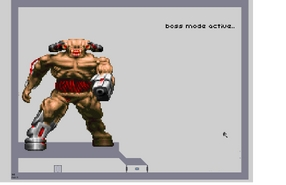
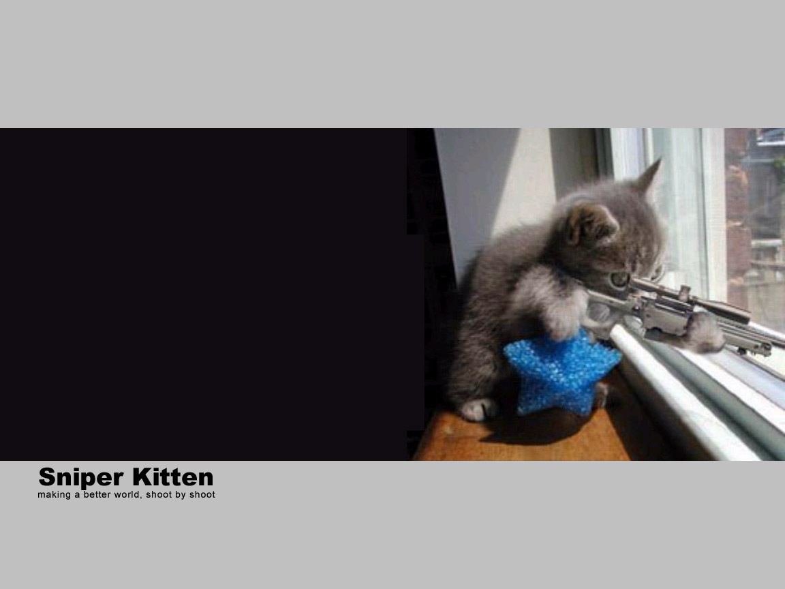
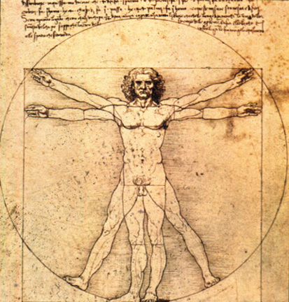
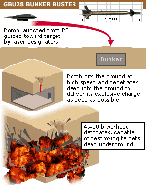
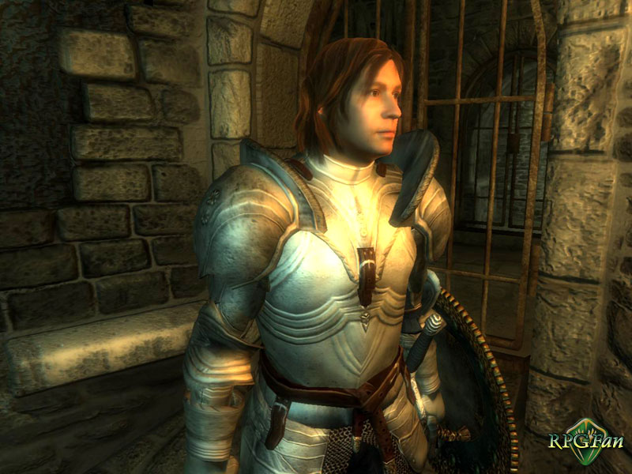
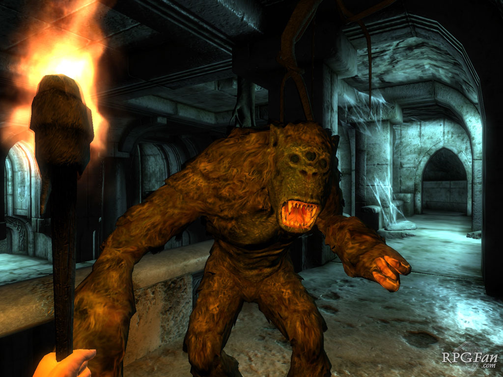
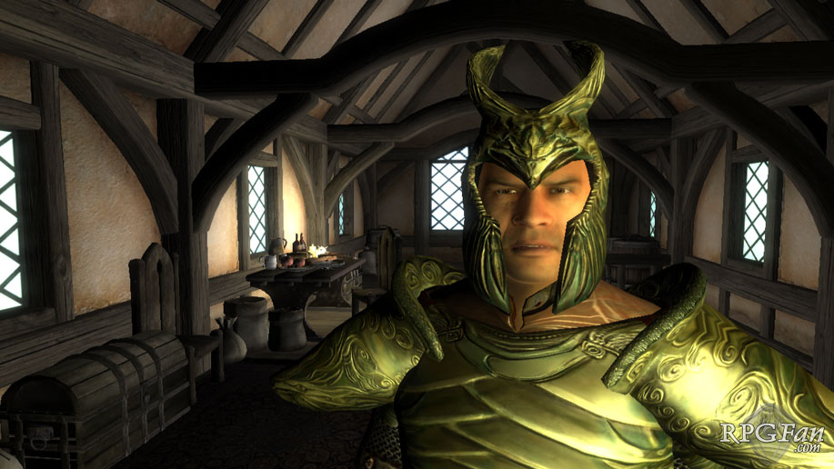
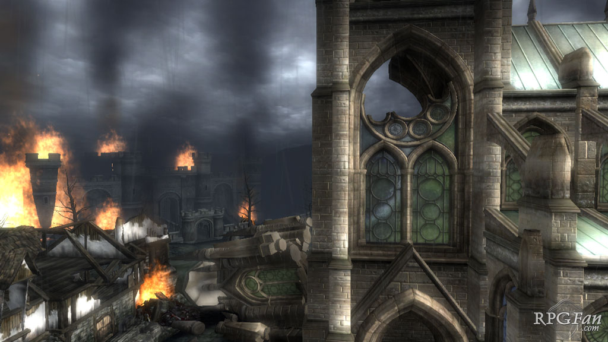
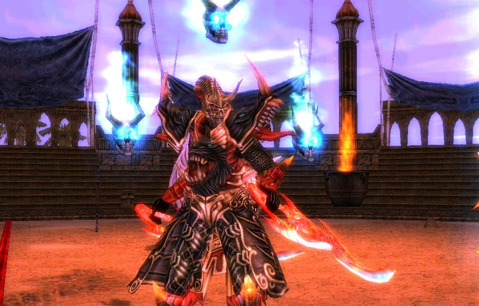

#2995 1 2005-05-25T03:55:08Z kai hi. im just curious in who remembers the games listed below. i can get a good idea of who a person is by what kind of games they like. everybody likes different
games and no 2 gamers are alike. i hope u remember the games below, add a few if i forgot any:
1. the old russian dos tetris
2. lemmings
3. kings quest I, II, and III
4. load runner
5. prodigy internet (not a game, but the first dos built internet)
6. chess master
7. duke nukem I and II
8. lands of lore: the throne of chaos
9. mixed up mother goose
10. rail road tycoon
11. sid myers civilization
12. dune
...
i probibly missed a lot but it leaves room for u to fill the rest in

#69437 5 2005-05-25T18:44:38Z kai Hmm... Maybe I'll use this opportunity: I played this game in the 90s were you were this guy and you moved around on ice, and if you touched the ice moving in one direction you'd keep going in that direction. Ther'd be arrows that would shoot you in a certain direction, and it was all a puzzle... Does anyone know what game that is?
nope, sorry. it rings a bell, though, but i cant remember the name.
im also adding a few i forgot:
12. the oregon trail
13. jurrasic park (dos)
p.s. does anyone remember that game "the incredible machine"? you know, the one where you make over exagirated contraptions which sole perpose is to look cool working (or destroy stuff

)
#69439 10 2005-05-25T18:55:23Z kai 
...its pitch black and i keep walking into the wall. i suk at this game...
#69451 8 2005-05-25T19:24:00Z kai 
omg i love commander keen!!! i think i still got it too...hmm...*logs off and starts playing*

#69453 3 2005-05-25T19:29:03Z kai do u use snes emulators? just wondering how u made the screen shots...

#69476 10 2005-05-25T20:41:46Z kai of course doom counts as old skool (i think i was six when it came out)
and...um, my sig wasnt meant to be racist...

#69623 19 2005-05-26T04:58:27Z kai i was never really good at pac-man but i liked it any way. does any one remember "carrier command"? it came on those floppy diskes that were littiraly floppy?
p.s. for the sake of conflict i'll change my sig...
#69971 26 2005-05-27T16:04:40Z kai does castlevania count as old?I love that game. 
caslvania for nintendo counts, but the new one for playstation is definetly out.
same goes for doom: it was never 3d until the 64 version came out and doom3 on x-box sure as hell (hehe, i made a funny...) doesnt count as old skool. but doom 1, 2, and final doom was what i grew up playing all the time. i remember buying the shareware version of doom when i was 6. it only had 1 episode, but played it over and over until i memorized every level by heart. i truly love that game

.
edit: i dont know for sure if the castlevania for the snes counts... it still is pretty old but im not sure if it counts...
does any one remember carrier command? it had the same style of graphics as star fox for snes.
#3034 1 2005-05-27T16:19:50Z kai its kinda complicated to explain but here's my problem:
i dont have the money for internet so i go to the lizberry every day. i cant log on to numa since you need to log on through N. the point is that i make maps at home and i am unable to put them on numa. please help!

#69982 98 2005-05-27T16:42:04Z kai oops sorry about that...i kinda forgot to sign in

#69990 3 2005-05-27T17:30:09Z kai no...they program the computers here so that u cant download anything on the hard drive...
do u think they'll let me post them here? the level data, i mean.
#3036 1 2005-05-27T17:49:41Z kai see
here for the reason that im doing this...
Attachment (lost): post-5-1117217666.txt
#69995 3 2005-05-27T18:17:01Z kai thx maniac...
theres only one small problem, it will only let me attach one level per post (i cant drag to sellect them all).
Attachment (lost): post-5-1117217821.txt
#69996 4 2005-05-27T18:17:37Z kai so...
Attachment (lost): post-5-1117217857.txt
#69997 5 2005-05-27T18:18:14Z kai i...
Attachment (lost): post-5-1117217894.txt
#69998 6 2005-05-27T18:18:48Z kai have...
Attachment (lost): post-5-1117217928.txt
#69999 7 2005-05-27T18:19:24Z kai to...
Attachment (lost): post-5-1117217964.txt
#70000 8 2005-05-27T18:19:46Z kai do...
Attachment (lost): post-5-1117217986.txt
#70002 10 2005-05-27T18:20:09Z kai this...
Attachment (lost): post-5-1117218009.txt
#70004 12 2005-05-27T18:21:33Z kai dam, u cut me off in mid sentence, but thx
#70006 14 2005-05-27T18:26:10Z kai ooooooooops...

sorry, my bad. i'll get right on it *now i have to go home, put it in a zip, and walk all the way back to the lizbary

...*
#70009 16 2005-05-27T18:38:16Z kai thx. i do what i can
here they are, the one's you've seen and a few u have'nt. thx for your imput,
i'll start working a bit harder on them
edit: crap! my disk got dameged!!! I'll get back to u...
#70017 18 2005-05-27T18:58:09Z kai i got a few from there, its a great sight. i'll prob go there tomorrow. ive already made WAAAAY to many posts, and im really tired of running back and forth from the lizbary to my house and back...so peace for now, i'll see you tomrrow
Attachment (lost): post-5-1117220289.zip
#3052 1 2005-05-28T13:35:57Z kai here are the maps i made (three new ones included that were made last night!)
Attachment (lost): post-10-1117287357.zip
#70224 3 2005-05-28T13:56:43Z kai thx
#71281 32 2005-05-31T17:10:02Z kai Just remembered, One Must Fall (OMF). That was a tad more recent but still for DOS.
i remember that game. it never ran right with my comp. how about these ones?
indy 500 sim
friday th 13th (nes)
sega gamegear
*god, im getting old*

#71294 9 2005-05-31T19:08:55Z kai oops, forgot to sign in. *sigh* this just isnt my day...
#71303 34 2005-05-31T19:59:24Z kai oh, crap... i remember cyberdogs. it was ok but again, another game that didnt run right on my comp. when i was playing that, and other games, i had a dell pentium 1 procceser type computer. th game i really loved and still do to this day is that "zombies ate my neighbors" game. i got it as a rom on a snes emulator on my computer.
#71398 36 2005-06-01T04:18:43Z kai na, thats th game alright. (u say psycho like its a bad thing

)
#71400 47 2005-06-01T04:35:50Z kai You are totally crazy if you want to spend the rest of your life alone, playing this game as a hermit who sits in front of the computer. Maybe you have a life but you must not have a very good one if you don't want to get married.
ya know what? im happy being that hermit u speak of! as far as im concerned, my computer IS my wife! i tend to her every needs and when she starts f***ing up i hit the bitch

(heh,heh just kidding...) . but seriosly, i really dont know. maybe if i meet somone
kind, loving, and sweet then ya.
#71535 54 2005-06-01T20:22:38Z kai I'm uncomfortable with sex.
There. I said it.
*runs away like crazy*
*hits a tree*
i relate to that. i've had sex only three times and...um, i was a bit...um..."unprofessional" so they say (but they DID say i was pretty big..."size-wise"...if u know what i mean

).
#71542 57 2005-06-01T20:52:39Z kai now im deppressed.
i feel for ya dude,
my mom comitted suicide when i was 16. she was my only parent, so her death turned me into an orphan. th time spent from age 16 to age 18 was located in hospitals and residentials...im 20 now and i still find myself crying myself to sleep occasonaly.
i agree with u totally: dont surround yourself with life, unless your're willing to surround yourself with death, too...
...i think about death everyday. i look forward to it.
#71546 11 2005-06-01T21:02:38Z kai i still have the old version (and th new). i didnt even notice the difference till brickman said somthing.
#71552 59 2005-06-01T21:15:44Z kai thx, kablizzy. dont get me wrong, im not suicidal or any thing, its just i have a strong belief that our existance is based solely on violence, loss, war, greed, vengance, power, and alot of things negative. but of course their are alot of joys to life. u cant have light without shadow and vise versa, so to say.
but to get back on topic, im am seeing this one person (or at least trying to get into a relationship with her, and no im not a stalker). and i truly belive that i could spend th rest of my life with her.
#71780 75 2005-06-02T16:45:57Z kai i think that would be a good idea, but then again my depresion is getting worse and worse with every bad exp i read (th crazy pills help a little
).
End Point: lets move th depresion elsewhere, shall we?
#71783 16 2005-06-02T16:51:57Z kai I suppose this thread serves no purpose anymore, unless you have a whole factory full of maps implementing interesting techniques.
I don't believe everyone should have a thread dedicated to their maps. Lucidium has one because he fits the above qualification.
Come to think of it, I may need a thread for mine...
know that u mention it, i just realized that i that, on an average, i pump out three or more maps a night

! maybe that factory of yours may come in handy...

#71784 5 2005-06-02T16:57:43Z kai #71786 6 2005-06-02T17:12:45Z kai let me take a wack at this...
once upon a time there was a hermaphidite hermit that shved his toes every brunch, but this day is quite different than any other day: he is getting a visitor (and every hermit knows its polite to be hairy in the presence of company)!! *knock, knock!* "goodness to betsy he's here!" squeeks th hermit...and before he could answer th door god blew th earth up cause she was having a pms episode.
the end
(man, i need to lay off th pot...)
#3132 1 2005-06-02T17:35:42Z kai i really dont know where to put this...i guess here will do. i used to play duke nukem 3d and make my own maps and stuff. i deleted all of it a long time ago, but just the other day i found a disk contaning some of my maps!! so for those who play duke3d and/or make maps for it, take a gander at these! and even though i deleted duke, i think i will make this thread to trade duke maps
.
Attachment (lost): post-27-1117733742.zip
#71792 23 2005-06-02T18:10:44Z kai i was in a hospital and one day my grandma came to visit and i remember that i
asked the staff if my mom was with her...he didnt answer. when i got to the
visiting room, i noticed the room was filled with staff with my grandma in the
middle. i then noticed somthing amiss...and then came the news. she was dead.
my mom killed herself. i remember that i couldnt cry, i dont know why but i
couldnt. i was too shocked. i didnt know why she would do such a thing to me, to
my grandma. only two years later did i cry about it. and only two years later did i
found out who was responsible. i learned that my moms current boyfriend had
physicaly abused her three days before her death. i learned that she was in a
manic deppresive state the whole three days. my mom never had luck with men.
every one was physicaly abusive...even her father. i guess this one pushed her
over the edge.
you ask me what hate is?
well i have to say i HATE that man. the
very thought of him makes me sick to my stomach. if i ever see him im terrified
of what i'll do to him. that, my friends, is what hate means to me.
#71793 17 2005-06-02T18:18:31Z kai for th heck of it.
#71795 72 2005-06-02T18:47:36Z kai 1.kai
2.kai
3.kai
4.kai
5.kai
6.kai
heh, heh, i cheated...... :rolleyes:
#71796 75 2005-06-02T19:00:44Z kai go, maniac, go!!!
#71802 50 2005-06-02T19:55:42Z kai #72088 3 2005-06-04T00:35:50Z kai yeah, i kinda feared that...
#72089 80 2005-06-04T00:38:23Z kai That was kinda useless.
However, thanks for reminding me to play it.
lol
edit:102?!! jesus u have alot of time on ur hands...
#72097 25 2005-06-04T00:58:54Z kai my hate is what keeps me going, tells me im alive. anger is my friend. so is hate. but dont mind me, i forgot to take my crazy pills today so right now im in an espeically nasty mood.
*roommate says somthing to me*
*i bite his head off*
*litiraly*
#72731 121 2005-06-06T08:12:31Z kai im sorry, its just too hard to swallow the concept of god. its mutch easier for me to stick with no religon whatsoever. Buuuuttt... IF theres a god, i belive god's a girl, no matter who u are
.
#72734 46 2005-06-06T08:30:42Z kai i dont like the drugs (but the drugs like me)
-marilyn manson
i really relate to that song...
#72739 48 2005-06-06T08:54:15Z kai i havnt seen it yet, but ive really been looking foward to it. the sith take over the galaxy... 'bout f*****g time. jedi suk. sith kick ass.
#72741 8 2005-06-06T09:00:05Z kai runescape's an ok game, i guess.
*logs off and starts playing zelda*
#72768 123 2005-06-06T14:08:29Z kai lol, its just more fun for me to think gods a girl
.
#72770 44 2005-06-06T14:26:55Z kai i picked write in- im sorry to say i dont give a god dam on th value of life or death. when my roomy REALLY pisses me off, i have serios thoughts on taking a knife from the kitchen and stabing him 600 and 66 times, but i dont want to go back to jail so i dont. ever since those two guys in cali put on heavy duty bullet proof vests and used ak's with armor piercing rounds and went on a rampage, ive had fantasies about doing th same thing (only if i could get away with it).
end point: id kill a person if i could get away with it and feel no remorse for him.
#72771 13 2005-06-06T14:30:15Z kai lol. very nice, blizz.
#3204 1 2005-06-06T14:56:58Z kai hi, my names kai. i made up the entire world i am about to tell u. i hope u like it.
Main Story:
Krall, a world constantly at war. The 11 races, High elves, Dark elves, Humans, Dwarves, the Vampyr, Werewolves, the Undead, Orcs, Trolls, Goblins, and the Wood elves, just cant seem to come to a treaty they all can agree to. In the year 3050, there was Great War between 5 of the races that lasted 100 years. The Dark elves made an alliance with the Undead Alliance (werewolves, vampyr, and the undead) and the Tog (trolls, orcs, and goblins), while as the High elves strengthened their treaties with the dwarves and the wood elves. It was a very bloody war. For 40 years the Dark elf alliance lay waste to all in its path. But the tides turned 10 years later. It then turned into a 50-year struggle with the high elves and dark elves until finally the dark elves surrendered. When the war was finally over it looked like peace had come for good on the world of Krall. But looks can be deceiving. It is the year 5100 and tension is once again seeping over the races...
Bios:
Kai:
Born in a small wood elf village in the year 3100 along with his 3 brothers, Loki, Loktono, and Lotu. His parents were killed during a orc attack in the great war leaving him and his brothers orphans. They were then taken to be raised by a dwarven couple who found them crying in a wooden clearing near their village. The only survivors of their village, they grew to love their adopted parents as if they were they were their real ones. They lived with them in a mine that the dwarven couple inherited from their grandparents. There, they mine energon krystals to sell for food, clothes, etc., ect..One day, while the dwarven couple were on errands, Kai left the living area of the mine to see the energon krystals his adoptive parents sell (which he wasnt allowed to do) and was attacked by a symbiotic energon krystal. Hearing their brother's screams, Loki, Lotu, and Loktono ran to see what was the matter and were also attacked by symbiotic energon. The dwarven couple came home to find Kai, Loki, Lotu, and Loktono bloody, unconsionce, and host to the energon. After four months of laying in bed, Kai and his brothers finally gained concioncness to find that the energon accepted their bodies for a new home. Over the years they find that the symbiotic energon gives them the power to regenerate all wounds and makes them 100x stronger and faster than normal elves. Kai and his brothers are now 2,000 years old and are skilled assassins. Theyre adoptive parents died 1,900 years ago and Kai and his brothers now own their adoptive parents mine, and Kai now acts as the leader of his brothers.
Loki:
The more chaotic of his brothers, Loki shows great hatred for the orcs. He once disemboweled an orc for sneezing in his presence. Thortak, who is friends with Lotu, is the only orc loki will tolerate.
Lotu:
Lotu is the more sympathetic of his brothers. While he still holds great hatred for the orcs who killed his birthparents, he doesn't hate (or kill) every orc he meets. He is actually friends with an orc named Thortak. He met Thortak when he saved him from a Grendali that nearly killed them both. They've been friends ever since.
Loktono:
Certainly the largest of his brothers and also the most passive. He holds no hate for the orcs. He is, in fact, a very gentile elf, a lover of nature. Gentile, of course, aside from being a skilled assassin.
Thortak:
Son of Thorl, Thortak wants nothing to do with war after hearing Lotu's story about his parents. He recently convinced his father to make peace with the high elves, dwarves, and the wood elves.
Thorl:
He was general in the great war and was severely wounded. His left arm was cut off and was also cut in two. He amazingly survived and now has a robotic left arm and machines attached to his waist which manages food waste and creates levitation which allows him to move around. He is now the ruler of his race as well as the trolls and goblins.
Kaos:
Father of Kai, Loki, Lotu, and Loktono, he was the ruler of Krall before the dividing of the races. During the war, he went to a small village to visit a friend. There he met Kira, a stunningly beautiful elf girl which he soon married. He abandoned his position of ruler of Krall and raised a family with his new wife kira. They were attacked by orcs and were killed in the great war. Kaos's sons know nothing of their royal heritage.
Kira:
Wife to Kaos and mother to Kai and his brothers, she was raised in a small wood elf village and was the sweetest elf girl you could meet. She died with Kaos by the hands of orcs.
Thadius:
The first king of the humans in the year 1234 and probably the most just.
He bore a son, Thadius the 2nd, and died two years later.
Thadius the 2nd:
Becoming king after his fathers death, he bore two sons: Thadius the 3rd and Henry, who being oldest is heir to his fathers throne. Thadius the 2nd's sons keep the Thadius bloodline running for a 1,000 years.
Colvenyan:
Becoming king in the year 2320, his bloodline rules to this day.
Narayn Colvenyan:
The current ruler in the Colvenyan bloodline, he has 3 sons and 2 girls: Naryan the 2nd (age 13), Lanthodin (age 6), Windaltin (age 19), Milisa (age 3), and Tiffany (age 17).
He is a wonderful father and a great king to his people.
Nathanyal:
Ruler of the dark elves, he is half elf, half vampyr. 5,000 years old, he is the oldest living creature on Krall. Unlike most half breed Vampyr, he is immune to sunlight and does not crave blood (but he does enjoy it). He has a dark elf wife named Nara and a son Named Greede.
Nara:
Nothing is known about her. She never speaks and her whereabouts are unknown.
Greede:
A half breed like his father. He was not originally named Greede. He was born in the year 4050 and was named Fintull but changed his name years later to Greede. He says it's because of his love for the humans greatest weakness.
Gwandal:
The current ruler of the dwarves. Nothing much is known about him since the dwarves keep to themselves most of the time. No information is known about past rulers, either.
Grimdanil:
In the year 120, Grimdanil was said to make a deal with the lord of the underworld, Kosmoss. He sold his soul for immortality. He now is a rotting undead carcass and is king of
zombies who did the same thing.
Kolvine:
Clan leader of the werewolves. No other information is known.
Draqule:
The father and king of all vampyr. In the year 2121, he came across an old witch who sold him a bottle of blood saying it would make him live forever. The rest is unknown.
Kita:
Current Queen of the high elves and ruler of all wood elf provinces. Born in 3100, she became the youngest ruler ever in the year 3111. She is good friends with kai and has a bit of a crush on him as well.
Bolo:
A half breed demon whose elf mother and demon father were killed in the great war. He now as a war advisor for Kita.
Tashya:
One of the last of her kind, she is from a dying race called felionians. Felionians are the ancient cousins of elves. They have human bodies with cat like ears and tails. Female felionian's saliva has remarkable healing powers and female felionians have the unusual ability to sexually arouse any male of any race with touch. It was because of this that humans abducted women felionian's from their villages to be sold as "love slaves". Inenvertedly, the humans that did this eventually killed off the race to leave only a handful of felionians left alive. Tashya is one of a handful of felionian survivors. She is 1,500 years old and Loki's long time lover. She has red hair, shoulder length, light brown skin, green eyes, and gold colored tail and ears. She is full figured, both ears pierced (as well as her nipples, heh, heh), and has dark spots trailing down her front and back. She's five foot three, a d-cup, and has a very playful attitude. She wears gloves all the time, except when she is around Loki. She is the only women who can keep Loki calm and tranquil, and she and Loki also have plans to get married and raise a family.
Suki:
Nathanyals top satanic priest and chief advisor. He is best known as the "devils right hand man" for the atrocities that he performs on young virgins. A highly skilled warlock, he is the most powerful dark magic user on Krall.
Race Information:
High Elves:
Once, long ago, the elves were of one kingdom. Nathanyal was actually the founder of this unification. But his views became harsh and his rule cruel over time. It was then when the elf Lundo formed a rebellion against Nathanyal and was exiled to a remote island along with his followers. It was there that the high elf council was formed and a kingdom made.
Dark Elves:
After exiling Lundo and his followers, Nathanyal then founded the dark elf council. He erected a huge tower 50 miles high and 100 miles wide, the Dark Tower. The old kingdom that unified the elves was destroyed under Nathanyal's orders. Only the Dark Tower remains.
Wood Elves:
Wood elves are basically high elves that leave High Elf island and make a new, simple life for themselves in woodlands. Wood elves lead simple lives in small villages. Wood elf men are skilled hunters and proud warriors. The best assassins usually come from wood elf villages.
Dwarves:
Masters of technology and lords of the earth, dwarves make things way before their time. It was the dwarves, in fact, that made Throl's prosthetic parts (for a high price considering the great war). To dwarves, EVERYTHING is all about money. They are the first race to master energon and the only race to mine it. At the price they sell energon, some say it's highway robbery they way monopolize energon (e.g. kinda like irac and how they sell oil).
Undead Alliance:
The undead alliance consists of zombies, vampyr, and werewolves. Formed long ago by Grimdanil, the Undead alliance form their villages and kingdoms in graveyards. Unlike zombies, vampyr and werewolves can procreate and make new members through biting. Werewolves must change to werewolf form on full moons, but can also change at will as well and are deathly allergic to silver. Most vampyr are deathly allergic to sunlight and all vampyr will die if they're impaled through the heart. Besides sunlight, silver, and heart impalement werewolves and vampyr are immortal. Zombies can never die (except when attacked with an unk shield) but can be deterred by holy implamits.
Tog (trolls, orcs, and goblins):
Most are Brutal and dumb. Few are kind and intelligent. Masters of war, you will find quite a few intelligent orcs. Trolls are as stupid as they come and extremely vicious. Goblins are quick, vicious, and VERY greedy. Orcs and goblins have excellent eyesight.
Humans:
Skilled in the art of magic, the best mages ever known were human. Leading small kingdom's, human kings refused to take part in the great war.
Other Creatures:
Grendali:
If you see one, run. These things are the deadliest creatures imaginable. Few have met one and lived, let alone get away without losing something vital. Unspeakably cunning and frighteningly steathfull, the only thing that gives one away is when the crickets stop chirping, for they only hunt at night.
*Dragons:
There are four types of dragons: albino dragons, black dragons, angelic dragons, and godwraith dragons. Albino dragons and black dragons both breath fire, but angelic dragons breath ice and godwraith dragons breath lightning. All are vicious and all are telepathic.
*Titans:
Forty-foot tall giant beatle-like creatures with spring loaded necks for ramming and a five-foot thick skull. But don't get me wrong, even though they look scary they're quite gentle. In fact, they're herbivores. They travel in herds on plainlands.
Wraiths:
Specters that roam the land attacking travelers. You can't see them but you can hear them breath if you listen very carefully.
Phoenix:
Magical birds made of fire. They dont die and come back to life from the ashes like they say. They live forever.
Demons:
You rarely see them nowadays, but they are infact the legendary 12th race. Legend says that when all eleven races are at war at the same time, the gates of hell will unlock and release the race to end all life. The demons that walk on the face of Krall right now are in fact friendly. They are demons that were exiled from hell for their kind nature.
Pandorians:
Nothing remains of this ancient race except energon. Some energon still possesses energy, and the life of the pandorian it used to be and are now symbiants looking for a host. Other energon only possesses energy and most energon possesses nothing and is used for currency. When a symbiotic energon a.k.a. pandorian krystal takes a host, it removes the heart and takes its place pumping its hosts blood. The host gains extraordinary strength and speed, and can regenerate wounds and lost limbs. The host also aquiers special abilities such as armor that comes directly from the pandorian krystal and spreads over the entire body with just a thought and comes off just as easily, and the armor provides a mask that lets the host breath in any environment. Also the pandorian krystal spreads stalks through the arms to make weapons that extend from the forearms, also with thought. Forearm weapons have six different types: straight blade, scythe, double axe head, whip with axe blade tip, and projectile krystal shards. The pandorian krystal also gives the host the ability to fly.
Golems:
Giant Behemoths made of rock, iron, or steel. Golems may not be quick, but are tough to kill and can pack quite a wallop with their over sized fists.
She-Golems:
Made of granite, she-golems are quite different than their male counter parts. For one, she-golems have six arms and are nimble enough to wield a sword in each arm with skill. Also, she-golems only come in granite form.
*possible to raise.
Environments:
Grasslands
Plainlands
Forest
Mountains
Tundra
Wastelands
Volcanic
Sea
Swamplands
Floating islands
Desert
Ores:
Necroalloy:
An unbreakable metal remarkably light in weight. Only black and stronger fire weapons can cut through it.
Firestone Krystal:
Used to make fire weapons and firestone warriors. Like the pandorian krystals, firestones are the remnants of an ancient race. There are two types of firestones: firestones that possesses the life it once had, and firestones that possesses fire energy and both are indestructible to all types of ores except energon and chaos krystals. There are key differences between pandorian warriors and firestone warriors. For one, firestone warriors arm weapons are the same as pandorians except they are made of fire energy, not krystal. Its the same thing with the armor, too. Firestone warriors also possess the the gift of flight. But the most unique aspect of firestone warriors is to raise the temperature around them to temperatures as hot as a sun. Both types of firestones come in seven different color types. Heres a list from weakest to strongest:
Red
Green
Black
Blue
White
Light-----}
}-------equally as powerful
Dark-----}
Energon:
Nothing remains of the ancient race of pandorians except energon. Some energon still possesses energy, and the life of the pandorian it used to be and are now symbiants looking for a host. Other energon only possesses energy and most energon possesses nothing and is used for currency (one krystal is worth 1,000 gold). All energon is indestructible to all types of ores except for chaos krystals. When a symbiotic energon a.k.a. pandorian krystal takes a host, it removes the heart and takes its place pumping its hosts blood. The host gains extraordinary strength and speed, and can regenerate wounds and lost limbs. The host also aquiers special abilities such as armor that comes directly from the pandorian krystal and spreads over the entire body with just a thought and comes off just as easily, and the armor provides a mask that lets the host breath in any environment. Also the pandorian krystal spreads stalks through the arms to make weapons that extend from the forearms, also with thought. Forearm weapons have six different types: straight blade, scythe, double axe head, whip with axe blade tip, and projectile krystal shards. The pandorian krystal also gives the host the ability to fly.
Chaos Krystal:
Used in lightning weapons and chaos warriors. Chaos krystals are practically the same as firestone krystals but with small differences. Instead of fire for armor and weapons, chaos warriors use lightning. And instead of firestone warriors unique ability to raise temperatures, chaos warriors can fire lightning bolt blast attacks. Both have the gift of flight. Chaos krystals come in seven color types. Here is a list from weakest to strongest:
White
Black
Red
Green
Blue
Light-------}
}------equally as powerful
Dark-------}
Flowstone:
Magic stones possessing the ability to record five spells per stone.
Gold:
Used for currency.
Silver:
Used for currency. 50 silver adds up to one gold.
Copper:
Used for currency. 100 copper adds up to one gold, 50 copper adds up to one silver.
Diamond:
Used for currency. 1 diamond is worth 500 gold.
Ruby:
Used for currency. 1 ruby is worth 200 gold.
Emerald:
Used for currency. 1 emerald is worth 100 gold.
Weapons:
Fire Weapons/Armor:
Weapons so hot they can slice through steel like butter. The firestone welded in the hilt allows the holder to turn the fire on and off with thought. When the fire is turned off the fire weapon looks and feels like a normal steel weapon. Fire armor also turns on with thought and provide protection from weapons and armor weaker than it. Here's a list of different fire weapon/armor and their prices (lightning weapons have the same prices and weapon sizes except the color order is different. Instead the color order for lightning weapons is white, black, red, green, blue, and light/dark... NOT red, green, black, blue, white, and light/dark. Otherwise both lists are the same.).
red fire straight sword (lg): 300g
red fire straight/curved sword (md): 250g
red fire straight/curved sword (sm): 120g
green fire straight/curved sword (lg): 450g
green fire straight/curved sword (md): 300g
green fire straight/curved sword (sm): 250g
black fire straight/curved sword (lg): 500g
black fire straight/curved sword (md): 450g
black fire straight/curved sword (sm): 300g
blue fire straight/curved sword (lg): 550g
blue fire straight/curved sword (md): 500g
blue fire straight/curved sword (sm): 450g
white fire straight/curved sword (lg): 650g
white fire straight/curved sword (md): 600g
white fire straight/curved sword (sm): 580g
light/dark fire straight/curved sword (lg): 1,200g
light/dark fire straight/curved sword (md): 1,050g
light/dark fire straight/curved sword (sm): 920g
red fire broad sword/axe (lg): 450
red fire broad sword/axe (md): 320g
green fire broad sword/axe (lg): 520g
green fire broad sword/axe (md): 480g
black fire broad sword/axe (lg): 780g
black fire broad sword/axe (md): 650g
blue fire broad sword/axe (lg): 850g
blue fire broad sword/axe (md): 800g
white fire broad sword/axe (lg): 1,250g
white fire broad sword/axe (md): 1,100g
light/dark fire broad sword/axe (lg): 2,580g
light/dark fire broad sword/axe (md): 2,200g
red fire kitana: 850g
green fire kitana: 1,000g
black fire kitana: 2,300g
blue fire kitana: 3,800g
white fire kitana: 4,400g
light/dark fire kitana: 5,300g
red fire scythe: 600g
red fire scythe 'n' chain: 840g
green fire scythe: 910g
green fire scythe 'n' chain: 1,200g
black fire scythe: 1,120g
black fire scythe 'n' chain: 1,700g
blue fire scythe: 1,500g
blue fire scythe 'n' chain: 2,310g
white fire scythe: 2,130g
white fire scythe 'n' chain: 3,220g
light/dark fire scythe: 3,570g
light/dark fire scythe 'n' chain: 4,850g
red fire arrowhead: 50g
green fire arrowhead: 60g
black fire arrowhead: 70g
blue fire arrowhead: 80g
white fire arrowhead: 90g
light/dark fire arrowhead: 100g
red fire staff: 120g
green fire staff: 180g
black fire staff: 220g
blue fire staff: 280g
white fire staff: 320g
light/dark fire staff: 500g
red fire shield (lg): 540g
red fire shield (md): 420g
green fire shield (lg): 620g
green fire shield (md): 550g
black fire shield (lg): 760g
black fire shield (md): 630g
blue fire shield (lg): 870g
blue fire shield (md): 730g
white fire shield (lg): 950g
white fire shield (md): 820g
light/dark fire shield (lg): 1,200g
light/dark fire shield (md): 1,000g
red fire warlords axe/broad sword: 2,300g
green fire warlords axe/broad sword: 3,400g
black fire warlords axe/broad sword: 4,000g
blue fire warlords axe/broad sword: 5,500g
white fire warlords axe/broad sword: 6,200g
light/dark fire warlords axe/broad sword: 7,600g
red fire armor: 500g
green fire armor: 650g
black fire armor: 840g
blue fire armor: 920g
white fire armor: 1,250g
light/dark fire armor: 2,500g
Normal Weapons and Armor:
Normal metal, wooden, and leather weapons and armor. Here's a list of these weapons and armor and their prices:
steel straight/curved sword (lg): 200g
steel straight/curved sword (md): 150g
steel straight/curved sword (sm): 100g
titanium straight/curved sword (lg): 350g
titanium straight/curved sword (md): 200g
titanium straight/curved sword (sm): 150g
necroalloy straight/curved sword (lg): 500g
necroalloy straight/curved sword (md): 450g
necroalloy straight/curved sword (sm): 300g
steel mace (lg): 150g
steel mace (md): 80g
titanium mace (lg): 200g
titanium mace (md): 160g
necroalloy mace (xlg): 500g
necroalloy mace (lg): 450g
necroalloy mace (md): 350g
steel broad sword/axe (lg): 350g
steel broad sword/axe (md): 200g
titanium broad sword/axe (lg): 400g
titanium broad sword/axe (md): 350g
necroalloy broad sword/axe (xlg): 540g
necroalloy broad sword/axe (lg): 500g
necroalloy broad sword/axe (md): 450g
steel kitana: 300g
titanium kitana: 540g
necro alloy kitana: 870g
steel scythe: 300g
titanium scythe: 540g
necroalloy scythe: 870g
necroalloy scythe 'n' chain: 920g
wooden staff: 50g
steel staff: 100g
titanium staff: 150g
necroalloy staff: 300g
leather vest: 15g
leather gloves/boots: 10g
leather pants: 15g
bronze chain mail: 20g
steel chain mail: 50g
titanium chain mail: 100g
necroalloy chain mail: 150
bronze plate mail: 100g
steel plate mail: 150g
titanium plate mail: 200g
necroalloy plate mail: 250g
bronze plate armor: 250g
steel plate armor: 300g
titanium plate armor: 350g
necroalloy plate armor: 420g
full bronze body armor (hvy): 560g
full bronze body armor (md): 420g
full bronze body armor (lght): 240g
full steel body armor (hvy): 700g
full steel body armor (md): 650g
full steel body armor (lght): 500g
full titanium body armor (x-hvy): 1,000g
full titanium body armor (hvy): 950g
full titanium body armor (md): 800g
full titanium body armor (lght): 720g
full necroalloy body armor (mega-hvy): 3,030g
full necroalloy body armor (x-hvy): 2,500g
full necroalloy body armor (hvy): 1,200g
full necroalloy body armor (md): 1,000g
full necroalloy body armor (lght): 980g
wooden shield (lg): 50g
wooden shield (md): 20g
bronze shield (lg): 80g
bronze shield (md): 50g
steel shield (lg): 150g
steel shield (md): 100g
titanium shield (lg): 280g
titanium shield (md): 220g
necroalloy shield (xlg): 500g
necroalloy shield (lg): 450g
necroalloy shield (md): 300g
bronze arrowhead: 5g
steel arrowhead: 10g
titanium arrowhead: 15g
necroalloy arrowhead: 30g
silver arrowhead: 10g
wooden bow: 40g
wooden crossbow: 60g
steel crossbow: 100g
titanium crossbow: 150g
titanium auto-crossbow: 300g
*warlords axe: 400g
*warlords broad sword: 500g
*only comes in necroalloy.
steel shuriken: 5g
titanium shuriken: 10g
necroalloy shuriken: 15g
steel dagger: 10g
titanium dagger: 20g
necroalloy dagger: 30g
steel calatroops: 30g per box
Magic/Mechanical Weapons:
A list of rare magic/mechanical weapons and their prices.
staff of blinding light: 500g
shadow bomb: 50g
hell staff (fires explosive necro
plasmic fire balls): 5,000,000g
gyro-saw sword: 2,500g
unk shield (protects against the undead and vaporizes zombies with holy light blasts): 3,000,000g
soul bomb (releases 20 poltergeist to attack your enemy for 20 min): 9,900g
dark blade (bladed weapons that posses a deadly poison on the blade): (dark blade sword) 50,000g (dark blade axe) 10,000g (dark blade dagger) 800g (dark blade kitana/scythe) 21,000,000g
ice blade (a steel sword that freezes anything it cuts into solid ice): 465,000g
Items:
Items and their prices.
backpack: N/A
rope: 10g per foot
steel grappling hook: 50g
healing herb (regain 5 hp): 5g
life water (regain 5 mp): 5g
condensed healing herb (regain 30 hp): 50g
jellified life water (regain 50 mp): 100g
gas bomb: 30g
smoke bomb: 10g
flash grenade: 60g
silver cross: 10g
holy water: 5g
jar of poison: 50g
flowstone: 100g
flint: 5s
candles: 5s
matches: 30g
tent: 50g
sleeping bag: 30g
ink: 5s
parchment: 5c
quills: 5c
gas mask: 20s
stimpack (regain 60 hp): 100g
vials: 10s
quiver: 20g
compass: 5c
tobacco pipe: 30s
cherry/apple/strawberry/
mint/original loose pipe tobacco: 5c
hooded cloak: 20s
cane: 10s
bandanna: 5s
aurora bottle (makes a bright light for 10 min): 30g
pocket watch: 20g
pocket knife: 5g
lock pick kit: 40g
tranquilizer darts: 5g
air gun: 50g
steel net: 80g
leather pouch: 30s
belt: 5c
morphine: 40g
pan flute: 20s
fishing rod: 10g
bait bag: 3c
steel chain: 30g per foot
shackles: 20g
steel cage: (lg) 150g (md) 50g (sm) 20g
dragon cage: 2,500g
energy possessing energon: 400,000g
Treasures:
Only a few treasures are known of.
staff of pandoria: Fires energy blasts. Powered by energon krystals.
phoenix bomb: Only 5 exist on krall. A bomb powerful enough to create cataclysmic explosions 200,000 miles wide.
the gods chariot: A veical that is powered by energon and flies at speeds of 300 mph.
energon sword: a sword made of solid energon.
Spells:
Spell come in 6 categories: fire, earth, wind, water, light, and dark. Here is a list of spells, their categories, and mp cost.
Fire Spells lv.1:
fire ball: conjures a ball of exploding fire that you hurl at your enemy (-10mp, -15hp from enemy).
bolt: charges your hands with static electricity (-5mp, -13hp from enemy).
electrify: electrifies an object for 2 rounds (-20mp, -20hp from enemy if he touches the electrified object).
fire shield: summons a protective dome fire that surrounds you for 2 rounds but is useless against water spells, plus all fire attacks used inside the shield doubles in attack power and wind attacks only double the domes strength (-15mp,
-30hp from enemy if he touches fire shield).
wyrm: summons a wyavren shaped fire monster that attacks your enemy (-15mp, -25hp from enemy).
Fire Spells lv.2:
hellfire: this spell works by firing it into the ground where it then travels underground toward your enemy and then erupts upward in a blast of fire and magma right under your enemy (-35mp, -40hp from enemy).
fireblast: fires a blast wave of fire at your enemy (-25mp,
-30hp from enemy).
multiple fire ball: fires up to 5 fire balls at your enemy at once (-10mp every fire ball, -15hp from enemy every fire ball).
lightning ball: conjures a ball of lightning that you throw at your enemy (-20mp, -30hp from enemy).
lightning shield: summons a protective dome of lightning that protects you from any attack except water (which will hurt you for -40hp) and lasts for 2 rounds, plus any lightning attack used inside the dome doubles in attack power (-30mp, -60hp from enemy if he touches the lightning shield).
Fire Spells lv.3:
reign of fire: fire ball rain down from the heavens on your enemy for 1 round (-60mp, -50 hp from enemy for every fire ball).
lightning blast: fires a blast wave of lightning at your enemy (-45mp, -50hp from enemy).
heat wave: once spell is activated, the temperature will rise 20 deg. EVERY TURN until spell is dispelled (-10mp every turn, -5hp from enemy every turn).
multiple lightning ball: fires up to 5 lightning balls at your enemy at once (-20mp each lightning ball, -30hp from enemy each lightning ball).
black fire ball: conjures a explosive black fire ball that you hurl at your enemy (-30mp, -45hp from enemy).
multiple black fire ball: fires up to 5 black fire balls at your enemy at once (-20mp each black fire ball, -30hp from enemy each black fire ball).
black fire blast: fires a blast wave of black fire at your enemy (-50mp, -55hp from enemy).
Water Spells lv.1:
water ball: summons a ball of condensed water that is strong enough to break bones when fired at your enemy
(-10mp, -15hp from enemy).
water shield: summons a protective dome of condensed water that surrounds you and blocks against fire and earth for 2 rounds, but lightning spells and weapons will hurt you (-35hp) and ice spells will freeze the dome and trap you inside. Useless against wind spells. All water spells cast inside the dome will double in attack power (-20mp, -45hp from enemy if he attacks dome with a lightning weapon).
ice ball: summons a ball of ice that freezes any thing it touches into solid ice (-10mp, -100hp from enemy).
hypothermia: makes enemy freezing cold, so cold he'll feel just like if he jumped in a lake in mid winter and stayed in there for two hours. Lasts 3 rounds (-35mp, -20hp from enemy every round).
ice shield: summons a protective dome of ice that freezes anything that touches it. Useless against fire, lightning, and earth. Water attacks against you will double in attack power when dome is up. Lasts 2 rounds (-35mp, -100hp from enemy if he touches dome).
amphibiac: allows you to breath in water for 5 rounds (-25mp).
Water Spells lv.2:
water blast: fires a blast wave of high pressure water (-40mp, -50hp from enemy).
multiple water ball: fires up to 5 water balls at once (-10mp each water ball, -15hp from enemy each water ball).
ice blast: fires a blast wave of ice that freezes anything it touches into solid ice (-65mp, -300hp from enemy).
reign of ice: ice balls rain from the heavens on your enemy for 1 round (-78mp, -50hp from enemy each ice ball).
acid ball: fires a ball of acid at your enemy (-45mp, -78hp from enemy).
acid shield: a protective dome of acid that burns any thing it touches for 2 rounds. Useless against fire, wind and lightning spells, but impervious to earth spells, water spells, and physical attacks (-34mp, -78hp from enemy if he touches dome).
Water Spells lv.3:
multiple ice ball: fires up to 5 ice balls at once (-10mp each ice ball, -100hp from enemy each ice ball).
multiple acid ball: fires up to 5 acid balls at once (-45mp each acid ball, -78hp from enemy each acid ball).
acid blast: fires a blast wave of acid at your enemy
(-120mp, -360hp from enemy).
reign of acid: acid balls rain from the heavens on your enemy for 1 round (-250mp, -78hp from enemy each acid ball).
diamond dust: fires 20 solid ice daggers at your enemy
(-100mp, -5hp from enemy each dagger).
acid spit: allows you to spit acid in your enemies face
(-35mp, -85hp from enemy).
Earth Spells lv.1:
earth ball: conjures a ball of solid rock that you hurl at your enemy (-10mp, -20hp from enemy).
earth shield: summons a protective dome of rock, granite, and iron that surrounds you for 2 rounds and is immune to fire, lightning, wind, light, and dark spells. Water spells will weaken and destroy the dome (-35mp).
vine grip: summons vines that wrap around your enemy for 1 round. Weak against fire (-24mp).
box: 1 enemy gets trapped inside a steel box for 5 rounds (-30mp).
summon 1: summons a she-golem to do your bidding for 3 rounds (-45mp, -15hp from enemy every attack from she-golem).
Earth Spells lv.2:
reign of might: boulders will rain from the heavens on your enemy for 1 round (-55mp, -40hp from enemy each boulder).
rock punch: summons a giant hand of granite to smite your enemy (-50mp, -60hp from enemy).
armor: summons a protective suit of mega-heavy necroalloy that lasts 6 rounds (-45mp).
earth blast: fires a blast wave of rock, granite, and iron at your enemy (-35mp, -57hp from enemy).
multiple earth ball: fires up to 5 earth balls at once at your enemy (-10mp each earth ball, -20hp from enemy each earth ball).
Earth Spells lv.3:
summon 2: summons a iron golem to do your bidding for 3 rounds (-75mp, -98hp form enemy for every time golem attacks).
suicide: creates an explosion inside of you that sprays steel spikes in every direction (-200mp and is fatal to you,
-150hp from enemy).
iron curtain: creates a protective dome of necroalloy surrounding you for 2 rounds (-64mp).
quick sand: turns any floor into a sinkable substance
(-21mp).
widow: fires a ball of web that explodes on contact into a super sticky mess that traps anything caught in the explosion for 4 rounds (-34mp).
Wind Spells lv.1:
wind ball: conjures a small ball of ultra violent winds that you hurl at your enemy (-10mp, -35hp from enemy).
wings of god: makes you as light as air (-35mp).
wind shield: summons a protective dome of 6,000mph winds that is impervious to all. Lasts 2 rounds (-250mp,
-150hp from enemy if he touches dome).
wind blast: fires a blast wave of 200mph winds at your enemy (-45mp, -70hp from enemy).
Wind Spells lv.2:
multiple wind ball: fires up to 5 wind balls at once at your enemy (-10mp each wind ball, -35hp from enemy each wind ball).
pressure cooker: depressurizes your enemy for 3 turns
(-40mp,-20hp from enemy every turn).
steam ball: conjures a ball of 200 degree steam that you hurl at your enemy (-14mp, -50hp from enemy).
steam blast: fires a blast wave of 200 degree steam at your enemy (-25mp, -70hp from enemy).
Wind Spells lv.3:
multiple steam ball: fires up to 5 steam balls at once at your enemy (-14mp each steam ball, -50hp from enemy each steam ball).
steam shield: summons a dome of 200 degree steam that surrounds you for 2 rounds (-42mp, -35hp from enemy if he touches dome).
control: makes object/enemy light as air and under your mental control for 1 turn (-70mp).
Dark Spells lv.1:
poison 1: poisons 1 enemy for 2 rounds (-20mp, -25hp from enemy each round).
petrify: petrifies 1 enemy for 3 rounds (-15mp).
fear 1: causes 1 enemy to retreat (-20mp).
puppet 1: causes 1 enemy to attack 1 of his own (-20mp).
detect: scans for lost souls in limbo (-5mp).
Dark Spells lv.2:
soul snatcher: lets you capture 3 lost souls in limbo
(-15mp).
poison 2: poisons 2 enemy for 4 rounds (-40mp, -25hp from enemy each round).
fear 2: causes 2 enemy to retreat (-40mp).
puppet 2: causes 2 enemy to attack 2 of their own (-40mp).
summon undead: summons 5 zombies to do your bidding for 1 round (-67mp, -10hp from enemy each zombie attack).
Dark Spells lv.3:
misery: your enemy will hallucinating massively for 2 rounds (-55mp).
dark matter: a projectile made of lost souls (-50mp, -30hp from enemy for each lost soul used to make dark matter projectile).
poison 3: poisons 3 enemy for 6 rounds (-60mp, -25hp from enemy each round).
fear 3: causes 3 enemy to retreat (-60mp).
puppet 3: causes 3 enemy to attack 3 of their own (-60mp).
Light Spells lv.1:
heal 1: heals 20hp (-10mp).
cure 1: cures any poison (-10mp).
medusa begone: cures petrify status (-10mp).
life 1: revives a player to half hp (-35mp).
lumos: shines a bright light for 2 rounds (-20mp).
turn undead 1: turns 1 undead (-15mp).
Light Spells lv.2:
heal 2: heals 50 hp (-35mp).
cure 2: heals to full hp and cures all poison (-45mp).
life 2: revives a player to full hp (-100mp).
turn undead 2: turns 2 undead (-35mp).
teleport: only to places you have seen (-10mp).
levitate: you can fly for 5 rounds (-65mp).
Light Spells lv.3:
curtain: an invincible dome of white magic will surround you for 1 round (-120mp).
heal 3: heals to full hp (-60mp).
lullaby: puts an enemy to sleep for 3 rounds (-40mp).
nova bomb: creates a smart-bomb like explosion of powerful white magic at your enemy/enemies (-200mp,
-350hp from enemy/enemies).
sooth: convinces the weak minded you're right (-5mp).
turn undead 3: turns 3 undead (-60mp).
Rules:
You HAVE to start off with 500g, 400s, 300c, 35/35 mp, 50/50 hp, level 1, 1 small straight/curved sword, 10 healing herb, 10 life water, 1 backpack, and 1 wooden shield. You can pick what race you want to be out of the following choices:
human
elf
dwarf
felionian
orc
and you can choose from ONE of the following backgrounds:
shit farmer
son/daughter of a shit farmer
pig herder
son/daughter of a pig herder
boy/girl who lives with his/her dying father/mother
farmer
he/she wakes up in the woods and remembers nothing of his/her past
*ALL towns, villages, and kingdoms may have a weapons shop, armor shop, pub & inn, item shop, colisium, stables, and magic shops. *SOME pubs have dragon pits for gambling. Spells are NOT accessible until 500/500 hp and mp are reached. I DECIDE when level, spell and mp/hp advancements are given. You can be a spell caster, warrior, or a thief. ALL classes can cast spells, but spell casters learn spells more quickly.
*all businesess close at night
Stat Sheet Example:
gold:___________________________________
silver:__________________________________
copper:_________________________________
diamond:_______________________________
ruby:___________________________________
emerald:________________________________
energon:________________________________
name:__________________________________
age:____________________________________
race:___________________________________
sex:____________________________________
class:___________________________________
level:___________________________________
hp:_____________________________________
mp:_____________________________________
spells:___________________________________
________________________________________
________________________________________
________________________________________
________________________________________
________________________________________
________________________________________
r-hand:__________________________________
________________________________________
l-hand:__________________________________
________________________________________
feet/hands:_______________________________
________________________________________
body armor:______________________________
________________________________________
________________________________________
stable:___________________________________
________________________________________
________________________________________
items:___________________________________
________________________________________
________________________________________
________________________________________
________________________________________
________________________________________
________________________________________
thats all for now! i still have to make more weapons/spells/items, and think of more races and stories. if u want to play this game, pm me with your race, age, name, sex, class, and background of ur choice.
Attachment (lost): post-24-1118069818.rar
#72854 3 2005-06-06T22:18:19Z kai ok, i think i see where u got 11 races from. i think u counted Vampyr, Zombies, and Werewolves as completly diff races. they're all undead dude, they all fall in th cat. of an "undead race". and please dont tell me u counted pandorian, chaos, and firestone krystals as "races". they're all wiped out for gods sake. and there's not enough felionians and demons on krall for them to be counted as a race, they fall into the cat. of a sub-race or an endarngerd speices ('sempt for demons which are the 7th race). and troll's, orc's, and goblins all come from the same family tree so i counted them as one race. and belive me, as powerful as u can get in this game it is more than possible to capture and tame titans and dragons, but its much easier to just steal a titan/dragon egg and go from there.
and belive me, there is nothing uniqe about humans. it will take longer to get more powerfull and its a pain in th ass as it is to figure out how im gonna have human and an elf players (caracters u can PLAY, not npc's) in th same game and make it so that a human player can live as long as an elf player, too make it fair. i mean, it would really suk to be a human caracter and only be able to live 90 to 100 years while you're elf comrades live on to kick ass another day (i think humans are th only mortal caracter in th game).
and lastly, this is only a rough draft. krall is meant to use dice rolls, meant to be a real-time rpg, not a forum rpg. But im doing my best to make it one.
im not trying to be an ass, or anything (if i came off as one, im truly sorry), and need all the help i can get to make this run as smoothly as possible. i'll take all critacism into carful thought, and am open to any sugesttions. and id like to point out that this rpg is nowhere near finished.
#73014 5 2005-06-07T14:16:34Z kai being heroic, fair, and in complete control of my emotions dosnt appeal to me. id be a sith.
#73020 6 2005-06-07T15:01:21Z kai no apoligies neccesary, dude. i am quite pleased that u read th whole thing, and have made some changes regarding what u said. plus, i need help with spell ideas, im fresh out.
Attachment (lost): post-24-1118156734.doc
#73266 8 2005-06-08T17:20:07Z kai issue#1: ummm...i suk at math so would u mind explaining??
issue#2:
q: Can it happen to the player? Can the player even find possesed crystals?
a: the player can find possessed energon and become host to it as well.
q: Does the player have to fight possesed people?
a: yup.
q: Does someone who's possesed maintain some control or does the crystal completely take them over?
a: you maintain control, not the energon.
q: Can it be "cured"? How long does it take for the changes to ensue?
no it can't be cured and changes happen from 1 week to 2 months.
Also, I think that most of the changes should be internal (although they can have the same effect)--hardenedl bones instead of armor, alterations to the lungs instead of a mask, etc (the strength, speed and regeneration are already fairly internal). Not only would this make them deadlier by allowing them to blend in with normal people, it also seems more realistic then armor extending over the body at will and a bit cooler. Do whatever you want with weapons though.
i think i'll leave it th way it is.
...this make them deadlier by allowing them to blend in with normal people...
they can blend in quite fine, trust me. its when they get in a fight that they then show thier true colors.
issue#3: hmm...not really an issue is it

?
issue#4: thx, i'll keep that in mind
.
issue#5: just got finished with changing th issue with towns and kingdoms, but th stat sheet stays as is. And if you're talking about these backgrounds:
shit farmer
son/daughter of a shit farmer
pig herder
son/daughter of a pig herder
boy/girl who lives with his/her dying father/mother
farmer
he/she wakes up in the woods and remembers nothing of his/her past
...nope, im quite serios.
#73268 125 2005-06-08T17:23:21Z kai And why was Jesus an aramic male? I say he was black! I mean c'mon, he was persecuted everywhere, he called everyone "brother"...
i second that.
#73270 38 2005-06-08T17:27:49Z kai now i remember
skyroads!!
#73272 56 2005-06-08T17:34:01Z kai omg...sorry but im to old for that lego crap, but it rocked when i was younger.
nevermore: wat, u dont like the satanic anime dude avatar
?
#73288 127 2005-06-08T18:59:22Z kai yah, but didnt it say somewhere in th bible that god took wool from a sheep to make jesus's hair? thats th same thing as "giving your son a fro", in a manner of speaking...
#3243 1 2005-06-08T19:09:01Z kai i picked th second one. i have to say i hate my addiction and love it at th same time. if your an under aged smoker, dont bother posting. under aged smoking, i think, is pitiful and disgusting.
#73292 129 2005-06-08T19:23:31Z kai if i hallucinated it, that would explain th purple dancing rino in th pink
tu-tu.
#73297 7 2005-06-08T19:58:57Z kai gamehippo. v1.4 from metanet.
#73299 5 2005-06-08T20:05:52Z kai i love u too, brickman
.
#73302 19 2005-06-08T20:12:24Z kai im torn between rpg, rts, and 3dfps. but i voted for 3dfps.
#73488 22 2005-06-09T18:16:11Z kai happy dying smokers? we're all dying and you may be hit by a bus today crossing the street. there's no guarantee, with anything.
smoking is an opiate. it calms, and induces slight euphoria. it may be harlmful. but
we're all self destructive in our nature.
it's fair enough that all you non-smokers are preaching against this. but how many of you will drive? then you'll be polluting my pedestrian air.
oh but wait, don't get off your high horses just yet. there's plenty more to preach against. energy wasting (leaving your pc on all night, fridges, washing machines) excessive consumption of food, excess of material possessions...
we're all detrimental to this planet and each other, the world is a shitty place...
personnaly, i see every reason to smoke.
i couldnt have said it better myself
.
#73493 6 2005-06-09T18:23:58Z kai well put, ianqb.
#73502 14 2005-06-09T19:49:16Z kai it seems to me most of u sith lovers love th religion only for th hoodies. isnt th main thing that u get to kill everyone as an unstopable homicidal killing machiene that kills?
#73750 28 2005-06-10T18:14:24Z kai
Yeah, pariah, everyone knows that Super Metroid is the best game of all time.
sorry,but i have to disagree. th zelda series is th best, hands down.
#73753 19 2005-06-10T18:26:56Z kai Hell, sparring with yoda? Howzabout fighting yoda in a full-fledged any means necessary to-the-death battle?
niiiiiiiicccceeeeeeeee.......
#3265 1 2005-06-10T21:01:04Z kai most of u know th deal with my mom, but now somthing worse is happining. my only reletive left, my grandmother, had a heartattack recently. after she got back from th hospital she caught a cold and was sleeping all th time. just 30 min ago i got word from my clinition that shes back in th hospital cause she thought she was having another heartattack. what she accually had was a blood clot in her brain.
this is scaring th shit outta me. if she dies, i'll be left utterly alone in this world...
...i guess im looking for emotional support right now
.
#73785 108 2005-06-10T21:08:17Z kai my computer humming. it's not too great.
nice. i get that all th time with my computer, cept its more of a grinding type humming noise...
somthing lurking-by djkai
#73794 3 2005-06-10T22:45:17Z kai thx, and ya i do got friends. i used to belive that if my grandma dies, i would have no reason to live. but now that i have so many close friends, i couldnt bear to leave them like that, like my mom left me.
and you have us metaneters
#73795 93 2005-06-10T22:50:54Z kai how about th all popular "no, but i know somday i'll be hooked into that she-devils net of dispair" choice???
#73807 24 2005-06-11T01:18:11Z kai dont mess with th sith, u jedi panzies...
#73810 26 2005-06-11T01:41:08Z kai
Ska and techno? No one listens to ska and techno. Nobody.
wtf, i happen to love techno (but i hate ska, btw). i love techno, trance, rock, hardcore rock, house, hard house, eurodance, ebm, and a little future pop. love eminem and my fav rock band is korn (although i do love system of a down so much it conflicts with my love for korn). music is my life. its wat keeps me calm.
#73998 287 2005-06-11T16:48:34Z kai tetres
#73999 23 2005-06-11T16:57:10Z kai i really dont care wat size a girls boobs are, for th fact that all boobs are...ahem..."speical in thier own way". with large tits u can...urm..."put th hotdog in th bun" so to say, and small breasted women have sorta a cute factor to them
.
#74003 68 2005-06-11T17:17:34Z kai i was at th court house to see my probie when i happened to see all these news vans and cop cars on this singal street next to th court house. when they started putting up crime scene tape i really got curios. so i asked a reporter wats going on and he said "there's a dead guy in that car over there." and just when i looked to where he was pointing, an officer pulled th body out of th car right in sights veiw. he quickly covered th body with a body bag, but before he did i saw that th dudes face was blown away (sombody shot that dude like he owed him money...or somthing like that).
so no, i cant say my eyes are virganal.
...but seeing th dead body wasnt when i lost my virginal eyes. that is if u count porn...
#74018 7 2005-06-11T18:12:45Z kai hey! there's no "ren and stimpy" option!!!!!
#74058 13 2005-06-11T21:56:55Z kai wat th mother f*** yo....i tried to get on anarcy online, registerd for a free account but theres no link to play th god damn game!!!!!!!!! HELP!!!!!
#74473 15 2005-06-13T18:05:53Z kai nice, nevermore. i on the other hand am a hardcore pot-head. i cant smoke right now cause im on probation till may of next year, but i'd have to say weed is totally harmless. i never have a craving until sombody happens to pull some out. in my last apartment, someone came over every day and smoked me up cause he didnt want me to buy some street crap and od. thats another thing: never, NEVER buy weed from a stranger, thats th stupidest thing u could do. buy it or smoke it from sombody u trust, or dont buy or smoke it at all.
#74474 74 2005-06-13T18:10:58Z kai its probably all th shit that farmers pump in chikens and cows to make them groe bigger and grow faster. its th same crap they pump in turkeys.
#74506 18 2005-06-13T20:26:00Z kai all i have to say is, "GOD DAMMIT, I WISH THEY'D STOP F***ING PISS TESTING ME ALREADY!!!!!!!!1111!!!!!!!1oneoneoneone!!"
...ahem, so there u have it
.
#74508 76 2005-06-13T20:30:34Z kai well put.
#74511 36 2005-06-13T20:35:40Z kai i call guose turrents "gouser turrents" for obvios reasons...
#3299 1 2005-06-13T21:53:46Z kai GUILTY!!!
at least thats my oppinion...
#74545 7 2005-06-13T22:47:06Z kai i'm not serios about th options to th poll, btw, so dont take offense wedgie123
edit: hello patrick

#74551 26 2005-06-13T22:54:34Z kai Quote
Nothing illegal shall be posted in the "Bash & Thrash" forum, which was created mainly to allow you to publicly vent out steam with cuss words. Any such illegal actions include but are not limited to content that is regarding:
--> drug usage (you may refer to prescription medicine, but be aware that posts will be monitored nonetheless);
--> alcohol;
--> illegal P2P file-sharing;
--> pornography or excess obscenity/vulgarity/indecency;
--> anything harmfully deceptive, continuously harassing (as in, towards a particular member of the forums), defamatory/libelous/slanderous (maliciously harming a person's reputation), or abusive;
--> anything sexually, racially, or ethnically objectionable or unlawful.
ooops...! sorry.......
#74558 29 2005-06-13T23:35:16Z kai lol i have to say that smoking cannabis could be better solcially in certain circumstances. for example. if a bunch of lads got together and got pissed then there stands a good chance that they could turn agressive and maybe go start fights and cause damage e.t.c
whereas if a group were to get together and get high then they would probably just sit around and talk shit for a few hours. i can honestly say that ive never seen canabbis turn anyone agressive or negative in any way. it only seems to chill people out and make them more spaced out lol
lol so true. so very, very true.
#74559 23 2005-06-13T23:42:53Z kai Game Boy Advance SP. It has some of the most fun games I've played and only costs about $80 if you don't already own one.
i have to go with u on this one
#74593 35 2005-06-14T03:37:38Z kai Hard drugs include nicotine, alcohol, cocaine, heroin, and MDMA.
Soft drugs include marijuana, ibuprofen, and caffeine.
u forgot DXM (which happens to be the drug im presently triping on right now
).
#74596 15 2005-06-14T03:44:59Z kai uhhhh....brickman? michael jackson a guy.
#74606 17 2005-06-14T04:12:26Z kai 
u rock keron!!!!!!!!!!
#74614 355 2005-06-14T04:36:36Z kai granted, but somthing went wrong in th proccess and ur now a little of both genders.
i wish i could stop smoking.
#74732 362 2005-06-14T16:14:21Z kai granted, but u ate th turnip and it turnes out it was rotten and u die from food poisining
i wish i was imortal
#74752 364 2005-06-14T17:40:41Z kai lol granted, but u ran outta gas and the engine blew up
i wish i had a thermal detinator
#74758 82 2005-06-14T18:44:12Z kai crap! thats why its been so hard to quit!!!
#74761 32 2005-06-14T18:47:03Z kai it does in my book

#74762 47 2005-06-14T18:50:38Z kai just to give u a heads up man, dont double post, its considered spaming.
There are a lot of individuals who come home from work and have a drink to 'take the edge off'. This is no different from other individuals who come home and smoke a small joint.
very true.
#74764 9 2005-06-14T18:59:25Z kai im still waiting till a 3d version of n comes out (i'll be waiting a looooong time, i know), but until then i think music, weapons (non-leathal weapons of course exp. smoke bomb, flash bomb, stones), and more than one room would be nice.
great_sea: anything is possible, u just have to work harder when making the impossible possible, and make sure to make it perfect
.
#74766 366 2005-06-14T19:13:32Z kai granted, but u have no money for games
i wish i was built like arnold schwatzanager
#74768 35 2005-06-14T19:20:59Z kai So anyone with a fucked up childhood who acts creepy should be locked up?
no, just mj
i think he's guilty but some of his songs are good.
funny, i feel th same way...
#74770 369 2005-06-14T19:26:01Z kai granted, but u cant turn it off and u see things that no man should ever see...
i wish i had a hot girlfriend.
#74774 372 2005-06-14T19:50:56Z kai granted. u have a car. in ur dreams.
i wish i had a job.
#74776 23 2005-06-14T20:00:23Z kai outta th list--system of a down, no questions asked.
my true favorite band/s--korn, metalica, tool, MM, NIN, dj dean, orgy, linken park, slip knot, L. skinner, KMFDM, ramminshtien, cradle, of filth, static-x, coal chamber, dmx, snoop dogg, eminem, chemical brothers, ect., ect.
i cant pick just one, music is my life. i not only listen to it, i produce as well (im aka djkai).
#74777 121 2005-06-14T20:04:26Z kai at th library, so im listening to nothing.
i would like to hear some "linkin park-one step closer"
#74781 112 2005-06-14T21:06:12Z kai it'll be like a never ending tradition
keep going, i say, u may break a world record
edit: 100th post!!!! yeayaa!!!
#74801 15 2005-06-14T22:40:55Z kai if i keep mine on over night th damn thing starts making this grinding whiring noise. i think it's th cooling fan for th power generator cause when i stick a key in th fan vent i hit fan and th noise stops, and when i take th key out th bitch starts up again. ya, i know, i got a stone age peice of shit. at least its a penium 3, but i wish i had a good video and audio card. right now i got zip.
edit: does that hibernation thing work on win98 too??
#74812 15 2005-06-14T23:08:49Z kai that bad huh? wow.
it looked so good from th screenshots too...
#74833 20 2005-06-15T01:11:55Z kai i only stop th fan long enough to make it stop th f***ing noise...
#74939 87 2005-06-15T17:13:32Z kai not to be an ass or anything, but its kinda fucked up to judge someone by th choices they make. u should worry more about jugdeing them for
who they are on the inside. th personallity and attitude is what makes u you, not th choices u make. if other people were to judge you for th choices you've made, would they treat u any different? i didnt think so. everyone has made really stupid choices in thier lives, but we get over them, not dwell on them. think about it.
#74942 124 2005-06-15T17:38:16Z kai a preist, a rapist, and a petefile walk into a bar...and thats just th first guy
#74943 376 2005-06-15T17:41:47Z kai granted. now your jokes not as funny as before.
i wish my penis was bigger
#74948 2084 2005-06-15T17:54:22Z kai a super mega plasmic googaly ray diliverer cannon thingy will sure as hell take care of that rock!!!!!!!!!
#74952 89 2005-06-15T17:58:21Z kai sooooooooooooooo...you're gonna hate me cause i wanted to see what somthing was like and then regret it for th rest of my life??
#74960 2087 2005-06-15T18:15:15Z kai an
anti-plug popper will stop that
#74962 91 2005-06-15T18:17:31Z kai whatever...
#74969 93 2005-06-15T18:26:20Z kai nver mind dude. im through with this topic, its annoying me to a point where i dont enjoy it anymore...
#74970 2089 2005-06-15T18:27:35Z kai de anti plug popper
anti-comeback stopper??
#74973 55 2005-06-15T18:31:11Z kai 1.lifetime supply of food
2.lifetime supply of water
3.hot japanise girl
4.hot spanish girl
5.hot hawiwian girl
#74976 2091 2005-06-15T18:34:02Z kai a mighty wind of doom will blow out ur flaming hand (but it fails to stop th destruction of what ever we're trying to destroy
)
#75481 2127 2005-06-16T20:49:27Z kai a farmer takes his pitch fork back
*farmer* "i'll take that u child killer!!!"
edit:oops...zues kills piosiden???
#75482 12 2005-06-16T21:00:22Z kai pheaa!! i am th king in procrastination, so bad at times it turnes to downright lazyness
. wait...thats kinda a putdown...to myself...
...oh, nevermind...tsukatu, go with brickmans idea, insomnia is ur friend, trust.
#75483 64 2005-06-16T21:03:27Z kai ...i know i should quit drugs...but its just so FUN!!!!
...*sigh*...i need a life a girlfriend and a job. bad.
#75495 2129 2005-06-16T21:34:34Z kai now how in th f*** am i supposed to remove karma!?!?!?!?!?!?!!?
...i know! religion!!!
#75867 2151 2005-06-17T23:27:49Z kai i burn ur recycling bin
#75868 14 2005-06-17T23:29:58Z kai i'll sleep when im dead.
#75869 105 2005-06-17T23:32:45Z kai NOTE: I have more automatic respect for someone who's given up smoking while addicted than someone who never smoked in the first place.
Hope you at least try Kai.
i've been trying to quite...i hate smoking, but its got me hooked. i know for sure that i'll quit somday, hopefully someday soon.
#75870 26 2005-06-17T23:34:57Z kai ah yeah sorry bout that, i used to be dislexic but now im KO.
lol, nice, who hit u??
#76263 2191 2005-06-18T23:35:30Z kai th government rejects ur bug spry on closer inspection...
#76265 112 2005-06-18T23:40:06Z kai i know its a disgusting habit, but quiting is harder than u think, siriosly...
#76266 394 2005-06-18T23:42:18Z kai granted, ur life is now utterly boring and u dont have a girlfriend.
i wish i was an oscer myer weener.
#76493 410 2005-06-19T16:42:34Z kai granted, but ur stuck speaking french for some reson, and nobody understands u now
i wish i was in the land of cotton, old times there are not forgotten...
#77032 83 2005-06-21T17:11:48Z kai Just to give you the heads up, try not to type using bad spelling and grammer, man, it's considered bad form
*sigh* i truthfully hate ignorant pricks who go all high and mighty about "grammer"
and "internet slang"...
...just to give
U a friendly warning,
bitch, DONT be a little know it all around me...
...*sigh*...i really need to learn how to ignore better...
#77035 441 2005-06-21T17:20:29Z kai granted, but for some reason u cant stop thinking about michal jackson (creepy, huh?)
i wish i didnt have such a bad temper...
#77040 2213 2005-06-21T17:27:18Z kai all right, there are so many f***ing random ass comments i dont know what the **** to remove. so i'll just say that a sniper turns stephen kings head into a mushy mess.
p.s. PLEASE dont f***ing ruin this...
#77045 2 2005-06-21T17:38:58Z kai as a professional pyro, i'll start this off...
match boxes are cool cause they're a source of fire and when u run out of matches u can burn the box. and if u happen to get 200 match boxes u could put them in a big pile and set it a-flame
. other than that, i dont have a friggen clue what to do with them (light candles in a dark room and
dance to luther vandross???
)...ok im done, that last comment about luther vandross left a hidioes image in my mind...
 LV's Edit: *cough* Just makin' sure everything's clean.
LV's Edit: *cough* Just makin' sure everything's clean.#77048 10 2005-06-21T17:43:40Z kai w...
t...
f...
...i want a second penis!!!!!!!!!
#77057 4 2005-06-21T17:59:52Z kai good god...the image...IT WONT LEAVE!!!!!!!!!
*starts laghing maniacally*
*picks up a gun*
*starts foaming at mouth*
*pulls trigger*
*head gets blown away*
*luther vadross pops out of head
*
#77059 18 2005-06-21T18:11:30Z kai fuck smacking her with a rubber fish, i'll smack her with my goddamn dick!!! fucking bitch...i seriosly hate people like that. u dont even want to know wat i want to do to her dog...
...i'll give u a hint, it has somthing to do with explosives...
#77063 6 2005-06-21T18:23:25Z kai preach oooooooooooon, my brother!!!!!!!!!
#77067 31 2005-06-21T18:54:32Z kai *takes a look at the last animation*
.........oh good god thats BAAAAAAAAAAAAD way to go....
#77102 85 2005-06-21T21:50:34Z kai i kinda think i overreacted a little... i didnt mean to snap at the dude i just dont like people critisizing what doesnt need to be critisized...
...ok, back to the topic at hand: weed? goooooooooooooooooood...
#77115 67 2005-06-21T22:19:01Z kai this suks...kablizzy was a cool mofo in my book and now he's gone.
...y'know, i have seen an abnormal amount of noobs loging on, but then again i cant say anything cause im still technacally a noob here. *sigh* things are gonna get really boring here. i'll be truthfull, even though i love this forum, n has lost its touch for me. the blizz's depature is making me wonder what my purpose here is on metanet...
now im reeeeaaaally depressed...
*starts looking for drugs to ease the pain
*
i'll miss u kablizzy...
#77117 2216 2005-06-21T22:22:48Z kai lighting kills them both
is it just me or is this game losing its touch?
#77118 446 2005-06-21T22:27:37Z kai granted, u are now creative in the ways of taking a dump. be specific next time.
i wish th blizz didn't go and i wish th swarm of noobs would die down
(yes, i know, i made two wishes. but i think they deserved to be said. i wont do it again.)
#77119 21 2005-06-21T22:30:44Z kai oh good god no, make the fattyness stop, my eyes cant take such a high cholosterol level!!!!!!!!!
#77128 14 2005-06-21T23:30:57Z kai i dunno but omg i wanna puppy like that!!!!!!
#77130 2219 2005-06-21T23:33:11Z kai alright were stuck in a loop again...
pollution takes care of the clouds
#77316 2 2005-06-22T17:39:45Z kai wow. that dudes an asshole...
dont sweat it man. i totally
flamed him for ya.
#77320 10 2005-06-22T17:45:29Z kai #77323 15 2005-06-22T17:48:50Z kai eyron!your sig says i can get a finished .sol WITH SECRET MODE!!!!!WTFOMG?!?!!?is it a JOKE!!!???did the mods get you!?!?!?WHAT?!?!?!?! 

oh good god...GO AWAY U F***ING NOOB!!!!!!!!
edit: sorry, but this is getting rediculous...
#77325 4 2005-06-22T17:52:48Z kai wait, there's a plan to get rid of the noobs???
good god i want in!!!!!!!!!!!
#77337 18 2005-06-22T18:04:14Z kai ...sorry?
hey, at least im putting some time in this forum unlike some...wait, im still a noob?? wtf, man...
*
walks away, royaly embarresed
*
but seriosly, this is not worth starting a new topic over. he couldve pm'd you.
#77346 44 2005-06-22T18:16:34Z kai daily lama: I'm not that much of a programmer myself, but I'll help out however I can.
Haven't learnt half- life or C++ (or whatever the C programming is called...) but, yeah, I'm offering my relative expertise at Photoshop to whoever wants it.
I'll help however I can- good on you.
its gonna be a while before i even learn the basics of c++, now that u mention it...but id be happy to review maps for ya. i think this is a great idea. send the maps at kai5005005@yahoo.com, if u want me to help that is.
ps. yeah, there really should be a n-art catagory (but then again, thats just asking for trouble exp. really baaaaaaad maps).
#77351 64 2005-06-22T18:30:45Z kai #77356 46 2005-06-22T18:43:08Z kai think about it, dude. numa and metanet is being attacked by armies of noobs, (yes i am still a noob, but im not jumping in the "hey lets spam and flame people and act reeeeeeeeeeeaaaaaaaaaaaaaaaaaaaaaally imature!!!" band wagon just yet) so with that said, just how many of these "new members" do u think will take their map making seriosly? i have a bad feeling that numa is doomed, but only time will tell that.
me? i dont like numa right now because of the people putting really f***ed up imput on other peoples maps. so, thus, ive put n on hold for a while, just until things are a little less chaotic.
#77361 2225 2005-06-22T18:53:35Z kai Hey how did I ruin it? I was following the track good enough. Trogdor was the one with the "hyper battlecruiser" comment! Anyway a lack of interest kills your poll.
SPAZ
what the deuce??? were still playing??? i thought the game was dead??
...whatever, stupidity kill's your lack of intrest. stupidity kill's everything in the end.
#77366 449 2005-06-22T19:01:49Z kai granted. you are now in jail for life.
i wish president george bush jr. dies in the most horrible way imaginable.
...yes, im a democrat. you got a problem with that?
#77371 135 2005-06-22T19:15:50Z kai hella yeah!
the jewish mafia?
("omg, they did a drive by curcumcition on that guy! call the police, he's bleeding profusly!!!!!"
)
#77375 4 2005-06-22T19:19:27Z kai huh?? naw, i hear what your saying but that guy was being a total ass, man. i apologize if i went to far, but i say he deserved it.
ps. i dont even use numa anymore. i cant take the bs that goes on there...
#77382 45 2005-06-22T19:33:03Z kai sooooooooo...he's kinda like a giant freaky ken doll? o good god thats a horrible image....
*barbie and ken in bed*
barbie: "ken, whats wrong? dont i turn u on any more?"
mj ken: "...huh? o sorry did u say somthing? i was thinking maybe we should get kids..."
barbie: "really!?!? you want to try for a baby!?!?"
mj ken: "...huh? no! i want to adopt a child. maybe like 2 to 40 little boys. what do u think?"
#77412 7 2005-06-22T21:02:13Z kai i f***ing HATE fallen dreams. ive only known him 1 DAY and im totally turned off by his fowl attitude...
#77414 2228 2005-06-22T21:04:28Z kai omg just let this die, this topic has truly run its course...
#77417 58 2005-06-22T21:06:29Z kai 4. someone to swim to 'the mainland' and plug it in
...wow.
#77719 137 2005-06-23T16:33:03Z kai hells yeah! (sorry, the guy who posted about the popemobile kinda reminded me of the jewish pimpmobile and th jewish mafia...and yes i am a unorthidox jew, btw)
hentai?
edit: i just made the jewish pimpmobile in ms paint!!!!
Attachment (lost): post-6-1119554063.rar
#77721 2237 2005-06-23T16:37:23Z kai a wooden bat smashes the tv box along with the tv
#77723 14 2005-06-23T16:43:13Z kai I bought a new mouse...
do i dare ask what u did with the old mouse?
all i know is when i got my wireless optical, my old mouse suffered a fate worse than death...
...every now and again i still find peices of it in my room, when i clean and all that good shit
.
#77724 452 2005-06-23T16:49:54Z kai Granted, but you have to supply the contents of those tanks...
*ouch* wow, thats...wow.
granted, that will be $250.00, please.
i wish everything was free, like in star trek.
#77727 302 2005-06-23T16:59:49Z kai ummm...its an "n"...right?? u should put somthing like: "if u can read this, then back the f*** up fool!!!" 5/10
#77730 20 2005-06-23T17:04:36Z kai done
#77733 70 2005-06-23T17:12:10Z kai OK then the lack of comment that was straight after my most. the ninja face, on its own after my post. that kinda just seems like your referring to something i had said. now that Ive spelled it out for you
ohhhhh...dude, no, nothing to do with u.
...i kinda got shy after i posted my intro, so i deleted it and "hid my identidy", so to say, with that ninja smilie. wow, dude, u take offense WAY too quick
.
#77747 304 2005-06-23T17:34:41Z kai oops, i changed it. how bout now? 8/10
#77748 2240 2005-06-23T17:37:37Z kai an exterminater takes care of those termites
#77755 306 2005-06-23T17:46:24Z kai lol, somthing tells me someones doing somthing quite wrong to that dog
.
oh yeah, 4/10
#77773 308 2005-06-23T18:27:05Z kai alright i think im gonna stick with this one for a while. i just cant find one that i really like (although i did run across one with a squrriel unzipping his fur to reveil a superman insingia lol, but i never found it again
). love ur avatar maniac 10/10!
#77774 7 2005-06-23T18:30:36Z kai Haven't you ever heard of roomates?
i have two. one of them is sooooooooooo anoying...
.
...um, i really dont know mare and raigen...i put yes just to see the poll results
.
#77792 2242 2005-06-23T19:16:47Z kai an angry whale smacks u and breaks harpoon in half
#77832 313 2005-06-23T20:58:09Z kai 10/10 maniac, i just never get tired of seeing the smilie hit himself
#77837 2244 2005-06-23T21:17:45Z kai a giant squid takes care of ur russan sub
#77838 460 2005-06-23T21:21:32Z kai granted, but u are now so smart that u realise the truth: we are living a lie and that lie
IS the matrix...
wish i could poop orange
#78034 141 2005-06-24T16:13:48Z kai HELL...uh...depends?
some of them are good but then again some are just plain rediculous...
KoRn?
#78035 2254 2005-06-24T16:20:31Z kai I get rid of those pills seeing as i ran outta my own crazy pills
#78372 98 2005-06-25T15:13:53Z kai ...It gives people mental illnesses. You seem to be saying 'what's wrong with finding the TV amazing?' You're right... there's nothing wrong... until it leads you to start getting paranoid, developing schizophrenia or something...
shiiiiit... iv'e BEEN had skizophrania since i was 6 so i have nothing to worry about...
drugs are alright in my book (cept for cocaine, heroine, and other non nature like sub.). if its natrualy grown, its ok to get stoned
#78373 2269 2005-06-25T15:19:38Z kai the sun explodes and gets rid of our pathatic world...uh...that pretty mutch takes care of everything including origanality, right?
#79012 147 2005-06-27T19:27:52Z kai hell...uh...who the hell is that???
dragon ball z/gt?
#79014 2280 2005-06-27T19:32:14Z kai wtf...NO VERBS!!!! *sigh* im guesing that i have to remove u, so i'll say a titanium lion takes care of u
#79018 332 2005-06-27T19:34:53Z kai i...um...3/10? sorry, i just dont think its that funny...
#79020 18 2005-06-27T19:43:30Z kai #79032 334 2005-06-27T21:26:54Z kai 8/10, pretty funny.
ps. I FOUND THE SUPER SQUIRREL OF DOOM AVATAR!!!!!!!!
#79037 2282 2005-06-27T21:33:07Z kai AN ANGRY WHALE WITH LASER BEAMS CYBERNETICLY ATTATCHED TO ITS HEAD MAKES SHORT WORK OF UR HARPOON GUN THINGY!!!!!!!
#79089 2286 2005-06-27T23:12:37Z kai a sharp pencil.
#79308 510 2005-06-28T18:59:32Z kai granted, but a zap drone sneaks up behind u and shoots u with an uzi.
i wish i was an unstopable killing machine
#79309 150 2005-06-28T19:02:50Z kai hell yeah.
doom?
#79310 50 2005-06-28T19:08:37Z kai omg that game is sooooooooo wrong
#79665 29 2005-06-29T18:32:53Z kai good lord, leave them alone...give them thier privacy for christs sake!
...whatever, its none of my biz anyway...u guys are sooo bad...
#79670 30 2005-06-29T18:47:32Z kai its not that im a perv or anything...well...uh...who am i kidding, i am a perv, but women orgasms are a total mystery to me! when guys splurg, everything goes limp after that, just like if u stand a stick straight up and then let it fall
. but when girls orgasm, wtf exactly happens!?!?!??!?!?!?! how does it feel?!!? how long does it last!?!?!? how long can u keep going!?!?!?
*sigh* i know, im pathetic...
#79672 2292 2005-06-29T18:53:30Z kai a
well aimed missile takes care of formica
...this is the last post i will make on this. this game has gone shit, i wont bother anymore...
#79992 36 2005-06-30T17:10:08Z kai im sorta a medium in this area...sure i hate alot of things, but i usually just deal with all that crap and sto my hate in the metaphorical "bottle" (ex. u know, how some people bottle up there anger and hate and never let it out? im one of those people.). i know, i know, one day im gonna snap and kill everyone around me, right? well, as long as i have my pain killers and booze i should be alright for a while...
#79997 493 2005-06-30T17:14:45Z kai if only n could do that in real life...*sigh*...7/10
#80000 12 2005-06-30T17:17:44Z kai i cant. all those magic eye things do to me is give me a headache...
#80006 33 2005-06-30T17:20:59Z kai I would prove that woman can be intelligent some times!!!
with the girlfriends that iv'e been with, that comment is anything but sexist!
#80014 95 2005-06-30T17:46:08Z kai Quote
name: kai
age: 5000
race: unkown (possibly elf?)
class: he-who-fucks-shit-up-and-breaks-things, Grand Master III
weapon of choice: dual scyth
hp:5000000000000/5000000000000
mp:6000000000000000000000000/6000000000000000000000000
special attacks (sp):
energy blast: -15d6mp, -15d6+5d4 hp from enemy. fires a blast wave of spirit energy at enemy.
krystal shard auto-gun: -12d4mp, -20d20hp from enemy. fires an endless amount of krystal shards at enemy.
special abilaties (ex):
advanced healing factor: +500000hp every sec.
dense skin and bone structure: cuts damage inflicted from enemy down 75%
atificail respiatory system: allows kai to breath in any enviorment.
weaknesses: unkown
beat that, u panzies
#81595 152 2005-07-07T00:47:53Z kai i love those things...hell yeah!
x-box? (i just got one
)
#81599 6 2005-07-07T00:56:51Z kai hey blizz, ur an admin now? congrats. the thing about teleporters is every time i play a map that has them, it gliches when i step through them. once i get teleported i cant touch anything exept for the tiles...
...is there a way to fix this???????
#81600 31 2005-07-07T00:58:27Z kai I was able to get one to work, once, for about 5 minutes after trying for half an hour. Usually I can't, though, and for some reason staring at them for too long makes me feel slightly sick.
same here.
#81923 11 2005-07-08T13:42:59Z kai I'm no expert on the japanese culture, but i do know this:
Dragonballs (or whatever) and Pokmon are not anim, They're crap.
I, personally, can't stand any anim, except what I saw in the animatrix...
That was cool
wtf? i happen to be a huge fan of the dragon ball series (but i have to agree with u on pokemon...). im starting to get the feeling that evreyone on this site hates dragonball/dbz/dbgt. are there any dragonball fans here?!!
heres my list:
blue gender
rorouni kenshin: the wandering samuri
dragonball/dbz/dbgt
flcl
ghost in the shell
inuyasha
cowboy bebop
ranma (only the manga books)
shaman king (again, only the manga books)
full metal alchamist
adult anime list:
la blue girl series
bible black
dragon pink
secret plot (manga)
slut girl (manga)
i might have missed a few...
#81927 66 2005-07-08T13:50:43Z kai do one of n killing george bush, or michal jackson.
ooh, OOH, or even better! have n kill richard simmons!!!!!!!!!!!!!!!!!
edit: just kidding...
#81931 26 2005-07-08T14:00:26Z kai
AND YOU GUYS ARE TOTALE ALL FAGS IF YOU DONT LIEK MY IDEA!!!!
well...i guess im a fag

.
#81934 155 2005-07-08T14:02:12Z kai i honestly dont know what that is...i'll go with hell yeah.
bacon?
#3651 1 2005-07-12T00:58:22Z kai well, i do. i mean, not everyone has the money to have x-box live. i understand that after quake arena, id wanted to focus on a single player game, and dont get me wrong, they did a "hell" of a good job. but single player usally has no reply value. i guess thats true for me with doom3.
edit: for some reason the emotio-cons didnt work, sorry bout that...
#82811 100 2005-07-12T01:08:18Z kai i dont "snort" anything, dude. and now that i mention it, i've been clean for 2 weeks now, and i think i'll keep going. i like myself better sober.
*scratches one of the list*
now if i could just quit smoking...
oh, and btw talk show host, im certainly not the best speller in the world and i would appreciate it if u would refrain from correcting me. it gets quite annoying. besides, u know what i was trying to say, right?
Attachment (lost): post-29-1121130552.jpg
#82814 25 2005-07-12T01:26:46Z kai ...ooooooooooook...i took a piss.
#82815 518 2005-07-12T01:29:32Z kai very dark, i like it. i think u should've used a different font, but besides that i cant find anything wrong with it...9/10
#83016 521 2005-07-12T20:48:57Z kai is this better?
#83021 5 2005-07-12T20:54:43Z kai theres just one problem with that...i have no video card, no sound card, i can barly run the original doom on my pc, plus im working with a pentium 3 processer.
end point: if i installed doom 3 on my pc, it most likely would explode
#83055 7 2005-07-12T23:29:01Z kai u probably can...i know that they have expansion packs for it, plus i know u can do custom levels. but, again, thats for the pc version of doom 3.
#83056 13 2005-07-12T23:37:34Z kai Oh I love those "spy" situations...
It's usually fun to do, unless you get caught...
...knocking a fan over by accident on the way...and accidentally step in a basket, bending a piece of scrap metal and making audible noise...
i dont think he'd make a good spy
#3667 1 2005-07-12T23:51:01Z kai i dont know about u, but im pretty tired of the same old enemies. u dont nessicarily have to put them in the next n, u could maybe make a patch? maybe an expansion pak, in a manner of speaking??
in all truth, i have no idea on what type of enemies should be made. i'll have to give it some thought...
...of course, nothing TOO imposible
#83065 4 2005-07-13T00:35:32Z kai i knew it! i had a feeling its been said before. how about an enemy that disguises itself as a tile??
#83066 15 2005-07-13T00:38:42Z kai im too fat to be a spy. a guard would hear me coming from 100 ft away
.
#83072 10 2005-07-13T01:08:22Z kai damn. did u get ur yard cleaned up yet???
#83075 35 2005-07-13T01:19:03Z kai Quote
name: kai
avatar: a squrial unzipping his fur to reviel a superman emblem
total postes: 163
title: metanet fanatic
um...at what post count do i get to choose a custom title?
#83076 6 2005-07-13T01:21:39Z kai alright, i get it, its been said. just delete the f***er already...
jeez, u act like u never made a mistake before, jesus...
#83176 13 2005-07-13T12:32:49Z kai okay, this is getting out of hand. first there was "whats your real name", now there's "where do u live". if someone makes a "whats ur bank account number", im never coming back.
god dam identidy theives...
*ahem* i live
here, on faneuil st.
#83258 45 2005-07-13T18:25:40Z kai You automatically get one if you reach 5000
He's asking to be able to choose his own, not get one. And I can raise it to 10,000 if you want ")
whoa...thats a lot of postes

.
#83259 4 2005-07-13T18:34:38Z kai *phew* for a second i thought this was gonna be another n00b post...thank god its not, metanet has enough already!
so maniac, is he a friend of yours?
#83260 30 2005-07-13T18:40:20Z kai i knew if u pressed "space bar" after n died that it would n explode, never knew about the tab and enter thing.
*off topic* mare, is your avatar faye from cowboy bebop? it sure looks like faye...
#83262 17 2005-07-13T18:47:33Z kai *Red Reamer* Why is incest illegal, when it's fun for the whole family?!
*Mark* what's so special about santa claus? he breaks into our homes and leaves packages for us. he is more of a security problem/terrorist threat than anything else.... why do kids like him so much?
omfgrofl!!!!!!!!!!!!!!!!!
cause they got the bubonic plage??
why does iangb keep runing into trees?
#83266 176 2005-07-13T18:54:43Z kai geez, how many hours a day do u spend on tt?!
#83311 49 2005-07-13T23:05:22Z kai *chasmyr* The correct answer is WHEN YOU EARN IT! A good way to do this is to beat one of trib4l's high scores
thats not gonna happen...i cheat too much
.
#83316 18 2005-07-13T23:17:50Z kai spirited away ain't all its cracked up to be. akira is...*splurges on himself just thinking about it*...the best anime ever made. nothing will never, ever, EVER compair to it.
#83318 9 2005-07-13T23:20:44Z kai heh heh, blowing stuff up rocks...
#83526 127 2005-07-14T21:17:53Z kai you know u play n too much when u start dreaming about it (i had a freaky dream about n falling down a never ending pit while collecting gold and avoiding enemies)
OR...u know u play n too much when u have dreams about metanet forum...and that was also a freaky dream...
#83654 166 2005-07-15T13:22:16Z kai hell yeah!
pootang pie?
#3694 1 2005-07-15T14:19:19Z kai i happen to have a guinuine piece of shit computer. it runs on a pentium 3 processor, has no vid card, no sound card (well, it has the one it came with), and it makes this annoying sound that sounds like a plane taking off...when i get my new pentium 4, i wll severly fuk this one up with a baseball bat.
so, do any of u have/had a slow computer?
edit: i changed the topic cause i was a dumbass when i put in the first one.
#83668 2 2005-07-15T14:27:57Z kai the penguin of death kicks ass!!!
#83674 59 2005-07-15T14:58:42Z kai #83675 19 2005-07-15T15:07:36Z kai porn.
which came first, the chicken or the egg?
#83684 3 2005-07-15T15:34:00Z kai its the power pack. u probably need a new un.
#83710 6 2005-07-15T18:14:10Z kai thx, but the party has yet to begin
. tomarrow im gonna be sooooooooooooooooooooooooooooooooooooooooooooooooooooooooooooooooooooooooooooooooooooooooooooooooooooooooooooooooooooooooooooooooooooooooooooooooooooooooooooooooooooooooooooooooooooooooooooooooooooooooooooooooooooooooooooooooooooooooooooooooooooooooooooooooooooooooooooooooooooooooooooooooooooooooooooooooooooooooooooooooooooooooooooooooooooooooooooooooooooooooooooooooooo...*takes breath*...oooooooooooooooooooooooooooooooooooooooooooooooooooooooooooooooooooooooooooooooooooooooooooooooooooooooooooooooooooooooooooooooooooooooooooooooooooooooooooooooooooooooooooooooooooooooooooooooooooooooooooooooooooooooooooooooooooooooooooooooooooooooooooooooooooooooooooooooooooooooooooooooooooooooooooooooooooooooooooooooooooooooooooooooooooooooooooooooooooooooo...*takes another breath*...oooooooooooooooooooooooooooooooooooooooooooooooooooooooooooo drunk. but ya it IS the power pak dude. the power pak's fan gets dust in the fan blades and thats the cause of the whirring sound. a new power pak only costes 50$...i think. if thats not the problem, then im stumped.
#83712 23 2005-07-15T18:22:07Z kai cause they're stOOpid.
is it normal for my room floor to pulse and vibrate in a steady, evil rythem? seriosly, im starting to freak out here.
#83713 569 2005-07-15T18:26:41Z kai umm...wtf? i thought this was CURRUPT A WISH, not gab about your xbox (even though xbox is f***ing awsome).
i wish i could blow up planets and slaughter inoccent people.
#83714 9 2005-07-15T18:29:36Z kai someone here said xbox live was cheap. if so, how cheap are we talking about???
i reeeeeeeeeeeeeaaaaaaaaaaaaaaaaaaaaaalllllly wanna play halo2 online...that would make my life complete.
#83716 18 2005-07-15T18:33:52Z kai ummm...whats soldat?
*
prepares to get flamed
*
#3699 1 2005-07-15T18:41:41Z kai i dunno if there was a origanal "flame wars", so to be safe this is part 2. and if there wasnt a part 1, i'll pull a goerge lucas
.
RULES:
1. no sexual vulgar
2. no insults on family (or you'll REALLY get it...)
remember, this is all in fun, nothing personal now...
allright, lemme have it!!
#83723 11 2005-07-15T18:51:05Z kai wow...i can afford that!!!! YAAAAAAAAAAAAAY!!!!!!!!!!!!!!!!!!!!!!!!!!!!!!!!!!!!!!!!!!!!!!!!!!!!!!!!!!!!!!!!!!!!!!!!!!!!!!!!!!!!!!!!!!!!!!!1111!!!!!!!!!!!!!!11111111111!!!!!!!!!1!!!!!!!!ONEONETWELVETWENTYSEVENAND1HALF
#73374 (forumer) 6 2005-07-15T18:53:00Z kai it looks like n is having fun with a giant yo-yo. 4/10
#83725 527 2005-07-15T18:56:51Z kai i like it, very tribal. 7/10.
how do u make ur own sig? i only know how to use pics off the internet...
#83729 4 2005-07-15T19:09:53Z kai the old rufie-in-the-drink might help
.
heh heh, just kidding, but honestly i can't help in this area. i only got laid once and lots of drugs and alcohol were involved...man was she a nightmare to wake up to (she was literily 3 times my size. i ran outta the house faster than a crack-head chasing a dumptruck full of crack!!!).
btw, after that i quit drugs and alchohol and am not that interested in sex anymore. but seeing how tomarrow is my 21st b-day, i think i'll make an exception bout booze
.
#88333 65 2005-08-04T20:03:36Z kai jesus, im gone four weeks and this is what i return to? accually i was kinda expecting this thread to be locked...glad it isnt.
wedgie123, fuck u u fucking fucker for what ever u said bout me
but seriosly, wat did u say about me? i promise i wont get mad i just wanna know.
oh, and im adding a rule
3. no racial slurs.#88350 670 2005-08-04T20:56:08Z kai granted. you now live the life of richard simmons (honestly, that guy never seems to have a bad day...)
i wish my mom didnt kill herself...wow, did i just massively change the mood in here or what? sorry bout that, and dont worry about offending me when u currupt my wish. i wont get mad, promise
.
#3929 1 2005-08-04T21:03:51Z kai wow this is gonna sound n00bish... how do i make a custom sig?
all i know how to do is get a image from the net, but i really want
this as my sig, the one redreamer suggested. how do i go about doing this?
#88401 67 2005-08-04T22:57:37Z kai nice. redreamer, redreamer...ya know that name always brings the image of a bloody desacreated bung hole to mind. been to jail lately?
#88402 6 2005-08-04T23:00:08Z kai yay!!! thx lv!!
#88406 12 2005-08-04T23:06:26Z kai chocolate fudge cookie dough.
oh, i also like "half baked" with the little chocolate fish pieces. half baked ice cream was my favorite munchy food when i used to get stoned. that and slim-jims, pork rinds, and phily cheese stake sandwiches...mmmmmmmmmmmmmm.
yes, i know, im a fat ass...
#3931 1 2005-08-04T23:16:47Z kai ok, this is how the game works...
i'll start off with a battle senario:
Aliens vs. preditor?
then u say who wins and how and lay down a battle senario of your own:
preditor wins because... (your discription here)
geroge bush vs. bill clinton?
ok, i'll start...
jason vorhees vs. michal myers?
#88425 4 2005-08-05T00:12:25Z kai who says u cant?
...odds are i didnt trogdor, odds are i didnt.
#88427 29 2005-08-05T00:17:36Z kai my x-box, x-box controller and all three x-box games, my porno dvd's and the cpu part of my computer.
#88430 5 2005-08-05T00:20:18Z kai i'll stick to making trance and hard house music, thank you very much.
#88433 18 2005-08-05T00:37:08Z kai AHHHHHHHHH!!!!!!!!! MY WIRELESS OPTICAL MOUSE JUST BROKE!!!!!!
ITS THE END OF THE WORLD!!!!!!!!!
im useing my friends computer to post this btw
#88542 12 2005-08-05T13:22:50Z kai ummmmmm...is it bad that i dont know what ethier of them are? i'll pass.
cheese in a can vs. spam.
#88544 38 2005-08-05T13:25:34Z kai Kai is weird. Not going to save pets, or your family, or your cupcakes!
Poor Cupcakes...... 
i have no pets, i have no family (cept my grandma who doesnt live with me), and the cupcakes i ate last night.
what if YOU started the fire?
knowing me i probably did...
#88546 69 2005-08-05T13:30:17Z kai it wasnt sexual. now, if i said u got raped in the ass, THAT would be sexual vulgar. but i didnt say that did I?
#88548 87 2005-08-05T13:35:01Z kai A Domo? You mean there are more of them?
OMG! Where can I find them!!???
domo origato mister roboto?
sorry, i just had to...
#88549 4 2005-08-05T13:40:49Z kai oh my...ummm, theres an edit button u know.
...spaming is wrong, so utterly wrong
#88553 40 2005-08-05T13:50:36Z kai wow.
ummm...does it even matter? if somone misspells, why all the fuss? are your lives so boring that you have to nitpick at someones grammer just because you dont approve? who are you to do that? i have to honestly say that i think its rude and utterly, UTTERLY anoying. i hate grammer nazi's.
...but thats just my opinion. just dont grammer gestapo me, okay?
edit: and yes, i was the one who picked "dont tel me wat 2 do, its fasta".
#88554 22 2005-08-05T13:57:19Z kai before i die i wanna screw two hot japanise girls, preferably twins.
#88569 14 2005-08-05T14:40:33Z kai paaaaaancaaaaackes....mmmmmmmmmmmmm......
a Mini-Gun or a pair of Uzi's?
#88571 43 2005-08-05T14:43:27Z kai I voted number 4.
I usually understand when someone misspells, but sometimes it gets way out of hand.
that i completely understand. i hate when people spell with numbers...so annoying.
#89136 37 2005-08-08T00:07:20Z kai *cough*...edit button...*cough*
#89137 72 2005-08-08T00:11:35Z kai Couldn't you just go back a page?
Wait, no that would require forethought.
he edited it before i saw it.
#3964 1 2005-08-08T00:27:42Z kai a very easy game. u can say ur real name if u want, but be careful, this is the internet u know...
Attachment (lost): post-6-1123460862.zip
#89143 681 2005-08-08T00:34:08Z kai granted. instead of dandruff u now have lice. seriosly though, get head and shoulders and make sure to wash ur hair for at least 2 min before rinsing it out, and rinse real good too. i know cause i used too have dandruff.
i wish i had a reeaaaalllly hot girl friend.
#89167 533 2005-08-08T02:25:14Z kai 11/10 halo rocks...
#89278 3 2005-08-08T19:47:45Z kai ooooooooook...dam why isnt any one replying?!
Attachment (lost): post-6-1123536379.zip
#89281 683 2005-08-08T19:51:09Z kai granted, ur the master cheif of the NY fire dep.
i wish i was the arbiter.
#89283 189 2005-08-08T19:53:16Z kai hell ya!!!!!!!!!!!
srg. poptarts sig?
#89284 67 2005-08-08T19:56:02Z kai thaaaaaaaaaats why i cant get to my 200th post!!!!!!!!!!!! dam...
spanking ur girl friend???
#89285 4 2005-08-08T19:58:10Z kai that gay fucking cat...hmmmmm...wow. is "that gay fucking cat" the title?
edit: 200th mutha fuckin post!!!!!!!!!!!!!!!!!!!!!!!!!!!!!!!!!!!!!!!!!!!!!!!!!!!!!!!!!!!!!!!!!!!!!!!!!!!!
yaaaaay1!!!!!!!!!!!!!!!!!!!
#89308 29 2005-08-08T21:05:51Z kai wow. i had a dream that i drowned in a sea of liquer and washed up on a beach of cocain. the sky was lsd and all the trees were weed...just kidding.
but seriosly i had a dream that i was in japan and i was trying to find this gang to put them in jail. me and my friends went to this gym and met some guys that turned out to be members of the gang. they kidnaped us, beat us up, and put us in a truck and drove us to the dessert. i was in the back of the first truck and found a grenade. i threw it in front of the moving truck i was in and we blew up. i was still alive and poceted another grenade before the leader picked up my battered and broken body and put me in the second truck. we stop at a sand dune and they start a fire in a little crater in the sand. me and my friends are on one side of the fire and they are on the other. they are laghing and drinking and talking about how to kill us. i take the grenade from my pocket and pull the pin. we all die.
#89491 9 2005-08-09T15:01:02Z kai german? no, russian right?
edit: wait, "My ber-cool mp3 sample file!!!!". yup right the first time.
#89494 191 2005-08-09T15:13:30Z kai hell... i dunno?
becoming leader of the sith and killing your former jedi master?
#89498 19 2005-08-09T15:22:18Z kai Same thing happened to me, cept I got really annoyed, bashed my computer..
And I start up again, and believe or not, it works...
ur lucky. last time i did that...well, lets just say that that computer has gone to a better place now.
...hehe, if it goes to human heaven i just know its pissing the hell outta god right now.
god: "21 viruses?! not on my watch...*smite*" ...lets just say i wasnt carfull when it came to downloading...
#89500 252 2005-08-09T15:34:49Z kai i pity your meaningless afiliations. you are all weak minded and deserve to be slaughterd. if you want to know what true power is then join me and the cult of the all mighty toilet!!! for thee who is worthy, you will get out of the throne room of death alive. but if the all mighty toilet deems you un-worthy, you will suffer a fate worse than death: sewage leakage!!!!!!!!muwhahahahaha!!!!!!!
#89594 11 2005-08-10T01:52:50Z kai oooooh...sorry, my bad.
#89596 71 2005-08-10T01:56:02Z kai a smart one.
do u know how to count to shfifty-five?
#89600 36 2005-08-10T02:09:57Z kai jak25. go. leave.
#89604 4 2005-08-10T02:24:34Z kai invincibility and enough power to destroy planets.
#89605 259 2005-08-10T02:27:08Z kai i was just kidding bout my group...haha?
#89609 31 2005-08-10T02:32:21Z kai insanity is my life. no joke.
#89766 15 2005-08-10T22:01:16Z kai done that. u dont need super powers for that, just weed and triple c's.
#89767 39 2005-08-10T22:04:11Z kai deal with it.
#89768 214 2005-08-10T22:05:56Z kai the ac humming. but when i go downstairs i'll turn on some msi.
#89769 54 2005-08-10T22:11:53Z kai The allmighty military is useless against this threat; chucking a nucleur missile in the face of your impending doom would be most unhelpfull.
with all the nukes that we have in our disposal, i think its worth a try. BUUUUT...if it doesnt work im gonna find the chick with the sign "i dont want to die a virgan" and fullfill her every wish.
edit:
I saw one of my friends dead today. I never want to see that again.
that sucks. truthfully i wish i coulda seen my mom when she died...i think it woulda made the pain a bit better. when she died, i was in the hospital miles away from her.
if only i'd been home to stop her. fuck, im such a dumb ass.
#89797 34 2005-08-10T23:35:24Z kai thats one game i would hate to be in. too frustrating.
star wars is my kinda game. nothing beats the dark side.
#89800 56 2005-08-10T23:40:13Z kai life is a mere illusion for me.
#89801 41 2005-08-10T23:42:21Z kai whatever...i really dont think it matters that much.
#89803 53 2005-08-10T23:48:36Z kai DOES IT REALLY F***ING MATTER???!!!!!!!!!!!
I SWEAR I F***ING HATE GOD DAMN GRAMMER NAZIS!!!!!!!!!!!!!!!!!!
Quote: "Kablizzy"
Edited for way too many exclamation marks.
#89804 56 2005-08-10T23:51:02Z kai can i have a suicide kit? you know just in case...
#89805 45 2005-08-10T23:57:49Z kai is there a link to all this? even better is thier a way to contact the editor (i'll explain later)?
#89806 13 2005-08-11T00:01:45Z kai whatever you're smoking blackhawk...can i get some??????????????
pleeeeeaaaaaaaaaseeee??????????????????????????????????????
#89807 6 2005-08-11T00:05:44Z kai faye off cowboy bebop.
as for a guy...im not gay.
#89814 37 2005-08-11T00:31:36Z kai oh my...*uses jedi mind trick* you will retrive the sack and eat a week old turd.
hehe, mind tricks rock.
#89829 56 2005-08-11T02:30:02Z kai im tempted to curse each and evrey one of u out but im better than that. and yes, i truly needed that many exlamation points for the fact that i am truly sick of the imaturity that is you. it is not importent to have good gramer on the internet, writing a job aplication yes, internet no. i have truly lost a lot of respect for u blizz, i considerd u a pretty cool guy. but what u just said to me has pissed me off.
"omg, he has sutch bad grammer, i think im gonna go into convutions and have a spaz attack cause im such a fucking moran!!!!!!"...grow up. seriosly, grow the fuck up. your gonna run into a lot of people who have bad grammer. one question, can u understand what i say? if u can, then please shut the fuck up and stop bitching.
god, u just ruined my day, u know that right?
#89936 68 2005-08-11T12:22:45Z kai Uh huh. I'm immature. Read my arguments, refute them. I guaranteed that you couldn't refute my points. And you didn't. As I said a while back, I haven't met a single person, anywhere, ever, who typed as you do, who is eloquent and well-read. You, sir, are no exception. If you truly think that you can't make a point without including eleven million exclamation points, you are an idiot. Like I said, refute my points, and I'll shut up. Otherwise, you prove me right at every turn.
i just read them and yes i refute them. now hold true to your promise and shut up. please. oh, and yes i can make a point without eleven million exclamation points. and next time you call me an idiot, keep in mind i scored over 120 on an iq test at age 11.
oh, and another thing: i never really liked you either daily lama, and on that note i promply say fuck you. and yes i can justify what i did. lets say you had a friend who complains a lot, but you deal with it because it doesnt bother you that much. but then your friend starts complaining about a specific thing for weeks on end. at just about the "eleven million"-th time he does it, it starts to annoy the fuck out of you. thats how i feel about this "grammer nazi" bullshit. sure, you probably feel the same way towards me and everyone else who "types like an idiot", but dont judge a book by its cover. im sorry if your constant need to correct somebody seems to me as immature...wait, no, its more snobish and conceided than it is immature, but either way thats just my opinion.
im sure a lot of you just lost a lot/all respect for me, but every time i see someone make a post like "The simple act of replying to people who do that encourages them to keep doing what they are doing. Also, if you reply, it acknowledges that you understand what they are saying even if seemingly incoherent according to people of the world who, when they fart only dogs can hear it. If you don't like what they say, responding (even if bashing like a coked up Tourettes patient) only gives people a chance to continue their stupidity. If people are dumb, ignore them. I have two younger sisters, trust me. If you hate the person and they will keep talking anyway, don't stoop to the idiot level for bringing up any grammar issues with their posts. Feel free to tattle on them or whatever. Just no grammer Nazis.", i lose a lot of respect for the person.
and since i see these kind of posts or similer kinds a lot...well, you can do the math.
im going to put it this way:
1. when someone replaces "you" with "u", you cant understand them?
2. when someone replaces "your" with "ur", you cant understand them?
3. when someone replaces "going to" with "gonna" or "let me" with "lemme", you cant understand them?
4. when someone says "sup" or "wassup" as a greeting, you cant understand them?
im not going to go on any further. ive made my point. and if you really cant understand someone who talks like that, just remember your third grade english on
"how to sound out letters and words". of course, when someone uses numbers to spell words and make a totally incoherent post, i agree with you all fully. otherwise, if you can understand what i am saying, then stop your bitching.
my point in a nutshell:
"can u understand wat i am saying? goooood. if u cant then tell me who's the real idiot here, if u r so smart."
#89938 47 2005-08-11T12:25:56Z kai The Matrix, duh
oh god yes...
#90000 72 2005-08-11T18:55:18Z kai ok i think i know why im being a complete retard right now. its probably due to the fact that i havnt eaten in three days, slept in four days, and have been without medication for 1 week. i look back at what i said and now see how moranic i am being. i take everything i said back. i dont expect forgiveness, but i do wish that this could be forgoten.
i am going to shut up now and try to stick to messege board games until i get some sleep, food, and meds.
jesus, this is a new low for me...
#90179 16 2005-08-12T14:04:45Z kai im an unorthadox jew.
i say unorthadox because i truly hate the fact of giving up pork and shellfish. plus i really dont celebrate any jewish holidays, especially passover (i hate matza with a passion). i do celabrate christmas, but only for the presents. i do belive in god but we are not on the best of terms right now.
#90190 18 2005-08-12T14:31:09Z kai good point.
#90191 52 2005-08-12T14:35:22Z kai medal of honor: frontline
#90192 7 2005-08-12T14:38:00Z kai ^
collects great quotes
#90195 25 2005-08-12T14:55:54Z kai Sendy. Girl.
(*sighs*)
If you say so...
yaknow...i was going to say that but i didnt because i thought she might get mad at me.
besides she's half girl, right?
#90217 20 2005-08-12T15:39:02Z kai i hear ya.
i, in all honesty, dont know if there is a god. but when people say he's watching out for u, thats just total bs. was he watching out for my mom when she killed herself? no. was he watching out for me when my dad got drunk and physically abused me? no. was he watching out for my grandma when she was physically and sexually abused by my grandpa? no. if he's there, he's leaving us to fend for ourselves. when i mak an acheivment, no god helped me do it.
btw, i say im an unorthadox jew because i was brought up that way and am still used to most of the belifes. i sure as hell dont belive in "jesus", but god...well, i do belive in him, just a bit diferently than most. god, i belive, is a 24-7 drunk who got fired from his job as "universal protecter/creator". either that..........fuk it, who am i kidding, there's no god. i am officaly going back to my original status: a non-beliver. woot.
#90227 23 2005-08-12T16:02:07Z kai jesus was a witch. thats why they killed him. witches and thiefs got crucifid back then, now we burn witches and send thiefs to prison.
#90258 8 2005-08-12T17:46:11Z kai 5 wpm...i knew that was coming. i peck, i dont type.
#90259 11 2005-08-12T17:50:38Z kai ...especially my post aimed at Kai...
dont worry about it dude, i should be the one apoligizing.
#90260 8 2005-08-12T17:53:53Z kai star wars + the matrix + gta = somthing really cool.
#90299 28 2005-08-12T20:58:31Z kai we're all gonna die...crimes at a all time high, we're fighting and killing for oil, the main topic of discusion in usa is "whether or not gay marrige is right"...must i go on? i think i will anyway with this list:
Things that are bad with the world:
1. Mc D's
2. bush
3. killing
4. terrisom
5. hate
6. suicide
7. rape
8. theft
9. prejudise
10. racism
11. satanic cults
12. pedofanilia
13. kidnapping
14. drugs
15. war
17. incest
18. plauge
19. industrialism
20. migdit porn
21. greed
22. lust
25. envy
26. jealosy
27. sloth
28. glutony
29. a whole bunch of other shit
Things that are good with the world:
1. love
2. happyness
3. joy
4. hope
5. kindness
6. honesty
8. trust
9. bill clinton
10. fun
11. generosity
...wow, i cant think of anything more thats good...thats sad.
#90300 22 2005-08-12T21:01:38Z kai ^has only 3 posts...dont worry, you'll get there.
#90302 196 2005-08-12T21:05:06Z kai #90305 24 2005-08-12T21:09:30Z kai oookkkkkkkk.........
I would be able to control electromagnetism, time, make living organisms, and, uh, have three legs.
i already have three legs, but u cant really call the third one a "leg"...im sorry, did i offend someone?
#90340 33 2005-08-12T22:27:49Z kai "Fun" is "good?" What if someone thinks #13 is fun? That must be good, then!
Explain why you think war is bad. Some wars are necessary. And also explain how Clinton is good!
good, innocent fun. not sick demented fun. and war is never necessary...cept for WWII.
#90344 28 2005-08-12T22:37:23Z kai ^is worthy of a better title than this
#90345 2 2005-08-12T22:38:42Z kai droped out.
#90675 35 2005-08-13T21:14:16Z kai I wish I could have all the powers from the shows: DB, DBZ, and DBZ GT. Basically Dragonball Z powers.
yay! i found another db/dbz/dbgt fan!
*ahem* i agree with u totaly, cept i wuold like to make up my own character in the db/dbz/dbgt world. probably the first villan to ever kick goku's ass, ya that would be nice.
#90861 5 2005-08-14T13:53:49Z kai someone save me from this stupidity
#90867 92 2005-08-14T14:04:18Z kai ^is the colonel of the traffic lights of justice
#90879 11 2005-08-14T14:30:02Z kai the moon. id buy the moon. and create a base on it for the sole perpose of evil intent (puts pinky to lip), muwhahahahahahahahaha!
#90881 11 2005-08-14T14:36:58Z kai go right on, keron.
#90945 10 2005-08-14T18:21:32Z kai im high and he STILL looks like a nOOb to me....
#90948 6 2005-08-14T18:26:18Z kai weird al yankavic
#91931 29 2005-08-17T13:04:55Z kai i think it is, but dont answer mine till attila conferms it...
Quote
your not the boss of me now! your not the boss of me now!
and thats all your getting for the fact that its really well known.
#92404 27 2005-08-19T07:35:44Z kai my 10th grade teacher was racist. aganst me. and every other white kid in my class. i hate racsism.
#94570 40 2005-08-27T06:20:14Z kai *looks at Grimreaper0125's animation*
...my, my. you have a lot of time on your hands.
#95184 73 2005-08-29T22:21:49Z kai a redneck joke:
a man walks into a whore house and asks the woman at the front desk, "im looking for somthing different, somthing kinky." then the woman takes a key off the wall and says, "follow me, sir." she leads him to room 13, unlocks the door, and shuts it behind him. in the room the man sees a chicken and a drity mirror on the wall.
well, i might as well try it, he thinks to himself, and then promply picks up the chicken and starts fucking the shit out of it. feathers are flying around the room and the chicken is screaming its head off when the man suddenly stops and says, "what the fuck am i doing?! im fucking a chicken for christs sake!!!" so the man leaves the room and goes back to the front desk and says, "that was terrible! i want my money back!" and the women replies, "im so sorry! here, i got just the thing" and takes another key off the wall and leads him to room 14, unlockes the door, and shuts it behind him. this room is filled with naked men jackin off to a window that looks into the next room. in the next room the man sees a man and a women fucking. so the man takes off his clothes and starts to jack off. after a while he says, "hey! this is pretty good!!" and the guy next to him says:
"if you think this is good, you shoulda been here an hour ago to see this dude fuckin the shit outta this chicken!!!!"
#95187 10 2005-08-29T22:30:43Z kai omfg...the music, wtf is up with the music?
#95198 75 2005-08-29T22:47:41Z kai i learned it in tennasse
*WARNING*EXTREMLY VULGAR JOKE!!
IF YOU HAVE SENSITIVE EYES, DONT READ FURTHER!
iangb edit: Don't worry kids,. It's not vulgar any more.
One Sick Son of a Bitch's "Martini Anyone" Aristocrats Joke
A family walks into a talent agency. It's a father, mother, son, daughter and dog. The father says to the talent agent, "We have a really amazing act. You should represent us."
The agent says, "Sorry, I don't represent family acts. They're a little too cute."
The mother says, "Sir, if you just see our act, we know you would want to represent us."
The agent says, "OK. OK. I'll take a look."
Something disgusting happens. It continues for quite a while
For the longest time, the agent just sits in silence. Finally, he manages, "That's a hell of an act. What do you call it?"
And the father says, "The Aristocrats!"
-------------------------------------------------------------------------------------------
Ryan Maglunob's "Shave and a Haircut" Aristocrats Joke
A family walks into a talent agency. It's a father, mother, son, daughter and dog. The father says to the talent agent, "We have a really amazing act. You should represent us."
The agent says, "Sorry, I don't represent family acts. They're a little too cute."
The mother says, "Sir, if you just see our act, we know you would want to represent us."
The agent says, "OK. OK. I'll take a look."
something else equally sick happens. But happily, iangb came along and censored it.
For the longest time, the agent just sits in silence. Finally, he manages, "That's a hell of an act. What do you call it?"
And the father says, "The Aristocrats!"
-------------------------------------------------------------------------------------
...ok, i think thats quite enough outta me...
iangb edit again: True. I can't be assed to warn you in the click-a-button sense, but that was just plain... bad taste. Don't do it.
#95229 78 2005-08-29T23:38:53Z kai nice
#95252 82 2005-08-30T01:13:44Z kai An old country doctor went way out to the boondocks to deliver a baby. It was so far out, there was no electricity. When the doctor arrived, no one was home except for the laboring mother and her 5 year old child. The doctor instructed the child to hold a lantern high so he could see while he helped the woman deliver the baby. The child did so, the mother pushed, and after a little while, the doctor lifted the newborn baby by the feet and spanked him on the bottom to get him to take his first breath. "Hit him again," the 5 yr. old said. "He shouldn't have crawled up there in the first place!!"
--------------------------------------------------------------------------------
A woman was pregnant with triplets and they were inside of her talking amounst each other. The first one said, " when i get out of here and grow up, i want to be a cave explorer because i want to know why it's so dark in here." The second one said, " when i get out of here and grow up, i want to be a aqua diver because i want to know why it's so wet in here." "Well," said the third one," when i get out of here and grow up, i want to be a private detective because i want to find out who that bald headed guy is that keeps coming in and out of here!"
-----------------------------------------------------------------------------
A woman and a baby were in the doctor's examining room, waiting for the doctor to come in for the baby's first exam. The doctor arrived, examined the baby, checked his weight, and being a little concerned, asked if the baby was breast-fed or bottle-fed. "Breast-fed" she replied. "Well, strip down to your waist," the doctor ordered. She did. He pinched her nipples, then pressed, kneaded, and rubbed both breasts for a while in a detailed examination. Motioning to her to get dressed, he said, "No wonder this baby is underweight. You don't have any milk." "I know," she said, "I'm his Grandma, but I'm glad I came."
---------------------------------------------------------------------------------
(Q)WHAT DID THE BATHTUB SAY TO THE TOILIT (A) I KISS A LOT OF ASS BUT I DONT TAKE NO SHIT
---------------------------------------------------------------------------------
my boyfriend gets fed up of my mood swings... Now hes bought me a mood ring so he'll be able to see what mood im in. when i'm in a good mood it turns green and when i'm in a bad mood it leaves a huge red mark on his forehead. Maybe next time he'll buy me a diamond ring, cheapskate!!!!!
#4229 1 2005-08-30T01:22:53Z kai #95258 23 2005-08-30T01:36:29Z kai im still running a pIII, win98 os, with shit for video and shit for sound. the speakers got broken wires and the key board is a disaster waiting to happen.
i feel for ya man, i know for a fact that my pc is on its way as well. try getting it repaired by profesionals, or at least see how much it would cost.
but it might be cheaper to just get a new one.
#95268 45 2005-08-30T02:02:23Z kai i hate online chats.
i feel when i go on them and somone says "press 555 if you want to see me naked!!!!!!!!!!!!!", i get a sick feeling in my stomach.
#95274 14 2005-08-30T02:09:50Z kai In Hinduism, its two orientations (clockwise and counterclockwise) refer to the two forms of Brahma, who is the god of creation. All yantras in Hindi culture have the symbol placed within them somewhere.
Jainism, which is derived from a Hindu prince, also uses it as its only holy symbol.
In Japan, the symbol is called manji, and is used frequently when refering to Buddhist locales. They even placed the manji into many video games (like Legend of Zelda, which, if you owned the original NES version, you could have easily discovered).
and in jewdism its a sign to run.
...sorry. bad joke. i was a jew when i was growing up btw.
#95314 25 2005-08-30T03:03:57Z kai $750?
#95385 10 2005-08-30T05:00:48Z kai it said 206...somthing...i really regret going there, its so depressing for somone to date the end of your life.
...bah! that death clocks a scam!
#95388 7 2005-08-30T05:04:26Z kai i really cant say any thing in this department cause it always makes me start thinkin of my life, and i start drinking and everything gets blurry after that....but, yea, best of wishes to your sis. im sure she'll get better soon.
#95390 27 2005-08-30T05:10:35Z kai oh...i thought u were saying my pc was $750...nvr mnd...
$1500?!?!!? dude, get a dell. i know that sounds sooooooo corny, but they're sooooooo much cheaper.
my pc was $299, btw...it was refurbished.............yeah...*ahem*...
*shuts up now*
#95423 84 2005-08-30T09:16:55Z kai wow...i now see star wars in a totally different way.
--------------------------------------------------------------------
Three dumb blondes were shipwrecked on a desert island. They came across a magic lamp and a genie came out.
The genie said that he would grant them each a wish.The first blonde asked to be made smart, the genie turned her into a brunette and she swam off the island.
The second blonde asked to be even more smarter, so the genie turned her red hair and she built a boat and sailed off the island.
The third blonde asked to be made the smartest, so the genie turned her into a man and he walked onto the bridge, and off the island.
-------------------------------------------------------------------------------
Int'l Signs
The Following Signs Were Posted In Various Places Around The World
In a Tokyo Hotel: Is forbidden to steal hotel towels please. If you are not a person to do such thing is please not to read notis.
In a Bucharest hotel lobby: The lift is being fixed for the next day. During that time we regret that you will be unbearable.
In a Leipzig elevator: Do not enter the lift backwards, and only when lit up.
In a Belgrade hotel elevator: To move the cabin, push button for wishing floor. If the cabin should enter more persons, each one should press a number of wishing floor. Driving is then going alphabetically by national order.
In a Paris hotel elevator: Please leave your values at the front desk.
In a hotel in Athens: Visitors are expected to complain at the office between the hours of 9 and 11 A.M. daily.
In a Yugoslavian hotel: The flattening of underwear with pleasure is the job of the chambermaid.
In a Japanese hotel: You are invited to take advantage of the chambermaid.
In the lobby of a Moscow hotel across from a Russian Orthodox monastery: You are welcome to visit the cemetery where famous Russian and Soviet composers, artists, and writers are buried daily except Thursday.
In an Austrian hotel catering to skiers: Not to perambulate the corridors in the hours of repose in the boots of ascension.
On the menu of a Swiss restaurant: Our wines leave you nothing to hope for.
On the menu of a Polish hotel: Salad a firm's own make; limpid red beet soup with cheesy dumplings in the form of a finger; roasted duck let loose; beef rashers beaten up in the country people's fashion.
Outside a Hong Kong tailor shop: Ladies may have a fit upstairs.
In a Bangkok dry cleaner's: Drop your trousers here for best results.
Outside a Paris dress shop: Dresses for street walking.
In a Rhodes tailor shop: Order your summers suit. Because is big rush we will execute customers in strict rotation.
Similarly, from the Soviet Weekly: There will be a Moscow Exhibition of Arts by 15,000 Soviet Republic painters and sculptors. These were executed over the past two years.
A sign posted in Germany's Black forest: It is strictly forbidden on our black forest camping site that people of different sex, for instance, men and women, live together in one tent unless they are married with each other for that purpose.
In a Zurich hotel: Because of the impropriety of entertaining guests of the opposite sex in the bedroom, it is suggested that the lobby be used for this purpose.
In an advertisement by a Hong Kong dentist: Teeth extracted by the latest Methodists.
In a Rome laundry: Ladies, leave your clothes here and spend the afternoon having a good time.
In a Czechoslovakian tourist agency: Take one of our horse-driven city tours - we guarantee no miscarriages.
Advertisement for donkey rides in Thailand: Would you like to ride on your own ass?
In a Swiss mountain inn: Special today -- no ice cream.
In a Bangkok temple: It is forbidden to enter a woman even a foreigner if dressed as a man.
In a Tokyo bar: Special cocktails for the ladies with nuts.
In a Copenhagen airline ticket office: We take your bags and send them in all directions.
On the door of a Moscow hotel room: If this is your first visit to the USSR, you are welcome to it.
In a Norwegian cocktail lounge: Ladies are requested not to have children in the bar.
In a Budapest zoo: Please do not feed the animals. If you have any suitable food, give it to the guard on duty.
In the office of a Roman doctor: Specialist in women and other diseases.
In an Acapulco hotel: The manager has personally passed all the water served here.
In a Tokyo shop: Our nylons cost more than common, but you'll find they are best in the long run.
From a Japanese information booklet about using a hotel air conditioner: Cooles and Heates: If you want just condition of warm in your room, please control yourself.
From a brochure of a car rental firm in Tokyo: When passenger of foot heave in sight, tootle the horn. Trumpet him melodiously at first, but if he still obstacles your passage then tootle him with vigor.
Two signs from a Majorcan shop entrance: - English well talking.
- Here speeching American
List by: Yvonne Lai, New York.
--------------------------------------------------------------------
...fat jokes anyone?
#95772 39 2005-08-31T02:32:43Z kai my bmi was 28. i weigh 210lbs and am 6' 2''. i know, im a bit over weight, but seeing as i dont have a car and have to walk everywere i bassically burn off the crap i eat.
my weight has been up and down lately, but mostly down.
#95822 211 2005-08-31T04:14:51Z kai kablizzy, you look just like my bro cory...scary.
and suki looks just what i expected: evil and bad-ass
i would let u see me but i have no scanner...meh, i'll figure it out...
#95826 59 2005-08-31T04:21:18Z kai
bye bye rubber knife...
#95837 24 2005-08-31T05:40:27Z kai ya know, when i saw the words "im gonna die, and i need your help", i first thought,
hey, i didnt know sweep was suicidal. maybe i get to play a little 'docter kavorkian'!!!!! but nooooooo, my dreams have to be put on hold for the fact that this is a rpg thread and not a suicide note.
nothing personal, of course
.
#95842 61 2005-08-31T06:33:58Z kai #96951 77 2005-09-03T16:59:24Z kai Actually, they were considering (I'm not sure what they decided) making it illegal to give people advice or instructions for how to comit suicide on the world wide web.
Okay, helping people comit suicide is bad, but I think that that's rubbish. You can't block free speech. And, after that, how long untill saying "George Bush is the worst leader we've ever had" becomes illegal, too?
Anyway.......
Here here!
This isn't SPAM. I just want it to be known how much I agree with Llama. America is on the road to a blackwhite future by way of the Orwellian nightmare we've been enduring since 2000.
I sure hope the rest of the world doesn't think America acts like its representatives.
Sorry, waaaaaaaaaaaaaaaay off topic.
Cheers to Llama.
*tips back the Schnapps; keeps it back for way too long; vomits*
huh...very, very surprised that i didnt get flamed for that one...but very good points, blue tetris and daily lama.
oh, by the way sweep: you might want to hide your cat when around the human sized talking dogs. question, is there a weapons shop near this travel inn? or any other means to aquier a weapon? does it look like you're in a medevil type time period or are you more in the nano era?
#99171 7 2005-09-10T14:26:16Z kai i can tast the bile in the back of my throat.........thats just vile, dude.
#99177 75 2005-09-10T14:38:51Z kai if u are squimish in any way do not click.
LV's Edit: Don't be so damn stupid, kai, no one wants to see that. #99182 87 2005-09-10T14:50:19Z kai A man walks into a bar with a monkey on his shoulder and orders a drink. The monkey jumps off the man's shoulder and eats all the nuts and pretzels from the bowls. The monkey then jumps onto the pool table and eats the billiard ball. The bartender says, "Hey you're monkey just ate my billiard ball!" The monkey's owner says, "Yeah, the little twerp eats everything in sight. I'll pay for a new billiard ball." A few days later the man comes back with the monkey. The monkey grabs a cherry, sticks it into it's butt then pulls it out and eats it. The bartender looks disgusted and tells the monkey's owner. The owner says "Yeah, the little twerp still eats everything in sight but after eating that billiard ball he always measures."
#99187 573 2005-09-10T15:06:41Z kai ^ 6/10...decent
^^ 1/10...every time i scroll down a topic my pc lags when i come across that sig. the only reason i didnt rate it a 0/10 is because other than it making my pc lag, its a pretty cool sig. i liked the other one where n was shooting lighting outta his hand. that made me stop and go
"wow...".
ummm...how can i get a custom sig? i dont have photo shop........feh, i keep forgeting that i can just download it.
#99899 21 2005-09-12T18:30:53Z kai *sigh* girls...well...nothin much that i can say on this topic other than somtimes i feel that i will never find that speical somone, that i am destianed to die alone.
*very big sigh*
#99901 5 2005-09-12T18:33:10Z kai ummmmm...wtf???
(quote from
www.venganza.org)
Quote
Apparently there may be some problems with the mugs.
Dear Bobby,
I have recently purchased one of your coffee mugs, but it is giving me
no end of grief. Every time I put coffee, hot chocolate, or hot tea in
the mug, it instantly transubstantiates into what I assume is the blood
of the Flying Spaghetti Monster. It sort of looks like marinara sauce,
but I'm afraid to taste it. Curiously, when I put wine into the mug,
it just turns into a nice, full-bodied chianti -- beer does the same
thing. Is there any act of sacrifice or ritual that I can perform to
stop these miracles from occurring? While I bask in His greatness and
I am truly awed by His power, I'm also kind of thirsty. Any advice
would be welcome.
Sebastian Wren, Ph.D.
Austin.Texas
can u say "basket case"?
#99906 10 2005-09-12T18:45:58Z kai Duke Nukem

#99907 233 2005-09-12T18:50:54Z kai ^double posted
#101004 267 2005-09-16T16:33:27Z kai ^ has a god ugly avatar (sorry dude, but its true
)
*off-topic* wtf...there's a red and yellow tetris now? does tetris now come in new multi-colored flavors brought to us by a random name brand company?????????
.........heh, sorry i couldnt resist.
#101006 83 2005-09-16T16:43:26Z kai So u damn bastards ure all drugheads u smell like asses of spermed bitches theyre so squirty that u only have to drag your motherfuckin head of your keayboard and they squirt you full *squirt* and WAH WHAT THE HELL 0mfgr0f1m40 Loool
AND NOW FUCK U IN YOUR FOCKIN ASSES BITCHES
uhhh...who the fuck are you??!! dont answer that...you might break a mental sweat.
niccce, bt, verrry nice.
#101008 8 2005-09-16T16:55:35Z kai a song i made with my bro. a song about not letting go, about finding hope in even the darkest moments of your life.
Quote
Chambers of Suicide
suicide,
everything its said to be.
why write,
all of these goddamn things.
dont cry,
it will all soon be over.
*chorus 1*
NOBODY IS SAFE.
YOU CRY SUICIDE.
YOU END YOUR LIFE.
YOU CRY SUICIDE.
why try,
living with all these lies.
i close my eyes,
and put the bullet to my head.
*chorus 1*
NOBODY IS SAFE.
YOU CRY SUICIDE.
YOU END YOUR LIFE.
YOU CRY SUICIDE.
*chorus 2*
nobody is sane.
you cry suicide.
dont try this time.
you cry suicide.
#101009 90 2005-09-16T17:05:29Z kai i copied and pasted, there was no typing involved. sorry to disapoint, red reamer
#101255 10 2005-09-17T19:34:40Z kai in the order of importence:
1. to save the life of a loved one.
2. if there were men with guns chasing me.
3. for $500,000,000.
#101257 255 2005-09-17T19:39:29Z kai i destroy the power plant.

#101258 93 2005-09-17T19:45:43Z kai ive heard "harry pothead" jokes, but thats just.......wow. the last one is the best. that and the one about falling and wang waving at dementors.
#101260 273 2005-09-17T19:48:25Z kai ^ is "ultracool".
#4442 1 2005-09-17T19:56:08Z kai ok, so there's a "supposed" pick up icon in gta: san andreas that creates 2 player mode. my question is......WHERE THE F*** IS THE GODDAMN THING???!!!
ive spent 3 sleepless f***ing days/nights looking for that little bastard. any help will be most welcome, preferably with a map showing its location.
#102234 330 2005-09-19T23:48:07Z kai ^ has eaten my brains more than 5 times.
#102236 103 2005-09-19T23:58:23Z kai im afraid to get a car for the fact that i KNOW that its gonna get me in a shit load of trouble...dont ask.
#102242 272 2005-09-20T00:08:32Z kai the hammer gets lost in his infinet butt crack of doom!!
#102248 40 2005-09-20T00:34:05Z kai #102250 274 2005-09-20T00:42:21Z kai bye bye, weight loss book...
#102363 3 2005-09-20T14:18:56Z kai #102367 276 2005-09-20T14:34:03Z kai #102372 5 2005-09-20T14:54:50Z kai i didnt know whether i should lagh or cry at that urban ninja vid. the music certainly killed the mood for me, it was sooooo out of place!!
#102376 5 2005-09-20T15:17:42Z kai i only watched it when there's nothing else good on...adult swim cartoons are soooooooooooo much better. AQUA TEEN HUNGER FORCE!!
*stomach growls*
...speaking of hunger...
*goes to check on chilie...*
#102379 27 2005-09-20T16:16:44Z kai Quote: korn: "Untouchables" @ Thoughtless
KORN LYRICS
"Thoughtless"
Thumbing through the pages of my fantasies
Pushing all the mercy down, down, down
I wanna see you try to take a swing at me
Come on, gonna put you on the ground, ground, ground
Why are you trying to make fun of me?
You think it's funny?
What the fuck you think it's doing to me?
You take your turn lashing out at me
I want you crying with your dirty ass in front of me
All of my hate cannot be found
I will not be drowned by your thoughtless scheming
So you can try to tear me down
Beat me to the ground
I will see you screaming
Thumbing through the pages of my fantasies
I'm above you, smiling at you, drown, drown, drown
I wanna kill and rape you the way you raped me
And I'll pull the trigger
And you're down, down, down
Why are you trying to make fun of me?
You think it's funny?
What the fuck you think it's doing to me?
You take your turn lashing out at me
I want you crying with your dirty ass in front of me
All of my hate cannot be found
I will not be drowned by your thoughtless scheming
So you can try to tear me down
Beat me to the ground
I will see you screaming
All my friends are gone, they died (gonna take you down)
They all screamed, and cried (gonna take you down)
I've got my body, got my body back against the wall
I've got my body, got my body back against the wall
Gonna take you down
[repeat 2x]
I've got my body, got my body back against the wall
I've got my body, got my body back against the...
All of my hate cannot be found
I will not be drowned by your thoughtless scheming
So you can try to tear me down
Beat me to the ground
I will see you screaming
All of my hate cannot be found
I will not be drowned by your thoughtless scheming
So you can try to tear me down
Beat me to the ground
I will see you screaming
#102381 100 2005-09-20T16:29:21Z kai A woman was helping her husband set up his computer, and at the appropriate point in the process, told him that he would now need to enter a password.
Something he will use to log on.
The husband was in a rather humorous mood and figured he would try for the shock effect to bring this to his wife's attention. So, when the computer asked him to enter his password, he made it plainly obvious to his wife what he was keying in.
"P....E....N....I....S.."
His wife fell off her chair laughing when the computer replied:
**** PASSWORD REJECTED. NOT LONG ENOUGH*****
#102426 26 2005-09-20T23:16:32Z kai #102428 9 2005-09-20T23:21:03Z kai Later on the bus ride home, these two 11 grade males were pretending to give each other head. They told me to look at the mirror above the bus driver's head. It was...awkward, but then the bus driver says, "Stop what're doing, it's innappropriate blah..." We couldn't stop laughing until I came home.
were they gay or just plain retarded?
#102429 79 2005-09-20T23:22:48Z kai LV's Edit: Don't be so damn stupid, kai, no one wants to see that.
hey, it was interesting to me
.
#102934 424 2005-09-23T01:37:35Z kai #102936 358 2005-09-23T01:41:47Z kai ^ knows a cop thats about to kill n
#103018 33 2005-09-23T17:54:38Z kai i got these pics about 2 years ago, i saved them for sentimental reasons.
that is exactly why when ever i get high or drunk, i usually do it with someone sober...kinda like having a babysitter.
i never get drunk alone and quite often i have had to take the keys away from a drunk/stoned friend.
but there is those who are unbelivably irresponsable ex. the pics tsukatu posted. sigh, i guess the only thing u can do is take the keys away or let them crash at your place, but you cant be there for them all the time. whatever...this topic is making me a bit depressed, so i'll stop here...
#105190 54 2005-10-03T10:44:16Z kai that was me btw...i see...i accidently put "irc://irc.mware.ca/N", but i remember now that i put " irc.mware.ca" last time i got it to work. talk about a major brain fart
#105199 435 2005-10-03T11:24:48Z kai ^ has a really mind blowing avatar
#105200 47 2005-10-03T11:38:38Z kai cats are so cool. they're the bad-ass's of the animal world.
ex #1: if you tell a dog to "come" or "sit", the dog would be like, "oh yessir, master. whatever u say!".
ex #2: if you tell a cat to "come" or "sit", the cat would just look at you and think, "...you must be outta your f***ing mind...".
and thats why im a cat person
#105215 2 2005-10-03T14:05:29Z kai r u even registered?
#105222 107 2005-10-03T14:39:36Z kai OMG!!!!!11!! A Metanet court!!
With judges and baliffs and lawyers! That'd be awesome. OMG, that'd be so awesome!
I'd want to be the district attourney. Oh, man. This is just such an awesome idea. "This is the case of Kapkana vs. the state of Metanet. All rise. The honorable Judge Nevermore presiding."
Freakin, sweet. It would make for a neat addition to the RPG forums, too.
baliff!!!!!! i call baliff!!!!!!!!!!!!!!!!!!!!!!!!!!!!!!
There's no question that NUMA isn't quite what it was in some respects. Popularity has brought less experienced map-makers to the fray, and as a result a large chunk of maps are very much below standard.
QUOTE
This map is dedicated to all those guys out there in NUMA who think theyre hot shit but actually just suck ass and sit at there computers playing n, eating and watching porn 24/7 and keep complaining about the golden days of NUMA and shit that never even really existed they just like to think so, and that theyre really important. This one\'s to you guys--a big steaming turd.
love,
kapkana
This was no doubt aimed at Formica in particular, for his comments on this map of Kapkana's.
Now, that, in my mind, justifies banning Kapkana. I don't know who will agree, and I suspect some people will lament that he should be given a second chance, but that shows total reckless disrespect to NUMA and its members. Futhermore, he actually called Formica a fascist. Need I say more on this matter?
Anyway, feel something should be done. As I've said before, crap maps don't matter. If you want NUMA and N to be popular, you're going to get newer people who are perhaps not as smart, intuitive, original or creative as some other people. Unless we want to make NUMA a private club, let's stop complaining. Map quality isn't a problem. There are still good maps on every page, and great maps not too far apart. The majority of established map makers continue to post their work on NUMA, long may it continue.
Let's try and set an example. If we respect others, most will respect us back. No more complaining.
I have no idea what happened to all the respect, man. This is crazienss.
I mean, seriously, we've been here longer than this kapkana guy and he should understand that. That astro kid was right when he said "Never. Disrespect. [A non-n00b.]" Kapkana was a n00b and we just didn't spell that out clearly enough for him.
Not only should they NEVER disrepect us, but they should NEVER disagree either. I mean, disagreeing is just one step down from disrespecting, really. If you look at kapkana's comeback on his earlier map, you'll find that he was being a little disrespectful, but he was being really disagreeable! And when you're a n00b, you should know never to disagree with a non-n00b. That's just how it is around here.
After toshosoft's first map, he quickly got a bout of flames from non-n00bs. They were seriously bashing him hardcore. And I must have had a lapse in logic, because I defended him. I defended a n00b! I obviously wasn't thinking clearly at that point in my life, but I soon retured to my sense to bash and belittle toshosoft again.
And look at Tosho, now! He's a total non-n00b. A real go-getter. We owe that in part to those brave men who were strong enough to make him feel bad for posting a map on NUMA.
two very good points. but i have two go with bt on this one. you cant forgive/warn them, it will do nothing more than show that you're a push over. it will make them do it again thinking your're gonna forgive them again. but if they're man enough to stick around, eventually they'll learn respect.
i say we should go along with this court thing. im serios! i mean, with all the kinks worked out it would really solve alot of these issues, along with ending all the complaining.
but of course, we should keep it simple. nothing spectacuraly complex or flashy, i mean. that would insue even more chaos.........hey.....i should start a topic on this!
*rushes off to a different part of the forum*
#4595 1 2005-10-03T15:03:16Z kai ok here are my sugestions:
1. instead of a judge, there should be a senate that includes all the admins and mods. after a trial they should have password protected room to deliberate.
2. trails should have a preset duration. nothing too long of course.
3. prosecuters should be "hired" by one of the members of the metanet "setate".
4. defender should be one of the defendents friends, registered or unregistered. they will have to reveiw the offending posts to qualify (there should be more but thats all i could think of on this one).
5. the court room should be in a "chat room" type setting to be veiwed by all, but unless you are a member of the senate, prosicution, defense, or if you're the defendent you can say anything in the court room.
6. there should be no witnesses, that would be pointless. instead, there will be records of offensive posts and records of positive posts.
7. there should be recesses, and court dates should be conveinient for every one.
that all i can think of at the moment, but do post your thoughts on this.
#105227 22 2005-10-03T15:23:57Z kai "kai"= 50% evil / 50& good
"(my name)"=50% evil / 50% good
"porn"=50% evil / 50% good
...and here's the kicker:
"pootang pie"=1% evil / 99% good
#105229 4 2005-10-03T15:26:53Z kai it may not be neccesary now, but things are going to hell in a handbasket. its good to have a backup plan.
edit: im not quite over with my wake and bake yet, nevermore, so i appologize for my horrendess spelling
.
#105231 5 2005-10-03T15:41:28Z kai good point nevermore. hell, there would porbably be no use for the prosecuter either. just the defendent and the metanet senate.
Ultimately, it really is Arachnid's decision whether people get unbanned or not. The court could serve as evidence for Arachnid's decision, I suppose.
that would work. he would be the el capiton of the senate.
but im not just talking about numa. if this works, it could be used for the entire metanet forum!
...only if, by chance, this does happen.
edit: whooooops!! sorry bout the double post...
#105239 7 2005-10-03T16:35:55Z kai hmph...well thanks for shattering a dream...seeing as no one is truly interested in this, i guess this thread should be locked huh?
#105240 110 2005-10-03T16:37:56Z kai nevermind. it seems i was the only one interested it a metanet court. will someone lock it please? i want it to die...
edit: oh, and please let the flaming of kapkana continue. its quite amusing
#105581 32 2005-10-04T21:01:24Z kai origami greek mythology...wow...
just...wow...


now thats skill!!!!!!!!!!
edit:
well, hey there hot chick...i just wanted to say welcome to metanet and i truly hope you'll enjoy your stay.
#4619 1 2005-10-04T22:04:00Z kai tell me if this is too inapropriate for numa...
...sorry, i kinda had numa noobs on the mind when i made this...
Attachment (lost): post-10-1128463440.txt
#105599 3 2005-10-04T22:15:42Z kai hold on im gonna edit it...
#105622 5 2005-10-04T23:52:11Z kai now waddya think...
Attachment (lost): post-10-1128469931.txt
#105685 124 2005-10-05T04:18:10Z kai could somone make a flcl one and give me a link???
....oh yeah, make a fruityloops fl studio user one too plz, thx.
#105687 196 2005-10-05T04:34:43Z kai geez u guys are pathetic...
sup hot chick (wow that sounds bad...). im kai. welcome to the boards. forgive blue_tetris and gamingwolf, the testosterone somtimes goes to their head...no offense bt and gw.
i guess i should introduce myself now:
my name is kai aka loki666. im an avid gamer. i love music, especialy trance, d&b, rock, techno, emb, euro-dance, house and hard house. also i loooooove anime.
im a smoker, a pot head, a drinker, and a non-beliver and if anyone has a problem with it you can kiss my ***.
well, i geuss thats all im gonna tell you guys about me for now. i like to keep a low profile, if you know what i mean...
#105689 21 2005-10-05T05:14:21Z kai Oh, and as long as we're on this topic. . .
Quote: from the site brickman introduced...
"You've got sites out there that tell you to fuck authority and fuck your parents," Kennel told the senators. "I don't want my kids exposed to that disrespectful mentality, so I want you assholes to do something about it."
now the "fuck authority" i can agree with, but the "fuck your parents" part just erks me a bit. cherish your family, because one day they might be "taken" from you forever...belive me, i know.
#105692 7 2005-10-05T05:17:20Z kai it is. i just came from there...they call u "digit boy"? wow...that seems kinda direspectful to me...
#4622 1 2005-10-05T07:15:34Z kai ok, ive been wanting to get this up and running for a while. the world of krall is pretty f***ing complex, so to save a few years of writing im gonna do it this way: you'll learn as you go. i'll try to explain as much as i can as we go along. i truly hope you enjoy.
It Begins:
You wake up in a dense fog. You see people around that you dont know, but they also look like they just woke up along with you. Suddenly the fog clears and you see a huge fortress, heavily armored. A tall man walkes over to your group and tells you his name is kai. He also says he has been watching you all for some time and has need of your potential. He says that you may save the very existence of Krall.
With that, he crosses his arms and says, "Alright listen up, I need a tekie, a magic user, a warrior, a cleric, and a thief. Decide amongst yourselves wich part you will play. I'll be back in an hour to hear your decision." And with that, he walks off.
----------------------------------------------
Class Guide:
Techie
Speciality: electronics/technalogical devices
Prefered Race: human, elf, dwarf, felonian.
Starting Weapon/Armor: Plasma pistol (5 damage, 1 shot per turn), energy shield (subtracts 10hp damage).
Magic User
Speciality: Magic Spells of all elements.
Prefered Race: elf, felonian.
Starting Spells: Water Shield (protects against fire attacks, usless against physical attacks, -5mp), Water Ball (6hp damage, -3mp), Fire Shield (protects against all water based attacks, -9mp, -13hp to attacker if attacker comes in contact with shield), Fire Ball ( 10hp damage, -3mp), and heal 1 (heals 5hp to any one member of your party, -10mp).
Warrior
Speciality: Physical battle/strength.
Prefered Race: orc, goblin, elf, dwarf, human, troll.
Starting Weapons/armor: Players choice of level one weapons and armor. See below.
Cleric
Speciality: Healing Spells, Curses and Hexes, Turn Undead Spells.
Prefered Race: human, elf, felonian.
Starting Spells: heal 2 (heals 10hp, -17mp), turn undead 1 (turns 1 undead, -5mp), poison 1 (takes 4hp from attacker each round, -6mp).
Thief
Speciality: stealing, lock picking, booby traps.
Prefered Race: human, elf, felonian, goblin.
Starting Weapons/Armor: twin daggers (5hp damage), leather vest (subtracts 5hp damage).
Level 1 Weapons:
small axe: -4hp
great axe: -7hp
trolls axe (troll only): -14hp
small straight sword: -4hp
broad sword: -8hp
scimitar: -8hp
troll broad sword (troll only): -14hp
zanzabar (troll only): -20hp
scyth: -12hp
dagger (sm size): -3hp
dagger (med size): -5hp
club: -8hp
mace: -12hp
morning star: -13hp
troll club (troll only): -16hp
Level 1 Armor:
small wooden shield: 13hp
large wooden shield: 16hp
troll wooden shield (troll only): 21hp
chain mail (torso): 16hp
chain mail (full body): 18hp
plate mail (torso): 20hp
* all mail comes in troll size
* only steel or bronze is avalible (steel adds 4hp)
med helm: 12hp
full helm: 15hp
spiked helm: 15hp, -7hp
troll helm: 18hp
* all helms com in troll size
* only steel or bronze is avalible (steel adds 4hp)
small shield: 14hp
large shield: 15hp
troll shield (troll only): 19hp
* only steel or bronze is avalible (steel adds 4hp)
okay, now pick a name, class and race. warriors pick 2 weapons, 1 helm, 1 type of mail, and 1 shield. if you have any questions please ask before deciding on anything.
everone will start with 30hp. spell casters will start with 50mp. everyone gets 10 healing herb (+10hp). thiefs get 1 lock picking kit and everyone gets 50 ft of rope, 2 flint, 3 tinder, 1 sleeping bag, 1 tent, 5 candles, and 1 match book (30 matches). spell casters get 1 small ink bottle, 2 quills, 5 sheets of parchment, and 10 life water (+10mp). tekies get 1 repair kit, and 2 nano healers (+20hp).
right now im trying to set this all up, the real game starts on the 20th of this month. im hoping this works well, and with help and participation it will.
again, feel free to ask questions. i'll put the rules down on the 19th.
#105711 22 2005-10-05T07:51:37Z kai i love whose line is it anyway...
soap operas are sooooooooooooo addictive. i swear when one comes on and i watch it....*shudders*...jesus, i have too make myself walk into the next room and make somone else turn off the tv. thats how addicting it is.

#105858 106 2005-10-06T05:34:16Z kai MAN WE IN THE CLUB SO SHUT THE FUCK UP!
*rolls up sleeves*
who the fuck are you to tell somone to "shut the fuck up"? and what mother fucking club are you friggin talking about?!?
are you deranged? are you skitzo? DO YOU HAVE A YELLING DISORDER?!!? and who are you the killer of?? commen sense? respect?
you flamed me when i was talking out of character, you dumb fuck. in this case, green does NOT mean go....and who the fuck are you to tell me, the fucking topic STARTER, to shut the fuck up? are you god? are you the devil? it doesnt matter either way because i follow no one.
and why the fuck do you have a "ad" in your fucking sig? are you a microsoft spokes person? or are you a chubby little geek with yellow teeth and bad acne? yup, i bet thats the one.
so pain is weakness leaving the body huh? well, if thats true, i should be invincible... and you have to be a real retard to fuck with an invincible dude.
dude do me a favor, k? say this outloud.
I AM SOFA KING WEE TARDED
#105887 3 2005-10-06T08:56:08Z kai im assuming you mean "Elven" tekie...ok, cool. now, do you want "The Daily Llama" to be your name or do you want it to be somthing else?
#105909 6 2005-10-06T10:48:55Z kai gold: 5,000
silver: 2,000
copper: 0
diamond: 0
ruby: 0
emerald: 0
energon: 0
-------------------------------------------------------------------
name: Llama
class: tekie
race: elf
hight: 5'6''
weight: 203 lbs
level: 3
hp: 30/30
--------------------------------------------------------------------
weapon slot 1: plasma pistol (5 damage, 1 shot per turn)
weapon slot 2: <empty>
--------------------------------------------------------------------
armor slot 1: energy shield (subtracts 10hp damage)
armor slot 2: <empty>
--------------------------------------------------------------------
items:
rope (50ft)
10x healing herb (+10hp)
2x flint
3x tinder
sleeping bag
tent
5x candles
match book (30 matches)
repair kit
5x nano healers (+20hp) *
--------------------------------------------------------------------
exp: 0
next level at: 6,000
*
i gave you 3 extra for being the first to join
remember Llama, your the only one in your group with technalogical skills. only you can take out electronic traps, locks, sentries, and other electronic perils.#105913 8 2005-10-06T10:56:23Z kai Currency
Gold: mainstream currency
Silver: 50 silver=1 gold
Copper: 100 copper=1gold
Diamond: 1 diamond=500 gold
Ruby: 1 ruby=300 gold
Emerald: 1 emerald=200 gold
Energon: 1 energon=5,000 gold
#105917 9 2005-10-06T11:11:12Z kai gold: 5,000
silver: 2,000
copper: 0
diamond: 0
ruby: 0
emerald: 0
energon: 0
-------------------------------------------------------------------
name: Daddaluma
class: thief
race: human
height: 4'5''
weight: 177 lbs
level: 3
hp: 30
------------------------------------------------------------------
weapons slot 1: twin daggers (5hp damage)
weapons slot 2: <empty>
-------------------------------------------------------------------
armor slot 1: leather vest
armor slot 2: <empty>
-------------------------------------------------------------------
items:
rope (50ft)
10x healing herb (+10hp)
2x flint
3x tinder
sleeping bag
tent
5x candles
matchbook (30 matches)
lock picking kit
-------------------------------------------------------------------
exp: 0
next level at: 6,000
remember Daddaluma, you are the only one in your group that can find traps and hidden objects. plus, you are the only one who can pick locks (except for electronic locks, only the tekie can handle that) and disarm traps.
#105939 29 2005-10-06T12:31:26Z kai here's a few.
Attachment (lost): post-6-1128601886.txt
#105943 36 2005-10-06T12:43:12Z kai Quote
MINDLESS SELF INDULGENCE LYRICS
"I Hate Jimmy Page"
i'm just another little faggot with a problem
fuckin' around over someone else's hard-on
i got the balls with the foul-smelling DJ
suckas can reach out and touch me and eat me
i lick clit - i like it
lookin' for love in all the wrong places
black ala mode with the mummified faces
am i animal, vegetable, mineral or - ugh
i'm a bad ass, tell me i'm a bad ass
i don't need you and i don't need a break
now if i wasn't here, i'd be out gettin laid
please please please sing the whole damn song
a 2 minute song is just one minute and 59 seconds too goddamn long
i hate jimmy page
kick those faggots off the stage
bite the future and fuck the past
my whole shit will never last
i hold the microphone with my butt now
who like that song 5-year-old Pantyshot
yeah yeah dat could be a real big record
cause it's got the bump with the molestation
i'm lower than most animals and fear what might be weird
and all those voices in my head have every right to be there
i ain't a girl just cause i rock the gold
i ain't a boy just cause i rock your world now
bad boy don't you suck my nuts
and i'll kiss my ass and put a motherfucking smile on my face
and i get real stupid and you and you and you can't stop me
i'll show you how official midgets jack me off
i hate jimmy page
kick those faggots off the stage
bite the future and fuck the past
my whole shit will never last
one day i'm a do the fuckin' - i'm a screw the fuckin'
no cheese below is gonna show you who you is and there's no need to ask it
he put this out his back and he won't break a shit
when you say that he's nothing - i said that he's nothing
i make the laws - i be the lawmaker
when you looks me upside down don't forget to fuck yourself
you're so wrong with yo jive you don't know me
why the hell you come to gimme dis
you so wrong with yo jive
now there are some things in life i don't like
and this is what i just did
so i took a big hit of who da fuck gives a shit
yo - not i - i am destined to die no
and ADD to me means you don't have to ask me why now
why do you guys got the ball day rock - ooh
i hate jimmy page
kick those faggots off the stage
fuck the future and bite the past
cause my whole shit will never last
i'll show you how official midgets jack me off
#105944 30 2005-10-06T12:48:06Z kai MMMMMMM MMMMMMH
HMMMMM:::::::.MMMMMMMMMM:::::.TMM
MMMI:::::::::::::::::::MMH::::::::TM
MMIi::::::::::::.:::::::::::::::::::::MMMM
MT::::.::::::::::::::::::::::::::::::.::=T.IMMM
MMMi:::::::::::::::::::::::::::::::::::::::::::MT)MM
MMMI.:::::::::::::::::::::::::::::::::::::::::::.:::M= MM
XMXi::::::::::::::::::::::.:::::::::::::::::::::::::::::::=MM
MMi::::::::::::::::::::::::::::::::::::::::::::::::::.::..:=MMM
MM:MMT:::::::::.:::::::::::::::::.:::::::::::::::::::::::::::MiMM
MMM::::::::::::::::::.::::::::::::::::::::::::::.::::::::::.TM.MM
MMi::::::::::::::.::::::::::::::::::::::::::::::::::::::.:::.:: M
MM:::.::::::::::::::::::::::::::::::::.:.:::::::::::::::::::::: XM
MM:MT::.::::::::::::::::::::::::::::::::::::::::::::::::::::::::::XM
IMM:::.::::::::::::::::::::::::::::::::::: :::::::::::::::::::::::.=M
MM::::::::::::::::::::::::::::::::::::::::::::::::::::::::::::: :::M
XMT:::::::::::::::::::::: ::::::::::::::::: : ::::::::::::::::::: iM
MiMi:::::::::: :::::::::::::::::::::::::::::::: ::::::::::::::.:IM
M::::::HH::::::::::::::::::::::::::::::::::::::::::::::::::::: M
MT:::::iM::::::::Hi:iXH:::ii::XH:::::::::::::.::::::::::::::.:.M
MX:::::iMX:i::::iMi:iMH::XH::Mi:::::::::::::::::::::::::::::: M
Mii::::HMH:::::iMH::MH=:MM=TMi::::::::::::::::::::::::::::::MM
MMMMMMMMMMMXTi:MMHi:HMMIMMMMii::::::::::::::::::::::::::::XM
XXOXMMT:. ::T= :IMMMMMMM=iXMii:::::::::::::::::::::::::: MM
MMMH:::.:::::::.::::.::::.:XMi::::::::::::::::::::::::::MM
XMM::.:.:..::..:.:.::.:.::: ::XMi::::::::::::::::::::::::MX
XMMT::::.:.::.::::.::.::::::::.::XH:::::::::::::::::::::: M
HMX::...:..::..:.:.::::::..... :::XX::::::::::::::.:::::. M
MM:::....:::::.::::::..:::::.:..:::HX::::::::::::::::::::=M
MX::::::::::::::::::::::..::::.:..::X::::::::::::::::::::IM
XMI.. .:.::....:..::::.:: ::...::.:.MH:::::::::::::::::.: M
MM:. ::..::....::.::::::....:.:...:..MT::. ::::::::: :..IM
MM=:::::.::.:::::..::::.: .::..::..::Mi:::::::::::::::::: MM
MMI:::...: .::..::::::.:::::::.::::TM:::::::::::::::::::=MO
MH.: .::::.::.. .:::::iLMXX=::::.:.Mi::::::: ::::::::::.MM
MX:.:..:: .:.:.:.: :MMM:::..:::::.HM:::: :::::::::::::.MM
MM:::...::....: ::IMT:::.:...:.::.MT::::::: ::::::::: MM
M=::..::::..:::MM:i:..::.:...: ::M:::: ::: ::::::::::MI
MH::: :.:.: MMMM=:::.:.:...:....iM::: :::::: ::::::LM
MMMMT.::. ::TM:::::..::::::::.::.IM::::HH:::::::::::.MO
MM:LM::T:MT.:: .......:....:.:: TMMiXMT.MH:::.::::.:M=
M:. :::MMi:::MMMM=::::::.::..::=MMMMMMXMH:::.:::::MM
XMI: :..::=MX :M::.......:...:::.MXTHM MH:::.: :.XM
MM XMMI IM M ................:: :MIIM:::::::MMO
MMXXMILM .ML.= :.:::....:.:..::.:..:::MMT:::::TMM
MXMLMMMT::.:...:........ ....::.:.=.MMMM:::::MM
MHM=:: :.:::...::::.:...:.....:: =MMM==Mi::::M
MM=:::.......:.:.::.:.::...:.: :: . ::=M:: MM
MMi:=XMMMi::::...:::::.::.:::::::::..: ::Mi:=MT
MM=:I:: :iMH==:::::.::.:::::::::::::::.::MT:XMT
MT=:=MMMMMMM=HM::::.::::::MMT=Mi::::::..:::MI=MM
M ::::::.=I= .MX:..: ::::.::MX::::.:::.:. .XMMM
M:MMMMMMM=.:::: ::.::...:.MMIM::.:::.::..::::M
M=:: : ::::.==XMMM:XMMM=:::.::.:.::::.M
M=.IMMM )X M MMMMMM=:::..::..:::.::M
MM X MMM:MMMMMMMMM=:::.:.:.. .:.::::M
MIMMMMMMMMMMMMMMI::::::::.:::.:...:.:M
MMMMMMMMMMMMMX:. .:..::....:...:::.:iM
MMMMMMMMMMI::::::.:.::...:....:.....:.:=M
MMMMMMMMMI:::::.:.. :.::.::..........:..:..:M
M=: :..::..::.........::.......::.:.....: M
MMMi::::::.:.:==MMMMMMMMMT:.:.:::..:::..: OM
MM=::..: OMMMM MMMT:::....:.::: :M
M=::::MM MMI:::........:OM
MMMMM MMH:::..::MMMMMM
MMMMMMMMMMMMMMM
Hakuna Matata
`::.. .
`?XXX. `T{/:. %X/!!x "?x.
"4{7@( '!+!!X(:.`4!!X!x.?h7h
`!(:. ~!!!f(~!!!+!!{{.'~+h!tX!!?hh:.
'`X!. !(d!X!!H!?{{``"!:?{{!{X*!?tX!!H*))h.
... '!X(!X!{{?@f!!!{!{x.!!%!!!%!!!)@Thh!!X)!).
^!!!{:!(((!!: ~((({!!!h+!{{!X!+%?+{!!?!+)!+X(!+
- `\tXX{(~!!!!!:.!.%%(!!!!!!!!!X!))!!!!X%``%!!!(>
^X>:x. {!!!!X: ~!!*!{!!!{!~!X!)%!{!!!)?@!!!?!)?!!!>~
`X(!!:!!!{{(!!.)!%(:\!!:%~!~\!t!! `H!)~~!!!!!!(?@
`!X: `)!!!C44XX!!!.%%.X:>-> %!!X! /!~!.'!> !S!!!
+{.. \X%\.'{??X!!!t!!~!!{!~!~'.!~~~ -~` {> !~ /!X`
`X!XXM!!4!%\(4!!!!%(`,zccccd$$$$$$$$$ccx ` .~
"XLS@!)!!%L44X!!! d$$$$$$$$$$$$$$$$$$$, '^
`!X?%:!!??X!4?*';$$$$$$$$$$$$$$$$$$$$$
`iXM:!!?Xt!XH!!! 9$$$$$$$$$$$$$$$$$$$$$
`X3tiXS#?WH!X!! $$$$$$$$$$$$$$$$$$$$$$
.MX?*StXX?X!!W? $$$$$$$>?$$$$$$$$$$$$
8??M%T%' r `;$$$$$$$$$,?$$$$$$$$$F
'StMX!': J$$d$$$$$$$$$$$$h ?$$$$$$"
tM9MH d$$$$$$$$$$$$$$C???r{$$$F,r
4M?t':$$$$$$$$$$$$$$$$h. $$$,cP"
'M>.d$$$$$$$$$$$$$$$$$>d$$${.,
,d$$$$$$$$$$$$$$$$$'cd$$$$r"
`$$$$$$$$$$$$$$$??$Jcii`?$h
$$$$$$$$$$$$$F,;;, "?h,`$$h
j$$$$$$$$$$$$$.CC>>>>c`" `" ..,g q,
.'!$$$$$$$$$$$$$' `'''''' aq`?g`$.Bk
,- ' "?$$$$$$$$$$$$$$d$$$$$c, . .)od$$$$$$
, -' `""' `"?$$$$$$$$$??= .d$$$$$$$$F'
,' `??$$P .ed$$P"" `
, `. z$$$"
`:dbe, x,/ e$$F'
:$$$$P'`> $F z$$$"
d$$$P"' > $Fe$$$"
.$$$?F ; $$$$"
$$$$$$eeu. > >P"
`""???$$$$$eu,._''uWb, )
`""??$P$$$$$$b. :
> ?$$$"' {
F `" `:
> `>
> ?
J :
X .. . ?
"{ 4{!~;/'!>{`~{>~.>! ~! '"
'>!>=.%=.;~~>~4~`{'>>>~!
4'!/>!\\!{~~:/{;!{;`;/=':
`=;!~:`~!>{.-; "(>=.':!;'
:;=.~{`;`~>!~> ?!/>>~!!{'
~:~'!!;`;`~:>);;(.uJL!~~
>L.(.:,L;L:-+d$$$$$$
:4$$$$$$$L ?$$#$$$>
'$$$B$$$> $$$MB$&
$$$$$$$ $$$@$F
`$$$$$$> R$$$$
$$$$$$ {$$@$P
$R$$$R `!)=!>
$$$6T $$$$'
$$R$B ;$$$F,._
!=!(! .' ``= .
$$$$F (. '\
,{$$$$( ``~'`` --:.._.,)
; `` `-.
( "\.
` -{._ ".
`~:,._ .:
. . .
. . `.
. ` .
. .
. . . . . .
. . . .. .
. . ` : .
. ; ; .
. .
. : eu .
. . e$$ u. : $$ : .
. $b$$$$$$$u . ee :$$$ue$$$u$ .
. .$$$$$$$$$$$$ u$$ie$$$$$$$$$$$$. .
.; d$$$$$$$$$$$$$$$$$$$$$$$$$$$$$$$$$$$e. .
. .$$$$$$$$$$$$$$$$$$$$$$$$$$$$$$$$$$$$$$L .
. d$$$$$$$$$$$$$$$$$$$$$$$$$$$$$$$$$$$$$$$ .
. ?$$$$$$$$$$$$$$$$$$$$$$$$$$$$$$$$$$$$$$$ .
. $$$$$$$$$$$b.;"?$$$$$$$$$$???;`$$$$$$$$. .
. "$$$$$$$$$$$i'; ($$$$$$$F"`; X$$$$$$$>.
.: $$$$$$$$$$$$$i .d$$$$`;$$$$$$$$$$$$$$T.
.$$$$$$$$$$$$$$$$$$$$$;`$$$$$$$$$$$$$$$G
?$$$$$$$$$$$$$?""$$$$$UU$7?"?$$$$$$$$$2?
{??$$$$$$$$$F S""$$$$$$$"""$ $$$$$$$??>
??$$$$$$$$uu$ee $$$$F e$d$$$$$$$$?
?$$$$$$$$$$$$b.`== d$$U$$$$$$$$
$$$$$$$$$$$$$$$$$$$$$$$$$$$$$?
$$$$$$$$$$$$??""""??$$$$$$$$$
?$$$`:$$$F" ,,,,,,,, "?$?? $F
$$$e$U,. ::((((((((::..e$$F
"$$$$$$$$$eo----ed$$$$$$"
?$$$$$$$$$$$$$$$$$$$$$"
`$$$$$,?$$$$$$?"u$$$'
?$$$$$Sbeeeee$$$$$'
?$$$$$$$$$$$$$$$'
$$$$$$$$$$$$$$$
$$$$$$$$$$$$$$
?$$$$$$$$$$$$$- .
.. $$$$$$$$$$$$F ,XXXXx,
,db .,,xXXXXx """"""``.,xxXXXXXXXXXx,.
d$"$b xXXXXXXXXXXXXXXXXXXXXXXXXXXXXXXXXXXXXX,
dF' `$b xXXXXXXXXXXXXXXXXXXXXXXXXXXXXXXXXXXXXXXXXX,
" `$b """"??XXXXXXXXXXXXXXXXXXXXXXXXXXXXXXXXXXXXXXX.
`?b 4$$$$$$sss,. `XXXXXXXXXXXXXXXXXXXXXXXXXXXXXXXXXXXXXX,
,$$$,,s$$$$$$FFF???, XX ?XXXX'.x YX?'j ,,`?Xf',,`X XXXXXXXX;
FFFF???>%%%%%%%%%%%% X ,x ?X? ,XXXXX xX XXx X xXXXX `XXX?CCC,
`%%%%%%%%%%%%%%%%%%% '.XXi ?x ?XXXXkx ? XX' X ?XXXX sS$$$$$.
:%%%%%%%%%%%%%%%%%% xxxxx ?x.`",X? xX "',XXx,`",X :$$$$$$u
%%%%%%%%%%%%%%%%%/ XXXXXXXXXXXXXXxXXXXXXXXXXXXXXX ?$$$$$$.
`%%%%%%%%%%%%%%%%/ {XXXXXXXXXXXXXXXXXXXXXXXXXXXX> $$$$$$;
-///%%%%%%%%%%%%/ {XXXXXXXXXXXXXXXXXXXXXXXXXXXX; `$$$$$$
s$$$$:/%%%%%%%%%%%' :XXXXXXXXXXXXXXXXXXXXXXXXXXXX' ?$$$$$.
?$$$$$:/%%%%%%%%%% :XXXXXXXXXXXXXXXXXXXXXXXXXXXX' $$$$$,
$$$$$$$$$$$$$$$$$$"""**$$$$$$$$$$$$$$$$$$$$$$$$$$$$$*".z."$$$$$$$$$$$$$$$$$$$$$$
$$$$$$$$$$$$$$$$" $$$$$$$$$$$$$$$$$$$$$$$$$$"z$$$$$$.**""**$$$$$$$$$$$$$$$
$$$$$$$$$$$$$$$" $$$$$$$$$$$$$$$$$$$$$$"..*$$$$$$$".ed$$eC"***$$$$$$$$$$
$$$$$$$$$$$$$$" '$$$$$$$$$$$$$$$$$$$$Fd$$d$$$$$$$$$$$$$$$bF$c3*$$$$$$$$
$$$$$$$$$$$$$F $$$$$$$$$$$$$$$$$$$*\eC$$$$$$$$$$$$$$$$$$$$Pze^$$$$$$$
$$$$$$$$$$$$$ *$$$$$$$$$$$$$$$$P\d$$$$$$$$$$$$$$$$$$$$$$$L$$F$$$$$$$
$$$$$$$$$$$$ "$$$$$$$$$$$$$$ $$$$$$$$$$$$$$$$$$$$$$$$$$$$FF$$$$$$
$$$$$$$$$$$" *$$$$$$$$$$$$ $$$$$$$$$$$$$$$$$$$$$$$$$$$$L$"$$$$$
$$$$$$$$$$ *$$$$$$$$$$$L"$$$$$$$$$$$$$$$$$$$$$$$$$$$$$ $$$$$
$$$$$$$$$" $$$$$$$$$$$$b.")$F$$$$$$$$$$$$$$$$$$$$$$$$r$$$$$
$$$$$$$$$ *$$$$$$$$$$$$$ $$F3$$$$$$$$$$$$$$$$$$$$$$$F3$$$$
$$$$$$$$F . $$$$$$$$$$$$$ $$$4$$$$$P$$$$$$$$$$$$$$$$$%J$$$$
$$$$$$$$" $$ ^$$$$$$$$$$$$c"$$ $$$$$.$$$$$$$$$$$$$$$$$ $$$$$
$$$$$$$$ .J$$F .. $$$$$$$$$$$$$e .3$$$F4$$$$$$$$$$$$$$$$$ $$$$$
$$$$$$$$ .e$$$ $e$ $$$$$$$$$$$$$$F4$.*$$F4$$$*$$$$$$$$$$$$$ $$$$$
$$$$$$$$ .$$$$Ld . . zd$$$$ 4$$$$$$$$$$$$$"$$$."*"^$$F4$$F$$$$$$$$$$ $$$$$
$$$$$$$$ d$$$$$$db$$d$$$$$$r 4$$$$$$$$$$$$$ $$$$ezd."*F $$ $$$$$$$$$L $$$$$
$$$$$$$$ 4$$$**$$$$$$$$$$**$b 4$$$$$$$$$$$$$4$$$$$$$$$ee.** $$$$$$$$$$r4$$$$
$$$$$$$$r 4$$$ee."$$$$$$".ee$$ d$$$$$$$$$$$$F$$$$$$$$$$$$$$$L'$$$$$$$$$"d$$$$
$$$$$$$$$ $$$$P**$$$$$$$$***$$ $$$$$$$$$$$$$%$$$$$$$$$$$$$$$$c"$$$$$$$$ $$$$$
$$$$$$$$$ $$$L=$" "$$$$"-e$"d$ $$$$$$$$$$$$$ $$$$$$$$*$$$$$$$$L^$$$$$$$4$$$$$
$$$$$$$$$. $$$$$CC.e$$$".=*L$$$. .$$$$$$$$$$$$$ $$$$$$*\d$$$$$$$$$.$$$$$$"d$$$$$
$$$$$$$$$F $$$$$$$$$$$$4$$$$$$$$ $$$$$$$$$$$$C" $$$$*"e$$$$$$$$$$$b4$$$$F $$$$$$
$$$$$$$$$"d$$$$$$$$$$$$^$$$$$$$P.$$$$$$$$$$$$$$ $$P"J***$$$$$$$$$$P4$$$$. $$$$$$
$$$$$$$$F4"$$$$$$$$$$$$ $$$$$$$. $$$$$$$$$$$FL.4$$.P.$$rJ$$$$$$$$$%$$$$$$ $$$$$$
$$$$$$$$L4 $$$$$$$P$$$$c$$$$$$$%%$$$$$$$$$$$$P" 3$P.^$*z$$$$$$$$$$ $$$$$$ $$$$$$
$$$$$$$$$.%3$$$$$Fzd$$$$.$$$$$$fd$$$$$$$$$$$$$$'$$$bee$$$$$$$$$$$$J$$$$$F4$$$$$$
$$$$$$$$$$.$$$$$$ P*$$$"$3$$$$$.$$$$$$$$$$$$$$$ $$$$$$$$$$$$$$$$$%$$$$$$%$$$$$$$
$$$$$$$$$$$^$$$$$.cc$$Fd"J$$$$$J$$$$$$$$$$$$$$$ $$P*$$$$$$$$$$$$$4$$$$$$ $$$$$$$
$$$$$$$$$$$.$$$$$$e$^*.$$$$$$$F$$$$$$$$$$$$$$$"J$Lrc*$$$$$$$$$$$" .^*$$$ $$$$$$$
$$$$$$$$$$$L$$$$$$$$$e$$$$$$$$ $$$$$$$$$$$$$P"z$$" Pd$$$$$".****$Pz**b^$$FJ$$$$$$$
$$$$$$$$$$$$'$$$$$$$*""*$$$$$$ $$$$$$$$$$$$"z$$** \z$$$$$$$"$4$bL. $.$$ $$$$$$$$
$$$$$$$$$$$$.$"$$$" *$$/$ $$$$$$$$$$$$ *".e $$$$$$$$$FC3$$$$$ "$$$.$$$$$$$$
$$$$$$$$$$$$b' L. . .er= .e%$.$$$$$$$$$$$$$b$$$ $$$$$$$$P\^$$$$$LF4$$Fd$$$$$$$$
$$$$$$$$$$$$$.e$$eK^ .eee$$$J$4$$$$$$$$$$$$$$$$$ $$*****"Jzd$$$$$$ $$$ $$$$$$$$$
$$$$$$$$$$$$$b"$$$$$$$$$$$$$$F$$$$$$$$$$$$$$$"..eeee$$$$$$$$$$$$$$ $$PJ$$$$$$$$$
$$$$$$$$$$$$$$L$$$$$$$$$$$$$$.$$$$$$$$$$$$$$$c"*$$$$$$$$$$$$$$$$$$ $$ $$$$$$$$$$
$$$$$$$$$$$$$$$^$$$$$$$$$$$PF$$$$$$$$$$$$$$$$$$$"$$$$$$$$$$$$$$$$$c*"d$$$$$$$$$$
$$$$$$$$$$$$$$$c$$$$$$$$$*)d $$$$$$$$$$$$$$$$$$$ $$$$$$$$$$$$$$$$$$ z$$$$$$$$$$$
$$$$$$$$$$$$$$$$3$E*****)e$FJ$$$$$$$$$$$$$$$$$$$.$$$$$$**$$$$$$$$$$ $$$$$$$$$$$$
$$$$$$$$$$$$$$$$.$$$eee$$$$.$$$$$$$$$$$$$$$$$$$$L"$$*"zee.*$$$$$$$$ $$$$$$$$$$$$
$$$$$$$$$$$$$$$$b*$$$$$$$$FJ$$$$$$$$$$$$$$$$$$$$$$eee$$$$$."$$$$$$$ $$$$$$$$$$$$
$$$$$$$$$$$$$P**$^$$$$$$$$F$*$$$$$$$$$$$$$$$$$$$$$$$$$$$$$$b/$$$$$$ $$$$$$$$$$$$
$$$$$$$$$$$PLe$bc $$$$$$$$".ee..""$$$$$$$$$$$$$$$$$$$$$$$$$$F$$$$$$L$$$$**$$$$$$
$$$$$$$$$$"d$$$$$$c"****"z$$$$$$$$."$$$$$$$$$$$$$$$$$*""**$$ $$$$$$$^*"zee."$$$$
$$$$$$$$$FJ$$$$$$$$$$$$$$$$$$$$$$$$L"$$$$$$$$$$$$$$$"z$$$b^"J$$$$$$$ z$$$$$b"$$$
$$$$$$$$$.$$$$$$$$$$$$$$$$$$$$$$$$$$.$$$$$$$$$$$$$$$.$$$$$$c^**$$*".$$$$$$$$.*$$
$$$$$$$$F$$$$$*$$$$$$$$$$$$$$$$$$$$$$4$$$$$$$$$$$$$F4$$$$$$$$eeeee$$$$$F$$$$*4$$
ItItIttIIIIIIIIIIIYIt+tIIIIIYIYIIIYIIIIYYYIIIYIIYYIIIIYIIIIIIIYYIIIYIYi=+RWMWW
VIIItttItYItIIIIII;,....;IYYIIYIIIItIIIItIIIIIIIIi+ttiii+ttitIIItIIYYYi;+VWWBR
+tItttiIIIIIYIYI=........,IiitItIIItItIIIIIIIII+tRBBBBBBXMBRtIitIYYYYYt;=RWWMB
iititttttIIIIYY,.............iItIttttIIIIttII+tVBBBMBBMBMMBBBBXV+tIIYYt=:RRXRB
ttttitIIIYYIYI:..............,IItttIIIttIIIIt;RBBBBBBBBBBBBBBBBBYiYYYY+=;VXXXR
ttItttIIIYYYIi.....,..........=tiiitIIitItII=tBBBBBBBBBBBBBMBBBBBtIYVYi;:++=i+
ttttttIIIIIIt....;VR+....;i+,..+tttttttittIti+RBXBBMBMBBBMBMBBBBBIIYVYt:+ii+++
ttttttttttttt,..=BBBBIi,YRBRV:.;ittttttttttIiiiVYIRIYYYiXRBBBBBBBX+IIIItItIIII
tttttittttIIt,.;RBBBRBBBBBBBBV.=ttttttttttttittt=YVYIYYYIYRRBBBBBYiIIIIIIIItIt
tttittttIIIII+.=RBBXXRBBBBXXBB+=ttttttttItIttii=RRBBBBBBBXtBBBBBBIttttIIIItIti
ttttttIIIItIII:iRBBRtiRRX+IXRB:tttItttttIIItIti+RBBBRBBBBBtBBBBBB+tttItttIttIt
IttttIYIIIItIti+RBBBRRBRYRBBBR=tttttIttIIIItItt=BBBBBXYXRRIBBBBBX=ttttttttittt
tttttItIIIIIIt=+XRBRi+RBt=YRBt+tItIIItIIIIttItt;RRBVYYBBBVYBBBBB+ttItttttttItt
ttiittttIIIIItItiBRBYXIYIRBBVitIIIIIItItIIttttt++VIIIXBBBR++iBRIitttttttitItit
tiiittttttIIItIt=RRBBBBRBBRR+IIIIIYIItttttttttti=iiVVRBBBBBt+RR+tttIttitittttt
ti++titittItIIIIttRIXYi+iYIViIIYYIYYYIIIItItttt+;YYVRBBRRRBYRttttttttIIttttttt
ti++i++ttii+i++++=VBRBXVBBR+iiiiiiiti+ittIiii++=Yi=tVRBX+VRBBi=tt+tiitttItitII
YitIt+++==++++=++++VRXVVYR+==++++++++++i=i+iii++i;YI++i+IRRRR+++++ii+=++++++iY
Ytt;:=======+==++++;RBBBBX;=++++++++++++=:++++++:+tIVRRBBBBBRi+++++++====+=+iX
YI+====+=======+=++=IBBBBi==+++++++++++==,++==++;IVIii++IRRRBt::++++++i=+=++tY
YY+;=====++===;==+;,;RRRV=,:=++;+;++++++=,+++++++=+=++,:,=It=:,,,=++;++i+i=itI
VV;;=;==+===:;,;;;===;;;====::+:+:+iii+i+:i++++++=:;:.:::::::::::.;::++++==++i
IV;;;====+===+;:=++=======+==,;;;++++++i;:+++++=++;;;...,.,...,,+.;:=+=+ii;+=i
edit: Ack!!! double post!!!!
#105989 108 2005-10-06T20:18:13Z kai did i say swearing makes you cool? did i? no, i didnt. so know what your talking about before you say anything, k?
#106189 19 2005-10-07T15:14:26Z kai uuummm...
Hot chick is a dude! This is totally wrong, you want to know how I know Hot Chi-- guy is a guy? Well, she/it/him was actually a friend of mine! Oh my god, here ill explain. My friend knows im an N addict and such. And the other day, I pranked him so badly, he seeked revenge. So, in order to get me back, he joined this forum disguising as a chick , he pmd me with all this crap, calling me cutie and shit. And today, he finally unvocered his true self. He said on AIM :
Him : I can so own you right now
Me : Whatever, go ahead and try to 'own' me.
Him : Alright, check your pms.
Me : Ok......
And I checked it right now, and I recieved from "Hot Chick" with the title "Owned", I was soo shocked. I think he deserves a ban.
.........how the f*** could that possibly be the percisely exact same person? theres like a few BILLION people online every day!!!!!!! from all across the globe at that!!!!!! do you know what the odds are that its the same person??????!!!!!!
for all you know, "hot chick" could very well be...*drumroll*...A HOT CHICK!!!!!
#106192 15 2005-10-07T15:26:33Z kai spacewars, what in the HOLY HELL is that......that....seizer induced avatar man thingy??!?!?!
...wait..
...omg...is that...IS THAT BATMAN?????!!!!!!!!!!
*faints*
#106212 17 2005-10-07T16:56:27Z kai two chinese girls are obsene and unlawfull?!! hmph!
you might as well call my fantasies obsene and unlawfull...jk.
but seriosly, how is that breaking a rule? really, now.
#106857 13 2005-10-10T02:30:51Z kai heh heh, sorry to be an
ass,
but....
#106862 49 2005-10-10T02:49:07Z kai where blacks and hispanics came from is not the main thing on my mind about adam & eve, but this instead:
the bible says not to sleep with famliy members right? that its a sin? weeeelll, if its such a big sin then how in holy hell did we all come from just 1 man and 1 women? let me explain: adam and eve had some sons and daughters right?
well...who did the sons and daughters procreate with? someone had to bone thier sister....
i dont belive in incest, btw
#106866 41 2005-10-10T03:07:11Z kai how bout you both shut up, k?
#106871 140 2005-10-10T03:20:15Z kai picky, picky...
...oh and thx btw
hey, do you think i could get a KoRn one that says "child of the KoRn" ?
#106875 45 2005-10-10T03:32:57Z kai #106880 29 2005-10-10T03:50:04Z kai @atticus
firstly,
im 99% sure that no one confirmed the "identical" ip address, of course im only skimming cause i really dont give a flying rats *** what gender -hotchick- is.
secondy,
who in gods name are you calling stupid? i said nothing offensive to you, did i? that being said...you basically insulted me for no f'ing reason, huh? its not my problem that you attract fag's everywhere you go. not my problem at all.
hmmmm, i knew there was somthing i didnt like about you.............
#106887 50 2005-10-10T03:54:41Z kai OMG you stupid n00b, it DOESN"T COUNT if u use a guest account! Only if you register 2 real 1s.
Stooped n00bs
nawwww, i have no need for extra accounts. and im not going to get one just for this thread......no way......i'll save that for somthing................usefull........
#106892 8 2005-10-10T04:00:24Z kai im 21 and dont live in CA. nor will i ever go there. not as long as the T-900 is in office.....
#106897 31 2005-10-10T04:13:49Z kai
*faints*
(oh and do give us a link to that interveiw)
#106903 33 2005-10-10T04:29:19Z kai And the reason why I called you stupid because I basically explained the whole situation in a detailed manner and you say "What if Hot Chick is really a hot chick?"
ummmm...im pretty sure i said, "i really dont give a flying rats ass what gender -hotchick- is".
What was that? What... was that? That so called insult made me chuckle, you made up an insult to get me back, but instead made a complete fool of yourself. Your 'insulting with no proof', but seeing as your insults are always correct, then I assume youd want me to attract fags everywhere I go?
wait i thought you said...
Hot chick is a dude! This is totally wrong, you want to know how I know Hot Chi-- guy is a guy? Well, she/it/him was actually a friend of mine! Oh my god, here ill explain. My friend knows im an N addict and such. And the other day, I pranked him so badly, he seeked revenge. So, in order to get me back, he joined this forum disguising as a chick , he pmd me with all this crap, calling me cutie and shit. And today, he finally unvocered his true self. He said on AIM :
Him : I can so own you right now
Me : Whatever, go ahead and try to 'own' me.
Him : Alright, check your pms.
Me : Ok......
And I checked it right now, and I recieved from "Hot Chick" with the title "Owned", I was soo shocked. I think he deserves a ban.
laugh.gif
hmmmm...
he was your friend
he stalked you on aim
he followed you here
hmmmmmmmmmmmmmmm...
... I ALREADY KNOW ITS A FRIEND OF MINE. YOUR POINT MADE NO POINT WHATSOEVER AND WAS RANDOM AT THAT, WHATS WITH THE "DO YOU KNOW BILLIONS OF PEOPLE ARE ONLINE EVERYDAY??" OF COURSE I KNOW THAT! ITS ONE OF THE INVENTIONS THAT HAS A VERY INPORTANT USE WORLDWIDE AND GLOBALLY, BUT IT HAD NOTHING TO DO WITH MY FRIEND FAKING/PRETENDING BEING A CHICK! YOUR POST HAD NOTHING TO DO WITH THIS TOPIC WHATSOEVER. I KNOW MAESTRO MADE HIS POINT IN A COUPLE OF SENTENCES BUT I WANT TO GET THIS THROUGH YOUR HEAD BECAUSE YOUR NOT GETTING IT.
/un-shift
/made point
/e-fuse
/end
...I WAS JUST SCREWING AROUND WHEN I SAID THAT, I DONT CARE WHO HE IS, I WASNT TRYING TO MAKE A POINT WHATSOEVER, AND ALL I APPARENTLY "DONT GET" IS WTF CRAWLED UP YOUR ASS, SO DO ME A FAVOR AND CALM THE F*** DOWN!!!
#106905 55 2005-10-10T04:32:35Z kai ...To see how well you can fake schizophrenia...
fake??
oh crap, we were only faking?
#106908 36 2005-10-10T04:35:51Z kai 
sorry dude, i geuss i got a little outta hand there. no hard feelings?
Dude, kai, have your drugs, okay? Or do you smoke? Wait, that's it. Have a cigarette.
LOL!!!! yeah im having smoke right now. i feel much better
#106911 34 2005-10-10T04:43:28Z kai and the video?
and whats the "64DD" version?
#106914 58 2005-10-10T04:59:32Z kai the hammer is a dead giveaway
#106935 6 2005-10-10T09:13:49Z kai i dunno about objects but i can certinly agree with new monsters/enemies.
i get tired of avoiding the same ones.
how bout hiding areas? ya'know, like load runner (no pun intended
)?
#106939 110 2005-10-10T09:22:50Z kai if you dont like it, dont read it.
sorry, but that whole gangsta bs just erks me. esspecally when it gets ridiculesly random.
oh and you do know you did that color thingy wrong right?
#106943 300 2005-10-10T09:35:19Z kai #4696 1 2005-10-10T09:38:15Z kai #106948 14 2005-10-10T09:45:07Z kai cold.
which came first the chicken or the egg?
#106957 71 2005-10-10T10:19:32Z kai done and sent.
i gave my number. i really dont care if m&r gives me a call, but they'll probably get a busy signal.
so its a moot point.
#107135 303 2005-10-10T22:49:52Z kai jeez, man, that'll take forever....
#107251 13 2005-10-11T08:41:36Z kai since there wasnt a "sit back and watch the show" option, i put down A.
#107253 30 2005-10-11T08:47:56Z kai wesley snipes: he is so bad ass...
who is your hero??
#107255 2 2005-10-11T08:50:42Z kai
what did he do?
#107257 313 2005-10-11T09:03:16Z kai I am religious. When I define religious I mean a person who is sold out to god 100%. I was raised up in church. My parents didnt force me to become a christian. I made that choice myself and I am glad taht I made that choice. See God gave everybody free will, but he wants us to come to him and be saved. I beleive in being a christian because it says in scripture John 3:16-17 For god so loved the world that he gave his only begotten son that whosoever believeth in him shall not perish but have everlasting life.For god sent his son into the world not to condem us but through him the world might be saved. Romans 5:8 says God commended his love toward us that while we were yet sinners christ died for us. These scriptures tell us that god loved us so much that he sent his son jesus into the world not to condem us but through him we might be saved. Jesus paid the debt of them all so we coudl be forgiven of our sins. And if we are saved we are promised to abide with god forever in heaven.Death is only the beginning of life. Tehre is a such thing as hell. If you never accept god as your personal savior then thats where your destined. But WE can ask jesus into our hearts and become saved. We dont have to life a life of sin!!!! God is really using me right now. Im an active teen who is onfire for god. He has blessed me with two drama teams. Im starting out young in the ministry. But i tell you im gona witness adn win every soul i can for the lord.!
gaaaaack!!!!! jahova's witness!!!!!!!
BEGONE FOUL CREATURE!!! I BANISH THEE FROM MY PRESSENCE!!!!!
#107261 113 2005-10-11T09:08:39Z kai who me?
#107264 6 2005-10-11T09:13:09Z kai STOP DOUBLE POSTING!!!!!!!!!!!!!!
jeez dude....there IS an edit button. try to get all your idea's in ONE post, not 50 in a row, k?
#107269 115 2005-10-11T09:18:15Z kai ahhh...i see. what was it before? blizz (the fucker) changed it before i saw it.
#107271 8 2005-10-11T09:22:48Z kai there's no edit booten for guest's? huh, i never noticed that...
#107272 110 2005-10-11T09:26:04Z kai *Useful
#107399 12 2005-10-12T01:15:27Z kai dr tetris,
is too much of a good thing a bad thing???
#107401 495 2005-10-12T01:18:43Z kai ^Does not realize that we stopped saying SuperCool in middle school.
^ is a juggalo like me.
#107408 74 2005-10-12T01:46:01Z kai hi. you must be new to the boards. welcome.
ummm...just wondering, are you down with the clown?
#107409 497 2005-10-12T01:48:04Z kai ^huh?
#107418 499 2005-10-12T02:00:35Z kai ^has a annoying cousin (jak25 is your cousin, right?).
#107421 42 2005-10-12T02:09:11Z kai a 20 bag.
is god a boy or a girl?
#107461 117 2005-10-12T03:48:36Z kai holy crap....were there any words in that??
#107463 508 2005-10-12T03:50:51Z kai ^funny, i accidently farted after i read *beeeep*.
#107467 47 2005-10-12T03:55:16Z kai
no comment.
what is your favorite holiday. why? #107474 142 2005-10-12T04:14:50Z kai oops...sorry bout that. here:
the letters should be exactly like this, but leave out the "
www.canaltrans.com". i really appreciate this, thx!
#107475 50 2005-10-12T04:21:19Z kai its always been black and red.
im thinking of a number between 1 and 10. what is it?
#107501 121 2005-10-12T06:25:41Z kai And it seems as by stating your mom out of the blue, that all of you got owned, owned by the fact that Im calling your mom... a... uh... er... Im calling your mom... out? Yeah thats right queerbags, your mom is... a slut whoreface, I know this because she left her wallet at my house. Woah, betcha never heard that phrase before [/fucking sarcasm]
RULES:
1. no sexual vulgar
2. no insults on family (or you'll REALLY get it...)
...i swear to god, if you make one more joke like that i will cut you. deep.
#107540 12 2005-10-12T10:07:51Z kai Out very own Numa Overlord (Arachnid if you're a bit dense) has created one. Can't remember the link though.
*gasp*
is...is that trib4lmaniac?!
*runs away*
#107543 20 2005-10-12T10:20:34Z kai
all yours bt...
#107544 10 2005-10-12T10:25:56Z kai the declaration of independance
#107545 8 2005-10-12T10:29:19Z kai bagels or biscuts?
#107552 10 2005-10-12T11:53:14Z kai Legends
Elf
Once long ago the elves were of one people. Kaos and Kita were once king and queen to a civalization greater than any other. One day, Kita discovered that she was with child, and much rejoicing commenced. On the day of the childs birth, the elf kingdom was dealt a pleasent surprise; for on that day queen Kita gave birth to not just one child but twins! And so it was that Kai and Nathanial came into the world and into a place in history....
...200 years later.
"I really dont see why you must." says Kai, "I mean, what if you get caught."
"Well, I will get caught if you keep yapping our position away..." exclaims Nathanial.
Kai leans on the wall looking out for royal gaurds while his brother continues picking the lock. jeez, Kai thinks, how the hell did i get talked into this...
Earlier in the day Nathanial got the idea to break into the royal mages store room and do a little exploring. It seemed like a good idea at the time to Kai, but now he's not so sure.
Kai and his brother do this alot, though. Probably for the fact that its so boring being a prince, having to be so formal all the time. Plus, everyone treats you like a god and not a person. I guess thats why they both like thier privete teacher, Mayborn Fuggs, so much. Mayborn always treated them like regular kids.
But after schooling was over, the rest of the day got boring real fast. So Kai and Nathanial were always pulling pranks and getting into trouble just to pass the time.
"I got it!" exclaimed Nathanial, opening the heavy window. Kai peeked in. The whole room was bathed in darkness.
"Great, how the hell are we going to be able to see?" Kai muttered. Nathanial frowned, thought for a moment, and then cupped his hands and started to whisper strange words. As soon as he was done a small, bright, fireball formed in his palm.
"Wow!" gasped Kai, "When did you learn that?" Nathanial grinned, "Yesterday, in class. You were sleeping, remember?" Kai's smile faded.
Nathanial climbed through the window carfully cradling the fireball in his hand. Kai followed, and tripped noisely on a crate on the floor. "Jeez, Kai, why dont you just yell our position away?" grumbled Nathanial, and bended over to help his brother up. When Kai looked at the crate he tripped on, he saw that it was filled with ceremony candles. He picked one up and handed it to his brother. Nathanial took it with his free hand and lit the wick off the fireball, and then dispelled the fireball.
The room was huge, and filled with all kinds of weird stuff. While Kai was looking around Nathanial spotted a dark curtin in the corner.
Somthing was glowing behind it.
Nathanial crept toward the glowing curtin. When he was in arms length of it he reached out to grab it when he heard a door open on the other side. Instictively, he blew out the candle and both Kai and Nathanial dropped to the ground. In the darkness they could see holes in the curtin. Kai and Nathanial crept to a hole large enough for them both to see through.
In the room were two wizards that served as advisers to the royal family looking into a pool of glowing water. There were skulls and other bones surounding the rim of the pool, and a strong pungent oder seemed to seep from it in whispy swirls of fog that pour onto the floor.
"These dreams are really starting to trouble lord Kaos," said the first wizard to the other, "And to be honest, its starting to trouble me too."
"Well, thats why we're here. To get some answers." said the second wizard, and with that both wizards raise thier heads high and pray. For a while nothing happens.
Then Kai sees him.
A man the size of a chi- no, wait...it IS a child. A very built child, that looks about the age of 14. Suddenly there is a blinding flash of light. When sight returns to Kai, the child is gone. Kai looks over at the wizards, and gasps at what he sees.
The wizards are frozen in mid-prayer.
The fog on the floor is utterly still, frozen in the air.
Time...has stopped.
"What-what the hell happened...?" Nathanial whispers to Kai, who is shocked to see him un-frozen. Kai opens his mouth to say somthing but is interupted by another voice...
"I can tell you exactly what happened."
Kai and his brother look over to see the same child leaning on one of the frozen wizards. "I happened." he says with a grin. Surprisingly, the 'child' sounds nothing at all like a child. His voice is deep with a mystic like echo, yet nothing in its timber shows a sign of aggression. "Forgive me," he says, "I forgot to introduce myself. I am Lotu the Belevolent, god of peace. I am here to show you both the destainy that awaits you."
By this time, Kai and his brother have already ventured beyond the curtin. In awe, they kneel before Lotu.
Lotu smiles, "Kai, arise and gaze into the pool." Kai gets to his feet and looks in.
What the... , thinks Kai, the pool, it never froze.
At first Kai sees only his reflection. Then, as if all at once, images pour out of the pool.
Kai witnesses the death and glorios attainment of godhood of his father, Kaos.
He witnesses himself grow older. He witnesses the division of the elf order and learns that he becomes king of the high elf order, but does not see the lord of the dark elf order. He witnesses the pilgramige of elves treking to the woods. Then he sees war that lastes for a thousand years. Then he finally sees himself talking to a group of five people outside a huge fortress.
After the images subside, Kai is speechless. Finally, he says, "I-I dont understand. What does this all mean?"
Lotu smiles and says, "In time, you will know. Nathanial, arise and gaze into the pool." When Lotu addresses Nathanial, his voice becomes slighty more stern. At least, thats what it sounded like to Kai.
Nathanial gets to his feet, brushes the dirt of his pants, and looks into the pool. Surprisingly, Kai sees nothing. "Lord Lotu, why cant i see Nathanials destiany?" Kai askes. "Nathanials destainy is to be showed only to Nathanial. The same goes for you, Kai." Replies Luto.
And right after Lotu finished his sentence, Nathanial stepped back and collapsed on the ground. "Brother!" yells Kai, rushing to his side, "Are you okay? What did you see?"
Before Nathanial could answer, Lotu steps in and says, "No Kai, you cannot ask that. To do so could result in a time shift, altering the future of millions. That cannot be allowed. Nethier of you can tell anyone what you saw here today, even to eachother. Now, i must leave you. Farewell, Kai and Nathanial, and remember what I told you..." and with that he vanishes.
"Great. Now what do we do?" Kai mutters, and upon hearing him both wizards turn to them and say, "Huh?! Where did you come from, young masters?"
---------------------------------------------------------------
the next day...
---------------------------------------------------------------
Nathanial sits quietly in the garden thinking of what he saw yesterday. Now what am i to do... he thinks, I cant tell Kai. I cant tell anyone. And I need to tell someone....Bah! That couldnt have been my future...but still...
Just then a vioce hisses behind Nathanial. An evil, but familar voice.
"Arise Nathanial."
Nathanial turns to see a hooded figure standing before him. "Who-who are you?" Nathanial stammers. The hooded figure cackles and says,
"I am Pyroth the Damned, your new master..."
----------------------------------------------------------------
thats all for today, im going to bed. i got more to type tonight.
#107735 11 2005-10-13T01:15:41Z kai Legends
Elf (cont)
High Elf:
Protecters of peace, the high elf make it thier sworn duty to protect the weak and end wars that accure quite frequently. Once lead by Kai son of Kaos, the present leader of the high elf republic is queen Kira, Kai's childhood crush. Kai unexpectidly left his throne to, in his own words, "fulfill my destainy". He is presently persiding in a large fortress on the outskirts of the great wastland left by the 1,000 year war. In this day and age, the high elves live on a fortified island with the most advanced technolagy on krall worshiping thier god and protecter, Kaos the Mercifull.
Dark Elf:
Lead by their protecter and founder lord Nathanial, the dark elves share a quite different veiw than thier high elf brethren. Known as the creaters of lies and decete, dark elves are hated and feared by all that is good. One day a travaler visited the dark elf kingdom and demanded to speak to lord Nathanial. He was taken to the throne room to recieve the kings audience, and when asked his name he replied, "I am Vlad the Impaler, and I come to give your majesty a gift.". And with that, he lunged at Nathanial with unearthly speed. Vlad grabbed Nathanial and bit him in his neck and when the palace gaurds responded, Vlad vanished in a whisp of black smoke. For many days Nathanial lay in bed, weak with fever...until one day he awoke, a entierly different being. On that day, Nathanial awoke as the first half breed Vampyr in Kralls history.
Wood Elf:
Having no leader, wood elves are simply elves that left high elf island looking to start new lives. It is said that Kai was once a wood elf, running from his throne and personal demons. In fact, it is safe to say that all wood elves have thier own share of skeletons in thier closets. Sadly, the unprotected wood elf villages often become targets in times of war, and more often targets to barbarian hordes. It was at the time of the 1,000 year war where the Gaiden was formed, an elite group of assasins sworn to protect the wood elves from attack.
#107737 12 2005-10-13T01:19:03Z kai Religions
Pyroth the Damned:
The mainstream religion of Pyroth dwells in the hearts of all dark elves. Pyroth, God of Discord, was among the ancient and now extinct race of Fireorgs. It is unknown how or when they ceased to be, but legend says that they grew too powerfull for thier organic bodies and lifted to a higher plane. Thier bodies turned to two types of crystal: energy posesing (used for the creation of fire weapons) and symbiotic (used to create Fire Stone Warriors). These two types of crystal grow in volcanic caves and mines.
Religios Followers of Pyroth the Damned:
50% Dark Elf
5% Human
10% Orc
10% Goblin
25% Undead (zombies, werewolf, and vampyr.)
Luto the Belevolent:
God of Peace, Luto is loved by all that is good and decent. Once long ago, Luto was the leader of a race called the Pandorians. No one knows exactly how they ceased to be, but legend says that they were destroyed by Pyroth and his Fireorg brethren. Although thier bodies died, thier spirits remained and accended to a higher plane. Thier bodies turned into three types of crystal: energy posesing (used to power machines and structures), symbiotic (used to make Pandorian Warriors), and dorment (used as currency). These three types of crystals grow in moist caves and mines.
Religios Followers of Lotu the Belevolent:
20% High Elf
20% Human
10% Dwarf
10% Felonian
40% Wood Elf
Kaos the Mercyfull:
Kaos was once of flesh and blood, and was once the leader of all elf kind. He was killed by his son Nathanial, but only his body died that day. Lotu showed pity on Kaos and gave him a position as God and Protecter of Life. His body turned to crystal that posesed eletric energy, and is used mainly for lighting weapons. His body crystal is kept in a cave on high elf island where it grows to this day.
Religios Followers of Kaos the Mercyfull:
50% High Elf
10% Human
10% Felonian
20% Dwarf
10% Wood Elf
#107741 13 2005-10-13T01:32:03Z kai I was being mean to my mom this morning and she took away my xbox
ouch...just what the hell did you say to incure such wrath?
#107744 533 2005-10-13T01:33:37Z kai ^sails the seas of cheese
#4737 1 2005-10-13T01:45:03Z kai Quote: irc chat
<^7654321^> Kai, did you do my mom last nite?
<kai> wtf?!?!
<kai> ...
<kai> where did that come from?!?!
<^7654321^> Did you? Yes or no.
<kai> err...no?
<^7654321^> *please say yes
<kai> fine...yes, i did the holy hell outta her.
<kai> happy?
<^7654321^> She told me this morning that you used a dildo.
<kai> ?!?!
<^7654321^> lol
<kai> i...omg...
<kai> wow
<^7654321^> yeah. i know.

#107752 535 2005-10-13T01:47:13Z kai ^is jealous of my "long" sig.
#107774 544 2005-10-13T02:14:00Z kai ^^ never let me in on the master plan...dam you...(pm me
!)
^ is clueless.
#107798 5 2005-10-13T03:16:19Z kai lol. wow blizz, are you ok?
wait, nevermind. i just remembered your always like this
.
#107799 2 2005-10-13T03:26:06Z kai ...um...are you high?
#107804 33 2005-10-13T03:30:45Z kai No. It never was. I asked around to ensure that this wasn't going to be too similar before I opened it up. And.... I would prefer you leave the problem-solving to those of us who have doctorates.
what the duce??
dude, lay off the...well...lay off everything for a while....wow....
#107806 36 2005-10-13T03:36:00Z kai uhhh...gif. no, jpeg! NO, GIF!!
*runs away and screams:*
c&c: red alert
or
c&c (the one with nod and tiberium)
#107810 16 2005-10-13T04:04:51Z kai Well, she told me to wear a jacket, I said, "wtf no." Then she said, "im takin away your shit(laptop, tv, xbox, oh my!), if you dont wear the jacket."
Ok, I exagerated some words, but thats the story.
how dare you talk to the person who gave you life like that.
smack yourself.
hard.
#107811 24 2005-10-13T04:08:33Z kai the texes chainsaw massacre was based on a true story.
#107813 7 2005-10-13T04:17:00Z kai funny way to die:
getting stabbed to death in a knife factory.
horrible way to die:
getting your legs and arms chopped off with turniquets to stop the bleeding from the stumps and then having a dog slowly eat you alive.
#107828 36 2005-10-13T05:22:41Z kai dr. tetris,
err...how do i put this...well, everyone is on my back about my substance abuse problem. i really never told anyone why i take drugs...until a few days ago. i told my shrink somthing i never told anyone:
i get high and drunk so i can forget. so i can forget the bullying from preschool to middle school. to forget about my drunk abusive father. to forget about my mom taking her own life. to forget about the two hellish years spent in a tennasee residential from which i have scars on physical and emotional levels. to forget the fact that i may never find my true love, that i will quite possibly die alone.
i hate to wake up every morning and feel empty until i drink myself to unconsenceness. i dont know how many times i tried to end my life, i lost count a while ago. i was almost succsesful two times but for some fucking reason god wants me to suffer, he WANTS me to live so i can endure more and more and more of the endless shit he can dish out. i want to die so goddamn bad...but im such a coward that i cant even take my own life.
besides the fact that every time i try to end it, my bro cory and mike and jesse and scott and tylor pop into my head. as well as my grandmother. i cant do that to them.
so i drink
and i smoke
and i live out the rest of my stupid exsistance suffering inside. not saying a word about it. somtimes when im alone, i break down and cry for a long long time and curse out god.
im not exaggerating when i say that i can literally choke on my sadness. it- it feels thick in my throut and gets stuck.
so i guess my question is:
why? is there another way? i'll never be religios, so dont suggest that.
edit: holy crap...i cant belive i just told you this...
...sorry, im reeaaaaaly drunk right now....
#107832 38 2005-10-13T05:28:37Z kai friday night furries...wait, you are talking about anime chicks with cat ears and a tail right?
*mmmmmm...furries....*
god or the devil?
#107833 4 2005-10-13T05:32:05Z kai why buy it when you can get it for free?
thats what i think. who really cares if the big corporations lose money. to me, thats a good thing.
#107835 63 2005-10-13T05:35:49Z kai black. dont ask, im not in the mood...
do you think it is biologicaly possible for dragons to have existed at one point?
(sorry, my mind is a million miles away right now...)
#107838 6 2005-10-13T05:37:53Z kai exactly
#107839 40 2005-10-13T05:40:25Z kai homefun
#1 or #2?
#107843 31 2005-10-13T06:03:03Z kai Quote: noob speak
omg u kn0 w4t wuld b k00l?~~?~?!!!!??@!?@?!
everytime i see it...i cant belive i read it!
#107846 42 2005-10-13T06:17:34Z kai
...lamp?
regular porn or hentai? #107849 13 2005-10-13T06:39:51Z kai my rendition of n...
Attachment (lost): post-5-1129185591.rar
#107850 44 2005-10-13T06:42:57Z kai coffeecake
flcl or akira?
#107852 33 2005-10-13T06:50:26Z kai he is.
...wait...are you saying he's black??!
......AHH-HAHAHAHAHAHAHAHAHAHAHAHAAAAHAHAAHAAHHAA!!!!!!!
*ahem* ...yeah.
#107868 41 2005-10-13T08:44:12Z kai thx bt. you have no idea how much i needed hear that...
#107869 37 2005-10-13T09:08:57Z kai Hey Kai, there is an invisible message in that post, and I just caught a sucker, or an idiot most likely.
[kai laugh]HAHAHAHAHAHAHHAHAHAHAHAHAHHAHAHAHAHA[/kai laugh]
oh, hardy har har...you know, i really hate you. i hope you die a horrible death...
Sarcasm for a certain idiot...#107872 437 2005-10-13T09:46:28Z kai 0 /10
#107874 152 2005-10-13T09:50:23Z kai Well, she told me to wear a jacket, I said, "wtf no." Then she said, "im takin away your shit(laptop, tv, xbox, oh my!), if you dont wear the jacket."
Ok, I exagerated some words, but thats the story.
lol, i forgot about that...
#108070 13 2005-10-13T23:20:42Z kai
...wicked.
#108079 442 2005-10-13T23:50:22Z kai #4756 1 2005-10-14T00:36:19Z kai
the 2003 thing gives it away...still, it looks pretty cool.
#108104 567 2005-10-14T00:38:16Z kai ^has dicovered part of the master plan...
#108106 8 2005-10-14T00:50:40Z kai 
congrats m&r!!!!!
#108111 3 2005-10-14T00:57:06Z kai the cowboy bebop movie thats out is anime, like the show.
this is supposed to be a poster for a real live film...but its fake.
i just thought it would be interesting to show you guys.
...but hey! a real live cowboy bebop movie would be cool...with the right actors and a good director.
#108156 35 2005-10-14T02:29:57Z kai .M
.:AMMO:
.:AMMMMMHIIIHMMM.
.... .AMMMMMMMMMMMHHHMHHMMMML:AMF"
.:MMMMMLAMMMMMMMHMMMMMMHHIHHIIIHMMMML.
"WMMMMMMMMMMMMMMMMMMH:::::HMMMMMMHII:.
.AMMMMMMMHHHMMMMMMMMMMHHHHHMMMMMMMMMAMMMHHHHL.
.MMMMMMMMMMHHMMMMMMMMHHHHMMMMMMMMMMMMMHTWMHHHHHML
.MMMMMMMMMMMMMMMMMMMHHHHHHHHHMHMMHHHHIII:::HMHHHHMM.
.MMMMMMMMMMMMMMMMMMMMMMHHHHHHMHHHHHHIIIIIIIIHMHHHHHM.
MMMMMMMMMMMMMMMMMHHMMHHHHHIIIHHH::IIHHII:::::IHHHHHHHL
"MMMMMMMMMMMMMMMMHIIIHMMMMHHIIHHLI::IIHHHHIIIHHHHHHHHML
.MMMMMMMMMMMMMM"WMMMHHHMMMMMMMMMMMLHHHMMMMMMHHHHHHHHHHH
.MMMMMMMMMMMWWMW""YYHMMMMMMMMMMMMF""HMMMMMMMMMHHHHHHHH.
.MMMMMMMMMM W" V W"WMMMMMHHHHHHHHHH
"MMMMMMMMMM". "WHHHMH"HHHHHHL
MMMMMMMMMMF . IHHHHH.
MMMMMMMMMM . . HHHHHHH
MMMMMMMMMF. . . . HHHHHHH.
MMMMMMMMM . ,AWMMMMML. .. . . HHHHHHH.
:MMMMMMMMM". . F"' 'WM:. ,::HMMA, . . HHHHMMM
:MMMMMMMMF. . ." WH.. AMM"' " . . HHHMMMM
MMMMMMMM . . ,;AAAHHWL".. .:' HHHHHHH
MMMMMMM:. . . -MK"OTO L :I.. ...:HMA-. "HHHHHH
,:IIIILTMMMMI::. L,,,,. ::I.. .. K"OTO"ML 'HHHHHH
LHT::LIIIIMMI::. . '""'.IHH:.. .. :.,,,, ' HMMMH: HLI'
ILTT::"IIITMII::. . .IIII. . '"""" ' MMMFT:::.
HML:::WMIINMHI:::.. . .:I. . . . . ' .M"'.....I.
"HWHINWI:.'.HHII::.. .HHI .II. . . . . :M.',, ..I:
"MLI"ML': :HHII::... MMHHL ::::: . :.. .'.'.'HHTML.II:
"MMLIHHWL:IHHII::....:I:" :MHHWHI:...:W,," '':::. ..' ":.HH:II:
"MMMHITIIHHH:::::IWF" """T99"' '"" '.':II:..'.'..' I'.HHIHI'
YMMHII:IHHHH:::IT.. . . ... . . ''THHI::.'.' .;H.""."H"
HHII:MHHI"::IWWL . . . . . HH"HHHIIHHH":HWWM"
""" MMHI::HY""ML, ... . .. :" :HIIIIIILTMH"
MMHI:.' 'HL,,,,,,,,..,,,......,:" . ''::HH "HWW
'MMH:.. . 'MMML,: """MM""""MMM" .'.IH'"MH"
"MMHL.. .. "MMMMMML,MM,HMMMF . .IHM"
"MMHHL .. "MMMMMMMMMMMM" . . '.IHF'
'MMMML .. "MMMMMMMM" . .'HMF
HHHMML. .'MMF"
IHHHHHMML. .'HMF"
HHHHHHITMML. .'IF..
"HHHHHHIITML,. ..:F...
'HHHHHHHHHMMWWWWWW::"......
HHHHHHHMMMMMMF"'........
HHHHHHHHHH............
HHHHHHHH...........
HHHHIII..........
HHIII..........
HII.........
"H........
......
what, me worry?
#108158 574 2005-10-14T02:35:52Z kai ^is a sargent in the army of poptarts...
#108160 576 2005-10-14T02:44:53Z kai ^still has no idea that he has a custom title
#108161 8 2005-10-14T02:51:52Z kai its a great series...the movie was good, too.
#108187 93 2005-10-14T04:31:43Z kai eh. im veeeery vulgar, its a bad habit...
my favorite ones are usally insults. lets see...
1. fuck you, dip shit.
2. bitch ass mother fucker
3. cunt bag
4. nut guzzeler
5. anal picker
6. dickwad
7. bitchhole
8. monky spanker
9. wanker
10. bloody hell
11. son of a bitch
12. peice of crusty kentucky fried cun tao clit
...there's more but i dont think you want to hear 'em.
#108757 609 2005-10-16T19:15:59Z kai ^lives in chris's closet....
#108770 68 2005-10-16T19:46:10Z kai ok, i took your advice about being more forward with girls and i got a girls number last satarday. i was waiting at the bus stop to go home on a rainy day when i met her. we got to talking and joking, exchanged names and when bus came i went with her (knowing that i wouldnt have the money to get home) to the mall we talked the whole bus ride there and when she got off we went our seprete ways. as i was walking away i thought...hey, i should ask for her number! so i went back and said, "ummmm...maybe i could give you my number and we could talk more." she said, "sure." but then i remembered that my roomate is always on his dial up internet, so i told her and asked if i could get her number, she said, "sure."
alright, im in a pickle here. what do i say to her when i call?
oh yeah, her name is sheila.
she's hispanic, 29 (i think), and has three kids.
help me out here and please hurry!!!!
oh yeah, im also quiting drugs.
#108780 12 2005-10-16T20:09:53Z kai I loved the movie, but who could really act out ed?
good question...
i think tom cruise should be jet, "stone cold" steve austin should be spike, and hally berry should be fay.
...but i have no idea who ed should be.....

#108782 70 2005-10-16T20:30:44Z kai good advice,
im throwing a small welcome home party for one of my friends, i was thinking of inviting her. it would be a great ice breaker and i'll be a little more brave if my friends are around. i could get to know her more.
what do you think? is it a good idea or a bad idea?
#108789 612 2005-10-16T21:28:46Z kai ^gave me a neato custom title...
#108849 309 2005-10-17T01:07:25Z kai
...nuff said.
#108855 66 2005-10-17T01:12:36Z kai Quote: irc
----
bask in the maddness....
LV: Um... no.#108872 622 2005-10-17T02:07:31Z kai ^^ insults people for no damn reason
^owns a nokia
#108878 40 2005-10-17T02:37:56Z kai dude, that is sooo not kosher.
#108879 5 2005-10-17T02:44:21Z kai i hate moving.
i lost my first best friend in a move...*sniff*...i miss you, ben....
#109028 631 2005-10-17T23:52:34Z kai ^has a broken image in his sig...
#109055 15 2005-10-18T02:33:00Z kai picture a suger induced 13 year old female genius whose body defies the laws of physics.
thats ed.
#109070 640 2005-10-18T04:13:15Z kai ^ reads harry potter (i love that book
).
#109071 17 2005-10-18T04:17:07Z kai yeah, ed is the sh**...so is spike...
...and fay is so unbelivably ----able...(did i put enough '*' in that??)
#109739 75 2005-10-22T22:27:06Z kai it depends. say if a young girl was raped and got pregnant...well, its just the right thing to do to abort it.
What's the most embarrassing thing you've done in front of a lot of people? (the answer is not allowed to be 'karaoke')
*sigh* i masterbated in front of 2 lesbo's licking eachother off...ahh, good times
.
does love know age?#109741 680 2005-10-22T22:31:03Z kai ^has a blargh thats is apparently very big
#109744 12 2005-10-22T22:57:03Z kai jesus, dude....thats a resurection and a half!!!
#109745 78 2005-10-22T23:14:53Z kai bill clinton...he wrote me a letter...
that sounds less embarassing and more like a fantasy!
well...it got embarissing when i busted on thier rug...
how did you get into that situation?
lots and lots of drugs....
what is your ideal kind of girl/guy?#109749 331 2005-10-22T23:33:47Z kai i get tired of the f'ing phrase "earth is the creation of god"
bullsh*t.
did god create the pc im typing on?
no.
did god create the cigarette im smoking?
no.
earth is the creation of science. everything on earth is the creation of man.
to think that there is a "god" watching over us is just plain retarded.
#109750 682 2005-10-22T23:36:48Z kai ^ is very observent
this is the full sized image btw...

#109754 3 2005-10-23T00:03:08Z kai sooo...are the cartriges for show or are they what you really use...??
#109755 1695 2005-10-23T00:05:48Z kai good lord...is oct 22 national noob day?
...
edit: is hard hat 3 for the pc? can i download it?
#109772 684 2005-10-23T00:47:21Z kai ^ never realized that till he said somthing...
#109780 334 2005-10-23T01:06:00Z kai fake evidence??
well, golly gee, im so sorry...
but just out of curiosity, why is my "evidence" fake? what is fake about it? and what evidence do you have? more importently, let us remember that there are multiple theories of Intelligent Design. in the topic of religion, no is neccesarily right or wrong. and why is that?
cause there is no f***ing proof/"evidence" of who is right and who is wrong.
for one, it sure as hell isnt "evidence". its opinion. and everyone is entitled to thier own.
and calling me narrow minded makes you no better.
edit:
Thank you for that poorly-written and uninformative post. This is the "Intelligent Discussion" forum, not the "Call A Large Section Of The Population Retarded (Which, Incidently, Demonstrates A Disregard For The Suffering Of Those Cruelly Afflicted With A Serious Illness) Without Giving Any Reasons Or Supporting Arguments" forum. If you want to tell people you're an atheist, just say "I'm an atheist, because I believe the whole premise of religion is illogical." Or at least come up with some reasons, other than that you're sick of a phrase. It's kind of fitting that, after a discussion about the narrow-minded arrogance of some Christians, an atheist comes along to demonstrate that a proportion of the population will act like that whatever their religion (or lack thereof).
Earth is not the creation of science. Science is a way of doing things which humans use because we think it helps us understand how the universe works and therefore predict what will happen in certain situations. It doesn't really create anything but data and scientific theories. Even technology is an application of science, rather than a creation. I think you meant "Earth exists as a result of the physical laws science describes".
Everything on Earth is not the creation of man. The planet was here long before we came, and so were countless other species. Unless you're going for the "reality is created by the observer" argument.
omg...
thier are so many things wrong with what you just said that im not even going to respond to that...
#109787 336 2005-10-23T01:21:24Z kai The origin of the Earth
The age of the Earth was once, and still is, a matter great debate. In 1650 Archbishop Ussher used the Bible to calculate that the Earth was created in 4004BC. Later on in the mid-nineteenth century Charles Darwin believed that the Earth must be extremely old because he recognised that natural selection and evolution required vast amounts of time.
It wasn't until the discovery of radioactivity that scientists began to put a timescale on the history of the Earth. Rocks often contain heavy radioactive elements which decay over long periods of time, the decay is unaffected by the physical and chemical conditions and different elements decay at different rates (These rates are slow and half-lifes of several hundred million years are not uncommon)
Throughout this century the race has been on to discover the oldest rocks in the world. The oldest volcanic rock found so far has been dated at 3.75 billion years old, but this is not the whole story. Meteorites created at the same time as the Earth hit us all the time, radioactive dating shows that they are about 4.55 billion years old.
THE EARLY ATMOSPHERE
The present composition of the atmosphere is: 21% OXYGEN
78% NITROGEN
0.04% CARBON DIOXIDE
~0.9% ARGON
The atmosphere wasn't like this when the Earth was created over 4½ billion years ago.
THE FIRST BILLION YEARS
The Earth's surface was originally molten, as it cooled the volcanoes belched out massive amounts of CARBON DIOXIDE, STEAM, AMMONIA and METHANE. There was NO OXYGEN. The STEAM condensed to form water which then produced shallow seas.
Evidence points to bacteria flourishing 3.8 billion years ago so this means that life got under way about 700 million years after the Earth was created. Such early forms of life existed in the shallow oceans close to thermal vents, these vents were a source of heat and minerals.
THE NEXT BILLION YEARS
These primitive life forms then took the next evolutionary step and started to PHOTOSYNTHESISE (using sunlight to convert carbon dioxide and water to food energy and oxygen). This was an important turning point in Earth history because the carbon dioxide in the atmosphere was being converted to oxygen.
These green plants went on producing oxygen (and removing the CO2).
Most of the carbon from the carbon dioxide in the air became locked up in sedimentary rocks as carbonates and fossil fuels. Carbon dioxide also dissolved into the oceans.
The ammonia and methane in the atmosphere reacted with the oxygen.
Nitrogen gas was released, partly from the reaction between ammonia and oxygen, but mainly from living organisms such as denitrifying bacteria. (remember that nitrogen is a very unreactive gas and it has built up slowly).
THE LAST 2½ BILLION YEARS OR SO
As soon as the oxygen was produced by photosynthesis it was taken out again by reacting with other elements (such as iron).This continued until about 2.1 billion years ago when the concentration of oxygen increased markedly. As oxygen levels built up and then . . . . . .
The ozone layer was formed which started to filter out harmful ultraviolet rays. This allowed the evolution of new living organisms in the shallow seas.
*****VS*****
1 In the beginning God created the heavens and the earth. 2 Now the earth was formless and empty. Darkness was on the surface of the deep. God's Spirit was hovering over the surface of the waters.
3 God said, "Let there be light," and there was light. 4 God saw the light, and saw that it was good. God divided the light from the darkness. 5 God called the light "day," and the darkness he called "night." There was evening and there was morning, one day.
6 God said, "Let there be an expanse in the middle of the waters, and let it divide the waters from the waters." 7 God made the expanse, and divided the waters which were under the expanse from the waters which were above the expanse; and it was so. 8 God called the expanse "sky." There was evening and there was morning, a second day.
9 God said, "Let the waters under the sky be gathered together to one place, and let the dry land appear;" and it was so. 10 God called the dry land "earth," and the gathering together of the waters he called "seas." God saw that it was good. 11 God said, "Let the earth put forth grass, herbs yielding seed, and fruit trees bearing fruit after their kind, with its seed in it, on the earth;" and it was so. 12 The earth brought forth grass, herbs yielding seed after their kind, and trees bearing fruit, with its seed in it, after their kind; and God saw that it was good. 13 There was evening and there was morning, a third day.
14 God said, "Let there be lights in the expanse of sky to divide the day from the night; and let them be for signs, and for seasons, and for days and years; 15 and let them be for lights in the expanse of sky to give light on the earth;" and it was so. 16 God made the two great lights: the greater light to rule the day, and the lesser light to rule the night. He also made the stars. 17 God set them in the expanse of sky to give light to the earth, 18 and to rule over the day and over the night, and to divide the light from the darkness. God saw that it was good. 19 There was evening and there was morning, a fourth day.
20 God said, "Let the waters swarm with swarms of living creatures, and let birds fly above the earth in the open expanse of sky." 21 God created the large sea creatures, and every living creature that moves, with which the waters swarmed, after their kind, and every winged bird after its kind. God saw that it was good. 22 God blessed them, saying, "Be fruitful, and multiply, and fill the waters in the seas, and let birds multiply on the earth." 23 There was evening and there was morning, a fifth day.
24 God said, "Let the earth bring forth living creatures after their kind, livestock, creeping things, and animals of the earth after their kind;" and it was so. 25 God made the animals of the earth after their kind, and the livestock after their kind, and everything that creeps on the ground after its kind. God saw that it was good.
26 God said, "Let us make man in our image, after our likeness: and let them have dominion over the fish of the sea, and over the birds of the sky, and over the livestock, and over all the earth, and over every creeping thing that creeps on the earth." 27 God created man in his own image. In God's image he created him; male and female he created them. 28 God blessed them. God said to them, "Be fruitful, multiply, fill the earth, and subdue it. Have dominion over the fish of the sea, over the birds of the sky, and over every living thing that moves on the earth." 29 God said, "Behold, I have given you every herb yielding seed, which is on the surface of all the earth, and every tree, which bears fruit yielding seed. It will be your food. 30 To every animal of the earth, and to every bird of the sky, and to everything that creeps on the earth, in which there is life, I have given every green herb for food;" and it was so.
31 God saw everything that he had made, and, behold, it was very good. There was evening and there was morning, a sixth day.
well, i dont know about you but i much rather enjoy beliving scientific data than worshiping a fairytale...
#109822 339 2005-10-23T02:10:04Z kai Kai - Where or when did I ever say I was better than you? You can argue that it's just a matter of opinion, but you can't call it opinion, and then claim that everyone who opines that the fairytale is the truth is retarded. I'm surprised you haven't conceded, realizing the stupidity of your post.
In fact, it's more than just a fairytale versus science. Firstly, there is much more to the fairytale than you credit it with. Secondly, as has been stated many times before, science is not, and probably can never be considered ultimately correct. Science, in essence, is figuring out what things tend to do, and why they do that.
I can't even articulate how stupid that post made you seem, and I'm pretty sure most other people aroudn here agree with me.
again, thats only your opinion.
and dont call me stupid. did i call you any names? and when i said "to think that there is a "god" watching over us is just plain retarded." i was only stating opinion, my opinion.
and im sorry if...
i get tired of the f'ing phrase "earth is the creation of god"
bullsh*t.
did god create the pc im typing on?
no.
did god create the cigarette im smoking?
no.
earth is the creation of science. everything on earth is the creation of man.
to think that there is a "god" watching over us is just plain retarded.
...is stupid to you. quite frankly i have gotten into this disscution so many times im sick to my stomach with it all. when sombody says that thier is a god, or that jesus is my personal savior...i get offended. i know how dickish that must sound but when i hear religios banter of any kind my mood goes from normal straight down to bitter and hateful. usally, i just keep my mouth shut...but for some reason i just plain enjoy ridiculing people of faith.
but dont get me wrong, i do have christian and morman friends. just whenever im around i make sure the topic never lands on religion, for everyones sake.
but when i hear comments like these:
The simple fact that you're an idiot, disproves any point you may have been trying to make.
You just ruined a completely worthwhile and intelligent conversation.
Go elsewhere.
Thank you for that poorly-written and uninformative post. This is the "Intelligent Discussion" forum, not the "Call A Large Section Of The Population Retarded (Which, Incidently, Demonstrates A Disregard For The Suffering Of Those Cruelly Afflicted With A Serious Illness) Without Giving Any Reasons Or Supporting Arguments" forum.
You're worse than jesusfreak. That was one of the most narrow-minded idiotic thing I've ever read.
You can argue that it's just a matter of opinion, but you can't call it opinion, and then claim that everyone who opines that the fairytale is the truth is retarded. I'm surprised you haven't conceded, realizing the stupidity of your post.
...i feel like ive been plain out insulted.
RR: why dont you go outside and play hide and go kill yourself if you dont have anything more intelligent to say than, "The simple fact that you're an idiot, disproves any point you may have been trying to make.
You just ruined a completely worthwhile and intelligent conversation.
Go elsewhere"...for that is the statment of true ideocy. just because you dont agree with someone, dosnt give you the right to call them stupid for thier beliefs. to call me narrow minded and stupid at the same time is plain hipocrassy.
NM: i never said you were better than me, so shut up before you embarrass yourself further.
now...maybe i should explain my belief in a way thats not offensive:
you: What are the facts that gave you reason to believe in your religion ?
me: Empirically testable theories such as Evolution, Gravity, Atomic, Cosmic, et cetera. Science has no inherent moral code, it leaves that up to the individual person to decide.
you: Why don't they apply to other religions ?
me: Because religions rely on fundamentally untestable and therefore unverifiable premises (Judeo-Christian-Islam, anyone with a Creation story), or mandate a moral code (Jayanism, Bhuddism, all of them, really.) which lead people to schisms of interpretation.
you: Are these facts based in logic or science or rationality ?
me: I like to think they're based on science, but ultimately I think that the theological part of my beliefs (atheism) is simply based on a desperate depression at the other options.
you: When did you first start believing in your religion ?
me: I never really had any faith to begin with. I was raised jewish, but it really never made any sense. Learning about the Holocaust, the many atrocities committed in the Middle Ages in the name of God, et cetera, only cemented me in my belief that God does not exist.
you: What religion are you and what religion were your parents ?
me: I'm Jewish, culturally. That means that the presents I give and receive are on the Jewish calendar, and the token show of faith isn't a huge ass tree that sheds all over the living room, plus a bunch of other dead plants, but a nice, simple, reusable candelholder, some spinny gambling tops, and chocolate coins. And I always knew the presents came from my folks, not some stranger who apparently loved me more than my own parents.
you: If faith is your reason for believing, than why don't you believe in such things as the tooth fairy or Zeus or flying pigs ?
me: No comment.#109833 342 2005-10-23T02:23:14Z kai ... just because you dont agree with someone, dosnt give you the right to call them stupid for thier beliefs....
But see, there's nothing to agree with. All you provided was the history of the earth from the scientific point of view.
nevertheless, it still doesnt give you the right to call them stupid.
And there's also a question I daresay none of you answered quite successfully. What did the universe spawn from?
heh, touche'.
#109842 344 2005-10-23T02:44:25Z kai Quote
Gee, I wonder why.
well screw you too, then.
Not simply your beliefs though, also the manner in which you've presented them, and the fact that you instantly feel victimised and a minority.
dont flatter yourself.
Religion. Is. Not. Accepted. Worldwide.
no. friggen. duh.
in case you dont know, i will not insult you until you give me reason to.
i treat respect with respect, and disrespect with disrespect.
feh, i cant belive i accually respected you at one point.
and if you want to insult someone, dont be childish and say " The simple fact that you're an idiot, disproves any point you may have been trying to make", cause it makes you sound like a whiny 13 year old.
#109872 105 2005-10-23T03:57:41Z kai just so you all know, im leaving. and not temporailly. dont expect to see me on irc cause as soon as im through typing this, im deleting mIRC.
i apologize for being the stupid retarded ass that is me.
...well, no not really. i cant apologize for i did nothing that i regret.
bye.
#4861 1 2005-10-24T10:04:19Z kai hey guys, i just thought id post this right quick...
its not finished, but i thought you'd might enjoy. if there are parts you dont understand, you might wanna read
this first.
take it easy!
-kai
---------------------------------------------------------------------------------------------------------------------<--@
Private Log: Oct. 24, 2008
A Cold Day In Hell...
My name is Kai, though you might want to forget that part...
Presently I live in New York City, but I've practically seen the entire world.
Nothing surprises me anymore.
I have lived for over 6 billion years, so forgive me if I seem a bit bitter. I know what you're thinking; "But Kai, the earth is only 4.5 billion years old." Well, my friend, not exactly.
Evidence shows that the world is 4.5 billion years old, but how can you really know for sure? Well, what would you say if I told you that that an asteriod hit the planet 4.5 billion years ago? And, what if I was to tell you that time basically... "reset"... when it hit? What if I was to say that the earth is 10 billion years old, that 4.5 billion years ago a asteroid hit wiped out everything on the planet, that the substance that the asteroid was made out of erased all evidence of time reseting the earth's geological clocks?
Hmm, maybe I should go back a bit...
The day I was born was like any other. A normal day in my father's kingdom, a normal day that saw no imperfections. I guess I should come clean; I'm not exactly human as you probably already guessed. I'm an elf. No, not one of those fairytale midgets running errends for Santa... but a real live elf. My father, Kaos, was king of the high elf provinces. Our kingdom presided on Folgrave Island, which is presently called "Japan." Back then the island was whole, and not broken up into separate, smaller islands. You can thank Haxdolis, the asteroid that i mentioned earlier, for that. The only reason I survived is because Folgrave was protected by a cataclysm shield (not manmade either, but a natural magical phenomenon surrounding the island!). Anyway, like I was saying, it was a normal day like any other when my brother and I were born. Kai and Nathanial, the twin heirs to our father's throne. Man, were those days fun. My brother and I used to get in soooo much trouble, but hey, it's boring being a prince. Yeah it was fun, until that fateful day. It was the day after our 200th birthday, I believe.
I'll never forget the events of that day...
---------------------------------------------------------------------------------------------------------------------<--@
"I really don't see why you must." says Kai, "I mean, what if you get caught?"
"Well, I will get caught if you keep yapping our position away..." exclaims Nathanial.
Kai leans on the wall looking out for royal guards while his brother continues picking the lock. Jeez, Kai thinks, how the hell did I get talked into this?...
Earlier in the day Nathanial got the idea to break into the royal mages' store room and do a little exploring. It seemed like a good idea at the time to Kai, but now he's not so sure.
Kai and his brother do this a lot, though. Probably for the fact that it's so boring being a prince, having to be so formal all the time. Plus, everyone treats you like a god and not a normal person. I guess that's why they both like their private teacher, Mayborn Fuggs, so much. Mayborn always treated them like regular kids.
But after schooling was over, the rest of the day got boring real fast. So Kai and Nathanial were always pulling pranks and getting into trouble to pass time.
"I got it!" exclaimed Nathanial, opening the heavy window. Kai peeked in. The whole room was bathed in darkness.
"Great, how the hell are we going to be able to see?" Kai muttered. Nathanial frowned, thought for a moment, and then cupped his hands and started to whisper strange words. As soon as he was done a small, bright, fireball formed in his palm.
"Wow!" gasped Kai, "When did you learn that?" Nathanial grinned, "Yesterday, in class. You were sleeping, remember?" Kai's smile faded.
Nathanial climbed through the window carfully cradling the fireball in his hand. Kai followed, and tripped noisely on a crate on the floor. "Jeez, Kai, why don't you just yell our position away?" grumbled Nathanial, and bended over to help his brother up. When Kai looked at the crate he tripped on, he saw that it was filled with ceremony candles. He picked one up and handed it to his brother. Nathanial took it with his free hand and lit the wick off the fireball, and then dispelled the fireball.
The room was huge, and filled with all kinds of weird stuff. While Kai was looking around Nathanial spotted a dark curtain in the corner.
Somthing was glowing behind it.
Nathanial crept toward the glowing curtain. When he was in arm's length of it he reached out to grab it when he heard a door open on the other side. Instinctively, he blew out the candle and both Kai and Nathanial dropped to the ground. In the darkness they could see holes in the curtain. Kai and Nathanial crept to a hole large enough for them both to see through.
In the room were two wizards who served as advisers to the royal family looking into a pool of glowing water. There were skulls and other bones surounding the rim of the pool, and a strong pungent odor seemed to seep from it in whispy swirls of fog that pour onto the floor.
"These dreams are really starting to trouble lord Kaos," said the first wizard to the other, "And to be honest, they're starting to trouble me too."
"Well, that's why we're here - to get some answers," replied the second wizard, and with that both wizards raise their heads high and pray. For a while nothing happens.
Then Kai sees him.
A man the size of a chi- no, wait...it IS a child. A very well built child, that looks like about the age of 14. Suddenly there is a blinding flash of light. When sight returns to Kai, the child is gone. Kai looks over at the wizards, and gasps at what he sees.
The wizards are frozen in their prayer.
The fog on the floor is utterly still, frozen in the air.
Time... has stopped.
"What... what the hell happened...?" Nathanial whispers to Kai, who is shocked to see him unfrozen. Kai opens his mouth to say somthing but is interrupted by another voice...
"I can tell you exactly what happened."
Kai and his brother look over to see the same child leaning on one of the frozen wizards. "I happened," he declares with a grin. Surprisingly, the 'child' sounds nothing at all like a child. His voice is deep with a mystic like echo, yet nothing in its timber shows a sign of aggression. "Forgive me;" he says, "I forgot to introduce myself. I am Lotu the Belevolent, god of peace. I am here to show you both the destinies that await you."
By this time, Kai and his brother have already ventured beyond the curtain. In awe, they kneel before Lotu.
Lotu smiles, "Kai, arise and gaze into the pool." Kai gets to his feet and looks in.
What the... thinks Kai; the pool never froze.
At first Kai sees only his reflection. Then, as if all at once, images pour out of the pool.
Kai witnesses the death and glorious attainment of godhood of his father, Kaos.
He witnesses himself grow older. He witnesses the division of the elf order and learns that he becomes king of the high elf order, but does not see the lord of the dark elf order. He witnesses the pilgrimage of elves trekking to the woods. Then he sees war that lasts for a thousand years.
After the revelations subside, Kai is speechless. Finally, he says, "I- I dont understand. What does this all mean?"
Lotu smiles and says, "In time, you will know. Nathanial, arise and gaze into the pool." When Lotu addresses Nathanial, his voice becomes slighty more stern. At least, thats what it sounded like to Kai.
Nathanial gets to his feet, brushes the dirt off his pants, and looks into the pool. Surprisingly, Kai sees nothing. "Lord Lotu, why can't I see Nathanial's destiny?" Kai asks. "Nathanial's destiny is to be showed only to Nathanial. The same goes for you, Kai," replies Luto.
And right after Lotu finished his sentence, Nathanial stepped back and collapsed on the ground. "Brother!" yells Kai, rushing to his side, "Are you okay? What did you see?"
Before Nathanial could answer, Lotu steps in and says, "No, Kai, you cannot ask that. To do so could result in a time shift, altering the future of millions. That cannot be allowed. Neither of you can tell anyone what you saw here today, even to each other. Now, I must leave you. Farewell, Kai and Nathanial, and remember what I told you..." and with that he vanishes.
"Great. Now what do we do?" Kai mutters, and upon hearing him both wizards turn to them and say, "Huh?! Where did you come from, young masters?"
---------------------------------------------------------------------------------------------------------------------<--@
the next day...
---------------------------------------------------------------------------------------------------------------------<--@
Nathanial sits quietly in the garden thinking of what he saw yesterday. Now what am I to do... he thinks, I can't tell Kai. I can't tell anyone. And I need to tell someone.... Bah! That couldn't have been my future...but still...
Just then a voice hisses behind Nathanial. An evil, but familiar voice.
"Arise, Nathanial."
Nathanial turns to see a hooded figure standing before him. "Who- who are you?" Nathanial stammers. The hooded figure cackles and says,
"I am Pyroth the Damned, your new master..."
---------------------------------------------------------------------------------------------------------------------<--@
Let me fill in the gaps for you.
After that day, I saw my brother slowly begin to change. He became cruel and heartless, no longer caring for the feelings of others. I was worried for him - that is, until he completely shut me out. When that happened, I barely even saw him. 400 more years pass by, and I really couldn't care less; I was so utterly lonely and sad. Then, one day my mother and father summoned me and Nathanial to speak with them. I was worried something bad had happened, worried that Nathanial had got into another fight and seriously hurt someone. But when we entered the room, all I saw were smiles on my parents faces. Seeing that made me instantly relieved; finally... I thought, some good news!
"Kai, Nathanial, your mother and I have somthing to tell you," said my father. "It looks like you're going to have a new baby brother or sister!!" Now I thought this was great news, but apparently my brother did not share my enthusiasm. Upon hearing this, Nathanial jumped to his feet, angrily flipped over a table knocking books and partchment to the floor, and stormed out.
The palace guards looked everywhere for him, but he obviously didn't want to be found. He was missing for 9 months, right up to the day of the baby's birth. God, I'll never forget that day...
For 10 hours my mother screamed with labor in the room she was in, and maids and clerics were rushing about fetching water and clean towels during the whole ordeal.
Another hour passed, and suddenly, we could no longer hear my mother's screams. My father and I hurriedly rushed into the room to find my mother lying still on the sweat-soaked sheets, eyes wide open, chest having ceased heaving. She died in childbirth that day, giving birth to my two new baby brothers; Loki and Loktono. Ten minutes later, it started to rain, and didn't let up for four months.
Nathanial never returned...
---------------------------------------------------------------------------------------------------------------------<--@
500 Years Later...
---------------------------------------------------------------------------------------------------------------------<--@
War was brewing.
The Orc clans in the south had started a revolution, slaughtering all that stood in thier way. My father was deep in thought on his throne, while his advisors yelled at each other, arguing about the lack of funds needed to start a campaign. Loki, and Loktono, and I were sitting at my father's side when it happened. In a roar of fire and smoke, the chamber doors exploded inward, sending some eleven guards flying through the air. My father, and my brothers, and I jumped to our feet, ready to fight the intruder. When the dust settled, we saw them. Fifty elves clothed in black walked in the the throne room, heavily armed. "What is the meaning of this?!?!" boomed my father, and a voice answered "I can tell you exactly the meaning of my return... father." No... it couldnt be, I thought. Then I saw him. Nathanial walked through the elves dressed in black, smiling. "What? No 'hello?' No 'welcome back, son?' I'm shocked," growled Nathanial. "Begone, boy, you are no longer welcomed in my home..." my father growled back. Nathanial simply laughed, lowered his head, and said, "I... no longer wish to share this home with you... father... but rather... BURY YOU IN IT!!!" and no sooner than he was done, Nathanial lunged at Kaos with uncanny speed, and put a knife in his throat. I screamed with fury, and me and my brothers lunged at him, ready to kill. I was the first to reach him, but Nathanial took his knife, slashed my face splitting my right eye, and kicked me into a wall. I watched as my brothers fought him...and then finally lost consciousness.
When i finally came to, I saw my Loki and Loktono in beds to either side. "He got away, didn't he?" I asked. My brothers groaned in response.
I learned later that Nathanial had built his own kingdom in his absence. King Nathanial, lord of the dark elf province. King Nathanial, the first elf to build a Cataclysm Shield Generator. King Nathanial, the high elves' new enemy.
War had begun...
---------------------------------------------------------------------------------------------------------------------<--@
Well, I guess that explains most of it. That war lasted for one thousand years, just like I saw in the vision.
There aren't many of us left. Felonians keep to themselves, hiding their cat ears under stocking caps and hiding their tails in their pants. Elves receive plastic surgery on their ears to fit in, and Vampyrs and Werewolves hide among normal folk like predators. The Orcs, Trolls, Goblins, Dwarves, and Aklorians all died 4.5 billion years ago.
Welcome to my life. The world used to be called "Krall," meaning "life" in Pandorian tongue. Now, that name has been lost in time, a mere memory. And the survivers of Krall? Well, we're nothing more than legends, just whispers in the wind. No one knows that we exist. No one cares.
But that will soon change...
---------------------------------------------------------------------------------------------------------------------<--@
#110607 85 2005-10-26T11:33:35Z kai Quote
* GamingWolf has joined #n
<kai> hey
* Kashkin prepares to be kicked
<GamingWolf> hello
<Kashkin> ---- off you emo -------.
<kai> maybe Arachnid is sleeping
<kai> xD
<GamingWolf> What did I do?
<GamingWolf> Fine, I'm leaving.
<Kashkin> Didnt ---- yourself yet
<GamingWolf> For ever.
<Kashkin> good
<Kashkin> ---- off
* GamingWolf has left #n (adios)
<kai> wow...
<Kashkin> hahah
* TS has joined #n
<Kashkin> Tosho, now you show up.
<Kashkin> where were you two hours ago
<kai> rofl
the day that kashkin was cranky...
#5012 1 2005-11-03T02:00:15Z kai *sigh*
hey everybody, i just wanted to say sorry for my
dickish behavior last month...
i ran out of meds and i couldnt buy new ones cause i lost my insureince, plus i was going through 3 types of withdrawls (one of which i juast fed
) and i was having trouble with probation. i guess i just needed to take a break for a bit and get my priorities in order.
again im really sorry, and i guess i wont be leaving after all. yup, you're gonna have to put up with me for a bit more
#112001 3 2005-11-03T02:06:13Z kai that doctor from saw 1 was a terrible actor...jesus, he acts so corny.
havn't seen sawII, but im definatly gonna. but first, starwars episode III, then doom, THEN saw II.
...heh heh, im so poor that i usually just wait till they come out on video...
the last time i went to the movies, was for the matrix movies.
#112061 10 2005-11-03T14:10:27Z kai thx guys, your the best.
#112062 18 2005-11-03T14:13:34Z kai peace dude, i'll check out that map as soon as im done posting this...
#112063 752 2005-11-03T14:16:16Z kai granted, but the panda hat turns on you and eats you...
i wish i could meet ozzy ozbourne.
#5031 1 2005-11-04T04:28:45Z kai name somthing you would duplicate
once and why.
i'll start:
myself so i can have a worthy halo 2 opponent
#112259 22 2005-11-04T04:33:46Z kai Actually, have you seen in-game trailers of it? IMO it's a bit overhyped
[SPOILERS]
And Link turning into a wolf during night?! What the heck is up with that?!?!
[/SPOILERS]
ummm...can you still control him when that happens??
edit: jesus kyubbi238, change that god awful avatar

#112262 111 2005-11-04T04:55:58Z kai ummmm...does it matter? they're twins...
...selma? yeah, selma.
the kids from hanson or chubacca
#113570 116 2005-11-10T17:52:52Z kai her
sonya blade or kitana?
#113572 772 2005-11-10T18:08:07Z kai granted. you post in this thread for one reason only: you have no life/girlfriend.
i wish i could fly...
#113577 52 2005-11-10T18:54:07Z kai feh. if its understandable, then it really doesnt matter.
still...try cursive, or old world gothic.
#113578 24 2005-11-10T18:59:57Z kai all i know is there is supposed to be a new zelda game out thats more realistic than the others. i heard rumors that nintendo and microsoft teamed up to make it for the xbox (because of the intense graphics).
btw: has anyone seen the new xbox 360 graphics? its insane!!!!!
#5110 1 2005-11-10T19:12:20Z kai the new xbox 360 graphics...
...
*splurge*


soon it will be nearly impossible to tell game from reality. pretty soon VR will come in place....
....omg....i cant wait to see halo 3....IN VR!!!!!!!!
#120598 30 2005-12-05T16:45:39Z kai oh good lord, 5 people said "Hooray! Bush won!". probably a couple of yahoo's from the south (jk).
but seriosly, i have a strong feeling WWIII is coming and he's bringing his good buddy: Nuclear Winter.
#5690 1 2005-12-15T16:43:42Z kai sup, guys.
i dont know if this has been suggested before and im a bit pressed on time so i cant run a search to see if it has.
instead of changing n, i was thinking about making a mod. can it be possible to change the skins of the present enemies to make "new" ones? it seems simple enough. i was working on a different skin for the laser drone and i came up with the Freeze Drone.
the speed remains the same, but the charge time is reduced by half as well as the duration of the blast. there is no charge animation but the charge sound effect remains. the sound effect for the beam is changed (i made a wave file of it) and the color is also changed.
i made a simple sketch explaining the freeze drone as well as the sound for the beam (im not on my home pc, so i'll attach those files tomarrow).
also you could make patches of ice to put on the floor tile to make n lose traction. i was also thinking about a way to make a backround set, behind the tiles.
im not saying to change the actual game, but to make modifier programs that can be installed and uninstalled without hassle.
i'll have more tomarrow.
edit: i ran a quick search to see if this has been said before. someone said somthing about plugins, but i saw nothing about a Mod... but then again i only scanned through the search results so i cant be sure. gtg, im already late for my appointment.
kai
#123205 3 2005-12-15T19:28:45Z kai that suks. well, maybe in the next version of n it could programed on the side, kinda like an episode add on. i only thought of it as a way to change the game visually, without screwing with the gameplay.
just a suggestion
.
EDIT:
Even though it might not be possible to do an n mod, i thought you might be interested to see the type of enemies i came up with.
I used ms paint for the conception art and used fl studio for the sfx.
Attachment (lost): post-8-1134760392.zip
#5693 1 2005-12-15T20:28:36Z kai This week has got to be the worst that ive had in a long time...
It all started with a innocent 411 phone call that I made on my neighbors phone. The next day I find a note on my door:
"Erin (I hate it when people misspell my name...),
Because of the 411 call you made on our phone,
you are not welcome In my house and can no
longer use the phone. The 411 call costed $20 (BULLSHIT),
so thats how much you owe me."
Right away I threw that bullshit note in the trash, and forgot about it. When her roomie, Jen, came home I grabbed the note outta the trash and went to talk to her. She had friends over that were just leaving and before they closed the door I peeked my head in and said "What heck is this? $20 for a 75 cent phone call?" "What the fuck? you cant just walk in my house, get the fuck out now!" ...Okay, I let that slide cause I truthfully was in the wrong there. The next day I go food shopping and I do what I always do and grab 2 packs of smokes, put the food on top, pay for the food and then put it back on top of the smokes and leave...only this time I got caught. Ive never really thought about it, I steal cause I have no money to buy shit. Somtimes I have to steal just to get somthing to eat, and I freaking hate it.
Anyway, after I got outta the police station and got back home (I got released the same day), I went straight in my house and went to bed cause I had court in the morning. At midnight, I hear a banging on my fucking door, and it turned out to be my bitch of a neighbor, Mellissa, and her man. "What the fuck do you think your doing walking in my house without knocking?!"...wtf..."Do you know what fucking time it is? Get away from my fucking door and talk to me tomarrow..."
Heh, I guess I pissed her off cause right after I said that they started ramming the door yelling: "Oh, you talking shit bitch?!?! Open the fucking door, mother fucker!! Open the door so I can kick your ass!!!!!" ...they pounded my door until 2am, and then gave up.
Thankfully I got to court on time, but unfortunatly I stood in front of the worst judge in the system: Judge Samone. The public defender sure as hell earned his pay that day, cause he got me off the hook with a 90 program that i have to attend
every morning. Thats fine with me cause this program will help me stay off drugs and help me deal with my clepto problem (I got into stealing while I was on drugs. Now its so bad that I would walk in a store and pocket somthing without realizing it till I found it in my pocket later on!). So when I get home the first thing I run into is that fucking psycho bitch. She says she heard that I was talking shit again today...
... I WASNT EVEN HOME ALL DAY!!!
Which brings me to today. I swear to god, I cant belive how bad I screwed myself over. I didnt ask for this shit, nor do I want it! All I want to do, ALL I NEED to do... is clean up, stop stealing, AND GET A FREAKING JOB. Thats what I need most of all is a job, to keep me busy and give me money that would help me find an apartment OUTSIDE the ghetto. I need to get away from all this crap, this enviorment is going to get me locked up...or worse.
Its times like this that make me just want to give up, to end all the pain and heart-ache... for good. But I cant, thats the easy way out. I intend to prove to this fucked up world that
I...Wont...Quit. Ever.#123534 20 2005-12-16T19:41:36Z kai Note to people in this topic: Stop being so preachy when you talk to Kai, and stop sounding so... superior... as if, you know a lot more than Kai, know what Kai should do, know what's best for Kai, and would be able to do a lot better in Kai's position.
10 posts, and not one expression of sympathy in a situation where it really, REALLY has been earnt. 10 posts of people saying stuff like 'stop swearing in real life' when they have never even seen Kai in real life. 10 posts of people acting like little kids who reckon they're so much better than all the other little kids in the playground.
Note to self: Stop being so preachy to the world in general about their little idiosyncrasis. And stop over-reacting.
Note to Blue Tetris: Deal with my post, okay? Deal with my supermania. And try not to unleash a wave of supersupermania yourself...
Note to Kai: Man, does that have to suck. Um. I don't really know what I can say... good luck? I hope all goes well? My thoughts go with you, and my prayers will too if I ever become religious?
But, let me join you in shouting one large
FUCK!!
against your fate and the world in general.
And if your situation isn't situation enough to let loose some swear words, then I don't know what is.
thx for the concern dude, i really appreciate it
.
I think you ought to move to somewhere else, if you have such neighbours.
And you seemed pretty calm for someone that's been in court and caught by the police...
I don't think I could even live like that...
right now im just trying to get through all this legal bs i put myself in, but after that im planning to move outta state...maybe canada
.
How old are you, Kai?
21, why?
...btw, iangb, i love your sig and avatar
. that santa hat on the alien is freaking sweet.
#123539 29 2005-12-16T19:51:07Z kai not a bad idea accually. i think it would make things alot more easier.
#123546 42 2005-12-16T19:59:49Z kai the all powerful elemental laser drone proto-types...cower in fear...
btw, whats the shortcut key to take screenshots in n?
Attachment (lost): post-19-1134763189.zip
#124402 36 2005-12-18T18:57:16Z kai I personally swear like a sailor among friends, but I know how to watch my tongue in decent company. I'd imagine you're the same way.
exactly.
I'm a little confused about why he doesn't just get a job and move out, though. I have always been a fan of just doing stuff, and thus I don't understand the problem...
because im on probation. to leave the state right now would violate my probation, and put me in jail.
how many refined people - real art producers, for instance (or even just mad geniuses, saving your presence) - go around swearing right and left?
ummm...all of them? maybe not 'swearing left and right', but we're only human. everyone has thier faults, some worse than others...but the point is we're all equal when it comes down to it, no matter what kind of life you live:
Well, I really take exception to this! First of all, I was just trying to give some honest advice; second of all, I don't swear and I'm not a thief, so I think there's some decent evidence that acting like I'm better than this guy isn't arrogance!
dont be stupid.
just because your not in the situation im in, just because you dont swear or steal, does not make you better than me. no one is better than anyone, not me, not you, not bush, not the pope, not even god. all men/women were created equal. to say otherwise is not only arrogant, but egotistic and deluded.
#124403 7 2005-12-18T19:08:02Z kai im very diverse when it comes to music. i absolutly LOVE the songs from inuyasha and "the real folk blues" from cowboy bebop. i dont understand what thier singing about, and i honestly dont care. the music is too beautiful to care.
my prefered music tastes are:
trance
techno
D&B
ambient
house/hard house
EMB
industrial
rock
alternitive
west side rap
psychopathic rap (icp, necro, ect.)
any D&B (chemical brothers, ak 1200) lovers here?
#124404 9 2005-12-18T19:09:44Z kai
soo retarded...
#124405 5 2005-12-18T19:12:38Z kai your waaaay too obsessed with mk...besides, ermac really sucks. he's a coward in my opinion.
#124409 11 2005-12-18T19:20:30Z kai Aha! so it CAN be done! silly maestro, trying to crush my dreams...
in that case, i'll come up with some more ideas. heh, i was about to give on the whole damn thing...
#124667 41 2005-12-19T14:16:21Z kai What's that supposed to mean, other than "acting like I'm better than Kai isn't arrogance because I am better than Kai?"
thats exactly the same message i got.
#124670 44 2005-12-19T14:25:14Z kai hmmm...i tried print screen and nothing happened. i tried F11, F12, print screen...the usual hot keys that work for game screen shots. i tried to run a search to see if they went to some other directery, but to no avail.
hmmm...i'll figure out what im doing wrong eventually.
#124672 82 2005-12-19T14:29:18Z kai the 40 year old virgin...
...
...god my life sucks.
#124691 148 2005-12-19T15:36:38Z kai im still waiting for my KoRn one...
#124694 220 2005-12-19T15:42:02Z kai happy b-day, BT!! dont drink TOO much...ya'know...just, uh...stay alive, kay?
#124721 151 2005-12-19T17:43:42Z kai sweet, dude. its perfect, thx
.
#5779 1 2005-12-19T18:04:35Z kai im addressing this to the persons with the ability to ban/suspend:
*cough*
*cough!*
*cough!!*
*cough!!!*
*cough!!!!*
*COUGH!!!!!!!*
...ahem...exscuse me, i must be getting alergic to stupidity. anyway, i usally am all about second chances but this is ridicules. i see no chance of change, only immaturity, crude humor, and stupidity. i see no reason to be leaniant with him. next time he gets outta line, harsh punishment is what i suggest. make an example out of him proving that this kind of shit will NOT be tolerated.
...
...but then again im not a mod or admin so unfortunetly its not up to me, but i just thought id point this out. we sure as hell dont need another jak25...
#125222 3 2005-12-20T16:42:34Z kai Oh, and 'gets the steam out' and 'farting in public' really shouldn't be put together like that. You've caused all sorts of horrible images.
lol!!
now that you mention it, i had an incident like that today:
i was riding my bike to AIC (group) and i was already late as it was when this dumb ass and his chiwawa (did i spell that right?) was right in my path. i said 'excuse me' three times to this dude with no response, so i basically squeezed through startling him in the process. as i passed he exlaimed 'well, ex-cuse me!!' in a smart ass tone of voice, so i turned and said 'i said excuse me three times, fuckhead! what the fuck do you expect?!'.
then later on down the road i was crossing an intersection when this car barrels around the corner at full speed, nearly running me over! i swerved out of the way, got of my bike and yelled at the top of my lungs, "FUCKING ASSHOLE!!!!!!". *Sigh* ...the life i live, and the retards i live with.....whatta gonna do...
#125223 50 2005-12-20T16:52:32Z kai a pickup line i my cellmate told me about:
"i usually dont say things like this, but when i saw you across the room i just had to come over here and tell you you're fucking beautiful, girl!"
...basically, the tactic is to compliment the hell outta of your prey, to make her blush and eventually make her want you.
#5804 1 2005-12-20T17:14:28Z kai #125256 10 2005-12-20T18:42:59Z kai @Eli - If Jesus was just a good person, then either He was a liar or raving mad, because He claimed to be the Son of God.
i'll go with raving mad, or he could have been a worlock, a sorcerer of the old ways (i belive that ALL myths came from some sort of fact).
hmmm...michal jackson, the entire Bush family, britney spears, christina agulara, the backstreet boys, n'sync, and every other boy band out there.
#125262 23 2005-12-20T18:58:03Z kai and then when the new game comes, everyone's going to be like:
SCREW N!
or
N? What's N?
well...maybe the n00bs.
im optimistic/anticipent for the next MetaNet brainchild. with M&R at the wheel, im sure it will come out just fine.
#125264 1086 2005-12-20T19:02:47Z kai ^ is not a mod.
#125265 46 2005-12-20T19:06:46Z kai oooooohhhh...i see. thx dude, makes my work a whole bunch easier!
#5806 1 2005-12-20T19:44:35Z kai Christmas: The most fascist, consumerist holiday in the year. I mean, its not even about religion anymore, its about BUYING stuff. About being OBLIGATED to purchess at redicules prices!!!
Think about it:
Santa Clause: A Megalomaniac's Brainchild to increase profits on the holiday season.
The Christmas Tree: Nothing to do with Christ's birthday (they didnt even HAVE pine trees in bethlahem!), thus another megalomaniac brainchild...
Christmas Carols: Other than the ones about Christ, the rest are yet another profit increasing tactic
...the list goes on and on.
Well my brothers and sisters, I say no more should we have to put up with the capitilizistic fascist bullshit that is christmas!
What do I suggest? I say we should...
BOYCOTT CHRISTMAS!!!#125279 3 2005-12-20T19:51:11Z kai The government says differently, (mmm...consumers) it's you against The Man.
The more reason to Boycott Christmas!!! Hit'em where it hurts!!!
#125593 19 2005-12-21T15:57:39Z kai wtf?!!?
since when does raging against the machine make you a commie!?!
Quote: the Christmas Resistance
You know holiday shopping is offensive and wasteful. You know Christmas "wish lists" and "gift exchanges" degrade the concept of giving. You know Christmas marketing is a scam, benefiting manufacturers, stores, and huge corporations, while driving individuals into debt. You know this annual consumer frenzy wreaks havoc on the environment, filling landfills with useless packaging and discarded gifts.
Yet, every year, you cave in and go shopping.
The relentless onslaught of advertising exerts constant pressure. So do the unified bleatings of herds of shoppers, who call you "Scrooge" if you fail to enthusiastically join their ritual orgy of consumption. Friends and family needle you with gift requests, store windows beckon with shiny colorful packages, the same "classic" holiday jingles are piped constantly through every speaker in town.
if this makes me a commie, then a commie i shall be
.
#125597 18 2005-12-21T16:12:27Z kai when i used to get high every day, i got used to tunnel vision, used to my heart stopping then starting back then stopping again (wtf...either kill me or let me live god. just make up your mind already!!).
...yeah, drugs are bad...
#125600 43 2005-12-21T16:25:12Z kai
alright, this is starting to get outta hand...
#125930 7 2005-12-22T14:54:35Z kai *votes yes*
...he asked what N was?! Oh its on now bitch... BAN HIS ASS!!!!!!!!!!!
#125933 89 2005-12-22T15:16:40Z kai "...hey, the devil really does have good weed!!!"
#125936 27 2005-12-22T15:23:24Z kai how old are you, ermac? 4? you sure as hell sound like you're in the one digit age range.
plus, how on gods green earth did you get on this forum without knowing what N is????
#126299 14 2005-12-23T15:57:43Z kai #126309 6 2005-12-23T17:01:40Z kai n in on the x-box, with insane graphics, a sweet story line, and a bitchin costume.
#126310 20 2005-12-23T17:05:23Z kai I know!! You could, like, play cd's or mp3's WHILE you're playing N!!11!one!!1!! [/sarcasm]
#126311 53 2005-12-23T17:07:55Z kai "Woah, someone get me a library card because I'm checking you out."
And the best one ever is:
"Those clothes look really great on you but baby, they'd look even better lying on my bedroom floor"
I'm in year 8 (Australian equivalent to American second year of junior high) when these holdiays finish, so I don't really do that much picking up of girls, but at least I won't feel insecure about it until I'm another year/2 older.
lol...classic perv pick-up lines...the breakfast of champions
.
edit:
"wanna go halves on a baby with me?"
For some reason this keeps bringing up the image of an infant being cut in two...yes, i know, im quite disturbed...
#126313 11 2005-12-23T17:16:52Z kai ebaums is better...way better...
#126314 24 2005-12-23T17:23:02Z kai Of course santa doesnt exist, and i feel it is unnessecary to lie to a child to tell him/her otherwise. i mean, they're just gonna find out later and get heartbroken when he/she finds out that the "real" santa is daddy himself. so why go through it?
#126317 13 2005-12-23T17:27:28Z kai the models are just artist conception. they'll look different through editing.
i used FL Studio for the sfx, and again they too need editing...
damn, coming up with good ideas for new enemies is hard...plus i have absolutly no time to do it right now...
#126319 28 2005-12-23T17:31:55Z kai
Will it be a shooter? A statagy? A puzzle?
*goes to make a poll*
#5854 1 2005-12-23T17:38:57Z kai im thinking either RPG or RTS, but a good Side-Scroller would be nice too.
What do you think?
#126323 115 2005-12-23T17:50:35Z kai lets look at this rationally:
1. they lived together
2. they enduerd cold, winter nights together.
3. they made a forum together
4. every time we ask them, they wink.
my guess is a mutual attraction occered once or twice, three times tops.
especially on those long...cold...winter nights...
#126328 17 2005-12-23T18:01:13Z kai its the armor...is this better?

#126329 12 2005-12-23T18:05:41Z kai when jesus returns, he'll get mistaken for a terrorist and get nuked by bush.
#127317 27 2005-12-27T15:58:20Z kai RTS ftw!
..."Real Time Stratagy F*** The World???"
getting back on topic....
SCREEN SHOT!!!!
WE DEMAND A SCREEN SHOT!!! #127325 4 2005-12-27T16:55:34Z kai the left shift button.
#127326 62 2005-12-27T16:59:50Z kai rofl...i really dont think its fair to be picking on such a mentally challenged retard...but it sure is fun
")
!!!
EDIT: hey ermac, did ya get the pm i sent ya?
#127330 98 2005-12-27T17:14:38Z kai Hey BT,
Well its like this,
I've been an implosive person all my life (implosive means to bottle everything up), its the only way I know how to deal with stress, anger, and all of the above. I've always felt the bitter hatred inside me, but i've always been able to supress it.
But lately I notice myself feeling more angery than usual, looking at happy children with thier loving parents and people with thier big cars and fat paychecks and families putting up thier pretty christmas decor...
...it all makes me so sick. i think, why should they have a normal life? how are they any different?...then I think, well, f*** them!! f*** all of them!!!
...
Then I get depressed and contimplate suicide. Its like this every christmas, but this year it was worse than ever. What can I do to stop feeling like this?
#5915 1 2005-12-27T18:32:29Z kai Now there has been alot of talk against ermac, but i should be fair to show
this in behalf of ermacs defense.
the changed the topic from 'loki is mad' to 'loki is a gay' and they also gave me the custom title 'quick feed me cock'...the mods and admins where totall assholes there and i do not regret what i did, but never the less it was still wrong.
...
Ha! They got hacked!!! WOOHOO!!!
#127668 9 2005-12-28T17:54:12Z kai Loki is not ermac. Loki is kai. I believe what kai is trying to say is that ermac could be much, much worse.
exactly.
but dont worry, i wont pull that kind of crap here.
what i was trying to get at is that everyone is capable of change, even ermac.
...
...maybe it wasnt such a good idea to post this........
#127669 13 2005-12-28T18:02:01Z kai and i torch the remaining pieces with a flamethrower.
#127672 69 2005-12-28T18:07:33Z kai Go back to the fowl pit you crawled out of, ermac.
Thats right, I told you to crawl back up your mothers twat...what are ya gonna do about it, tough guy?
Huh?
What are ya gonna do about it?
#127676 12 2005-12-28T18:19:35Z kai power ups that freeze time (cept for n...) for...mmm, say...5 sec?
#127929 76 2005-12-29T14:43:14Z kai Wow, Ermac has challenged the entire N community by himself. It's like a war, except one side only has 1 person. Kind of like how everyone at my party attacked my best friend because he brought missletoe. He was shaking on the ride back to my house. Hell, even I attacked him. XD Oh, i've gone way off topic, havn't I? Oh well...
uh oh...my fears have been realized...its happining again...cept its ermac, not me, who is now foolish enough to take on an entire forum...may god be with him, cause no one else sure is...
#127936 23 2005-12-29T14:57:56Z kai horrible...simply horrible...
(off topic):HOLY CRAP!!! Xplode 490!!! That avatar!! I MADE IT!!!!!!!
...
I feel so honored....
#127939 49 2005-12-29T15:03:43Z kai thx, and i am honored that you chose one for an avatar!!
#127941 7 2005-12-29T15:05:48Z kai wait...so that backround can be unlocked?! how!?!?
#127946 7 2005-12-29T15:40:21Z kai me...on a bad day.

...i have no idea why that came out so small............
#127948 9 2005-12-29T15:42:42Z kai oh....shoot..
#128024 21 2005-12-29T19:13:51Z kai im gonna say this plain and clear, so even a retard like you can understand:
GO AWAY. NO ONE HERE LIKES YOU.
#128028 25 2005-12-29T19:21:37Z kai You watch Sesame Street?
whats wrong with sesame street?
elmo: "gee, oscer, you're a grouch."
oscer: "bitch, i live in a f***ing trash can!!"
#128029 11 2005-12-29T19:24:22Z kai teh...im still stuck on episode 8, level 3, column 1.....yes i know, i suck.
#128050 78 2005-12-29T20:30:01Z kai *gets baseball bat from under bed*
*hires generals for war plans*
...

...uhhh, does anyone wanna be my general?
#129486 828 2006-01-03T17:42:44Z kai hmmm...4/10.
quite plain, if i do say so myself.
#129487 101 2006-01-03T17:51:46Z kai thanks BT, I'll keep all that in mind next time I feel that way.
#129488 9 2006-01-03T18:01:35Z kai We went to see Narnia, and every time the white witch came on, he shouted "IT'S THE WHITE BITCH!"
ROFLMAO.
Wow, that quote just made my day.
#129494 237 2006-01-03T18:16:06Z kai [sarcasm]
kai: Are you ready, Jiggerjaw12358?
Jiggerjaw12358: Yes.
kai: First question, how old is the earth?
Jiggerjaw12358: 2006 years old?
kai: I'm sorry, but the age of the Earth is estimated to be 4.55 billion (4.55 109) years, based on detailed scientific evidence. You are the weakest link, goodbye!
[/sarcasm]
#129701 17 2006-01-04T17:05:35Z kai this happened this morning:
i woke up this morning and saw that i was an hour and a half late for group (and just so you know, if i miss just ONE day of group, i'll go to jail...). so after rushing to eat breakfast and take a shower, i ran out to the bus stop just in time cause i saw the bus that i needed just down the road. but after 15 min passed, the bus was still at the same frickin red light. this guy waiting at the bus stop with me just wouldnt stop cursing: "whats this fucking retard doing? get the fuck down here, retard!!" when the bus finally got down here, he got on and yelled at the bus driver:
man: well it fucking took you long enough!!
bus driver: im sorry but i had to give this lady her bag back.
man: yeah right...like i care. just do your fucking job.
bus driver: look pal, i dont know about you, but i really dont feel like carying around a bag that could be a bomb. so unless you feel like dying, just thank me for taking the time to risk me life to save yours and every one else on this bus. now sit down and shut up... please.
man:.....yeah...well.....*sits down*
oh, that was sweet
.
#6041 1 2006-01-04T17:13:56Z kai at last, my second dda.
if you havnt seen the first, click
here.
basically, in this one n finds the legendary Booten factory...and of course, an unpressed button is a tempting thing
.
Attachment (lost): post-10-1136394836.txt
#129711 2 2006-01-04T18:01:11Z kai while im at it, i'll put this one in as well.......sorry bout the double post, btw.
Attachment (lost): post-10-1136397671.txt
#129931 30 2006-01-05T16:50:18Z kai an online multiplayer does sound good. maybe a 2d rpg?
#129933 4 2006-01-05T16:58:15Z kai
goddammit!!
Quote: http://numa.notdot.net/map/8587 (my first DDA..)
everytime
2005-11-25 22:15:12jugglingenius
i play, about halfway through the guy dissapears. It is good before that though. I dont know whether to give it a 5/5 for being funny/glitchy or a 1/5 for not working. I just wont rate it.
as you can see, this has happened before...
...i really dont know why it keeps glitching out like that.
I Wont rate it yet, but try and fix the NaN's then ill rate it 5/5 coz its just, MADe.
i really dont know how to do that. i dont mess with the code for the fact that i might screw it up...im not that skilled yet.
what about N-GuN? is it okay? does it glitch?
#129935 1266 2006-01-05T17:02:44Z kai ^ has pratically posted every other post on this topic.
^^likes to count to three before he gives a wedgie
#129936 10 2006-01-05T17:10:02Z kai What? lol, maestro, I'm not even gonna ask...
If I remember correctly, maestro got the flavours in a different order to everyone else due to some odd glitch. He's posted his order several times in threads like this, and subsequently been subjected to a horde people telling him he's wrong and, furthermore, his computer is freakish and should commit seppuku before it shames its manufacturer further.
LOL.
dont feel too bad meastro. hell, i WANT my computer to commit seppuku. my pc is kinda like that memory of when i got obscenely trashed and screwed this obscenely fat chick: it wont go away and it shall haunt me to the grave.
...
dont ask, for gods sake dont ask...
#129938 12 2006-01-05T17:13:45Z kai heh, nice dude. 100,000,000,000,000,000,000,000,000,000,000,000 times better than ermacs...
#129939 14 2006-01-05T17:27:04Z kai was it justified? feh, does it really matter??
he was a putrid wast of life. good riddence.
buuuuuuuut...on the other hand, i think we might have been a little too harsh on him. i mean, lets face it, he was down right annoying....but did he really break any rules? so what if he was annoying, he couldve got better. i was a little annoying when i was new (maybe not as bad as ermac, but still...), and i got better. i learned as i went. i got support and people taught me what i can do and what is not acceptable. so why were we so harsh on him for somthing he couldnt help? i mean, geez, he was like, 4 years old (i think...maybe 5 or 6)! i kinda feel bad with the way i treated him.
so i say lets let him back in, and this time, be a tad bit more supportive.
#129940 1268 2006-01-05T17:30:24Z kai ^is absolutly right......uhhh....so who are you??
...no really, i want to know....
#129960 17 2006-01-05T19:13:02Z kai dont ban him for petty reasons like poor grammer and punctuation. my spelling and punctuation is, i know, no where near the best, but thats not somthing i do on purpose...and i belive its the same with ermac.
keron, did you really lift the ban?
if so, lets not make the same mistake twice. show support instead of flaming the guy left and right. yeah, he may be annoying... but everyone, and i do mean EVERYONE, is capable of change.
#129968 563 2006-01-05T19:46:49Z kai YOUR AN IDIOT , SCOTLAND , YOU KNOW THE WEE BIT OF LAND ADDED ON TO THE TOP OF ENGLAND.
Oh and 8/10 for coffee freaks
lol...even i knew that shwas a shcotish
flag......
7/10 for patriotism
EDIT:
Flag!!!! I meant
FLAG!!!!!!
#129971 831 2006-01-05T19:54:33Z kai #129972 1272 2006-01-05T19:58:10Z kai ^confounds me as to whether he was being sarcastic or accually happy that im not banned......
...
....wait........do you know somthing i dont?!
...
#129974 565 2006-01-05T20:08:56Z kai i misspelled on purpose....guess it wasnt that funny.....
#129984 51 2006-01-05T20:32:57Z kai it wont let me download!!!!! it keeps giving me
this message!!!!!!!!!!!!!!!!
EDIT:
link on main page doesnt work....
Quote
Sorry, an error occurred. If you are unsure on how to use a feature, or don't know why you got this error message, try looking through the help files for more information.
The error returned was:
Sorry, some required files are missing, if you intended to view a topic, it's possible that it's been moved or deleted. Please go back and try again.
:'(
*phew* for a second i thought it was
this pc that was fudging up....yeah dude, the link is broken. please fix it, i need to get this program in the next two hours (gotta catch teh bus)!
#130199 67 2006-01-06T16:47:52Z kai I was mega-bored when i made this...not really funny, but cool non-the less:
#130200 1283 2006-01-06T16:52:09Z kai ^lol...nice.
#130202 29 2006-01-06T17:08:19Z kai Quote: blue_tetris, Jan 6 2006, 12:05 AM
However, since I'm still part of this community...
*grabs his rifle and sits on the Metanet forum's porch*
I'mma shoot me some n00bs.
*kills a n00b approaching the gates*
lol...i wish it was that simple.
... keron, did you really lift the ban?...
I resuspended 'im because of his most recent topic in the B&T
yeah, i just saw it.
*looks back at what he said in ermacs defense*
...
yeah...uhhh...just forget i said anything
.
#130312 33 2006-01-07T01:10:43Z kai Quote: Blog of a PCGamer writer (or somesuch)
Anyway, I am a bit late with this news, but Im now officially a professional writer. The new disc ed, James commenter Graham, is settling in well, and I am making words from magical brain waves instead. It is very cool. More than the change in the type of work, what Im looking forward to most is being able to pitch ideas for features and the like without the grim dread of involuntarily volunteering to write them, thereby neglecting the disc for just long enough to create a chronic crunch period out of thin air. One random idea I had this week - last weekend, actually, in preparation for my first day as a writer - just paid off dramatically today. I have fantastic new information on the next games of two of my favourite developers of all time that no-one else in the world has. I keep studying the screenshots of one of them, gleaning new joy out of tiny figures or details that hint at wonderful aspects of the game. The other, by N creators Metanet, is less specific and unillustrated, but will feature at its heart a mechanic I have loved since almost the start of my gaming life, and only ever seen attempted twice before - both with brilliant results. Metanet are more talented and intelligent than the developers of either of those games, so this is going to be something super-special
still waiting for those screenshots...
#131107 55 2006-01-09T16:26:13Z kai i searched for that file but it could be not be found.
i recently had problems with the N-artmaker and the N-archiver, but i havnt tried ned++ yet so hopefully it works...
...why is that message coming up anyway?
#131108 19 2006-01-09T16:41:37Z kai N himself, Suicide is a major cause of death due to either the players mistakes or the Ninja's inability to move.
ya'know those maps with really long drops? well, when ever you make a jump...i mean a really long jump...dont you hate it when you overshoot?
* then when you're falling you have time to say a reasonably long curse, just to set the mood.
*aeon flux?#131110 80 2006-01-09T16:53:42Z kai FATALITY!!!!! Attachment (lost): post-20-1136825622.zip
#131112 460 2006-01-09T17:02:08Z kai EDIT: *deleted for stupidity*
#131118 122 2006-01-09T17:42:12Z kai heheh...its bt sitting on the metanet roof, shooting noobs.
#131119 23 2006-01-09T17:47:39Z kai somthin' i came up with in a few minutes time. my zelda medly
.
***REQUIERS FL STUDIO!!***
Attachment (lost): post-33-1136828859.zip
#131133 4 2006-01-09T18:19:38Z kai heh...sums up BnT quite nicely.
#131135 26 2006-01-09T18:22:35Z kai Perhaps, I, could be of assistance there.
http://ermacrules36.10.forumer.com
I have another link to something related to him, but I'm not sure I should give that out...
he...has...the...mental...capacity...to...be...a...MOD!?!?!?!??!?!??!?!?!!
#126330 (forumer) 49 2006-01-11T17:28:00Z kai kai:
An elven warrior and heir to the throne of Gladion, relm of the high elves. Master of all weapons, spells, and arts of combat.
loki666:
Loki, kai's brother. Wild and hot tempered, quick to start (and finish) a fight at random. Also a master in all weapons, spells, and arts of combat.
loktono:
Kai and Loki's younger, but certainly not smaller, brother. Very peacefull yet deadly as well, Loktono fights only when neccesary. Also a master of all weapons, spells, and arts of combat.
#131676 82 2006-01-11T18:06:28Z kai HOLY CRAP!!!!!
...
overkill much?
----------------------------------------------------
heheh...

#131680 15 2006-01-11T18:16:15Z kai lol...nice work aju. keep it up!!
#131685 45 2006-01-11T18:38:49Z kai I just sent in
this one, as well as the one attached. So, can I get a link to where this all goes?
Attachment (lost): post-39-1137004729.txt
#131692 58 2006-01-11T19:44:31Z kai when i try to save, it says "directory not found". do i have to make a text file to save it in before hand?
#131696 37 2006-01-11T20:08:17Z kai I recently read something in PCGamer which I was very interested in. (Yes, this is the thing that I am hinting at in my sig)
They claimed to know what the next game was going to be about, and that Metanet had told them (either directely or it was broadcasted about the web I don't know)
Shall I type it up so you can read it?
Raigan said TNG would be 2D so I'm taking 3D-implying games out of the list.
Eh? When?
Anyway, next edit will have it in.
edit: (WARNING: IF YOU CAN'T TAKE THE EXCITEMENT OF THE CONCEPT OF TNG, DO NOT READ BELOW)
------------------
Right up there with Morrowind, Deus Ex and Half-Life 2, for me, is a little freeware platformer called N (on the DVD >Shareware). It's 2D and basic-looking, but powered by a physics engine that makes for joyously fluid and kinetic play. And now Metanet, N's creaters, are making a new game.
Metanet (www.harveycartel.org/metanet) make games by coming up with a concept, thinking of dozens of great features, then making a working tech-demo for each. Anything that can't be prototyped in this way, or isn't fun when it is, is scrapped. The stuff that feels great becomes the focus of a new concept, and they start again.
So details of their next project are likely to change dramactically before the game's finished, but they did tell us their concept, and it's pretty obvious what will become the central feature: ropes.
This (currently 2D) game will be about interacting with your enviroment and enemies. That's where the rope comes in: you'll be swinging from the ceiling, enemies, and knowing Metanet, probably some bouncy blocks. It's inspired by an obscure Japanese SNES game called Umihara Kawase, where you could attach your rope to conveyor belts, pull on it to catapult yourself around, or use it to drag mutated fish back into the sea. Fury of the Furries, Worms, Spiderman2 - swinging on ropes is invariably the best bit of any game that features it. The idea of Metanet using it, a developer with more immediate and intuitive grasp of fun than any other I could name, makes me more than a little giddy.
--------------------
So, every n00bs dream comes true. Or was that PCG just looking at the suggestions forum?
That article was written by Tom Francis, the disc editor, who is quite a long time fan of N, but he's been replaced by some other new disc editor, called Graham Smith. He was in the issue's competition as well, portrayed as a blown up robot... Anyway, I guess you're not really interested in that.
Now! Everyone do a google search for Umihara Kawase!
SCREEEEEEEENSHOT!!!!!!!!!!!!!! TNG!!!!!!!! SCREEEEEEEENSHOT!!!!!!
-----------------------------------
Umihara Kawase-shun (Playstation) by TNN/XING

One of the few amazing games to break out into it's own genre and be extremely cool. This game is VERY cool and extremely addictive. This is a "Rubbering Action Game", which uses Neutonian Physics and is extremely fun to play. The Playstation version is actual a sequel to "Umihara Kawase" for the Super Famicom. There was enough of a following of this game (Including some great fanart) which spawned a Playstation sequel. I hope they make a third game, for Dreamcast or Playstation 2. The main character uses a fishing line to swing around the various levels to reach a door to exit the level. Some levels have more than 1 door, and reaching alternate doors on a level require the ability to perform certain techniques which takes you on a path of more difficult rooms. If you're looking for a great Playstation game you've never heard of to import to check out, this is definately one to pick up.
#131699 65 2006-01-11T20:18:11Z kai "wanna scratch my balls with your tounge?"
or...
"is that tissue in your bra, or are you just happy to see me?"
#131701 93 2006-01-11T20:21:49Z kai fantasy: "Love Hina"
reality: "American Pie (unrated!)"
#131706 11 2006-01-11T20:28:14Z kai How do you know he lives in America? But yea we have his IP. We have everyone's, even...
mine
im soooooo glad i use public internet...
*thinks for a minute*
OMFG...im untouchable. this "law" does not apply to me. I LIVE OFF THE GRID!!!
*goes to war room*
*remembers he doesnt have a war room*
*builds a war room*
...
*goes to war room
*
#131710 14 2006-01-11T20:35:13Z kai part of me says, "GO TO WAR!!!"....and another part of me says,
"...*Le Sigh*...none of my business...".
i think i'll be lazy on this one.
#131894 35 2006-01-12T16:38:23Z kai ...You people who were obsessed with Halo 2 being the game to end all games will be disappointed...
no...halo 3 for xbox 360 shall be the game to end all games
.
but, being a person raised on lemmings and doom, i will always have a place in my heart for 2d oldskoolish games like n...and im sure tng will find its way there too.
#131896 39 2006-01-12T16:44:18Z kai i just realized somthing...
Umihara Kawase is really cute...

#131903 32 2006-01-12T17:05:19Z kai ur m4p 5ux35 u g4y p00000p00 34d l0lzzzzlolzz!!!!111!!111111!@#@!$#@%$#%!!!!!13231211cvmg;go;fjg
.....or.....
"What The F*ck is roung with me because i'm real nice person to all of you without me this forum would be a wreck no one laughting Keron Cyst would never be on again people would never come on this forum again so don't ban me!"
ahhh...so glad he's gone...
EDIT: heh...
remember this? i think i was high when i posted that...
#131929 31 2006-01-12T19:19:22Z kai ...*cough*...
i proclaim war on the noobs!!!
#133734 33 2006-01-19T17:35:57Z kai it may not matter, but its still fun.
am i not entitled to fun? fun nazi...
#133738 35 2006-01-19T17:53:45Z kai omg.
maybe i should of placed some [sarcastic/] tags there...
i mean, come on, why am i going to diss you like that?
#133740 880 2006-01-19T17:56:27Z kai ^ 8/10. i like the way you wrote kirby, it makes it look like smoke.
^^10/10. juggalo fo' life motha f***a!!!
#133742 6 2006-01-19T18:07:22Z kai wow. that last post really does make you sound 'belligerently drunk'.
dont beat yourself up about it dude, we all have days like that (in my case, weeks).
Quote: TDL
Hmm. Electrical signals broadcasting through human blood... interesting concept. I'll just jot that down somewhere... could turn out helpfull for my eventual world domination plan...
...how much did you drink again?
And I will if [people] don't start straightening out. This 'vendetta against staff' thing is gonna stop, one way or another.
there's a vendetta against the staff? huh.
#133772 61 2006-01-19T20:25:20Z kai once i make a tile set and try to save it gives me an "invalid directory" message. so i tried to make a text file before hand to save it in, but i got the same message.
also, after i downloaded and installed comdlg32.ocx and tried to run the archiver and art maker, an "unexpected error" message comes up. the path finder works perfectly, though.
#133775 470 2006-01-19T20:29:12Z kai Carrot Top!!!!!!!!!
#6304 1 2006-01-19T20:59:08Z kai We've all heard them. Random comments triggered by a high alchohol level, some funny, some creepy. It doesnt have to be you that said them, it could be a friend or some random dude. Post them here. Share the joy.
---------------------------------------------------
My friend said this one time:
(story leading up to the occerence...) Me and a couple of my friends were hanging around west hartford center at 11pm, piss drunk. We passed this garage and spotted 5 empty wine bottles next to a dumpster, and being the moron that I am when im drunk, I picked one up and smashed it just as this dude in a business suit walked by. He must've called the cops cause we were stopped a little while later:
Cop: id like to ask you a couple of questions. we got a report of some vandles matching your discription at a garage 2 blocks from here.
Mike: we just came from stop&shop, ociffer.
Cop: and when was this?
Mike: about five minutes ago, ociffer.
Cop: okay. well, just go straight home okay?
Mike: Sure thing, ociffer.
...i still cant belive that cop didnt notice the "ociffer" comments!
Me last night:
(story leading up to the occerence...) I was hanging out with my friends (mike, cory, and hondo), and we were all trashed off of JD and bud. Mike is on the phone with his gf, and hands the phone to me to talk to her. BIG mistake...:
Me: wassup, how you doing?
Her: im alright
Me: so how is it in manchester?
Her: huh?
Me: *turns to mike* isnt this the chick your're hooking me up with?
Cory: *busts out laughing*
Mike: Goddammit...give me the phone.
----------------------------------------------------------
So, how bout you guys?
#134036 596 2006-01-20T15:01:41Z kai 9/10
replace the mac with a beat up old pIII dell, and thats me in a heart beat.
#134039 22 2006-01-20T15:12:21Z kai Blade Runner.
but there was a second, and a third, and a one hundred twenty third.
#134053 117 2006-01-20T16:02:41Z kai i like the temporary mutual attraction theory better
.
#134055 267 2006-01-20T16:08:23Z kai All those moments will be lost in time, like tears in the rain.
...heh, guess the movie from message board games. i ran a google search to find the answer.
#6317 1 2006-01-20T16:18:28Z kai okay, this is very simple. i start start off a short begining to a story and the next person adds to it. all additions must end with '...'.
Once upon a time...
#134057 1305 2006-01-20T16:23:26Z kai ^wtf is O RLY?
...ooooh, 'Oh Really'...heh, noob speak.
^

EDIT: And just in case anybody cares, that guest stating "Probably doesn't know who I am" was me.
^had me wondering for a good while...
#134062 1045 2006-01-20T16:37:37Z kai granted, Ong Fatt appears and lombardy slaps everyone with his dual schlong.
i wish i was a lady, a pretty pretty lady.
#134064 9 2006-01-20T16:42:26Z kai this reminds me of Ong Fatt, the six legged/dual shlonged puppy abandoned at a temple.
...does their pee glow?
#134066 4 2006-01-20T16:59:26Z kai okay, maybe i could start a little more in depth...
In the land of myst where demons dwell, sits a small settlement of elves.
Golin, the youngest of the settlement warriors, is about to set out on his first hunting party. As he packs up to go, Sasha (Golins childhood friend) runs up to him. "Hey, you nervous?" she asks. "Naw, this will be a sinch." Golin replies, keeping his fear well hidden. "...Oh, well, I made you this to take with you. For good luck..." Sasha replies, looking at the ground. She hands him a necklace with a beautiful silver emblam. Golin looks at it with amazment. "Sasha, you didnt have to..." Golin begins. "You dont like it, do you..." Sasha stammers, tears forming. "No! Sasha, its beautiful. Thank you." Golin replies. Sasha lifts her head and smiles, and then kisses golin on the cheek and runs off...
#134067 9 2006-01-20T17:02:45Z kai oh the ociffer thing is brilliant lol and so was the second.
at one house party i went upstairs to use the bathroom and the door was slightly open but i could see the light was off so i was safe thinking that it was empty and free to use lol. so i walk in and my mate sam is sat in the bath, in the dark with a beer in his hand. i just laugh my ass off at him and walk off. his explanation was that 'it looked comfy'
that sounds like my friend mike all over!
#135058 1378 2006-01-23T16:00:03Z kai ^lives in jasons closet...
#135061 11 2006-01-23T16:12:42Z kai me and a friend were pretty trashed one night, and we both blacked out at the same time while still managing to talk to each other. when i came to, i heard him say "by the name of that drawer, i need a ciggerete..." and saw him pointing at my closet. when i asked him about it, he totaly forgot...but still wanted that smoke
.
#135063 66 2006-01-23T16:19:03Z kai being impregnated by a facehugger. cause when you come to, you know you're royaly f***ed...
Cementing your ass closed.
good lord, man...i mean...owwww.
#135066 13 2006-01-23T16:26:30Z kai http://home.ripway.com/2005-12/540028/Ninj...eoverKit1.0.zip
Actually, its not a program. But it is about time somebody got something here thats just for Mac.
macs...ick...im sorry but macs leave an awfull tast in my mouth. but to each his own i guess.
...so, are you planning to make a windows version?
#135067 122 2006-01-23T16:33:12Z kai lets look at this rationally:
1. they lived together
2. they enduerd cold, winter nights together.
X. they made a forum together
4. every time we ask them, they wink.
my guess is a mutual attraction occered once or twice, three times tops.
especially on those long...cold...winter nights...
well...there's no way the other three can be shot down...
*spots bt on the roof with a sniper rifle...*
...dont think i cant see you, bt. drop the gun.
*BANG!!!*
OWWW!! Mother...goddammit bt!!! im not a fracking noob!!!!!!
#135068 6 2006-01-23T16:38:17Z kai After the donut shower ended Golin run to help Sasha. Holding her smoldering corpse, Golin sobs and curses out one name: "Damn you...damn you Solarion...DAMN YOU TO HELL!!!!!!!!!!"
#135069 605 2006-01-23T16:40:35Z kai wolfenstien, right?
8/10... i love that game.
#135072 39 2006-01-23T16:50:38Z kai #135086 7 2006-01-23T18:04:02Z kai ^most likely to be in ca'hoots with the greys...
^
#135094 11 2006-01-23T18:14:47Z kai ^is full of 'BS'...
#135097 42 2006-01-23T18:25:50Z kai heh...oopsy, my bad Ermac...
#135105 296 2006-01-23T19:04:51Z kai dont think ive ever posted here...oh what the hell, I guess it wont hurt to know a little about me:
My name is kai AKA loki666 AKA loktono, but my real name is Aaron.
I live in the sh*t hole we call the u-s-of-frickin-a and I hate every minute of it and as soon as I can, im moving to canada. Im an artist in writing, music, and freehand sketching. Im 21 years old, a rocker as well as a candy raver, a mega pothead, and an athiest.
The following can explain me very well:
Quote: Korn-Falling Away From Me Lyrics
Hey, I'm feeling tired.
My time, is gone today.
You flirt with suicide.
Sometimes, that's ok.
Do what others say.
I'm here, standing hollow.
Falling away from me.
Falling away from me.
Day, is here fading.
That's when, I would say.
I flirt with suicide.
Sometimes kill the pain.
I can always say.
'It's gonna be better tomorrow'.
Falling away from me.
Falling away from me.
Beating me down.
Beating me, beating me.
Down, down.
Into the ground.
Screaming so sound.
Beating me, beating me.
Down, down.
Into the ground.
(falling away from me).
It's spinning round and round.
(falling away from me).
It's lost and can't be found.
(falling away from me).
It's spinning round and round.
(falling away from me).
Slow it down.
Beating me down.
Beating me, beating me.
Down, down.
Into the ground.
Screaming so sound.
Beating me, beating me.
Down, down.
Into the ground.
Twisting me, they won't go away.
So I pray, go away.
Life's falling away from me.
It's falling away from me.
Life's falling away from me.
Fuck!
Beating me down.
Beating me, beating me.
Down, down.
Into the ground.
Screaming so sound.
Beating me, beating me.
Down, down.
Into the ground.
#135106 14 2006-01-23T19:07:20Z kai ^is full of 'BS'...
heh...oops...my bad.
------------
^ is most likely to live the california dream.
#135114 18 2006-01-23T19:33:22Z kai edit: DAMN YOU SUCKER!!! you beat me by an inch...
^is most likely to become a great artist (judging from the sig)
^^^
#135116 10 2006-01-23T19:42:04Z kai keron, please tell me your not thinking about leaving...
#135122 20 2006-01-23T19:50:34Z kai ^most likely to be absolutly right
\/most likely to post somthing bout my "life".
#135126 7 2006-01-23T20:06:29Z kai *gasp*
I have a rubber chicken.
It rocks hard too.
I also have a rubber chicken! Named Mario by my friend Steve. He's famous, cause he appeared in my mum's school's christmas production on top of a little girl's head, pretending to be a 'christmas dinner'. He's such an amazing actor, it was so convincing.
now replace "chicken" with "wang and...
I also have a rubber wang! Named Mario by my friend Steve. He's famous, cause he appeared in my mum's school's christmas production on top of a little girl's head, pretending to be a 'christmas dinner'. He's such an amazing actor, it was so convincing.
*gasp*
I have a rubber wang.
It rocks hard too.
#130296 (forumer) 43 2006-01-23T20:21:00Z kai that last one is hilarios! keep it up!!
#135139 22 2006-01-23T20:23:19Z kai ^most likely has no idea how much i use it already...
#135717 57 2006-01-25T14:41:15Z kai ^most likely to get on my nerves sooner or later......only time will tell...
#130957 (forumer) 53 2006-01-25T14:55:00Z kai Quote: Atramentis, Jan 24 2006, 01:02 AM
Am I the only one here who thinks that this stuff is utter crap?
It's so crass and lame. There's nothing new here anyway, It's just people dying and laughing at the unlaughable. It's like a watered down version of "Morning Glory Comics" to be found here.
Don't go to that link though, you may not like it 
The only real difference is it is more light-hearted and the visual style is...lacking.
Try makeing/drawing some real sprites and putting something that means something in your comics rather than the usual "SHIT DRUGS PENIS LOL AIDS LAME ATTEMPT AT RELIGIOUS SOMETHING".
Unless of course that's how you like it 
stop hating.
keep it up 47%!!!!
#135723 12 2006-01-25T15:05:57Z kai just attach a text document with the level data next time. hmmm...i'll check this out tonight.
#135725 11 2006-01-25T15:14:39Z kai i was kinda hoping that it was gonna be good...*sigh*...oh well, guess you guys just have to wait until im finished with Krall...
#135728 27 2006-01-25T15:22:59Z kai i never knew you that well. good luck and farewell!!
#135752 61 2006-01-25T16:51:56Z kai ^most likely to O.D. on his power trip...
#136111 32 2006-01-26T18:02:21Z kai life is random and unpredictable, filled with choas and uncertainty. some try to get by with hobbies and goals, while others surround themselves with material possesions to try to take thier mind off of thier troubles. then there are those who take drugs and drink all in the name of forgeting. death is certain, for it is unescapable. when you die, though, is very uncertain. but, on the other side of the coin, life is also certain too. pain, pleasure, joy, anger, defeat, fear...all these feelings are proof that we are alive, not to mention everything we've built. the only thing that makes life uncertain, is abortion.
when you stop and think about it, for every unborn baby we kill...we could be killing the next gandi, or the next einstien. and if you really want to get technical, every time we jerk off...we could be shooting the next nobel prize winner into that tissue. just wrap your minds around that one for a bit
.
#136117 359 2006-01-26T18:10:34Z kai
brain damage kills the glue sniffer
#136120 1135 2006-01-26T18:14:38Z kai EDIT: darn you Guiseppi!!!
granted, but the lunch is rotten and he throws up all over you.
i wish i was more powerful than a super saiyen and evil to boot.
#136356 65 2006-01-27T15:38:14Z kai ^i really dont know you all that well so....15-ish?^
#136357 1138 2006-01-27T15:41:20Z kai granted, but you accidently cut your finger off trying to unlock your car.
i wish i had a glock. a shiny glock
.
#136359 76 2006-01-27T15:55:15Z kai being put in the death chair and surviving the first electrocution, and then surviving the second. then waiting in your cell while the lights flicker as they tweak the voltage, but when they try again it still doesnt kill you. now, imagine an eternity of this. an eternity of them screwing up and trying again all in the name of killing you.
ok, so it doesnt apply to the worst death, but certainly would be the worst existance...perhaps someones personal hell?
#136361 92 2006-01-27T15:59:52Z kai ^most likely to smack me
...sorry, it was the first random thing to pop in my head.
#136366 361 2006-01-27T16:17:31Z kai i choose you! sniper kitty!

#136367 500 2006-01-27T16:22:55Z kai are those boxers on your head??
#136368 1426 2006-01-27T16:27:04Z kai ^mmmm...those jelly fish look tasty....
#136370 14 2006-01-27T16:31:38Z kai fine...
There once was a king who was very lonely, so he sent his servents in search of a potential queen. Alas, the search went on for months with no hope of ever finding the perfect queen. Then, one day, the servents came upon the home of Sara Goodchild...
#136376 14 2006-01-27T16:36:45Z kai congrats M&R!!!!!!!!!!!!!!! i never had a doubt in my mind, i knew you guys would win.
#136377 124 2006-01-27T16:39:25Z kai if only i had one of those robot fly spy thingys from dbz....
#136379 290 2006-01-27T16:41:38Z kai #136380 1140 2006-01-27T16:43:51Z kai wtf? CORRUPT MY F***ING WISH!!!
#136385 106 2006-01-27T16:50:15Z kai nightmare on elm street.
...*ahem*...uhh, yeah
.
#137462 137 2006-01-30T15:58:41Z kai ^most likely to never survive an interegation.
#137463 4 2006-01-30T16:08:18Z kai kai60006.
i havnt been on in forever. im level 21 (i think), and im also dirt poor.
#137465 112 2006-01-30T16:20:40Z kai the hobbit...lol.
"spawn".
#137468 16 2006-01-30T16:26:24Z kai wow. a royal sex slave...
But then, as if out of nowhere, a galiant knight storms the castle killing all the guards and rescuing the girl. "My names Golin." the knight proclams, "And you are...?"#137471 148 2006-01-30T16:30:47Z kai ^16-17?
#137478 139 2006-01-30T17:05:53Z kai ^most likely to support the dark carnival.
#137489 143 2006-01-30T18:10:23Z kai ^most likely to get a siezer from massive video game indulgance.
#137491 145 2006-01-30T18:20:28Z kai ^most likely doesnt know how many times that ALMOST happened to me.
#137502 18 2006-01-30T18:38:48Z kai ummm...its sara GOOD-child, not GOD-child...and its golin not gladon...
Golin, in a horny frenzy, rips Sara's clothes off only to reviel a heavy duty chasity belt.
#137506 7 2006-01-30T18:46:35Z kai margaret cho...seeing as ellen is a lesbian.
opra winfry or martha stewart?
#137530 152 2006-01-30T20:30:53Z kai ^most likely to like poptarts.
#137533 367 2006-01-30T20:36:01Z kai science overpowers religion...

#137537 8 2006-01-30T20:39:53Z kai hmmm...do i sense another addicting game?? is it free???!!
#137541 9 2006-01-30T20:48:06Z kai lance bass. i would make him my bitch.
Pamela Anderson or Gina Lynn
edit: pics removed by iangb. They weren't actually porn, but I don't want to encourage OTT behaviour, so I've killed 'em.
#137544 19 2006-01-30T20:59:12Z kai I only have one last thing to say...

#138187 36 2006-02-01T14:34:09Z kai lois griffin
A Twi'lek from Star Wars or Felicia from Dark Stalkers?
#138196 7 2006-02-01T14:49:12Z kai this is like an episode of "When Evil Geniuses Date! brought to you by Cheesus Crisp!" ...and then when comercial break comes on this old preist dude appears and says, "Are you lonely? Is somthing missing from your life? Have you found Cheesus yet?" ...and then someone smacks the priest with a wet fish and a crazy voiced announcer comes on and yells "OMG! INTRODUCING THE FIRST CEREAL FOR GOTHS, CHEESUS CRISP!!!!!!!111!! BUY IT NOW!!!! HAIL SATAN!!!!"...and it shows all the goths eating Cheesus Crisp cereal.
...yeah, this is kinda like that.
#138202 22 2006-02-01T14:58:36Z kai ...falls to the ground, clenching her chest with her bony hand. "Omg, you killed wendy!!!!" yells the little boy with the red poofball hat, "You basterd!!!" and so it was that an arrest warrent was put out for golin and sara for the murder of wendy the witch. meanwhile...
#138314 2 2006-02-01T18:47:21Z kai please change that god awful sig...
#138325 38 2006-02-01T19:39:55Z kai andy dick.
gandi or nelson mandela?
#138335 24 2006-02-01T20:03:31Z kai "are you lonely? is there somthing missing in your life? are you sitting naked in a bean bag chair eating cheetos? if yes, then this means your daughter sara goodchild is in danger!!!"
p.s. ...
#138579 2 2006-02-02T15:19:41Z kai what the duce??? it wasnt moved, it was deleted!! wtf...who frickin did this?!!
#138581 404 2006-02-02T15:24:03Z kai well, this game got f***ed up.
goes to show you the kind of damage n00bs can cause...
EDIT: sombody lock this, its turning into spam...
#138584 22 2006-02-02T15:30:14Z kai oooooh, OOOOH!!!! lemme be your general, bt!!!! i promise i wont screw up too bad!!! oh, please?!? pretty please with maple surup and pig feet on top!?!? PLEASE!?!?!?!?!?
#138588 30 2006-02-02T15:40:55Z kai oh, so this is where it went...
they find themselves in the forsaken woods. "great, just where we need to be...lets ask for directions." and so they sought for a local to find out where they can get out when all of a sudden...
#138590 130 2006-02-02T15:44:34Z kai Do you lot really have nothing better to do other than speculate about poor old M&R?
if we did, we wouldnt be on this forum in the first place...we have no social lives...
#138614 5 2006-02-02T16:56:37Z kai well it looks really good...but the pc im on right now blocks alot of random crap, so i cant try it untill i get a pc of my own and internet of my own
. god i hate being poor...
#138616 32 2006-02-02T17:01:45Z kai meanwhile the director walks outside for a smoke and when he returned he find grady screwing this blond chick in front of the camera. "GRADY!?!? WHAT IN GODS NAME ARE YOU DOING!??!?!" "well boss...since the whole fairytale movie didnt work out, its on to plan b!" "and what, grady, is plan b?" "porno!!" wah wah waaaaaaaah!! meanwhile, in the forbidden woods...
#138620 93 2006-02-02T17:14:11Z kai hiphop sux rap sux pop sux rock is dead
metal is our king
now now, there is SOME good rap (like icp or twisted), but i have to agree with "hiphop sux" and "pop sux" (well, at least american pop sucks. tokyo pop kicks ass!!) but rock is certainly NOT dead. its all those bands like blink182 or...umm...well, its music like that that gives rock a bad name.
now, my favorite song? hmmm...thats a toughie....well, id probably have to go with "night of the 44" by icp. if you listen to it, you'll find out why...
#138625 44 2006-02-02T17:20:34Z kai you invited him? holy crap.
*puts the stupid helmet on dark smiley*
*borrows maniac's mallet*
now, this hurts me more than it hurts you...
*WHAMMM!! WHAMMM!! WHAMMM!!!!!!*
hey, whadda know...that didnt hurt me one bit! how bout you dark smiley? ......dark smiley?
...
*runs away*
*hits iangb's tree*
#138627 1191 2006-02-02T17:23:46Z kai granted, but someone gets jealous and steals it.
i wish for a fish on a dish thats delish.
#138629 34 2006-02-02T17:28:44Z kai a dragon wearing nothing but a pair of nipple tassels jumps out and screams, "WELCOME. MY NAME IS BOB, BUT EVERYONE JUST CALLS ME 'LOUD MOUTHED BASTERD'. MAY I GET YOU ANY THING?"...
#138635 4 2006-02-02T17:33:34Z kai and if you want to put your level in the 'user level' data file, just open the user level text (remember to put all level data BELOW the designated line) and type it out like this:
$(level name)#(auther name)#(level type)#(level data)#
hope this helped!
#139009 33 2006-02-03T16:05:17Z kai ...I'm so, so sorry for having done this and it won't happen again...
lol...still apologizing, dude.
#139010 209 2006-02-03T16:07:56Z kai ^most likely to be a democrate.
#139011 41 2006-02-03T16:10:37Z kai ...ooooh I hate you, bt...
......Phyllis Diller...just because I HATE rosanne...man, those are some freaky ass eyes.
gumby or barny?
#139017 36 2006-02-03T16:19:58Z kai pimp smacked the shit outta the dragon, causing his nipple tassels to fall off. "YOU S.O.B.! DO YOU REALIZE WHAT YOU HAVE DONE!?!? THOSE NIPPLE TASSELS WERE THE KEY TO THE SEAL WHICH HOLDS THE DARK LORD IMPRISONED!!!!! YOU JUST BROKE THAT SEAL!!!" "so? whats so bad about this dark lord?" asked goblin (ok since you guys seem so intent on calling golin "goblin", i might as well just give in) and the dragon replied, "WHATS SO BAD ABOUT HIM??!!? HE IS THE DESTROYER OF CHEESE AND BEER!!!!" "NOOOOOOOOOOOOO!!!!!!" screamed goblin, when all of a sudden...
#139019 955 2006-02-03T16:22:40Z kai 5/10. great, but its missing somthing.
10/10@AV Ultima. great animation, dude.
#140592 49 2006-02-07T18:49:18Z kai a clown. i dont think that i could do a mime without losing control and strangling it.
voilent jay or shaggy?
#140596 51 2006-02-07T18:52:37Z kai can i get sloppy seconds?
#141296 3 2006-02-09T16:57:09Z kai screw flying a pelican, i wanna be able to drive a scarab!!!
#141298 269 2006-02-09T17:00:00Z kai ^most likely to make psycidelic maps...
<most likely to be stoned out of his gord right now...
#141299 660 2006-02-09T17:02:53Z kai 10/10. very nice, looks like magic card type graphics.
#141302 72 2006-02-09T17:09:41Z kai *wonders vagualy over what a douche bag is... presumably a bag used for douching, though, how this'd be done with a BAG is slightly beyond me...*
the douche is the spot between your nut sack and your bung hole...and in case your wondering how i know this, i can explain it in one word: jackass the movie.
so i guess a douche bag is a bag full of douches...wow, that makes even less sense than before.
but anyway back on topic:
who would ya: mario or luigi?
#141334 75 2006-02-09T18:47:14Z kai you. that jiggering jaw of yours might feel good...*bah dum chi!!!*
http://en.wikipedia.org/wiki/Douche@B_T: oooooooh...oops...
who would ya: kai or keron cyst?
#141338 8 2006-02-09T18:59:32Z kai you lucky basterds...with your really fast pc's able to play x-box type graphics...lucky s.o.b.'s...[/sarcasm]
seriosly though, i REEEEEEEEEEEAAAAAAAAAAAALLY want to get a pIIII lap top with wireless dsl modem and a bitchin sound and video card...*orgasms*...............oh yeeeah
#141339 46 2006-02-09T19:02:12Z kai wtf? where's the "sendy" option!?!?
#141342 8 2006-02-09T19:12:27Z kai a dart gun that shoots automatically when it sees u, like a chaingun drone
except it shoots darts and it shoots Waaaaaaaaaaaaaaay more like 34 so you can be runnin down a hallway and dodgin all th' darts:ninja:
*gets on the phone*
*dials number*
...*ring*...*ring*...i have a job for you, you interested?.......yes,yes same price as always, 2 pounds of payote and three pounds of bud.....someone named garage sale. bye.
*hangs up phone*
*gets binoculars out and spys BT setting up on metanet roof*
*spots garagesale approching...*
BANG!!! BANG!!!
*pays BT*
....
.....hehehehe....just kidding.....
#141777 289 2006-02-10T17:49:46Z kai ^STIIIIIIIILLL most likely to have reeeeeeeeeeeeeeaally trippy maps.
< .........heheh, still high motha f***a!!!
#6774 1 2006-02-10T17:57:31Z kai okay, the rules are simple:
start off by typing "this one time at band camp..." and finish off with a totally random and disturbing story. it can be a true story or made up, it really doesnt matter...as long as the setting is in "band camp" it will be fine. i'll start...:
"this one time at band camp i got totally trashed and woke up next to the really fat female camp counsiler and she leaned over, gave me a kiss, and said "that was great babe" ...... i ran."
#141786 32 2006-02-10T18:23:59Z kai thought you guys might like to know this (that is if you dont know already...):

Metropolis: Scarab Gun & Banshee
Quote: http://maphawk.ontv.com/utfoo/maproom/%5B05%5DMetropolis/banpwn.htm
Metropolis: Scarab Gun & Banshee
with FrogBlast
The day after Thanksgiving, a post turned up at High Impact Halo regarding a "Scarab Gun." The gun had been found in the offset list for Metropolis. Some modders then located it on top of one of the sky bridges in Metropolis. They located it by switching the Warthogs in the level with Banshees.
Many people went in search of the gun using non-modded means. By morning today (the day after the day after Thanksgiving,) at least two people including myself had discovered separately how to get a banshee into the second half of Metropolis. This is a big indicator to me how much the tricking community has grown since Halo: Combat Evolved.
Ok, so on to the goods...
To get a banshee into the second half of this level:
1) Lure a banshee into the tunnel, and lure the banshee into the loading area (past the circle on the floor and as close as possible to the tube entrance.)
2) With the player who crosses the loading zone (in case you are on co-op,) make sure that you have the 'press x' message for boarding the banshee... and make sure that you will have it as you back up a few inches and cross the loading zone.
3) Now cross the loading zone and board the banshee.
-If you board the banshee prior to triggering the load, it will explode.
-The banshee remains for a second or two after the load before vanishing, so you need to be quick.
4) You can fit a full-sized banshee through the tube with a little trial and error. The entrance and exit are the parts that seem to cause the most trouble.
The scarab gun is located at the center of the first sky bridge.
--------------
Oh, and just to let you all know......you reeeeeaally better hope you dont come across me in online slayer. I will humiliate you.... 
#141789 77 2006-02-10T18:32:08Z kai Somehow I sense that blizzy's plotting something.........
*makes preperations for ass kicking time...

*
#141790 137 2006-02-10T18:34:22Z kai feh...more like faye and spike from cowboy bebop.
EDIT: *just read hidden message* Ouch dude...thats harsh
.
#141792 291 2006-02-10T18:41:03Z kai ^most likely to be right...
#141796 6 2006-02-10T18:48:07Z kai
bye bye brooklen brawler.
#141807 88 2006-02-10T19:03:52Z kai
and you didn't even answer my question kai, I guess you were too busy being so sure of yourself.
sure of myself? AHHHH-AHAHAHAHAHAHAHAHAHAHAH!!!!!!!!! im
never sure of myself, i smoke too much!
but if it makes you feel better, a vacume....mmmmm, suckage.....
so, were on to tenchi now?
Who would ya?:
Naru Narusegawa
OR
Mitsune Konno
(both from love hina)
#141808 8 2006-02-10T19:06:31Z kai
anti-tank missiles tear your dreams to shreds.
#141811 26 2006-02-10T19:16:25Z kai Quote: C_F
I have no idea.
ummmm..."The One: with Jet Lee"???!
@iangb: i have no bloody clue...Ooooooooh!! The time machine?
actor1:
"Hey! How about a handicap?!"
actor2:
"Is that another word for coffin?"#141813 10 2006-02-10T19:19:14Z kai
an emp bomb knocks your bomber outta the air.
#141820 122 2006-02-10T19:29:14Z kai 
wtf?
#141824 18 2006-02-10T19:32:12Z kai
water is the least of your worries
#144054 38 2006-02-15T15:48:32Z kai
presenting the pc that could.
#144057 50 2006-02-15T15:55:26Z kai Has anyone actually found a use for the Needler in Halo 1? It was totally pathetic, particularly in multiplayer.
maybe not halo 1, but in halo 2 empty two of those puppys at once at someone. its a gaurenteed instant kill.
is that the hl2 submachine gun in halo ?
nope. its a plasma rifle that shoots the same as a scarab. its automatic too
.
god i love that gun....*splurge*...
Quote
4) You can fit a full-sized banshee through the tube with a little trial and error. The entrance and exit are the parts that seem to cause the most trouble.
accually, that part is total bs. you gotta clip the wing tips of the thing in order for it to fit (try using the grunt pistol. dont damage the banshee too much, you still need it in working order).
#144060 101 2006-02-15T16:05:12Z kai cortana. just boot her into a sex doll...
bulma or chichi?
#144061 4 2006-02-15T16:09:24Z kai this one time, at band camp, i witnessed the camp counsiler get jiggy with a moose using a harmonica...yeah, just wrap your minds around that one for a second or two.
#144089 3 2006-02-15T18:22:18Z kai lol...tin foil hat....
http://www.euronet.nl/users/keesree/conspir.htm
i really dont see why this couldnt have happened, i mean, its quite possible.
but if it did happen, and if anyone political finds out, white star is gonna be in a world of shit.
#144091 485 2006-02-15T18:45:17Z kai We should only know by March 1st, officially.
i'll leave the detective work to you guys, i'll just wait till march 1st. knowing blizzy, im never gonna figure it out on my own.
#144093 31 2006-02-15T18:57:47Z kai yo mamma is so fat that when she goes to a ranch to ride a horse, the horse stands up, walks up to the rancher and says "f*** that, i quit!!!".
(yeah, i made that one up)
#144095 22 2006-02-15T19:00:04Z kai who the fuck is minitrue? a new mod?
#144097 3 2006-02-15T19:04:33Z kai im STILL waiting for that screenshot...
geez, gimme a sprite pic, texture pattern, ANYTHING! i just want a visual tid bit, a tiny optical taste...thats all!!!
#144101 488 2006-02-15T19:23:35Z kai his interests:
Maintaining goodthink.
Eliminating crimethink.
Restoring properthink.
Eviscerating the prole.
Fishing.
Giving power to the Party.
Drawing.
Instilling legacythink.
his sig:
All prole and Party members are responsible for maintaining goodthink. Viewing Minitrue's signature is considered doubleplusungood crimethink. Return to your assigned activities.
no posts. this guy has posted 0 times.........so why is he watching...?
goodthink?
doubleplusungood crimethink?
properthink?
holy crap. im, like, mega-curios now...i shall dig deeper to find the awnser.
EDIT:
http://lidiavianu.esential.ro/george_orwell.htm
Quote
In Oceania there are four Ministries, described as follows:
?...the Ministry of Truth, which concerned itself with news, entertainment, education, and the fine arts; the Ministry of Peace, which concerned itself with war; the Ministry of Love, which maintained law and order; and the Ministry of Plenty, which was responsible for economic affairs. Their names, in Newspeak: Minitrue, Minipax, Miniluv, and Miniplenty.?
isnt our newest member
"Minipax"?
Quote: Minitrue
This message has been deemed doubleplusungood crimethink by Minitrue and should not be viewed by any prole or Party members. Memories of this message will be wiped by Miniluv in a timely fashion to restore goodthink to the forum.
#144593 315 2006-02-16T17:46:21Z kai #144594 754 2006-02-16T17:51:45Z kai w...
t...
f...
im not saying a godamn thing more...you f***ers are REALLY scaring the shit outta me...............
Quote: Minitrue
Put down the bong.
#144618 757 2006-02-16T19:47:13Z kai Quote: Minitrue
This message has been deemed doubleplusungood crimethink by Minitrue and should not be viewed by any prole or Party members. Memories of this message will be wiped by Miniluv in a timely fashion to restore goodthink to the forum.
huh? all i know is george orwell is a part of the puzzel. what the mods and admins are doing is trying to scare us with this big brother bs. Minitrue? Miniluv? Minipax? Miniplenty? its newspeak.
Quote
In Oceania there are four Ministries, described as follows:
?...the Ministry of Truth, which concerned itself with news, entertainment, education, and the fine arts; the Ministry of Peace, which concerned itself with war; the Ministry of Love, which maintained law and order; and the Ministry of Plenty, which was responsible for economic affairs. Their names, in Newspeak: Minitrue, Minipax, Miniluv, and Miniplenty.?
its like the y&bb all over again, just better
.
of course...it could be just a cover for somthing else......
Quote: Minitrue
This message has been deemed doubleplusungood crimethink by Minitrue and should not be viewed by any prole or Party members. Memories of this message will be wiped by Miniluv in a timely fashion to restore goodthink.
#143831 (forumer) 82 2006-02-22T13:59:00Z kai in the fourth panal the hookers boobs are missing. just thought you should know...
#147041 351 2006-02-22T14:07:28Z kai ^most likely to be "gangsta"...
<most likely to do something very stupid within the next 24 hours.
#147044 56 2006-02-22T14:13:40Z kai 
f*** yo bunker foo!! say hello to ma wittle friend, mista
bunker buster bomb !!
#147057 108 2006-02-22T15:09:39Z kai a dog......but in order for that to work id have to be a girl.
i mean, common, i know there's some chicks who teach thier dog to fuck 'em when they cant get any.
princess peach or princess daisy?
#147058 22 2006-02-22T15:16:44Z kai fg's avatar is REEEEEEEELLLY freaking me out...its like the umpa loompa is suggesting somthing towards me.....almost as if to say, "wanna suck on ma fudge pop?!!?!?"
but yeah, trodgdor, i feel ya.
#147060 37 2006-02-22T15:18:55Z kai Yo momma's so fat, she was baptized at SeaWorld.
WE HAVE A WINNER!!!!
#147061 24 2006-02-22T15:20:19Z kai feh, you're preaching to the chior dude.
hey mysterypower, i think you forgot the "spank my monkey" option.....or that could just be me
.
#147063 55 2006-02-22T15:25:29Z kai ouch...thats harsh. i owned an x-box.
#147065 120 2006-02-22T15:29:25Z kai This morning was like Rush Hour 2. One of us wasn't talking English; one of us had an annoyingly high-pitched voice; and we both did our own stunts.
^.^
ewww?
yeah, i think i finally found the perfect title for me.
DooM: The Movie
#147067 10 2006-02-22T15:34:48Z kai this one time, at band camp, i got a duck and racoon drunk and high off of viagra.....but that was three weeks ago, and now all my efforts are put in to buying condoms and tanning oil for them.
#147068 79 2006-02-22T15:44:22Z kai 
Nuff Said.
#147096 353 2006-02-22T17:13:44Z kai ^most likely to have no faith in my stupidity
#7009 1 2006-02-22T18:08:39Z kai "lifes a bitch until you die,
so fuck the world and lets get high,
if at first you dont succeed,
fuck the world and smoke some weed."
#147112 28 2006-02-22T18:15:00Z kai This was an old movie but a good one
Underworld Evolution
god that movie sucked, it was even worse than the original.
doom: the movie i havnt seen yet but i heard that the demons dont come from hell, that they're genetic mutations....wtf.
as for XM3, they better bring apocolypse into the scene.
#147118 82 2006-02-22T18:20:50Z kai make me into a black and red ninja with a sniper rifle on one of the top structures.
#147121 9 2006-02-22T18:29:43Z kai speaking of sites stealing crap, is ebaums world back up?
#147123 355 2006-02-22T18:32:40Z kai ^most likely to have a glass jaw.
<most likely to have raped spongebob....
#147132 5 2006-02-22T19:03:58Z kai lol....so does dxm...
#147136 84 2006-02-22T19:16:36Z kai very nice dude, thx. now if i could just get a tank id be set...
#147138 11 2006-02-22T19:25:23Z kai i know that there is a copy/past function, but what ticks me off is it only copies and pastes tile. m&r should make it so you can copy/past both tile and sprite.
#147141 1046 2006-02-22T19:35:33Z kai these eggy avatars dont have anything to do with IT, right?
Quote: Minitrue
I'm going back to my day job. Yes I've got a day job. Goodbye.
#147143 58 2006-02-22T19:40:38Z kai
to guantanamo bay with him!
#147145 7 2006-02-22T19:47:42Z kai smoking marijuana isn't a good idea when your angry,
it only gets you more angry and depressed.
since when?!!? weed calms the hell outta ya, when your high EVERYBODY is your friend.
feh....makes you angry and depressed my foot.....
#147157 9 2006-02-22T20:30:34Z kai its only a matter of time before mary jane is legal, but sadly no time soon.
thus the true purpose of my plans to move to canada are revealed.
#147158 90 2006-02-22T20:33:35Z kai Are you sure that's a tank beside kai?
just wait till i get my f-18 hornet....
#147906 48 2006-02-24T16:39:04Z kai
People don't do things because they're illegal. That's a parental myth. People do things because there is a perceived benefit.
I beg to differ. In a social group, visibly flaunting rules in front of others makes you look daring and powerful. Obviously this has a payoff. Doing something illicit with a group of your peers has a conspiratorial nature that solidifies bonds within that group and differentiates the group from others.
i'll be honest, thats probably why i started in the first place...but it certainly isnt why i continued doing it.
when i was younger, i was a real shit. i was very high strung and came off as annoying to almost everyone. weed mellowed me out a lot, changed my personallity from dweeb to average joe. i continue smoking mainly because i soicialize a lot, and because its fun.
Here is a chain of druss
Drugdealer-first smokes-Going crazy-Buys 5 packets for 500$-Starts having teeth rotting-Stupid stuff made by you-You die.
Exactly why i don't smoke.MKAY?
what the fuck are you on?
weed doesnt rot your teeth, i think you're confused with crack. and what makes you think that all pot heads start off as drugdealers? being a drugdealer requires street knowledge and last time i checked, not all potheads live in the ghetto.
and lastly...5 PACKETS FOR $500?!!? good lord, you'll get beat real quick thinking its THAT much...
btw...sorry my spelling is worse than it usally is, ive been drinking a lot this week.
also.....when the hell did i start this topic?! .....i mustve been high......
edit:
Speaking of Pure Opium, that's some serious shit.
heh...yeah, thats a little too hardcore for me dude....although poppy is pretty damn good (poppy is a hybrid drug, its what you get when you breed weed and opium together).
#147911 89 2006-02-24T16:48:58Z kai ^pumperific
#147925 118 2006-02-24T16:59:56Z kai luminaflare needs to back off my lair.
louie50, please point my guns in the opposite direction
.
#154952 22 2006-03-15T14:50:14Z kai toxicity in my pants
ive been denied all the best ultra sex in my pants
larger than life in my pants
pushing little children in my pants
(wow, that last one was pretty disturbing...)
#155238 16 2006-03-16T15:46:27Z kai it reminds me of the "droids vs. the jar jar people" battle.
heh...the droids kicked thier ass.....
#155242 83 2006-03-16T16:15:13Z kai and lastly...5 PACKETS FOR $500?!!? good lord, you'll get beat real quick thinking its THAT much
Yes.Thats how it costs in canada.
Wait.Now its 24.99$ for a packet.
oh, that makes sense. its legal in canada, so naturally its gonna cost more (sales tax and plain 'ol government greed...). i guess its cheaper in the usa cause quite often potheads tend to be poor (exp: everyone i fucking know...
).
and just to throw this out there......
WHAT THE HELL IS UP WITH THESE ANTI-MARIJUANA COMERCIALS?!!? its nothing but pure exageration!!
exibit A:
http://www.abovetheinfluence.com/the-ads/default.aspx
(i dont have a flash player on this pc, so tell me if you can see the ads okay)
....of course they are pretty funny to watch when you know better
.
oh, and just to let you all know........ahem....*drumroll*........i quit smoking, toking, poping, AND drinking. two and 1/2 weeks sober....and im hating every minute of it. its even worse since all my friends are addicts (well...cept for my brothers. they just drink and smoke once and awhile...and they NEVER peer pressure me
). wish me luck guys, im serios about this one!
#155246 26 2006-03-16T16:25:03Z kai cant touch this in my pants
ROFLMAO...Damn!! i totally forgot about Powerman5000...
==========================
stupid MF in my pants (m.s.i.)
crooked preacher killers in my pants (i.c.p.)
im in love with a stripper in my pants (just a random song that the radios playing right now
)
freak on a leash in my pants (korn....
)
#155247 85 2006-03-16T16:28:33Z kai .....
DAMN YOU BT!!!!! Christ...there goes all my fucking plans to move to canada....
...well, there's always amsterdam...but thats more fantasy than reality
.
#155250 48 2006-03-16T16:34:17Z kai heh...how much you wanna bet that ermacrules is one of the bosses?
#155252 8 2006-03-16T16:39:43Z kai suki reminds me of donny darko.
#155253 25 2006-03-16T16:48:20Z kai just one look at those graphics tells my there is no way in hell that my stone age pc can handle that....instant os crash.
#155256 17 2006-03-16T16:54:50Z kai nice. brings back memories from 3rd grade and those mac's with internal sound and one color graphics...include me in the next one!!!!
#155257 23 2006-03-16T16:58:54Z kai I am shocked and offended at my exclusion . . .
#155258 66 2006-03-16T17:05:20Z kai i remember when snes games costed $50-$60.....wow, that was a sweet time: playing super mario world like its the best thing the world could possibly offer (that is until MK 1, 2, and 3 came out...), stunned in awe of the raw power that is game genie....oh, to be young again....
#155262 34 2006-03-16T17:26:13Z kai WTF?!?!?!?
.....God dammit, my day just went to shit.
and for all the people who drank thier own piss when they were younger, DONT TELL US ABOUT IT!!!!!! T.M.I.!!!!!!!!!! and srg. poptarts....it really tasts like chicken noodle soup? [sarcasm] hmmm...maybe you should sell it to cambells, and if you ever start drinking you could patent the first alchoholic soup
!! [/sarcasm]
(sarcasm tags added just to be sure that i mean no offense what so ever
)
#155266 12 2006-03-16T17:56:54Z kai Directed at
'the splodin' chipmunk'.
Usually I dont wast my time with n00bs, but this is getting ridicules...
STOP double posting.
STOP spaming.
STOP typing like a complete retard.
STOP using so many smilies.
START making useful contributions to the forum.
START making an effort to spell correctly (dont get me wrong, i'm a horrible speller myself...but
AT LEAST I make an effort).
START running searches for what you want
before you post.
Please take my advice, you'll probably last longer if you do.
And just because i'm a nice guy...
a link to a decent avatar site.#155468 90 2006-03-17T14:15:43Z kai Now I'll never get to sleep.
heh...spoken like a true n addict.
man, i was waaaaay off...i guess that whole 'newspeak-bigbrother' crap was a distraction stratagy (well, it worked for my dumbass...). truthfully i have to admit that the n levels a had were getting pretty boring...so thanks for the change off pace
!!!
Insomnia here I come!!!!! 
#155469 8 2006-03-17T14:22:15Z kai heh, still that scarface spoof is absolutly right on the mark! have you ever seen when scarface was playing on TBS? god, that voiceover bs ruined the whole movie! so i watched the simpsons instead...
#155470 14 2006-03-17T14:25:14Z kai still, i wouldnt trust him to babysit. god...what on earth were those parents thinking?! but yeah, i still like his music.
#155483 51 2006-03-17T15:36:32Z kai holy crap.
it was just a random guess, but now i really want to try this out!
...damn ermac.....for some reason he just naturally annoyed me more than the common n00b...he's like a cockroach.
edit: *currently downloading*
#7485 1 2006-03-17T16:23:42Z kai Alright, as good as doom is...I have some serious qualms with DooM 3 and DooM: The Movie. Lets start with DooM 3:
First I have to admit, id really did outdo themselves with the new doom. The graphics were sexy, the monsters quite vivid and realistic, and all around a great ride. But....there were some serious let downs.
1. No spidermastermind. They edited it out for god knows why, which really sucked seeing as the spidermastermind was practically the cyberdemons brother. They did, however, put in than spider-centour thing...but its just not the same.
2. No pain elemental. Sure, they had lost souls, but the pain elemental gave birth to lost souls.
3. Cyberdemon cannot be killed by "traditional" methods. That was the best part when fighting a cyberdemon!!! THAT WAS THE SOUL PURPOSE OF THE BFG!!!
4. No arachnitrons....well, thats not so bad accually seeing as those f***ers were REALLY annoying.
5. No sawed off shotgun. I loved that gun. I have wet dreams about that gun. It was the best close quarter weapon, two shots ripped a frickin Hell Knight to shreds!!
6. No split screen multiplayer/split screen co-op. Not everyone can afford x-box live, and not everyone has a top notch pc....damn bill gates....
Other than that, doom 3 met my every expectation. Now on to DooM the movie:
*for those who do not like spoilers, read no further*
There is no hell involved with the movie, instead it revolved around the missing genome in the human genetic code. If you were evil, you mutated into a monster (but goat, one of the marines turning into a monster, was a jesus freak! And the guy who turned into the pinky was a decent, honest guy!), but if you were pure of soul you heal instantly, become faster, and become stronger. End point: the monsters are not demons, but human mutations!! Further more the only monsters in the movie were hell knights, imps, zombies, and one pinky. ONE...FRICKIN...PINKY. Sure, the movie makes a great action/horror, but other than that...the message was completly lost.
Any thoughts?
#153623 (forumer) 5 2006-03-17T17:50:00Z kai smirnoff twisted: manderine orange
#155512 109 2006-03-17T18:28:49Z kai doc,
im having a...situation. its kinda hard to explain...
it all started when my friend got back from NY. he came back for the holidays, but ended up staying a bit longer. when i met him in downtown west hartford, he didnt have a place to stay...so being the nice guy i am i said he could stay at my place for the night. we ended up getting dxm and weed...and well...had a bitching time.
its been a few months since then, and i was hanging with my brothers getting drunk cause a had court the next day and i knew i was going to get locked up (i missed to many court ordered groups, and that really tends to piss of the judge). there came a knock on my door, and it was some chick i didnt know. she said that matt, my friend from NY, said that if she needed a place to stay to come to me. i thought, what the hell, i guess it wouldnt hurt none. so she stayed the night and the next morning we said our good byes and parted ways. well, i did end up getting locked up again. when my next court date came the prosecuter was offering a deal of 90 days. i chose to continue with the group. so, to make a long story short, this is my last chance. if i screw up this time, im gonna do 2 years and three months. so far ive been attending all meetings, quit drugs and booze
, and trying to all around fix my life. well, it turns out that that girl, bethany, came back to see me. we ended up becoming good friends, and she even gave me a ps2 as a house warming gift!!!!!!!! so, now i REALLY like her, and i find out that we have everything in commen: religios views, political views, troubled pasts...everything. we start talking all the time...and we ended up alone in my apartment talking. i made a remark about me being stupid and slow...and she replied with somthing no one has ever told me:
"you're not stupid. i have a i.q. 170 and we have really intelligent conversations. and you're not slow, you just learn at a different pace than others...and thats ok. alot of really smart people learn at slower rates...but thats because they like to take every detail in. there is nothing wrong with that."
after she said that, i felt really strong feelings for her...shit i never felt before...and i had no idea what to do. yeah i never finished high school, but after my mom died...i lost the will. i lost the will to do alot of things. i slept more, started drugs, and basically fell in a downward spiral.
no one has ever said somthing like that to me....and then she did somthing i really didnt expect...she got off of the couch......and crawled into bed with me. we both were exusted because we spent 2 days and 2 nights just talking and goofing around, and now she was in bed with me, cuddling. she leaned over to kiss me....and things just excalated from there.
what the hell am i feeling? i think its love but....ive been hurt to many times before. what should i do??
#156112 4 2006-03-20T14:53:41Z kai About the movie...If I remember correctly...
~FURKING SPOILERS!~
In doom the movie...It wasn't that if you were evil you turned evil...it was about your blood type or something about your genes that the diseased like...and infected only those that something about them it liked..I'm not 100% sure on this but it had something to do with your blood type or something similar...The guy who was a priest was f-ing insane...a priest does NOT cut himself from an accident...He prays to god for forgivness.
*yet more spoiler crud*
not your blood type, mental imbalances (psycotic disorders, sociopathic disorders) in the 10% of the unmapped genome. they said that that part of the genome represented the human soul (hence, if your evil you turn monster, and if you're good, you turn superhuman like Reaper did).
Not just a pinky - the Pinky!
well, at least they
DID included him
#156114 25 2006-03-20T14:58:48Z kai #156130 13 2006-03-20T17:39:19Z kai i think that they're making new enemies and not addmiting it, just to prevent the flood of n00b suggestions that would follow.
either way, be prepared for anything.
#156133 366 2006-03-20T17:50:14Z kai yikes. talk about a population boom...*sigh* now there's no room for my f-18 hornet...wait.......IS THAT IT ON TEH DUDE'S SKY BASE?!
...
if not...can i rent out a hanger bay?
#156134 29 2006-03-20T17:57:13Z kai ummm...how do i shoot?
nice game btw. short, simple, and sweet.
#156147 34 2006-03-20T18:27:45Z kai Quote: The Emo Song
dear diary , mood, apathetic. my life is spiralling downward, i couldnt get enough money to go to the blood red romance and suffocate me dry concert, it sucks cause they play some of my favourite songs like stab my heart because i love you and rip apart my soul and of course stab me rp stab stab. and it doesnt help that i could get my hair into that flippy thingy either, like that guy from that band can do somedays.
im an emo kid noncomforming as can be you'd be noncomforming too if you looked just like me. i have paint on my nails and make up on my face im almost emo enough to start shaving my legs. caus ei feel real deep when im dressing in drag i call it freedom of expression most just call me a fag cause out dudes look like chicks and our chicks look like dikes, cause emo is one step, below tranvestite
stop my breathing and slit my throat, i must be emo. i dont jump around when i go to shows, i must be emo. im dark, and sensetive with low self esteem, the way i dress makes everyday feel like halloween. i have no real problems but i like to make beleive. i stole my sisters mascara now im grounded for a week, sulking and writing poetry are my hobbies, i can get through a hawthorn heights album without sobbing. girls keep breaking up with me its never any fun, they say they already have a pussy, they dont need another one.
stop my breatihng and slit my throat, i must be emo. i dont jump around when i go to shows, i must be emo. dye my hair and put polish on my toes, i must be emo. i play guitar and write suicide notes, i must be emo.
my life is just a black abyss, you know. its so dark. and its suffocating me grabbing hold of me and tightning its grip, tighter than a pair of my little sisters jeans, which look great on me by the way
when i get depressed i cut my wrists in every direction. hearing songs about getting dumped give me an erection. i write in a live journal and wear thick rimmed glasses, i tell my friends i bleed black and i cry during classes. im just bad cheap immitation of goth, you could even be catcher in the rye and watch me jack off. i wear skin tight clothes while hating my life, if i said i liked girls, i'd only be half right. i look like im dead and dress like a homo, i must be emo. screw xbox i play old school nintendo, i must be emo. i like to whine and hit my pa-rent-als, i must be emo. me and my friends all look like clones, i must be eeemo.
my parents just dont get me you know, they think im gay just because they saw me kiss a guy, well... a couple of guys. but i mean its the 2000's...cant two, or four dudes make out with eachother without being gay? i mean chicks dig that kind of thing anyways, i dont know diary, sometimes i think your the only one that gets me... your my best friend... i feel like tacos...
#156162 14 2006-03-20T19:12:24Z kai Ok, like this happens to me all the time. So, when i post something regarding N, usually a question, i will get insulted/yelled at/redirected. Thanks to my good friend Ngaged , I can acctually get my question answered. So, if you are an expert at the game and no everything about it, please read and see if they are aa noobie first b4 insulting them!
stop complaining. start changing. comments like this only make the insults worse.
...f***ing n00b.......
#156167 55 2006-03-20T19:26:30Z kai Quote: The Worst News I've Ever Heard
Brian 'Head' Welch Leaves Korn, Citing Moral Objections To Band's Music
02.22.2005 1:10 PM EST
Guitarist plans to further explain his decision to a church congregation in Bakersfield, California, on Sunday.
Korn's Brian "Head" Welch
Photo: Amy V. Cooper
Guitarist Brian "Head" Welch, a founding member of Korn, has left the band and has rededicated his life to Christianity, according to the group's management.
"Korn has parted ways with guitarist Brian 'Head' Welch, who has chosen Jesus Christ as his savior, and will be dedicating his musical pursuits to that end," a statement from the band reads. "Korn respects Brian's wishes, and hopes he finds the happiness he's searching for."
The announcement puts to rest weeks of rumors that Welch was unhappy with Korn's direction. On February 8, he had apparently written a "letter of resignation" to the band's management. In the note, Welch detailed a long list of reasons for leaving the band, including increased moral objections to Korn's music and videos. In particular, he was upset by how he was portrayed in the clip for their cover of Cameo's "Word Up," off their recently released Greatest Hits, Vol. 1 album. In the video, Welch's face was superimposed on a dog patrolling a strip club.
"I can go up there and play those songs and those solos but ... I distanced myself from Korn for probably a year and a half, two years. I just wanted to fade away, it was crazy. I was so gone," Welch told Bakersfield, California, radio station KRAB on Sunday. "But I found my way out and I want to help anyone that wants to see the light at the end of the tunnel. I had to go through the lows to appreciate the highs and it's not perfect but it's damn near."
Welch plans on further explaining his decision to leave Korn this coming Sunday, when he'll address the congregation at the Valley Bible Fellowship in Bakersfield, California. And on February 28 he plans to leave for Israel.
Korn formed in 1992 as the Bakersfield metal act LAPD, which featured Welch and guitarist James "Munky" Shaffer, bassist Reggie "Fieldy" Arvizu and drummer David Silveria. In 1993, vocalist Jonathan Davis joined the group, and they rechristened themselves Korn. Their self-titled 1994 debut went double platinum and was hailed as a landmark album in the burgeoning n-metal scene. The group released six studio albums with Welch, sales of which have topped the 11-million mark in the U.S. alone. Their final album with Welch, Take a Look in the Mirror, was released in 2003.
According to Korn's management, the band is currently in the studio working on a new record, which is due in stores in September.
I officialy HATE Brian Welch..........what an ass....
#156172 37 2006-03-20T19:35:12Z kai smack my bitch up in my pants.
breath in my pants.
all day i dream about sex in my pants.
rape me in my pants.
play it hard in my pants.
#156181 6 2006-03-20T19:44:01Z kai because they changed the story all around, that imedeitly scratched out all hope of including the mancubus, cyberdemon, and the arch vile (and other doom characters too demonic and cybernetic to fit in the whole "genome" bs).
...and since when did hell knights wield chainsaws?!
#156454 21 2006-03-21T15:37:53Z kai good luck guys, do us proud
!!
#156458 20 2006-03-21T15:48:52Z kai #156459 8 2006-03-21T15:54:32Z kai Quote: ebay
Humans, the human body, or any human body parts are not permitted on eBay. Items that contain human hair (such as lockets) as well as skulls and skeletons that are used for medical purposes may be listed on eBay. eBay does not permit the sale of Native American skulls, bones or other Native American grave-related items, as the sale of such items may violate federal law.
Selling photography and images of celebrities ("Celebrity Material") often involves both intellectual property rights (like copyrights) and rights of publicity (a persons right to control commercial exploitation of his or her image, likeness etc.) which may be owned by people other than the person listing the item for sale. Sellers need to be certain that their listings comply with third party copyrights and/or rights of publicity.
awwww...no sex slaves for kai.....
#156461 13 2006-03-21T16:06:12Z kai when somthing happens that usually deserves a "wtf?', i say "what the duce?!" .........stewie griffin rocks.
or when sombody asks me how its going, i reply "same shit, different toilet...".
#156470 1179 2006-03-21T16:55:53Z kai 8/10
green lantern kicks ass.
#157041 25 2006-03-23T16:22:02Z kai wow. come this may, i'll have been here for a year.
#157051 37 2006-03-23T16:32:42Z kai all is going as planned.......
FIRE THE "LASER" GENERAL DISSARY!!!!!!
#157055 59 2006-03-23T16:37:39Z kai Quote
The announcement puts to rest weeks of rumors that Welch was unhappy with Korn's direction. On February 8, he had apparently written a "letter of resignation" to the band's management. In the note, Welch detailed a long list of reasons for leaving the band, including increased moral objections to Korn's music and videos. In particular, he was upset by how he was portrayed in the clip for their cover of Cameo's "Word Up," off their recently released Greatest Hits, Vol. 1 album. In the video, Welch's face was superimposed on a dog patrolling a strip club.
found the
video they're talking about....wow, brian welch has turned into a total wuss....
#158509 128 2006-03-27T18:24:12Z kai alright....
there's a 50/50 chance that this will be the last day that I post here for a few years...so, hopfully you'll hear from me tomarrow. if not....well....
Quote: Goodbye for Now @ Metanet...
I can still see the light
at the end of the tunnel shine
through the dark times
even when I lose my mind
But it feels like no one
in the world is listening
and I can't ever seem
to make the right decisions
I walk around in the same haze
I'm still caught in my same ways
I'm losing time in these strange days
but somehow I always know
the right things to say
I don't know what time it is
or whose the one to blame for this
Do what I believe what I can't see
And how do you know
which way the wind blows
Cause I can feel it all around
I'm lost between the sound
And just when I think
I know, there she goes
[Chorus]
Goodbye for now
Goodbye for now
So long
Goodbye for now (I'm not the type to say I told you so)
Goodbye for now
So long (I think the hardest part of holding on is lettin go)
When will we sing
A new song
A new song
Were still smilin as the day goes by
and how come nobody
ever knows the reasons why
Burry you deep so far
you can't see
If you're like me
who wears a broken
heart on your sleeve
Pains is troubles that
you know so well
Either time don't
It can't or you just won't tell
I'm not the type to say
I told you so
I think the hardest part
of holding on is lettin it go
I don't know what time it is
or whose the one to blame for this
Do what I believe what I can't see
And how do you know
which way the wind blows
Cause I can feel it all around
I'm lost between the sound
And just when I think I know
there she goes
Goodbye for now
Goodbye for now
So long
Goodbye for now (I'm not the type to say I told you so)
Goodbye for now
So long (I think the hardest part of holdin on is lettin it go)
[Repeat]
When will we sing
A new song
A new song
And you can sing until
theres no song left (song left)
And I can scream until
the world goes deaf (goes deaf)
For every other word
left unsaid you should
have took the time to
read the sign and
see what it meant
In some ways everybody
feels alone so if the
burden is mine then
I can carry my own
If joy really comes
in the morning time
then I'm gunna sit back
and wait until the
next sun rise
Goodbye for now
Goodbye for now
So long
Goodbye for now (I'm no the type to say I told you so)
Goodbye for now
So long (I think the hardest part of holdin on is lettin it go)
[Repeat 2x]
When will we sing
A new song
A new song
...this sucks ass.......
#158516 8 2006-03-27T18:52:26Z kai yeeaah...issac hayes HAS left. he
quit.#158517 82 2006-03-27T19:02:32Z kai 
yeeeoooch....
#158518 455 2006-03-27T19:08:07Z kai yay...I finally got my f-18 hornet.
heh...it looks like im about to blow 47%'s head off...
EDIT: why is mcp3000 commiting suicide?
#158523 79 2006-03-27T19:18:37Z kai *walks in fight*
*looks for first victim*
*double taps gaming wolf in the dome with my SMG PK-2*
#158524 8 2006-03-27T19:21:42Z kai just put me in the top left corner with three tanks and two artillary cannons in front of me.
#7682 1 2006-03-27T19:29:38Z kai 
what I wouldnt give to have that gun........*splurge*........oooohh yeeeaah.....
#158528 9 2006-03-27T19:42:14Z kai




I always said that video gaming would get to this point, im just glad I lived to see it...holy crap......whats x-box 3 gonna be like?!?!
#158860 131 2006-03-28T15:38:47Z kai awwww....im loved
.
well, turns out that fate gave me another chance to
NOT fudge up.
in other words.........
WOO HOOOOO!!! IM STILL A FREE MAN BIZACH!!!!
#158866 32 2006-03-28T15:53:12Z kai There were three nuns walking down the convent hall...the first nun says "Hey did you see the pack of condoms on the priest's desk?" The second nun replies "Yeah, I poked holes in all of them." And the third nun fainted.
========================thx to bethany (kai's biach)
q: whats black and white and tumbles over and over and over?
a: a nun falling down the stairs.
q: whats black and white and doubled over with laughter?
a: the priest who pushed her!!
======================thx to kai (bethany's biach)
#158888 103 2006-03-28T16:31:09Z kai ^ghetto ninja
#158890 104 2006-03-28T16:38:34Z kai *see's that no one is even paying attention to him*
*mans a WWII machine gun post and starts cutting people down at random*
#158892 8 2006-03-28T16:42:06Z kai how the heck?!
what kind of tile editor did you use???
#159820 10 2006-03-30T17:41:48Z kai the only bad thing about the movie was when the rock died, he should have gotten the bfg, shot it through the portal, owned the guy and then thrown his head back through the other side of the potal
there was no more ammo in the bfg when reaper killed him.
-Cyberdemon was WAY TOO EASY
oooookaaay.....but I do agree with you on the soul cube part. sure, its a neat weapon...but id rather wast the cyberdemon with shit loads of bfg and rocket ammo.
#7754 1 2006-03-30T17:57:27Z kai I met up with my bro's, which I havent seen for weeks. they were all shit faced and aiming to get more shit faced. we ended up back at my apartment totally wasted, 'cept for me
. here's what happened:
mike: *blaaarrrg!!* sorry aaron, I fink I spewed on your floor dude, *hick*.
me: ....mother fucker......
*I start cleaning up*
mike: *hocks a loogie on the vomit while im still cleaning it up*
cory: DUDE! not for nothing mike, but now you're just being a dick...
mike: yo, give me some respect mother fucker.........RUB MY BUTT!!!!!
me: WHAT!??!
mike: you heard me bitch, rub my mother fucking butt!!!!!!!!!!!
cory: ...
joe: *snore*
mike: I mean, seriosly dude, I need to get some pussy or im gonna start humping your bed...
Me: well...there is some holes in that mattress, I mean I did get it from the state.
mike: really!?!? *humping noises*
cory: *doubled over in laughter*
joe: *still snoring*
mike: yo, im so billergerent right now that you could rape cory up the ass with a cactis and smack joe in the nuts with a nine iron right now and I wouldnt care!
cory: mother fucker, if you even come near me im gonna reinact some american history x in this bitch...
joe: *still passed the fuck out
*
*skips to morning*
Joe: ...*yawn*....huh? where the fuck am I?!
yeah, they're lucky I love them so much...
#159854 4 2006-03-30T19:47:46Z kai well, besides the vomit incedent, the night was pretty good.
I didnt mind the asshole comments, in fact it was quite amusing......but you dont even want to know what happened to my pillow
.
#159864 118 2006-03-30T20:08:17Z kai ^ingognito
#159867 143 2006-03-30T20:14:08Z kai *pistol whips dark ball with the gun he threw at me*
*forms army of republican ninja midgets*
*throws vomit pot pie at BT*
#159873 1696 2006-03-30T20:30:35Z kai ^probably looks like this:

#159880 116 2006-03-30T20:41:13Z kai
super squirrel gets rid of hitler..........and eats a walnut.
#159884 145 2006-03-30T20:56:38Z kai *cuts off Omicron419's head*
*sends it back to malbolgia in a pretty box with ribbons and a bow on top*
*unleashes the republican ninja midget army on the juggler, BT, and dark ball YE*
#159885 1698 2006-03-30T20:58:48Z kai ^would possibly prove a challenge in halo2....possibly......
<misses the coffee guy......
#161787 50 2006-04-04T15:01:47Z kai I REEEEEAAAALLLY hope this only applies to numa. BT...for midgets sake please dont leave metanet!!! I dont want to lose my online smoking buddy!!!! you have no idea what could happen if you leave, it might kick start armaggedon (as if bush didnt help enough in that area...)!!!
...
......crap, now I need vodka. lots and lots of vodka...
#161791 14 2006-04-04T15:12:01Z kai yeah, speaking of that...does anyone know when its coming out?
EDIT: holy jesus nipples!!
DooM 4?!?!

EDIT yet again: LOL!!!

#161793 5 2006-04-04T15:18:48Z kai make a "we'll miss you BT" map.
#162163 10 2006-04-05T17:06:00Z kai I have a gf, I dont get bored...
[/sarcasm]
make some beats on fl studio.
#162170 7 2006-04-05T17:22:01Z kai jesus was a drunk, and so were his disciples. I mean, common! his frickin
blood is wine!!
ex.
jesus: *hick* dude, I bet you five bucks that I can walk on this lake...
mathew: dooooo iiiit!!!
(and of course they're all to drunk to realize its winter
)
EDIT: watch him come back and say, "you know, that whole crucifiction thing? uummm...yeeeaaah, that didnt really work for me. I mean, sure, there are major perks to being the son of god....heh, like last new years party...which I.......cant...... really remember.......but its ok, I forgive me!"
#162175 16 2006-04-05T17:33:12Z kai Bah. You've got it all wrong, all wrong.
ummm...I thought you were a dude?
but yeah, total genius BT.
#162182 95 2006-04-05T17:50:00Z kai being explicitive content goes hereed to death by a hot chick...heh, that would rule.
what the duce!? i thought this was bash and thrash!!! what the hell is with the swear filter!?!?!?!?
#162184 23 2006-04-05T17:56:10Z kai this is total bullshit. b&t is for venting steam or putting in a little adult humor (mind it doesnt get out of hand of course), and putting in a filter is just plain redundent!!! keron... what the explicitive content goes here?!
goddammit!!!!!!!!
#162224 52 2006-04-05T19:04:15Z kai Are you a perseonla friend of Micael Moore?
nope, just trying to be funny.....wow, are you drunk or do you just suck at spelling?
#7895 1 2006-04-05T19:28:27Z kai well, we all know his pixlated form...but what would he look like in real life?
here are a few pics that i think are reasonably correct, but of course everyone probably has a different view of N...so please feel free to post yours and compare!


heh...noob saibot is a definate winner for me.
#162865 16 2006-04-07T18:06:47Z kai accualy i think that the doom 4 pic might be a hoax...doom 3 was supposed to be the last one id would make. that pic is probably from quake.
and why cant hell have technology? and i wouldnt really classify sulfer fireballs as "bullets".
#162871 12 2006-04-07T18:23:45Z kai i suppose if you were also to combine a solid snake and the guy from splinter cell too and then you be getting close to N. 
totally.
splinter cell was frickin hard to beat......probably because im used to "rushing in with guns blazing and the intent to blow sh*t up".
#7976 1 2006-04-10T14:46:55Z kai Ok, after my AIC group I went home and proceeded to fool around with fruity loops (I just got out of my writers block....which lasted for a year and six months!!), when my neighbor got back. Apparently he just came back from his mom's house because he had money. So he called his dealer, and low and behold...he accually brought weed that
WASNT crap (if after two hits and you're high as if you took four, thats some good weed!!). But anyway, later on that night my girlfriend came home and we had dinner. A few hours later I had the bright idea to play Gate88, as if I didnt remember what happend
LAST time I played it high with a full stomach. Sure enough, not even five minutes pass before I have to lay down to make the room stop spinning. My girlfriend asked what was wrong and I told her that my stomach's upset. She got all, "Awwww, poor baby!" and came over to comfort me.
Now, five minutes later I felt better, but I got a great idea: let her
THINK i'm feeling like crap.....you'll see why in a bit.
So, I kept groaning in pain as she proceed to lie next to me to comfort me better.
Yes, all is going according to plan, I thought. And so, I moved to phase 2: gental kissing....which lead to making out....which lead to the G-Spot...........and I think you can guess what happened next
.
So, If you ever want to give your sweetie multible orgasms, go for the weak and helpless role and work your way up from there. It worked for me!!
#164218 18 2006-04-12T19:24:55Z kai Hell, women don't really need to enjoy sex at all. It doesn't assist the species all that much.
the first thing she does when she comes home from work is attack me with carnal lust. the first few weeks were okay...but now I just find excuses to get out of it
.
just wondering, where you high when you wrote that?
i......im not quite sure......
I'd laugh if you girlfriend read this off your pc or something now.
DONT JINX IT!!
EDIT: oh yeah, almost forgot. mark, AIC is a court ordered group which im gonna graduate in 4 more weeks.....that is if i get a 100% addendence....
#164227 32 2006-04-12T19:41:17Z kai I hereby declare a motherfucking celebration, and fuckin' holiday 'n shit. Every April 10th, you will fuckin' put as many motherfucking instances of the fuck word into your fucking posts in the fucking BnT.
FUCK YEEAAH!!
about motherfucking time! that fucking sorry excuse for a fucking swear filter was getting on my motherfucking nerves. fuck, what i mean is that a fucking swear filter fucking is good fucking and all but, FUCK MAN....a fucking swear filter in B&-fucking-T?! fuck that with a cactis man, a BIG motherfucking cactis!! is that what you fucking did suki?! fuck yeah!! major fucking props.
but...fuck, thats a fucking holiday that really fucks my fancy. and i fucking geuss that thats the fucking goddam motherfucking assmunching point that im motherfucking making.
...Fuck.
#167089 41 2006-04-20T13:37:23Z kai I smirk at thee. You mean to tell me that mysterypower's statement is supposed to be perfectly understandable? You also had to guess its meaning.
Sorry.Read my sig.Or read this
I am dyslexic.
dont apologize, some of the smartest people alive were dyslexic. besides, i can understand you perfectly... ive always have. i seriosly dont get it when you make a perfectly elligable post and people go "what the fuck did he just say??".
try reading ermac's posts. now
theres a challange.
edit: what th-?! what the duce is wrong with my connection?! i enter a thread, make a post, then see 30 different posts that werent there when i first entered!! and any post i make randomly dissapears when leave!! did metanet get hacked??
and a warn?? on b&t?? FOR SAYING F***?! im sorry, must be a verbal warn...seeing as everyone said f*** at least 200 times more than me.
...
and the new post search is still down.....wonderful.
#167198 48 2006-04-20T19:10:17Z kai nothing beats a RT-20...
...'cept maybe this
!


Buuuuut, if you wanna go old skool,
Ninjitsu or Shinobi weapons are my favorite.
#167205 50 2006-04-20T19:35:23Z kai
you're kidding right?
you've never played doom?
...
well, the first one is the BFG from doom the movie, the one on the right is from doom/doom2, and the one at the bottom is the BFG from doom 3.
#167209 2 2006-04-20T19:42:33Z kai so im guessing its no longer freeware.
omg.......N ON PSP!! N ON PSP!!
#167502 57 2006-04-21T15:27:41Z kai im sorry, but that was funny as hell!! and at the end the leader of the ambush accually DOES pay his respects...*snicker*...after killing everyone....*snicker*.....phh..phhaHAHAHAHAHAHAHAH
AAAAHAHAHAHAHAHA!!! AHAHAA...ahah...ha....heh...........
thats not funny...
#167506 158 2006-04-21T15:45:06Z kai *for all those who have erectile disfunction*
Sometimes you feel like a nut, sometimes you dont.
#167508 25 2006-04-21T15:54:32Z kai The swastika is an ancient symbol that has been used for over 3,000 years. (That even predates the ancient Egyptian symbol, the Ankh!) Artifacts such as pottery and coins from ancient Troy show that the swastika was a commonly used symbol as far back as 1000 BCE.
During the following thousand years, the image of the swastika was used by many cultures around the world, including in China, Japan, India, and southern Europe. By the Middle Ages, the swastika was a well known, if not commonly used, symbol but was called by many different names:
China - wan
England - fylfot
Germany - Hakenkreuz
Greece - tetraskelion and gammadion
India - swastika
Though it is not known for exactly how long, Native Americans also have long used the symbol of the swastika.
The Original Meaning:
The word "swastika" comes from the Sanskrit svastika - "su" meaning "good," "asti" meaning "to be," and "ka" as a suffix.
Until the Nazis used this symbol, the swastika was used by many cultures throughout the past 3,000 years to represent life, sun, power, strength, and good luck.
...
By the way, I was raised jewish and I didn't take offense to this.......but then again, I'm also german. I joke about it all the time. When people ask what nationality I am, I reply "Why, I'm a jew raping nazi f***er, of course."
I either get a laugh or a horrified look, and if its the latter I promply explain myself.
#167528 367 2006-04-21T17:33:33Z kai Code Effect
R2, R2, L1, R2, Left, Down, Right, Up, Left, Down, Right, Up All Weapons
L2, R2, L1, R1, L2, R2, Triangle, Square, Circle, Triangle, L2, L1 Blow Up Car
L1, L2, R1, R2, R2, R1, L2, Triangle Clear Weather
L1, L2, R1, R2, R2, R1, L2, Square Cloudy Weather
R2, R1, Triangle, X, L2, L1, Up, Down Crazy Pedestrians
Circle, Circle, Circle, Square, Square, Square, Square, Square, L1, Triangle, Circle, Triangle Faster Time
Right, R2, O, R1, L2, Down, L1, R1 Flying Cars
L1, L2, R1, R2, R2, R1, L2, X Fog Weather
R2, R2, L1, L2, Left, Down, Right, Up, Left, Down, Right, Up Full Armor
R2, R2, L1, R1, Left, Down, Right, Up, Left, Down, Right, Up Full Heath
Circle, Circle, Circle, Circle, Circle, Circle, R1, L2, L1, Triangle, Circle, Triangle Get A Tank
R1, L1, R2, L1, Left, R1, R1, Triangle Great Handling In Car (Press L3 to jump!)
R2, R2, L1, R2, Left, Right, Left, Right, Left, Right Higher Wanted Level
R2, R2, L1, L1, Left, Down, Right, Up, Left, Down, Right, Up Lots Of Money
R2, R2, L1, R2, Up, Down, Up, Down, Up, Down Lower Wanted Level
L1, L1, Square, R2, Triangle, L1, Triangle Make Cars Invisible
Square, L1, Circle, Down, L1, R1, Triangle, Right, L1, X More Gore blow off limbs and head (no confirmation message)
Down, Up, Left, Up, X, R1, R2, L1, L2 Pedestrians All Hate You
Down, Up, Left, Up, X, R1, R2, L2, L1 Pedestrians Fight Each Other
L1, L2, R1, R2, R2, R1, L2, Circle Rainy Weather
Triangle, Up, Right, Down, Square, R1, R2 Slow Down Gameplay
Triangle, Up, Right, Down, Square, L1, L2 Speed Up Gameplay
Right, Down, Left, Up, L1, L2, Up, Left, Down, Right Wear Any Outfit
Contributed By: Celebi, Gxp, VaderVsFantafly, Tarren, Stealthgyro
Unlockables
Hidden Package Bonuses
Unlockable How to Unlock
AK-47 COLLECT 70 PACKAGES
ARMOUR COLLECT 50 PACKAGES
GRENADES COLLECT 30 PACKAGES
HANDGUN COLLECT 10 PACKAGES
M-16 COLLECT 90 PACKAGES
MOLOTOVS COLLECT 60 PACKAGES
ROCKET LAUNCHER + 1 MILL. $$$ COLLECT 100 PACKAGES
SHOTGUN COLLECT 40 PACKAGES
SNIPER RIFLE COLLECT 80 PACKAGES
UZI COLLECT 20 PACKAGES
yeah, i just bought gta3
#167530 8 2006-04-21T17:37:20Z kai when im bored/high i play it.
[offtopic] hey gangsta skorp, is your avatar a pic of you?[/offtopic]
#167539 54 2006-04-21T18:13:17Z kai well, seeing as the bfg melts 20 ft wide holes in steel walls...i cant help but to like it.
and on a off topic note:
Sarge: Portman, shutup.
Sarge: Portman, you need to shut up.
Sarge: Pinky, do you see Portman?
Sarge: Get in the goddamn hole, Portman.
Sarge: PORTMAN, YOU NEED TO SHUT THE FUCK UP!
lol portman was the rocks bitch...
#168963 33 2006-04-27T18:56:53Z kai i for one love linkin park, but was never really interested with the jay z shit they did. best in the world? naw, not really.
#168970 79 2006-04-27T19:21:10Z kai a lot of my friends are gay, and i see no problem with gay marrige what so ever. and saying "its sinfull" is total bs.
look at it this way:
the republicans are the main ones fighting against gay marrige. they use the excuse "its not christian" or "its a sin", but correct me if im wrong...but isnt killing a greater sin? rebulicans are NOT religiuos, they're insane.
click me!!#172329 213 2006-05-05T18:17:58Z kai ^likes metroid
#172331 123 2006-05-05T18:20:15Z kai ^banned for being a beaner
#172345 168 2006-05-05T18:56:04Z kai Quote: Leviticus 21:18-20
No man who has any defect may come near [God]: no man who is blind or lame, disfigured or deformed; 19 no man with a crippled foot or hand, 20 or who is hunchbacked or dwarfed, or who has any eye defect, or who has festering or running sores or damaged testicles.
does this mean god hates ugly?
and before i get into this dicussion any further...
You have never studued the Bible THUR-O-LEE have you.
OK buddy, you have a lot to learn. I am taking a class on this very subject!!! I go to a private catholic school! I know more than you do and its quite obvious. And you are twisting my words around. The bible says these things, but WITH A DEEPER MEANING! You are supposed to follow the teachings, but you must look into the origins and into the true meanings. For example, the jews and not easting animals with cloved hooves, or also scavengers. Do you know why they dont eat these things? Let me tell you, you ignorant soul...
Man, you people are ignorant. You know nothing of why the crusades started. ANd im tired of having to explain eveything to you. Here is a summary.
THe first crusade was the only successful crusade
It was started due to an attack
Europe fought back and took over Jerusalem.
The rest of the wars were caused by greedy lords who wanted land.
Eventually, Saladin took back te city
After the first war, Religion was left out of the propaganda, and such things as HONOR, and RICHES took its place.
That is as simple as I can possobly make it for you people. THere is way more that I Could write on the subject, but frankly, it would be above your level. I took an AP World History class, and we spent weeks on the crusades... dont even start,your finished already.
better stop lest you get a warn for being a dick.
and as for this,
Raping little boys? Some people are sick and perverted. Some priests did that besause people gave them too much power and leeway. Not even .00000000000000001 percent of all the preists rape kids.
not true, its acually 4 percent.
About 110,000 men served as American Catholic priests during the half-century from 1950 to 2003. During that half-century, about 4,400 priests were involved in the sex-abuse crisis currently being experienced by their Church. So around four percent of priests turned out to be the last sort of people one would want in that kind of work.
Here is an example. You put a mouse in a maze to find food. The mouse does so, but the who time oculd be thinking, "Why the hell do they make me do this??? I HATE THEM! Why can they justgive me the damn food???" But you know why, you are judgeing them to see if they are worthy to get the food. WE are the mouse, God is the human.
thats accually a decent way to put it.
everyone wants a free ride, but truthfully its much more rewarding to work for your goals and achieve them. i may not have acheived much in my life, but i still remember the feeling i got for what i have acheived.
but in all honesty... i look at humanity with a little more hate than you. i see us as existence's failed science experiment. we are the only speices on this planet capable of unmeasurable hate and destruction, and capable of equally unmeasurable love and compasion. either way, my own speices disgusts me. id have to be real gulluble to belive that we're "gods" greatest creation.
Let me point out RADICAL and COVER. simply that. These are people that grew up around their fathers, who may have grown up around THEIR fathers who felt angry in some way. Maybe those early few didnt like Christian becasuethey were so powerful and numerous. So, that carried to their sons, who became angry, and fought. Then, it was passed down to THEIR sons who in turn became angry, but lost the true meaning, and just called people ENEMIES OF ISLAM. Thats how it works with these people. Like Osama, he has said he hates all Americans. If he knew anything, he would know that many americans are not Christian or Catholic. Hindus,Buddhists, ISLAMS, everybody. He is angry because he grew up around people who were angry and has been taught ot hate America.
we deserve thier hatred. we've earned it.
ive probably said this before but i'll say it again: WWII was the ONE and ONLY war in american history that served a purpose. other than that we were merely invading, raping, and killing friendlies and hostals alike.
Homosexuality? What "RULES" are there. Societies choose wheather or not homosexuality is acceptable. God made them gay, and for a reason. Thats what people often miss. Just because they themselves cant see a soluttion doesnt mean there isn;t one.
god has nothing to do with it. its all about pheromones. women are veiwed as sweet and gental because thier pheromones smell sweet and gental. men are veiwed as strong and earthy because thier pheromones smell strong and earthy. who's to say that a man could be born with female pheromones, or that a women could be born with male pheromones?
i was gonna say more, but im getting kicked out of the library.
#174634 1489 2006-05-11T19:06:22Z kai granted, McP3000 moves to russia and becomes the next stalin. in his new found destainy, he masses an army against america killing you and all your family. shortly after, he is defeated by chronosphere technology.
i wish that brocerius and mcp3000 would stop fighting about comunism and realize that america itself is not too far from turning into a dictatorship.
#174637 17 2006-05-11T19:09:33Z kai band: orgy
album: candyass
book: the lost world

#174642 12 2006-05-11T19:20:25Z kai "best kept secret"? phsss...yeah right.
havnt you ever noticed that at the end of halo 2 it kinda left you hanging? kinda like the halo 1 ending? it was only a matter of time.
-Earth will be destroyed but humans will survive
wait....come again? we lose??
...
i bet its bush's fault.
Cortana has been taken over by Gravemind who will use her to guide the Covenant city, High Charity to Earth to try and capture the Earth/Ark.
does this mean she's green instead of purple in this one?
EDIT:
just saw the trailer...i got chills. please, please, pleeeeeeeeeeeeeaaase tell me we'll see whats behind master cheifs helmet!!!
#174646 14 2006-05-11T19:28:15Z kai It's always bush's fault, isn't it? I mean, i prefer the hair to stay down there, it keeps me horny, but if its really such a problem i guess they can shave...
wtf??
you're one strange, strange little man....
#174648 11 2006-05-11T19:32:44Z kai you have my sympathy and my prayers....and coming from a heretic, thats saying somthing.
good luck, dude.
#174649 24 2006-05-11T19:37:19Z kai the best part is the noobs. i tricked 300,000 gold outta one of them, heh...fricking dumbass.
#174650 20 2006-05-11T19:43:43Z kai The Lost World....are you a dinosaur or something?
Green Eggs and Ham....did you fuck a she-male or something?
#174652 1494 2006-05-11T19:46:40Z kai ^^granted, but suki kicks his ass.
^granted, you now have a multi-timezone clock.
i wish george cloony died of a massive heart attack.
#177996 276 2006-05-20T03:59:10Z kai Here is an example. You put a mouse in a maze to find food. The mouse does so, but the who time oculd be thinking, "Why the hell do they make me do this??? I HATE THEM! Why can they justgive me the damn food???" But you know why, you are judgeing them to see if they are worthy to get the food. WE are the mouse, God is the human.
thats accually a decent way to put it.
No it isn't. You don't put a mouse in a maze to see how worthy it is to get food: you don't give a damn whether the mouse gets the food or not, as long as it gives interesting results to the experiment. Are you saying humanity is God's lab rat?
yes. yes i am.
No i doesnt matter why we're here, God is omnipotent and omniscient and exists beyond our realm, simply put his decisions are beyond the rules that control logic.
And the more im on these forums the more proof i get to not beleive in god
So i want to shut the athiests up and feel better about myself
*puts forwards hypothesis. Again.*
There is plenty of proof/logic that God doesn't exist, however that proof falls through if God exists - because then He would not be bound by the laws with which we test Him. Clever, huh? In other words, faith cannot currently be proved, or disproved, by science and logic. All you have to do is choose whether to believe in God or not.
i agree.
im not gonna call it a god, but more like a entity. it could very well be a universe outside of ours, consiting of beings way older than when the big bang happened. i never said that they never cared for us, i say theyre testing us.
I was wondering kai, are you black? Someone said you were and i was just curious
....
yes... why, yes i am...
#179061 281 2006-05-22T15:07:30Z kai huh, well that puts a downer on my day......i could be right in the middle of a hot threesome and the universe could end.
#179065 9 2006-05-22T15:39:02Z kai that goes straight to my archives.
#179068 183 2006-05-22T15:48:00Z kai wow.........this is still going? 68% yes and 48% for no........Hmmmmm...
what if raigan or mare are gay? that would put a damper in this thread.
#182385 95 2006-05-30T20:51:19Z kai So I broke up with my girlfriend... for not doing it with her. She wanted it, I didn't.
wait....HUH??
i agree with new BT on this one, you should've just said you werent ready yet....at least keep her around for when the time comes, ya'know?
me? nope. lost it at....19? maybe it was 20....i dunno, i was pretty trashed.
being a virgin sucks. i was always so jealous of my friends who had sex before me.
but i learned that sex isnt the most importent thing in a relationship. me and my girlfriend broke up a few weeks back and now were just friends with "benefits". it gives me a chance to find my true signifigant other.
#183105 422 2006-06-01T18:34:58Z kai /\ banned for even thinking about banning me.
\/ banned for breathing.
#183113 44 2006-06-01T18:56:27Z kai ok....when did metanet turn emo? wait....no, thats not fair.... what i mean to say is how the hell is metanet ATTRACTING emo's??!!
hey stardeash... do you jump around when you go shows? do you and your friends all look like clones? i mean, other than hating existance, why are you emo? Did your daddy make you dress up like a japanese school girl on poker night and make you sit in everyones lap? stop being pathetic. being emo is just another way of saying your'a panzy-ass-dipshit-loser. since your probably gonna cut yourself after you read this, just remember to do it down the row and not across the street.
have a nice day.
(maximo edit: took out one line, the rest is mean but not over the top)
#183114 103 2006-06-01T19:04:03Z kai yeah, maybe he's into anal.
#186285 182 2006-06-08T16:40:58Z kai ummm...monogomy? STD testing? trogdor, if you're worried about it then just avoid being a slut (yes, guys can be sluts too).
I got in bed with the girl and just kissed her alot and licked her face .
i do that....but its more of a trying-to-gross-her-out sorta way.
And I don't know if it is just in Britain or not, but celebrities in Britain are not attractive!
thats like saying ALL brits have bad teeth. its just an old way of thinking.
#186286 70 2006-06-08T16:56:28Z kai I like it how people that are always vulgar and narrow minded can be seen as cool people.
narrow minded? not at all. im just an asshole, as rocket_thwumped pointed out. in all truth, im a really nice guy......and sadly, its my downfall. why do i get robbed so much? cause ive got too big a heart and im too trusting. quite literaly, im in absence of a set of balls.
I mean its crazy funny but, its just a little too mean... I mean these guys will go cut themselves....
classic...
this is all bullshit...can this forum please be locked...
indeed. i mean, stardusch is probably going all out on his arms right about now.
#189545 74 2006-06-14T20:53:12Z kai did you hear about the emo pizza? it cuts itself.
Q. how many emos does it take to paint a wall?
A. depends how hard you trow them.
----
and a remake of this one...
Q. how many emo's does it take to screw in a lightbulb?
A. none, they'll just sit in the dark and cry.
#189927 88 2006-06-15T18:53:48Z kai throughout this thread ive heard that use of drugs in "moderation" is ok.
moderation? there is no such thing. sure it may start of like that, but all you need is a stressfull enough situation and you can throw "moderation" out the f'ing window. me? yeah ive done my share of drugs (weed, booze, shrooms, nitrus aka whipits, dxm, pain killers, pcp), and honestly i did have good times.......but their were bad times as well, more bad than good. i was adopted at birth, never knowing my real parents. my only "father figure" was a abusive alchohlic. my mother was the kindest women i know......she left this world when i turned 16 leaving me with just my grandmother, and sadly her time is very near. after my mom died i was sent to a cesspool residential in tennasee which i left with emotional and physical scars. when i got back to CT it wasnt long before i started smoking, and then started smoking pot. one thing lead to another and now here i am: on probation, memory shot to hell, vocal functions screwed all to hell, and a high school drop out.
moral of the story? dont do drugs. they'll fuck up your life more than you could ever imagine. at the moment, i just smoke ciggerets and on holidays drink a couple beers and take a few hits of weed (i dont buy it any more and if i do i give the rest away to save me from myself). for me i have no choice but to take it in moderation, seeing as my body's tolerence is shot to hell.
#189929 452 2006-06-15T18:56:54Z kai 98% of teens have been around drugs or alcohol, so put this in your profile if you like bagels.
....heh, i was gonna make a joke like, "even poppie seed bagels??"
#189943 206 2006-06-15T19:37:57Z kai ...obviously neither Raigan or Mare are gay...
there is no possible way you can know that. 1 in 4 people are gay/bi, so more than likely one of your friends is gay and you just dont know it.
so gay people creep you out huh? so if a sexy bisexual women comes up to you with her sexy bi friend asking for a threesome, you would say no? gay
"people" creep you out right? ...*sigh*... you disgust me.
#202198 93 2006-07-13T16:27:21Z kai yeah..... im lonely.

why are those hair buns so hot??!

lol

even though she got a nasty grill, her body is pretty nice.

good 'ol metroid

my personal fav.

*drool*
#202208 221 2006-07-13T16:40:35Z kai and last but not least, a 2 year old topic that is still alive!
thats what makes it so god damn funny!!
...
i still say they probably casualy dated at one point in time... or at least thought about it. thats the funny thing about internet: their are no truths on forums/chatlines, and no one cares.
#10043 1 2006-07-13T16:58:41Z kai if you didnt already know, i use fl studio to make trance/ebm/house/d&b/rap beats/heavy metal beats....and i have become exedingly good at it. when someone hears my music, they can hardly belive i made it. so my question is.....
WHY THE FUCK AM I STILL POOR?!?!!?
its so damn frustrating. i know that if i get better equipment i can make shit 10x better than what i got (right now im running off of a pIII 2 gig hard hard drive, no vid card, no sound card). if only i could at least get a cd burner so i can get the songs i have now on cd. i have friends who "say" that they know people who can get my foot in the door (so to say), which is accually belivable since alot of my friends have spun in raves before.
in other words: my dream is dangling juuuust outta my reach.
...sigh....
#202252 96 2006-07-13T18:10:35Z kai hear, hear.
#202256 437 2006-07-13T18:13:35Z kai sigh....i really miss mIRC. hopfully i'll get on again by september

#202262 6 2006-07-13T18:27:12Z kai all in all he was just another brick in the wall....happy trails syd, you will forever be missed.
#202268 1733 2006-07-13T18:35:58Z kai granted: but it comes with the cow, and the heffer ends up chomping your master and commanders off in your sleep.
i wish that i was named with the great dj's of the world (dj dean, fatboy slim, prodigy, ect., ect.).
#202278 3 2006-07-13T18:43:02Z kai yup.
my solo shit is labeled under DJkai, but im also working with my bro's mike and jesse in Overdose Brothers (ODB
). my dream is to spin in front of a crowd of 10,000. im hopefully gonna get a nice pc soon (more on that later).
its just so frustrating......
all i need is someone who would listen, someone who will give me a shot. but.....i have to admit, im alot closer to my dream than i was four years ago.
edit: i almost forgot to metion that overdose brothers is more dark carnival juggalo sounding.
#202283 17 2006-07-13T18:50:42Z kai next time he starts acting like a prick knock him out with a ether rag.
#202294 439 2006-07-13T19:08:33Z kai
thx dude.
#202298 5 2006-07-13T19:16:40Z kai errrr...no.
this is my last "summer vacation", as soon as august is over im gonna start applying. i know, i know, 'kai, stop bitching about being poor and get a job!' right? my music is my job at this point. i work on FL Studio 24/7 improving myself, but i think its long overdue that i get a job.
#205142 8 2006-07-20T16:31:47Z kai "self-pity" isnt the word i'd use. not being noticed for my talents is the least of my worries. my friend is in a psych ward, i got into a huge fight with my brother on my birthday (we really havnt talked scince), my ps2 crapped out, my grandma's memory is getting worse, im barely eating, barely sleeping, losing mad weight.
depression is the word i would use.
#205143 142 2006-07-20T16:34:51Z kai ...
this is queerer than a 7 dollar bill.
#205145 469 2006-07-20T16:46:05Z kai I'm on a roll tonight! Rye, that is.
Quote
[02:49] <@Enfo|Sleepies> Just woke it up again, thought I'd check in on you crazy cats while it's 90 degrees at 2 AM.
[02:49] <@Enfo|Sleepies> Stupid hemisphere.
[02:50] <@Enfo|Sleepies> Then again, It's probably peaking at 300 or so where LV is.
[02:50] * Enfo|Sleepies does a rimshot.
[02:51] <@LittleViking> o_O
[02:51] <@Enfo|Sleepies> ...Ahem. I'm sorry, that was out of line, and I am a failure.
[02:52] <@LittleViking> Oh wait, you mean because of the fire!
[02:52] <@LittleViking> Ahah, good times.
[02:52] <@Enfo|Sleepies> Hahaha. Yes.
[02:52] * @LittleViking looks at the glow over the horizon.
[02:52] <@krusch> Heh, nice quote.
[02:52] <@krusch> <Enfo|Sleepies> Stupid hemisphere.
Quote
[02:52] <+Dave> You'd need to have quite the overproductive imagination.
[02:52] <+TaffyTramp> Or underproductive.
[02:52] <+TaffyTramp> That was a burn, by the way.
[02:53] <@Enfo|Sleepies> Y'know what else is a burn? LV's house.
[02:53] <@LittleViking> ;_;
Quote
[03:15] <@Enfo|Sleepies> Hey, let's play the TaffyTramp random 5-song game!
...
[03:16] <@Enfo|Sleepies> Okay. My turn.
[03:17] <@Enfo|Sleepies> Current Music File: Johnny Cash - Ring of Fire.
[03:17] <@Enfo|Sleepies> Current Music File: Billy Joel - We Didn't start the Fire.
[03:17] <@Enfo|Sleepies> Current Music File: Switchfoot - On Fire.
[03:17] <@Enfo|Sleepies> Current Music File: Talking Heads - Burning Down the House.
[03:17] <@Enfo|Sleepies> Current Music File: Type O Negative - Pyretta Blaze.
[03:17] <@LittleViking> ..........
ummm, lv...did your house burn down?
#205188 11 2006-07-20T18:34:45Z kai Kai, I have an extra PC laying around. Not sure if the processor's good, (its 450MHz PIII), but the 8GB hd could be used. It has an...integrated sound card, 8mb video card.
And I have this external CD burner. Connects via parallel.
thats pretty much what i have minus the video card and sound card. the one im gonna get has two processers combined.
Depression is self-pity with less hope. But you'll make it. You're something of a survivor, Kai.
Take it one step further. Instead of thinking (and even answering) 'why am I poor', or 'why is my brother not talking to me', go out and do something about it. You know you have problems, you know why you have those problems and you know (to a certain extent) how to solve those problems. All you have to do is actually solve them, and move forwards in life. Don't give up.
who needs a therapist when iangb is around
....thx dude.
sigh....fuck it, i'll pick up some applications tomarrow. i would do it today, but i just got a $100 check and i intend to have some fun.
#205189 19 2006-07-20T18:37:43Z kai
i
still think this pony parade shit is queerer than a 7 dollar bill....
#205190 471 2006-07-20T18:41:28Z kai heh, wish i was there. that sounds a pyros wet dream to me!
#207830 35 2006-07-27T16:57:05Z kai This term hit me as... frighteningly profound. Like, on a level that I can't grasp and almost scares me to try to figure out. But we both thought it. At the same time. We were both filling roles. I was like... her father.
thats when it got creepy, but yeah i feel ya man, but for me it gets annoying:
i make frequent visits to my old home town west hartford (rich whitey town) and get trashed, but now not as much as used to seeing as the pork patrol is there all the time. im an old school center rat (some who hangs out and makes mischief from time to time) that used to own the bench outside of Friendly's along with the other old school center rats (yes, i have no life), but we all got too old for that shit so now the munchkins rule it. now when i go there i always get smothered by these stupid gothic 16/17 year olds, but amanda is a bit different. she's more of a friend. she is someone i try to protect against my perv friends.
she never asked to fuck me though....
.....honestly, i probably would if she wanted. she's pretty mature, got a job and a car and everything. ......on second thought, doing that might fuck everthing up between us as friends..........damn, temptation's a bitch!
#207839 167 2006-07-27T17:30:01Z kai ...thank god.
#207847 14 2006-07-27T17:35:45Z kai ya know i once mentioned this game around here (sometime around the great n00b migration last summer) and everyone said it sucked. i for one am completely addicted to the online play. if i had internet i dissapear just like Eli.
#207850 3 2006-07-27T17:45:22Z kai you remind me of a little 3rd grader who only plays and talks about san andreas.
true gamers expand thier playground: FPS, RTS, RPG, Simulation, Platform, ect, ect. halo is great, yes, but what about doom? what about tekken? what about zelda?
shame on you, turning your back on link.....
#207853 16 2006-07-27T17:48:57Z kai yeah, i like to talk about the highlights of the battle there.
#207875 449 2006-07-27T18:37:46Z kai i know its a bit late but thx mosco ponto and ngaged!
#207905 5 2006-07-27T19:28:13Z kai killzone......thats a great game.
all i know i better be able to drive that goddamned scarab.
teflon eagle:
http://www.gametrailers.com/
or
http://www.bungie.net/#207920 30 2006-07-27T19:54:15Z kai #207931 59 2006-07-27T20:11:11Z kai ...seriously, though, knock off the homophobic insults. It's offensive and juvenile.
Oh, and smartalco, next time you use 'gay' in a derogatory fasion you _will_ be warned. Be told.
why does everything have to be so fucking politicaly correct?! i have gay friends and even they would say that this pony shit is gay (either that or 'its just not kosher'). thats my opinion. if you want to warn me for it go ahead.
i cant belive the level of imaturity over such a petty argument got so outta hand. its like trekies vs starwars!
#208349 92 2006-07-28T17:50:58Z kai
...and i thought
I was slow.
I swear Dave, everytime I read one of your posts like that I love you even more.
ditto
Please, read what I said and actually plug your fricking brain in for just one second.
ROFLMAO.
...thats going straight to my sig.
Oh, and guys, yes, most people who use "gay" aren't intentionally being offensively towards homosexuality - but on the internet, what you typed can be interpreted in numerous ways. Everyone needs to be aware that if you use a word like that then people can easily interpret the use in other ways.
good point.
*sigh* ...im staying out of the rest of this one.
#208351 128 2006-07-28T18:00:45Z kai q: what do you say when you see your tv floating in the middle of the night?
a: "drop it nigga!!"
---
This guy was in a gym working out when he smelled a raunchy fart. He never heard it, so he just figured it was a silent-but-deadly from one of the other guys (since the gym had mostly men in it). Soon he smelled it again, and he thought, 'might as well' and let out a loud one.
As soon as he did someone yells, "Virgin ass!! First dibbs!!"
#208371 13 2006-07-28T18:47:09Z kai maybe he just doesnt have a life and spends all of his miserable existance here?
or maybe he's just like the rest of the n00bs.....i swear they're like cockroaches....
#208374 6 2006-07-28T18:54:10Z kai "damn you, energizer!!!! you stole my life, now im nothing but a machine!!!"
#208376 42 2006-07-28T19:06:45Z kai .....honestly, i probably would if she wanted. she's pretty mature, got a job and a car and everything. ......on second thought, doing that might fuck everthing up between us as friends..........damn, temptation's a bitch!
wow...that musta been some high quality THC i had yesteday.
sorry, i dont make sense when im high.....just forget i even said anything in here.
#208386 4 2006-07-28T19:41:36Z kai mega man x, r-type III, jurassic park 2, burnout 3.
#208388 8 2006-07-28T19:43:24Z kai too easy: "GOOOOOOAAAAAAL!!!!!!"
#208392 33 2006-07-28T19:52:05Z kai pembie....wow. truly amazing.
yeah, i was thinking about entering too....but i think im outta my league.
#208398 24 2006-07-28T20:02:03Z kai Happy admin's appreciation day keron
Keep up the good...
*Ding-ding-ding-ding!!*
You said the secret word!!!!!!
.......damn it, pee wee.....
#10446 1 2006-08-03T16:17:14Z kai Quote: http://entertainment.tv.yahoo.com/entnews/ap/20060803/115460664000.html
Prosecutors Charge Mel Gibson With DUI
Thu Aug 03, 5:04 AM ET
Mel Gibson now faces a legal battle in addition to the one to restore his public image.
Prosecutors on Wednesday charged Gibson with driving under the influence of alcohol, having an elevated blood-alcohol level and an open container of liquor in his car when he was pulled over in Malibu last week.
If convicted, Gibson faces up to six months in jail, though first-time misdemeanor drunken driving offenders usually face minimal, if any, time behind bars. It's up to the judge to determine if Gibson would serve any time.
Prosecutors made no mention of Gibson's self-described "belligerent behavior" and "despicable" remarks in the complaint reportedly the unleashing of an anti-Semitic tirade.
"After evaluating all the evidence presented by the Sheriff's Department and they presented every scrap of evidence they had we evaluated carefully and felt the charges we filed were the appropriate charges in this case," said district attorney spokeswoman Sandi Gibbons.
ADVERTISEMENT
Gibson's lawyer, Blair Berk, declined to comment, saying, "It is inappropriate to discuss the ongoing case." An attorney may appear in the actor's place during his Sept. 28 arraignment.
Arrested at 2:36 a.m. Friday after his Lexus was stopped for speeding, Gibson allegedly had a blood-alcohol level of 0.12 percent, over the legal limit of 0.08 percent.
"He will be held accountable for his violations under the law," Los Angeles County Sheriff Lee Baca said, adding that the charges "didn't surprise me."
In the aftermath of Gibson's arrest, his publicist, Alan Nierob, has said the actor-director was in an ongoing program for alcohol abuse before the arrest and has entered another, on an outpatient basis.
Gibson has apologized twice. In the latest he addressed the Jewish community, apologizing for his "vitriolic and harmful words."
According to a law enforcement official who spoke on condition of anonymity, the Sheriff's Department's report says Gibson told the arresting deputy: "The Jews are responsible for all the wars in the world," and asked him, "Are you a Jew?"
Gibson, 50, has had a troubled relationship with Jewish organizations since his 2004 blockbuster "The Passion of the Christ," which some criticized for portraying Jews as responsible for the death of Jesus. Supporters say the movie merely followed the Gospel story.
Gibson's apologies weren't accepted by former TV producer Merv Adelson, who took out an ad in Wednesday's Los Angeles Times blasting movie studio heads for not strongly and publicly condemning the Oscar-winning actor-director.
"Let's make ourselves proud and NOT support this JERK in any way, just because he's a so called 'star,'" wrote Adelson, co-founder of Lorimar Productions, which produced such TV hits as "Eight is Enough" and "The Waltons."
A sheriff's spokesman's initial account of the arrest described it as occurring "without incident" and made no mention of Gibson's remarks, fueling claims of a cover-up after they came to light
In an interview with the Associated Press, Sheriff Baca maintained deputies made no attempts to cover up his comments.
"Those are completely false," Baca said while attending a congressional hearing in San Diego. "The district attorney in his statement clearly verifies that all of the evidence including inappropriate remarks, hateful remarks, anti-Semitic remarks, including with the videotape along with the audiotape," is there.
Baca added that the deputy who stopped Gibson "had the full authority to not arrest him and just take him home."
"You know, if that were his option, if he chose that option, he would be within our policy. But he chose the arrest option, which to me, shows me he's doing a terrific job," Baca said.
"The Jews are responsible for all the wars in the world"? Does that include WWII? You know, the war where 6 MILLION WERE SLAUGHTERED??!! I hope he gets fired, but that might be asking for to much.
#210964 111 2006-08-03T16:29:41Z kai do you think i could get an avatar of this?
just give me a link when its finished.
#210970 17 2006-08-03T16:48:53Z kai best FPS?
for a one player game doom 3 is king. ID did a exeptional job in remaking a timeless classic FPS.
for multiplayer (especialy online play) halo 2 is king.
but im dissapointed at the list. where's goldeneye? where's black? where's rainbow six or splinter cell? where's C&C: renagade?
#210972 4 2006-08-03T16:54:33Z kai just because he was drunk when he said it doesnt mean he didnt mean it. booze has a tendency to make people a bit too honest, to say things they would normaly keep to themselves.
he's shown his true colors, and it doesnt surprise me at all.
#210975 64 2006-08-03T17:08:05Z kai In my biology class we saw a video.
They used tiny cameras, so you could actually see into the urethra, fallopian tubes, etc. we even got to see the inpregnation of an egg, and the semen squirting in to the vagina! Yay!
can you download it?
[/sarcasm]
Quote: glenno14
Then we had to watch some people having sex and then a baby being born.
you watched a porno??
sex ed is useless. in the end you have to learn through exp, i mean, where's the lessons on the sixty ninety, cowgirl, reverse rodeo, missionary, doggy style, spooning, and the helicopter position??
#211014 66 2006-08-03T18:09:07Z kai sorry, but i dont get aroused by looking inside a women's urethra or fallopian tubes.
#211015 113 2006-08-03T18:12:51Z kai pee wee herman's mug shot
#211047 68 2006-08-03T19:28:35Z kai yeah, i think i saw the same video years ago. that was the most horrifing thing i ever saw......i think one of my classmates puked after. but thats nothing compared to the std video. they showed pictures of guys penises infected with herpies
.
#211055 10 2006-08-03T19:48:20Z kai this looks fun, count me in.
#211056 9 2006-08-03T19:52:15Z kai nawww, the leathal weapon series was the best.
#213208 63 2006-08-08T15:53:30Z kai name: Kurt
class: Cop
height: 6'3''
weight: 230 lbs
age: 22
anything interesting: good at computers.
#213211 288 2006-08-08T16:16:43Z kai nice ressurection, but dont spam.
#10532 1 2006-08-08T16:24:26Z kai This is my friends band Z-Exit. Russain punk at its finest. I think they could make it all the way, what do you think?
from left to right:
Cory Lanza (guitar), Serge Kuzmenko (back up guitar, vocals), Hondo Davis (drums), Mike Auer (bass guitar). #214013 5 2006-08-10T16:40:08Z kai i made a profile that im not gonna use, so i'll give it out here.
User: metanetuser
Password: lollygag
you should be able to listen to it now, just go back to the homepage after signing in and do a site wide search for 'z-exit'.
#214235 6 2006-08-11T02:32:10Z kai sorry for double posting but is no one even remotly interested in this?
...
wow, im dissapointed...
#214396 4 2006-08-11T16:12:27Z kai day of the tentacle....wasnt that the name of the bonus level from zombies ate my nieghbors??
well, both games were made from the same developers (lucas arts).
#214398 24 2006-08-11T16:21:31Z kai I'm not even allowed to go trick-or-treating anymore, because of my parents. They believe it's that whole satanic celebration thing. They don't even give out candy for the trick-or-treaters, eithier, they turn off all of the lights in the house and wrap the window in the front door with brown paper.
this reminds me of an importent halloween rule:
if the lights are off, egg the house.
i used to do stuff like that every halloween, but now there are too many cops on october 31st. they're everywhere man, like cockroaches on a bananna peel.
....so the new mischief night is on the 1st
.
#10843 1 2006-08-24T16:21:54Z kai #222002 8 2006-08-31T15:22:08Z kai I think all of those screenshots are in-game, even the second.
right on the money, keron. thats another great thing about SotC, that the hud doesnt clutter the whole screen. instead it takes up a humble little corner and dissapears when not needed.
but i have to admit the game
is too short....is a sequal too much to hope for?
#222005 93 2006-08-31T15:28:00Z kai i drew a mona lisa at art class in third grade that was so good that the art teacher suggested private lessons.
#225261 42 2006-09-07T18:44:59Z kai im taking a placment/aptitude test in 45 minutes.
yes, im finally going finish school. there's also computer training courses and after that they're gonna set me up with a job.
its a good deal and as far as i know this is only costing me $50!!
#228501 15 2006-09-14T16:36:11Z kai I have this game and it is worth buying a PS2. Trustme.
buying the ps2
JUST for shadow of the colossus, in my opinion, is a waste of money. unless you intend to play it over and over, but the fun dies quicker that way.
#228504 307 2006-09-14T16:40:41Z kai *wonders where to download life*
#231538 2091 2006-09-21T18:49:11Z kai very nice, 9/10.
is it from yuri's revenge? i know your avatar is.
#234775 1338 2006-09-28T16:52:09Z kai 
Well, here I am. Pleasure to meet ya.
Here's some more from a day in the life of kai!

My room.
 Me:
Me: "Whats wrong neff?"
 Neff:
Neff: "VODKA!!!!!!"

My bro Cory and my friend Sophie.

Cory driving.

Sophie....ain't she cuuuuute
??

My neighbor Jake thugged out.

My boy Neff thugged out.

Good memories that I can't remember.
side note: If you can name the video game on the tv behind Neff, you get a cookie. The oatmeal kind.
#237184 1356 2006-10-04T16:29:49Z kai That'd be Mortal Kombat Deadly Alliance...I think anyway.
acually, its MK: Deception....but you were close enough.
i think that was the night i figured out one of baraka's fatalitys (you can kinda see the bloody mess on the second pic).
#238496 59 2006-10-08T17:55:25Z kai ya know, after the first page, this argument goes completely retarded. forgive me, but i just cant help adding my 2 cents in seeing as the topic is religion.
Obby:
you're a man of faith. good for you. but religion is NOT for everybody. have you ever had someone you loved stolen from you? have you ever been to child beating residentials for 2 years? ever have an abusive alcholic for a daddy? no?
...i lost my faith at 16. i woke up to the real world, and there is no god here.
my point is that not everybody is entirely comfertable with beliveing, as suki so loveingly put it, "FAIRYTALES". i have every right to be an aithiest, and so does suki....and who the fuck are you to say your way is better? to say that you know the "truth", and we're ignorent butt-pickers who dont know right from left? your ego betrays you, and you will be sadly dissapointed when jesus turns out to be a no-show at the end of things.
#238515 62 2006-10-08T19:01:40Z kai I never said everyone had to believe in God. I never even mentioned it.
...
YOU'VE BEEN INDERECTLY SAYING IT THE WHOLE FUCKING POST!!!!!
I just wrote a 56 page paper scientifically proving that God exists. I also proved the existence of the Holy Spirit, Jesus, and Elijah. I was going to post it here, but then I realised that people would dismiss it right off the bat because of who I am.
translation: "im right and i wouldnt expect you aithiests to understand."
The difference between you and me is that I have faith, and at least know what I'm talking about here.
translation: "your wrong wrong wrong and im right right right."
all your little snide and ignorent side comments is the entire reason i wasted my time posting here. i have no problem with people of faith, if you're a cool dude that i can chill with then you're fine with me. but the moment you have the balls to say that my beliefs are bs and yours is the one true path....then you're just plain stupid.
You know nothing of me kid. You dont know what Im about. Or how I got to be here today. Or anything. So shut the fuck up about how gaddamned bad your little life is. Sit the fuck down about it.
you totally missed my point.
people who have gone through shit like that either do one of two things: embrace religion or deny it. religion is tricky like that....it can give great hope to those in need, or it can be labled as pure bs. how many wars have been in the name of religion? how many have died for something we cannot see? but this is only my opinion.
edit:
*stifled laughter*
Love thy neighbor, amirite?
Hey, kai, this bitch just called you a kid.
He also said to suck it up and deal, basically on the grounds that he's been doing so regardless of his pithy emo problems, and clearly his life is harder than yours.
See what this fairytale does to people?
belive me suki, he has no idea what he is getting into. how old are you obby? 17?
agian, your ego betrays you. you think your the shit? you think that a 17 year old pup has the right to refer to a 22 year old man as a "kid"?? you know what i think?
i think that your christian shit smells just as bad as our aithiest shit. and is that really the kind of talk a god fearing person says to his breathren?
...your mother sucks bunions in hell, bitch.
#11828 1 2006-10-19T18:14:12Z kai YESSSSSSS!!!! Finally, everyone in one frickin game!!! This is gonna be the last installment for MK, and even though I havnt played it yet it looks to be promising.
Story Line:
Throughout the Mortal Kombat universe, the warriors were growing too strong and numerous for the realms to handle. The warriors' powers threaten to utterly destroy the fabric of the MK universe. Utterly, every warrior that were either good, evil, or neutral fought each other in a single battle royal that would threaten to rip apart reality. Without warning, a pyramid rises from the ground, and the tip bursts into flames, attracting the warriors' curosity to see what it was. Everybody fought each other to get to the top, while Blaze revealed himself to the combatants. The firespawn was created by the Elder Gods to destroy as many fighters as possible in order to save the realms from armageddon. This would be the warriors' last battle, their last chance to prove that they are worthy of surviving, while many others will perish. This will be the final battle for Mortal Kombat, the battle that will determine the fate of the realms...
Character List:
Scorpion
Sub Zero
Reptile
Rain
Ermac
Chameleon (not to be confused with Khameleon...who btw doesnt make it to this mortal kombat)
Noob Saibot
Smoke
Cyrax
Sektor
Striker
Kabal
Dairou
Jarek
Darrius
Reiko
Fujin
Bo Rai Cho
Mavado
Hotaru
Nightwolf
Mokap
Johnny Cage
Kano
Jax
Kai (
)
Kenshi
Shujinko
Hsuhao
Kobra
*Taven
Liu Kang
Kung Lao
Shang Tsung
Quan Chi
Shinook
Raiden
*Daegon
Sonya Blade
Kitana
Mileena
Jade
Ashrah
Li Mei
Tanya
Frost
Sindel
Nitara
Kira
Sareena
Sheeva
Baraka
Motaro
Havik
Drahmin
Moloch
*Meat
Shao Khan
Goro
Kintaro
Onaga
*Blaze
('*' means character locked)
New Features:
Konquest Mode:
The Konquest mode in Armageddon is a combition of the same mode seen in Deception with elements borrowed from the spin-off adventure title Mortal Kombat: Shaolin Monks. The storyline centers around Taven and Deagon, two brothers who were put in suspended animation because their mother (a sorceress) and their father (the Edenian protector god) foresaw a cataclysmic event brought about by the Mortal Kombat fighters. Their awakening leads into the Konquest mode, which in turn leads into the game's standard play.
Taven is the main hero that the player controls in Konquest, whilst Daegon is the primary antagonist, plotting with villains such as Shinnok and The Red Dragon Clan to destroy his brother. Certain weapons are available at times in Konquest mode, which appear to handle very much like those found in Shaolin Monks. Collecting various artifacts throughout this mode unlocks characters and rewards in the rest of the game, while successfully completing the Konquest entirely will unlock Taven for arcade play.
Kreate a Fighter:
In addition to the choice of over sixty characters, Armageddon gives players the ability to design and use new fighters in the game.
From the number of options, there are potentially millions of different combinations available. There are at least fourteen different character classes, which include humans, Tarkatans, Mercenaries, Black Dragon Members, Ninjas, Retro Ninjas, Geisha Assassins, etc.
Players can give their character a unique fighting style, by changing their stance and assigning different attacks to the buttons on their controller. There is a range of weapons and special moves to choose from. Most moves and costume items need to be purchased with koins earned in the game's other modes, though some moves and items are available for free from the beginning.
The fighters can also be given their own storyline. If a player uses their creation to finish a single player game, they will see the ending that the player designed for them. They can also be used in multiplayer games and online, using the PlayStation 2's online capability and Xbox Live.
Kreate a Fatality:
Not quite clear on this yet, so any info on this would be apprecaited
.
Motor Kombat:
Mortal Kombat: Armageddon's mini-game is named "Motor Kombat". True to the name, Ed Boon compares it to Mario Kart in the September 2006 issue of Official Xbox Magazine. Each of the characters has a customized go-kart, as well as their own special moves. The Motor Kombat characters keeps their cartoonish big-head style that was introduced in Deception's "Puzzle Kombat" mode. It also includes style-based fatalities for characters, also deathtraps.
Motor Kombat has Xbox Live support, as well as off-line support for up to four players (two players in PS2 version) with a split-screen display. In the game, players can knock their opponents into various deathtraps on the courses.
The character roster for Motor Kombat is Scorpion, Sub-Zero, Bo' Rai Cho, Jax, Baraka, Raiden, Kitana, Mileena, Cyrax, and Johnny Cage.
Well, that's all I got right now. Has anyone played it yet??
links:
http://mkw.mortalkombatonline.com/

#249115 18 2006-11-02T18:31:48Z kai what the fuck does this have to do with backstreet boys?!
...
ooohh, i see. those are song lyrics that clovic made himself, and by associating backstreet boys with it suggests that they're gay. touche'.
in any rate, that was a pretty entertaining read.
#252149 25 2006-11-09T16:53:09Z kai how would you know? the ps3 isnt even out yet!
as for the 360, this system has to have the most insane graphics ive ever seen from a console. As for gameplay...well, that would depend on the game now wouldnt it?
#257848 2082 2006-11-21T20:12:41Z kai granted, but then she leaves you for a spanish sex machine named carlos.
i wish i lived in a perpetual orgasmic state for all eternity...
#261058 87 2006-11-28T17:07:26Z kai south park rally for n64 is good. i always race as cartman, he says the funniest crap.
conkers bad fur day is also good...but right at the moment im addicted to metal gear solid: snake eater (if you go to the start menu, go to cure, and go into the full body view and spin snake around for a while, he'll puke when you exit
!!).
#262183 27 2006-11-30T19:19:08Z kai HAHA BIZACH GOT FUCKED UP LOL NO SEROSLY THAT WRONG I KNO SUHPORT DAT LOLOLOLORZ
...
LOOOOOK A CHICKEN!!!!111!!11!2322431!1!!ONE!!

#270037 103 2006-12-14T17:11:20Z kai speaking of star wars, star wars episode III is a good game. i like the fact that it has a fight mode chock full of light saber swinging action.
off topic: nice avatar, poptarts...its from heretic right?
#270048 24 2006-12-14T17:54:02Z kai i admire that kid, but his biggest mistake was telling people. this is one of those pranks thats best if only you know the truth. its just more self gratifying......and why the big fuss? did he have aids? unless he had some sort of std, his jizz is completely harmless. disgusting, yes, but still harmless.
...heh, this kinda reminds me of a sick prank that was played at one of the residentials i was at.
every day we woke up, made our beds and all that jazz and went to the dayroom to get breakfast. now, in the bathrooms they have soap dispensers on the walls and someone thought it would be funny to piss in all of them. that went on for weeks, no matter how many times the staff changed the dispensers they would always get pissed in (thus why i carried around a bar of soap). one fatefull morning i woke up, did my morning thang, and went to the bathroom to drain the lizard. as im pissing, i notice that there's somthing floating in the soap dispenser, something brown......
yup thats right, some sick fuck droped a fucking lincon log in the soap dispenser. needless to say i lost my appitite for breakfast....
#274426 36 2006-12-21T17:26:21Z kai as a gamer i look for 3 things in a game: gameplay, graphics and storyline. nintendo has enough gameplay to tranqualize a goomba from world 4 while microsoft and sony fight for the title 'supreme ruler in graphics' (story line is sort of a meduim....each company has had its share of top sellers and "...i paid money for this??").
while my childhood gamer roots for nintendo, i despise wii. did you know they're recalling alot of them for broken controlers? it seems that controlers keep slipping from peoples hands and hitting walls or floors or perhaps thier buddies heads and breaking. and sony needs to get with the program....NOT EVERYONE CAN AFFORD A HD TV!!!!!!!
i guess the only next-gen system i have no beef with has to be the 360, and microsoft has never done me wrong in the past.
oh btw...
i choose...
id.
that would be microsoft.
#13321 1 2007-01-04T17:13:25Z kai well, christmas has come and gone leaving its mark on all of us... but this year christmas has been paticularly frustrating. it started off okay, the only annoyence coming from holiday clearence comercials from toyota and those oh-so-corny old navy comercials when i get news that my cousin tried to commit suicide. my aunt mary was partially to blame, she's one of those abusive psycho religious types (last time i saw her she beat me with a dog leash for accidently pushing her son into a wall...fucking bitch...).
not to mention the incident at my christmas eve party. see, i have two friends that are in the bloods and one of them found a blue bandana in my house. next thing i know he's got it in his head that either me or my roomate is representing the crips and wants to start shit, but thankfully the other dude talked him down and got him out. other than that i got some kind of virus thats making me cough to the point of puking, so bad that i cant even smoke a little green to relieve the stress.
*sigh*....anyone else have a shitty holiday?
#281124 2284 2007-01-04T17:22:57Z kai granted, but your newfound commen sense renders you boring and now no one wants to chill with you.
i wish this damn flu would go away.
#285513 1701 2007-01-14T11:29:09Z kai 
me at 6:29am.......
#285626 80 2007-01-14T19:23:57Z kai username: DeathChicken
still not to good at this game but im quickly getting the hang of it.
love to have someone to practice with.....*cough*..kablizzy..*cough*...
#285708 86 2007-01-14T21:48:19Z kai Just because one of the users in the Metanet guild is an admin, doesn't mean they all are.. >.>
was that directed to me? if so then no-frickin-duh dude...here's your sign.
#286728 1705 2007-01-17T06:24:46Z kai blood?
thx limer, and now for somthing completly different....my mucked up keyboard.

#286828 108 2007-01-17T17:54:37Z kai put me somwhere smoking a blunt with herb, the hooka from dave's comic....and make it so theres a cop ninja standing behind us looking pissed
make me black with red outline if possible and my name stays the same
thx!
#287429 956 2007-01-19T07:42:28Z kai Quote: IRC
<Sgt|HW> http://www.geocities.com/hexen_star/nmdbackup3.html mod, look after you clean your keyboard
<kai> k
<kai> sweeeeeeeeet
<kai> so...download in doomsday?
<Sgt|droppingalog> yeah just a sec
<kai> constipated?
<kai>
* kai starts to talk to himself
<kai> .....yeah that was cool
<kai> no......
<kai> no, sophie didnt do it like that....
<kai> ......hey, thats fucked up
<kai> hey!!
<kai> well, you should feel bad...
<kai> hahaha!
<kai> no, not really
<kai> ......i know what time it is fool
<kai> no, not time for that
<kai> crack?
<kai> never tried
<kai> ........what do you mean IM crazy
<kai> your the one whos crazy
<kai> just because your in my head doesnt mean......no!!
<kai> ......look, shut up ok?
<kai> im trying to talk to poptarts here
<kai> .......yes, your still my favorite
<kai> what do you mean?
<kai> ...
<kai> now your just being mean
<kai> how could you say that about poptarts?!
<kai> .....look you, i have a gun RIGHT HERE and ill take us both out
<kai> i thought so..
<kai> ...no, i dont want any crack
<kai> ...
<Sgt|droppingalog> ...
<kai> ...no, i dont want any heorin either
<kai> hey
<Sgt|HW> hello
<kai> i got bored
<Sgt|HW> Also, I was talking to my dad.
<kai> oh
<Sgt|HW> I could tell
<kai> this is soooo going into the forums
<Sgt|HW> anyway, that mod, I tried
<Sgt|HW> yeah, it should
what can i say, i have issues...
#287437 77 2007-01-19T08:48:47Z kai Your mother was a lesbo hamster who liked to eat its own death-causing shit and your father worked in a retard factory as a test subject.....and YOU were nothing more than a drunken mistake fathered unknowingly by web toed frenchmen with herpies named Gaylord.
#13614 1 2007-01-20T21:42:37Z kai well now, how do i begin?
well i geuss i'll start off by saying im one lazy fuck. to get my lazy ass off the computer and clean, my roomate has to get on my back....but this time, shit went waaaay too far. i was on gb and for once i got off willingly. all was well until i was asked to clean my PC station. now, in my veiwpoint, it WAS clean.....but my roomate had a different opinion. bad went to worse and worse went to the kicking of the PC station by my roomate. i totally lost it, started yelling at him and him yelling at me and it all led to me throwing a toaster and smashing the kitchen window with my fist (my landlord is gonna looooove that...). when he said somthing about it i said, "i only wish it was your face...".
oh, that went over well....
but anywho, all is well again and i can look back on this and laugh....ha
.
#288099 960 2007-01-21T06:59:25Z kai Quote: IRC: more craziness....
<poogle> ello
* v3 has left #Doomsday (fkjffkfkf)
* kirby has left #Doomsday
* Sgt_Poptarts is now known as Sgt|KillingWolves
* Sgt|KillingWolves is now known as Sgt_Poptarts
<Sgt_Poptarts> Moskau Fremd und geheimnisvoll Trme aus rotem Gold Kalt wie das Eis Moskau Doch wer dich wirklich kennt Der wei, ein Feuer brennt In dir so hei
<Sgt_Poptarts> Kosaken hey hey hey hebt die Glser Natascha ha ha ha du bist schn Towarisch hey hey hey auf das Leben Auf Dein Wohl Bruder hey Bruder ho
<Sgt_Poptarts> Moskau Fremd und geheimnisvoll Trme aus rotem Gold Kalt wie das Eis Moskau Doch wer dich wirklich kennt Der wei, ein Feuer brennt In dir so heiߠ Kosaken hey hey hey hebt die Glser Natascha ha ha ha du bist schn Towarisch hey hey hey auf das Leben Auf Dein Wohl Bruder hey Bruder ho
<poogle> O_O
<poogle> are you doing demonic rites???
<Sgt_Poptarts> yes...
<Sgt_Poptarts> no
<poogle> i had no idea you could speak german
<Sgt_Poptarts> I honestly can't
<poogle> O_O
.....yeah, not as funny as the first.
#288193 8 2007-01-21T14:53:13Z kai You punched the kitchen window...wouldn't your hand be full of glass? Or atleast bleeding...a lot?
ive punched brick walls, glass, wood.....i have anger problems. the way i see it id rather punch a wall and look crazy than punch a human and get arrested.
but yes, there was blood. not a lot, at least by my standerds (i once passed out and cracked my head on a hardwood floor.....12 stiches, a 1 liter coke bottle's worth of blood, and one HELL of a headache).
#288341 667 2007-01-21T19:49:02Z kai sweet wallpaper suki, those eye look like liquid almost...
#288588 2 2007-01-22T02:50:59Z kai I found this kewl glitch that if u press CAPS u can moov faster lol!
#288645 14 2007-01-22T09:27:42Z kai when you punched the wall- didn't you break your hand?
he might have hit one of those hollow areas
i did that once
...the wall sorta broke
yeah its fun.....untill you hit a stud.
i shattered my fucking wrist doing that, and i know ive broken blood vessels in my knuckles somtimes after i hit walls, cause red splotches form under my skin right after (just capilieries).
physical pain in my arms and hands i can tolerate.....but thats about it.
Well, good luck with the landlord!
heh no worries, i told him that the window was open, it sliped, and slammed shut (belivable for the fact that this house is old as hell)....and because the glass was cold it shattered.
i love little white lies
#292405 6 2007-02-01T06:11:08Z kai well well....wonder why i didnt see this topic before.
oh, thats right...too busy playing doom
as poptarts, gw, and mcp already know, i love id games. doom, if im not mistaken, was the first FPS......either that or wolfenstien.
Off-Topic: any Duke Nukem lovers?
Edit: btw poptarts, do you know that girl in your avy? or is it just random...
#292412 1739 2007-02-01T06:39:59Z kai me and my friends drunk as hell....im at the right.

my roomate being himself....crazy....

my boy arrick

..and just because i love you guys so much, here's one straight from the wall of shame folder:
THIS IS WHAT HAPPENS WHEN YOU PASS OUT IN MY HOUSE WITH YOUR SHOES ON.

#292413 3 2007-02-01T06:43:52Z kai body paint more likley....but quite skilled.
#292414 9 2007-02-01T07:09:36Z kai ummm...how the hell do you start playing???
wait...is this text based?! wtf...an RTS should never be text based...
*goes to delete account*
#13887 1 2007-02-06T00:42:34Z kai Wookiee Impersonator Arrested in Calif.
By Associated Press
Sun Feb 4, 7:10 AM
LOS ANGELES - A man dressed as Chewbacca was arrested after police said the street performer head-butted a tour guide operator in front of Grauman's Chinese Theatre in Hollywood.
Frederick Evan Young, 44, of Los Angeles was booked Thursday for investigation of misdemeanor battery, police Lt. Paul Vernon said.
Police said the 6-foot-4 street performer was seen arguing Thursday afternoon with a tour guide who had expressed concern the Star Wars wookiee impersonator was "harassing and touching tourists" in violation of city law.
The city passed ordinances last year seeking to crack down on the colorful assortment of actors who perform outside the landmark theater. The move was prompted by complaints from tourists who said the actors were aggressive and abusive if they refused to pay for pictures.
Security guards escorted Young off theater property, but he decided to strike back and head-butted the tour guide, Vernon said.
"The lesson here is you can have the force with you," Vernon said. "You just can't use illegal force."
Young could not be reached for comment. His telephone number was unlisted.
The tour guide, Brian Sapir, told the Los Angeles Times that he asked the Chewbacca impersonator to stop harassing two young Japanese tourists when the actor exploded in anger.
"He said, 'Nobody tells this wookiee what to do,'" Sapir said.
#294656 56 2007-02-07T04:33:13Z kai Silent Hill: So much atmosphere. So little plot. So very, very little plot.
your not a gamer are you? otherwise you would not have said that. silent hill stays true to the game more than any other game-based-movie has. and as for plot, i think it has plenty......but imo, if i was that chick, i wouldnt have gone through all that shit for some bitch that i didnt even go through the pain of 18-hour labor to get.
there, i said it.
MY pick for worst movie ever is scary movie 4. i watched the bootleg version of it........not one damn chuckle.
EDIT: suki, yeah i saw cube. i liked, but the ones after sucked balls.
trogdor, WTF?? where can i buy this movie?????????
#296252 21 2007-02-11T17:06:35Z kai that game was f*$%ing redicules...
the whole while im just sighing and resisting the urge to pull my hair out.
#298512 1014 2007-02-18T05:08:03Z kai Quote: Irc
* kai 's muscles relax since vent is back up and he no longer feels the need to smash his PC with a bus
<kai> a BIG bus
* UMTIMA eats the bus.
* Kwiftee has joined #n
* kai sticks his fingers down UMTIMA throat
* Kwiftee is now known as Kwiftee|away
<kai> GIVE ME MY BUS BACK
<Kwiftee|away> O_o
<AF>
<UMTIMA> Noh.
* kai gets the scalpel
<kai> dont make me use this
* UMTIMA vomits.
* kai grabs his bus
<kai> i thought as much
* kai slaps UMTIMA with the bus just for good measure
<kai> NOW we're even
* UMTIMA eats the bus again.
<kai> !!!
* kai gets out BFG9000
<kai> GIVE IT
<Spiker> Silly kai has no BFG.
* kai shoots spiker with his BFG
* UMTIMA gets out Kentucky Fried Chicken.
* kai gets out a fat black dude
* UMTIMA gets out kai.
<kai> hey!!
* Spiker gets out anti-racist gun
<kai> let me go!!
* Spiker zaps kai
<kai> GAHHH!!
<kai> ...
* kai goes to cry in a corner
<kai> meanies...
#298538 33 2007-02-18T07:20:19Z kai so....much....overkill.....*twitch*....
lady luck is no longer suki's bitch. in fact, she was only making suki THINK that she was his bitch but in reality only had eyes for ultima.
#299832 1020 2007-02-22T07:33:26Z kai like i keep saying...kirby is a regular P-I-M-P
and she does NOT look like a dude.
#14183 1 2007-02-23T01:14:26Z kai http://www.youtube.com/watch?v=zZp75fWe-ss
It's gonna be a live action....a live action people! THEY DID ME PROUD!!
SPREAD THE F'ING WORD
EDIT: If anyone has any more trailers or clips or ANYTHING about the movie (including storyline), put it here!
#300096 64 2007-02-23T01:58:50Z kai In my honest opinion, you'ed be safer (and healthier) smoking ----. i smoke newports myself, but i wish i never started.
smoke ---- dude.
b_t: don't revert edits that I make to your posts; discussing illegal activities on the forum isn't allowed, but I didn't issue a warn; you should've been grateful.
#300148 9 2007-02-23T05:03:39Z kai wow...even the website kicks ass
http://www.transformersmovie.com/#300403 20 2007-02-23T23:31:26Z kai I'ma be second in line, right behind Suki, thrusting ever-so gently at his rear.
Bahahaha! *Laughs so hard that he spits his coke all over the moniter*
Anyway, that looks awesome! I'll have to buy tickets.
And while you're there, you may as well see the Transformers movie!
your wit shows no bounds suki
Are you in Clerks 2 by any chance, kai?
huh? like...IN the movie? or do you mean am i INTO clerks 2? if its the latter, then yes im into ANY movie with jay and silent bob.
#300406 15 2007-02-23T23:37:42Z kai Quote: The Best Summer Eva
[02:49] <@Enfo|Sleepies> Just woke it up again, thought I'd check in on you crazy cats while it's 90 degrees at 2 AM.
[02:49] <@Enfo|Sleepies> Stupid hemisphere.
[02:50] <@Enfo|Sleepies> Then again, It's probably peaking at 300 or so where LV is.
[02:50] * Enfo|Sleepies does a rimshot.
[02:51] <@LittleViking> o_O
[02:51] <@Enfo|Sleepies> ...Ahem. I'm sorry, that was out of line, and I am a failure.
[02:52] <@LittleViking> Oh wait, you mean because of the fire!
[02:52] <@LittleViking> Ahah, good times.
[02:52] <@Enfo|Sleepies> Hahaha. Yes.
[02:52] * @LittleViking looks at the glow over the horizon.
[02:52] <@krusch> Heh, nice quote.
[02:52] <@krusch> <Enfo|Sleepies> Stupid hemisphere.
...
[02:52] <+Dave> You'd need to have quite the overproductive imagination.
[02:52] <+TaffyTramp> Or underproductive.
[02:52] <+TaffyTramp> That was a burn, by the way.
[02:53] <@Enfo|Sleepies> Y'know what else is a burn? LV's house.
[02:53] <@LittleViking> ;_;
...
[03:15] <@Enfo|Sleepies> Hey, let's play the TaffyTramp random 5-song game!
...
[03:16] <@Enfo|Sleepies> Okay. My turn.
[03:17] <@Enfo|Sleepies> Current Music File: Johnny Cash - Ring of Fire.
[03:17] <@Enfo|Sleepies> Current Music File: Billy Joel - We Didn't start the Fire.
[03:17] <@Enfo|Sleepies> Current Music File: Switchfoot - On Fire.
[03:17] <@Enfo|Sleepies> Current Music File: Talking Heads - Burning Down the House.
[03:17] <@Enfo|Sleepies> Current Music File: Type O Negative - Pyretta Blaze.
[03:17] <@LittleViking> ..........
omg, i totaly forgot about that!!!! that was the funniest thing i have ever witnessed in #n!!
but yeah this is a great idea. that old irc quotes thread has gotten pretty lame.
its like numa all over again....
#300412 129 2007-02-24T00:01:09Z kai No, you are. You live day by day in your meat-sack world coming here to cyberspace to pose as a higher being. But it is all a lie. As renna T clearly stated, you are meat. And if I were to cut off your meat head, it would not matter. Sure you're family and friends will all miss you, but how big a group is that? To the rest of the world, you are only a tragidy on the 4 o'clock news that will be forgoten 5 min later. Your killer will never be found because he is smart and above the thinking of meat, above the thinking of an evolution gone rotten...like the milk in my fridge. Thats right, you are the equivalent of the month old rotting gallon of milk in my fridge.
Do me a favor, and throw yourself out.
#300507 37 2007-02-24T05:17:04Z kai could you make a siggy with this?

its for my new forum, but could you replace the halo 3 with Dark Arts and remove the bungie.net?
#300540 41 2007-02-24T06:59:04Z kai thx dude it looks great
#300953 133 2007-02-25T08:56:07Z kai wtf?
....i mean...well...WTF?!!?!?!
how...how stupid.....can..one person.....
WTF?!!?!?!?!?!!
you know what, nevermind. i think im best off not asking questions.
#300954 1028 2007-02-25T08:59:56Z kai Quote: Jakel, February 22, 2007 01:17 pm
Yes.
What? I thought Macs were unable to use the internet!
Or turn on, for that matter.
[/obscure 4chan meme]
BWAHAHAHAHAHAAA!!!!!
PC'S FTW!!
Quote: The more tired I am the worse I type...
<kai> wait...no has seen keron before?
<rocket_thumped> no?!
<rocket_thumped> whos no?
<maestro> No has!?
<maestro> Where is he?
<rocket_thumped> I want to ask him what he looks like.
<kai> judging by your reactions i guess he hasnt?
<maestro> So who is no>?
<maestro> Who is no!?
<kai> ???
<rocket_thumped>
<rocket_thumped> ID-E-IT
<kai> what are you talking about?
<maestro> <kai> wait...no has seen keron before?
<rocket_thumped> see the no part?
<kai> oops
<kai> rofl
<kai> *noone
<rocket_thumped> Ahaha.
<kai> ahhh...i AM the overlord of insanity
EDIT: this happened later that night in a PM between me and RT.
Quote: ---an all nighter to remember---
<kai> srry had to reboot my pc
<kai> Hmph...all nighter my arse...your sleeping arnt you?
<kai> if not say something
<kai> ...
<kai> TRAITOR!!
---untold hours later, this is what i come back too---
<rocket_thumped> QAAAAAAAAAAAAAAAAAAAAAAAAAAAAAAAAAAAAAAAAAAAAAAAAAAAAAAAAAAAAAAAAAAAAAAAA
AAAAAAAAAAAAAAAAAAAAAAAAAAAAAAAAAAAAAAAAAAAAAAAAAAAAAAAAAAAAAAAAAAAAAAAAAA
AAAAAAAAAAAAAAAAAAAAAAAAAAAAAAAAAAAAAAAAAAAAAAAAAAAAAAAAAAAAAAAAAAAAAAAAAA
AAAAAAAAAAAAAAAAAAAAAAAAAAAAAAAAAAAAAAAAAAAAAAAAAAAAAAAAAAAAAAAAAAAAAAAAAA
AAAAAAAAAAAAAAAAAAAAAAAAAAAAAAAAAAAAAAAAAAAAAAAAAAAAAAAAAAAAAAAAAAAAAAAAAA
AAAAAAAAAAAAAAAAAAAAAAAAAAAAAAAAAAAAAAAAAAAAAAAAAAAAAAAAA
<rocket_thumped> AAAAAAAAAAAAAAAAAAAAAAAAAAAAAAAAAAAAAAAAAAAAAAAAAAAAAAAAAAAAAAAAAAAAAAAAAA
AAAAAAAAAAAAAAAAAAAAAAAAAAAAAAAAAAAAAAAAAAAAAAAAAAAAAAAAAAAAAAAAAAAAAAAAAA
AAAAAAAAAAAAAAAAAAAAAAAAAAAAAAAAAAAAAAAAAAAAAAAAAAAAAAAAAAAAAAAAAAAAAAAAAA
AAAAAAAAAAAAAAAAAAAAAAAAAAAAAAAAAAAAAAAAAAAAAAAAAAAAAAAAAAAAAAAAAAAAAAAAAA
AAAAAAAAAAAAAAAAAAAAAAAAAAAAAAAAAAAAAAAAAAAAAAAAAAAAAAAAAAAAAAAAAAAAAAAAAA
AAAAAAAAAAAAAAAAAAAAAAAAAAAAAAAAAAAAAAAAAAAAAAAAAAAAAAAAAA
<rocket_thumped> AAAAAAAAAAAAAAAAAAAAAAAAAAAAAAAAAAAAAAAAAAAAAAAAAAAAAAAAAAAAAAAAAAAAAAAAAA
AAAAAAAAAAAAAAAAAAAAAAAAAAAAAAAAAAAAAAAAAAAAAAAAAAAAAAAAAAAAAAAAAAAAAAAAAA
AAAAAAAAAAAAAAAAAAAAAAAAAAAAAAAAAAAAAAAAAAAAAAAAAAAAAAAAAAAAAAAAAAAAAAAAAA
AAAAAAAAAAAAAAAAAAAAAAAAAAAAAAAAAAAAAAAAAAAAAAAAAAAAAAAAAAAAAAAAAAAAAAAAAA
AAAAAAAAAAAAAAAAAAAAAAAAAAAAAAAAAAAAAAAAAAAAAAAAAAAAAAAAAAAAAAAAAAAAAAAAAA
AAAAAAAAAAAAAAAAAAAAAAAAAAAAAAAAAAAAAAAAAAAAAAAAAAAAAAAAAA
<rocket_thumped> AAAAAAAAAAAAAAAAAAAAAAAAAAAAAAAAAAAAAAAAAAAAAAAAAAAAAAAAAAAAAAAAAAAAAAAAAA
AAAAAAAAAAAAAAAAAAAAAAAAAAAAAAAAAAAAAAAAAAAAAAAAAAAAAAAAAAAAAAAAAAAAAAAAAA
AAAAAAAAAAAAAAAAAAAAAAAAAAAAAAAAAAAAAAAAAAAAAAAAAAAAAAAAAAAAAAAAAAAAAAAAAA
AAAAAAAAAAAAAAAAAAAAAAAAAAAAAAAAAAAAAAAAAAAAAAAAAAAAAAAAAAAAAAAAAAAAAAAAAA
AAAAAAAAAAAAAAAAAAAAAAAAAAAAAAAAAAAAAAAAAAAAAAAAAAAAAAAAAAAAAAAAAAAAAAAAAA
AAAAAAAAAAAAAAAAAAAAAAAAAAAAAAAAAAAAAAAAAAAAAAAAAAAAAAAAAA
<rocket_thumped> AAAAAAAAAAAAAAAAAAAAAAAAAAAAAAAAAAAAAAAAAAAAAAAAAAAAAAAAAAAAAAAAAAAAAAAAAA
AAAAAAAAAAAAAAAAAAAAAAAAAAAAAAAAAAAAAAAAAAAAAAAAAAAAAAAAAAAAAAAAAAAAAAAAAA
AAAAAAAAAAAAAAAAAAAAAAAAAAAAAAAAAAAAAAAAAAAAAAAAAAAAAAAAAAAAAAAAAAAAAAAAAA
AAAAAAAAAAAAAAAAAAAAAAAAAAAAAAAAAAAAAAAAAAAAAAAAAAAAAAAAAAAAAAAAAAAAAAAAAA
AAAAAAAAAAAAAAAAAAAAAAAAAAAAAAAAAAAAAAAAAAAAAAAAAAAAAAAAAAAAAAAAAAAAAAAAAA
AAAAAAAAAAAAAAAAAAAAAAAAAAAAAAAAAAAAAAAAAAAAAAAAAAAAAAAAAA
<rocket_thumped> AAAAAAAAAAAAAAAAAAAAAAAAAAAAAAAAAAAAAAAAAAAAAAAAAAAAAAAAAAAAAAAAAAAAAAAAAA
AAAAAAAAAAAAAAAAAAAAAAAAAAAAAAAAAAAAAAAAAAAAAAAAAAAAAAAAAAAAAAAAAAAAAAAAAA
AAAAAAAAAAAAAAAAAAAAAAAAAAAAAAAAAAAAAAAAAAAAAAAAAAAAAAAAAAAAAAAAAAAAAAAAAA
AAAAAAAAAAAAAAAAAAAAAAAAAAAAAAAAAAAAAAAAAAAAAAAAAAAAAAAAAAAAAAAAAAAAAAAAAA
AAAAAAAAAAAAAAAAAAAAAAAAAAAAAAAAAAAAAAAAAAAAAAAAAAAAAAAAAAAAAAAAAAAAAAAAAA
AAAAAAAAAAAAAAAAAAAAAAAAAAAAAAAAAAAAAAAAAAAAAAAAAAAAAAAAAA
<rocket_thumped> AAAAAAAAAAAAAAAAAAAAAAAAAAAAAAAAAAAAAAAAAAAAAAAAAAAAAAAAAAAAAAAAAAAAAAAAAA
AAAAAAAAAAAAAAAAAAAAAAAAAAAAAAAAAAAAAAAAAAAAAAAAAAAAAAAAAAAAAAAAAAAAAAAAAA
AAAAAAAAAAAAAAAAAAAAAaaaaac ;
<rocket_thumped> 7
<rocket_thumped> vvvvvvvvvvvvvvvvvvvvvvvvvvvvvvvvvvvvvvvvvvvvvvvvvvvvvvvvvvvvvvvvvvvvvvvvvvvvvvvvvvvv
vvvvvvvvvvvvvvvvvvvvvvvvvvvvvvvvvvvvvvvvvvvvvvvvvvvvvvvvvvvvvvvvvvvvvvvvvvvvvvvvvvvv
vvvvvvvvvvvvvvvvvvvvvvvvvvvvvvvvvvvvvvvvvvvvvvvvvvvvvvvvvvvvvvvvvvvvvvvvvvvvvvvvvvvv
vvvvvvvvvvvvvvvvvvvvvvvvvvvvvvvvvvvvvvvvvvvvvvvvvvvvvvvvvvvvvvvvvvvvvvvvvvvvvvvvvvvv
vvvvvvvvvvvvvvvvvvvvvvvvvvvvvvvvvvvvvvvvvvvvvvvvvvvvvvvvvvvvvvvvvvvvvvvvvvvvvvvv
<rocket_thumped> vvvvvvvvvvvvvvvvvvvvvvvvvvvvvvvvvvvvvvvvvvvvvvvvvvvvvvvvvvvvvvvvvvvvvvvvvvvvvvvvvvvv
vvvvvvvvvvvvvvvvvvvvvvvvvvvvvvvvvvvvvvvvvvvvvvvvvvvvvvvvvvvvvvvvvvvvvvvvvvvvvvvvvvvv
vvvvvvvvvvvvvvvvvvvvvvvvvvvvvvvvvvvvvvvvvvvvvvvvvvvvvvvvvvvvvvvvvvvvvvvvvvvvvvvvvvvv
vvvvvvvvvvvvvvvvvvvvvvvvvvvvvvvvvvvvvvvvvvvvvvvvvvvvvvvvvvvvvvvvvvvvvvvvvvvvvvvvvvvv
vvvvvvvvvvvvvvvvvvvvvvvvvvvvvvvvvvvvvvvvvvvvvvvvvvvvvvvvvvvvvvvvvvvvvvvvvvvvvvvvvvvv
vvvvvvvv
<rocket_thumped> vvvvvvvvvvvvvvvvvvvvvvvvvvvvvvvvvvvvvvvvvvvvvvvvvvvvvvvvvvvvvvvvvvvvvvvvvvvvvvvvvvvv
vvvvvvvvvvvvvvvvvvvvvvvvvvvvvvvvvvvvvvvvvvvvvvvvvvvvvvvvvvvvvvvvvvvvvvvvvvvvvvvvvvvv
vvvvvvvvvvvvvvvvvvvvvvvvvvvvvvvvvvvvvvvvvvvvvvvvvvvvvvvvvvvvvvvvvvvvvvvvvvvvvvvvvvvv
vvvvvvvvvvvvvvvvvvvvvvvvvvvvvvvvvvvvvvvvvvvvvvvvvvvvvvvvvvvvvvvvvvvvvvvvvvvvvvvvvvvv
vvvvvvvvvvvvvvvvvvvvvvvvvvvvvvvvvvvvvvvvvvvvvvvvvvvvvvvvvvvvvvvvvvvvvvvvvvvvvvvvvvvv
vvvvvvvv
<kai> O_O
<kai>
<kai> DID YOU FALL ASLEEP ON THE KEYBOARD!?!?!?
---1 hour later---
<rocket_thumped> vvvvvvvvvvvvvvvvvvvvvvvvvvvvvvvvvvvvvvvvvvvvvvvvvvvvvvvvvvvvvvvvvvvvvvvvvvvvvvvvvvvv
vvvvvvvvvvvvvvvvvvvvvvvvvvvvvvvvvvvvvvvvvvvvvvv
<rocket_thumped> ohhh helll
<rocket_thumped> sorry
<kai>
<kai> you really did?
<rocket_thumped> yeah
<kai> ROFL
<rocket_thumped>
<kai> so classic...
<rocket_thumped> im going to go play mu
<kai> k
<kai> just dont fall asleep there, or you might just invent a new form of n00b speak
<rocket_thumped>
#300970 747 2007-02-25T09:27:37Z kai
btw..what the hell programs/hosting sites do you use? my pics always come out distorted while CTB and pavel (just useing you guys as an exp.) have crystal clear pics!!! what am i doing wrong?
#300972 1799 2007-02-25T09:52:26Z kai Here we have a normal bottle of vodka and some vicks nyquill. What happens if you mix them?
 SWAMPTHING SHOTS!!!!!!!!
SWAMPTHING SHOTS!!!!!!!!


...
Now, what happens when you take to many you ask? Good question.
Heres your answer, again from my "wall of shame".

Any questions?
And yes, everyone was 21 and up.
EDIT: And no that isnt puke all over the door, its oj and vodka.
#300981 749 2007-02-25T10:34:13Z kai Wow....those chicks are certainly boner material.
Especialy the one's on the far right and left.
"hey girls, ever made a kai sandwich before?"
#301027 752 2007-02-25T15:50:25Z kai the two in the middle look like no brained, no talent porn stars.
the two on the outside look like they like it rough in bed....and they also look like they're into some kinky sh*t.
#301099 153 2007-02-25T21:24:46Z kai ive been asking since news of TNG first came out....
...good luck with that
#301802 1034 2007-02-28T09:46:07Z kai yes rennaT, i am aware of the new irc quote database...i just havt found a quote worthy of it yet.
in due time my friend.....in due time...
#301803 1801 2007-02-28T09:48:25Z kai heh, love you too wedgie
")
. i should have sooooooooooomuch more come summer....its always 10x more crazy then.
#301911 755 2007-02-28T21:55:11Z kai
not exactly my desktop but close enough
#301989 28 2007-03-01T03:35:46Z kai dont worry. if thats the way he's gonna act here he'll be banned on the 3rd week....but thats just a perdiction.
BUUUUT to keep it on topic....im gonna second sweeps opinion.
#14270 1 2007-03-02T06:50:46Z kai Okay so im new to maple story. I know some people out there hate it, but just hear me out.
Im a level 12 rouge, and i chose to do a mission for some npc, I have to deliver this letter to this guy in the omega sector. Now I soon find out that this is gonna be a hike and a half just to get there, not to mention that the boat tickets cleared out my wallet. So finally I get to oribis (one town away from the omega sector) and find out that the dude im looking for is at the bottom of this tower. Im thinking that this is gonna be easy.....wow was I wrong. I had to go 100 levels down, avoid monsters that dish out insane damage (there was no way id win a fight against them...my level was way to low), and use up 40 health viles....but I made it!!!!
So I find this Dr Kim guy (the dude who the letter is for), give him the letter and receive 7k....which isnt enough for the crap I went through, but its somthin I can live with.
Now I thought that I could just use a teleporter scroll (that someone gave to me before I left) to get back home....but I cant. The only way to get back is the way I came. And even if I survive the accent back up the tower, my 7k will be spent on a boat ticket.
In other words...I JUST WENT THROUGH HELL FOR ABSOLUTLY NOTHING!!!!!!!
#302311 8 2007-03-03T09:50:11Z kai well good to hear from you anyways....just come back k?
im kinda surprised on how many people play maple story here, i had no idea. my name on maple stpry is Loktono btw.
Yeah, that quest sucks.
Are you on Bera? I could get you out of there if you wanted...
acually i am on bera...and id appreciate it very much if you can get me out of this perdicament (as long as it doesnt involve me losing all i earned).
#302369 10 2007-03-03T22:00:24Z kai YES.
I made it back to victoria island. Now the question is do i sell these extra eos scrolls...or keep them just in case.
#303220 36 2007-03-07T09:37:04Z kai
WHEN IN DOUBT NUKE THE BASTERDZ!!!!
the best part though was the ONE surviver...i kinda felt bad for him. all alone, all his war buddies dead...its just plain sad.
#303236 13 2007-03-07T10:59:55Z kai blood type...well, thats a new one.
obby, stop acting like a tard. and ya, welcome to the forums...i have a strong feeling that you'll fit in just fine
#304115 2 2007-03-10T11:42:48Z kai wow...thats funny...but not as funny as i hoped it would be lol.
and yeah, ignore this...it was a last resort for me to see this pic, for my internet explorer was acting up.
any mods or admins veiwing this can lock it...you wont get any complaints from me.
#305990 1821 2007-03-18T04:05:17Z kai #306764 1824 2007-03-21T09:24:48Z kai those look really good...my mouth is watering....
#306765 17 2007-03-21T09:56:05Z kai im sorry but that death machine is hidious. the burglanator, however, is just plain creepy.
#306819 19 2007-03-21T17:55:59Z kai im not saying "make it look pretty", im saying give it detail: a steering wheel, head lights, a battle worn chassy... just a suggestion.
it looks so plain right now. and if its made to kill, put some blood splatter on it.
#306964 57 2007-03-22T13:11:43Z kai and just why is it illegal for a 13 year old to have an account here?
this site is a fucking church compared to the shit i surfed at that age.
oh, and speaking of 13, yeah. i just bought Duke Nukem 3D, and when i found out what happens when you press spacebar to a stripper.....well....yeah....
after that i started searching for the real shit online.
#307214 853 2007-03-23T15:28:38Z kai happy birthday LV...and i haope you have many others.
heh, one more year and you can have a keg birthday!!!!!
#307219 61 2007-03-23T16:01:53Z kai If a case like this came to court, it would be held in America.
unless he says somthing eyegrabbing like "im gonna shoot up my school" or "im a 13 year old nympho looking for some mature lovin", i doubt that would happen.
but then again, a 13 year old sharing experiances about his first time pleasing himself sounds pretty fucking illegal to me.
yeeeeeeaaaaah... tiger you really cant be in BnT.
#307220 1832 2007-03-23T16:05:09Z kai as long as you dont take a picture while holding a sign that says your address, SS number, bank account pin, and a list of your worst fears...
#307221 47 2007-03-23T16:13:16Z kai you know, if your gonna post a topic about a game....can you at least tell me what KIND of game it is? like...expand on the gameplay just a tad?
...im sorry, im a bit tired and kinda moody. i just want to know what im downloading before i download it, ya know?
#307479 31 2007-03-24T18:51:12Z kai O_o mario in half life? original (not sarcasm).
#307484 2 2007-03-24T19:13:26Z kai YESSSSS.
I was waiting for this...*clicks link so hard mouse breaks*.....O_O NOOOOOOOOOOOOOOOO!!!!!!!!
but seriosly...this should be good, im a huge c&c fan (ever since the days of the old skool original 'Command and Conquer')
#307512 526 2007-03-24T21:27:57Z kai primary colors: the ones used in the renders/images question.
theme: fire i guess? just look at the renders/images...
renders/images:
http://www.netmusicpromotions.com/liquid8/...andalbumcov.jpg i want it exactly like this, 'cept without the fear factory text.
text: "kai" in big text and in little text "Overlord Of Insanity" in a sort of messy, slaped on paint kinda font
complexity: yes please
matching avatar: yes
size: same size as pheidi's
artist: xdude if possible
yeah, dont muck this up dude. ive seen your work and i trust your skill, so dont let me down
!!!!
#307565 7 2007-03-25T01:38:20Z kai even though i voted rooftop, tonight it will be done in the bedroom.
its still cold here guys
.
#307971 3572 2007-03-26T23:06:43Z kai very colorful, 9/10
#14608 1 2007-03-27T12:48:10Z kai Just a simple game stolen from another site...enjoy!!
......................................................................................................
If your life were a movie, what would the soundtrack be?
So, here's how it works:
1. Open your library (iTunes, Winamp, Media Player, iPod, etc)
2. Put it on shuffle
3. Press play
4. For every question, type the song that plays
5. When you go to a new question, press the next button
6. Don't lie and try to pretend you're cool..(IMG:style_emoticons/default/tongue.gif)
[OPENING CREDITS]:
[WAKING UP]:
[FIRST DAY OF SCHOOL]:
[FALLING IN LOVE]:
[FIGHT SONG]:
[BREAKING UP]:
[PROM]:
[MENTAL BREAKDOWN]:
[DRIVING]:
[FLASHBACK]:
[WEDDING]:
[BIRTH OF CHILD]:
[FINAL BATTLE]:
[DEATH SCENE]:
[FUNERAL SONG]:
[END CREDITS]:
#308337 14 2007-03-28T17:20:01Z kai i tried and tried to think of somthing to say to all of this...but "wtf" is all that comes to mind.
...wtf.
#308361 16 2007-03-28T19:47:39Z kai wait a tic...
OMG I REMEMBER NOW. I started this whole thing...i was the one who first posted pics of whale penises in IRC!!!
what have i started....it seemed so harmless at the time...
#309195 19 2007-03-31T16:31:22Z kai Huh...YoursTruly is kimmie? So thats where shes been hiding...
And when the effing hell did Dave say he was gonna leave?
Dave dude...if you leave im gonna go to new york and smash you with my keyboard, i swear to god.
...
...out of love, of course
.
#309372 41 2007-04-01T03:04:31Z kai i voted no for i have no problems with kimmie...yet.
its funny...i never see these things that people say she did/said. and what i have seen ist that bad
*goes to see all her posts*
other then the flaming of slappy...nothin too bad.
but yea kimmie...stop swearing outside of bnt. your worse than me
edit: and yea come back to irc...i miss the entertainment
#309886 2069 2007-04-03T18:59:37Z kai ummm...colorfull? im sorry but it looks like it was made in MS paint 4/10
#14716 1 2007-04-04T05:58:26Z kai Well, i decided to make a string of these. Each one will be a different game, and maybe...i'll even make a machinima film. Who knows?
(made with windows movie maker)
Doom 2-Insanity Mod (music by fear factory - "manic cure")
Halo-Blood Gulch Ownage (music by fear factory - "t 1000")#310155 35 2007-04-05T03:18:23Z kai wtf is wrong with all of you?
#310182 38 2007-04-05T05:51:48Z kai sorry, i just got into a fight with my roomate... it was a bad one 9not to mention i was a bit drunk...a good 3 hour long halo game sobered me up).
but bonzai... who are you to explain my actions to me? bug off.
i think it was this post that snaped the last straw in my self control.
I think Dave should leave, and I've thought this over. I mean, it's been painfully obvious to me for a long while now that everyone is uncomfortable in his presence. He's a really fackin' important dude, really what he says, goes. I can't stress exactly how awesome his presence is. People always agree with him, and people who don't are ridiculed heavily. Take MCP, for instance. He seems alright to me, but he's always made fun of... I always want to speak up, but I don't have the guts.
But now that Dave's leaving, we are all free! This is a blessing in disguise, folks! you finally are able to say what you want, do what you want, and you never have some kind of "gang boss" breathing down your neck, deciding, "oh, I like this member," or, "I don't like this member, I'm going to make mean and sarcastic comments and stuff."
NEVER AGAIN!!!!!!!!!!!!!!!!!
HALLELUJAH!!!!!!!!!!!!!!!!!
or at least i THINK he was being sarcastic...i cant remember.
so yeah i aint leaving yet...but plz warn me, i deserve it for being an
orange.
#310239 43 2007-04-05T17:21:39Z kai first of all...when did he say he was going to leave?
I must've missed the memo on this one cause i still have no idea why this thread was made.
#310326 4 2007-04-06T02:06:19Z kai I just googled some pics on supreme commander....holy sh*t.
Those are some powerfull graphics!!
#310740 176 2007-04-07T08:00:50Z kai #310745 181 2007-04-07T08:10:31Z kai
and now...UGLIFY!!!

#312053 1068 2007-04-11T03:04:43Z kai <Jean-Luc> Tea, Earl Grey, hot
* blue_tetris is now known as Geordie
* Kabloxy is now known as Data
<Jean-Luc> LaForge!
<Jean-Luc> and... well, Data lacks a last name
* Atilla is now known as Redshirt
<Jean-Luc> LOL
<Geordie> *wee-woop* (captain's room doorbelly sound)
<Jean-Luc> Expendable Ensign, as I call them
<Redshirt> It all looks fine, captain.
<Redshirt> GRAAAAGH!
* Redshirt collapses.
<Jean-Luc> *sounds of phaser fire*
<Jean-Luc> Dangit, another ensign down
* Redshirt lays of the floor, bleeding quietly.
<Redshirt> *on
* Redshirt corrects his spelling from beyond the grave.
<Geordie> How do you spel Troy's first name?
<Geordie> *spell
<LittleViking> DAAAAAVE
<Data> Deanna, I believe.
<Geordie> Leanna?
<Geordie> *D
<Data> I SO should not know that, by the way.
<Jean-Luc> LOL
<Jean-Luc> Come on, Data, you're only the Science officer
#312269 1070 2007-04-12T00:14:21Z kai Quote: IRC
<Mr_M> Hey Poogle.
<Mr_M> How's it hanging?
<Poogle> short shrivled and to the left
<Mr_M> That's um...
<Mr_M> Mildly disturbing.
<Vyacheslav> http://photos-059.ak.facebook.com/ip002/v5...8_2059_4472.jpg
<Linus> O_O
<Linus> What a horrible time to whimsically click on a link.
<Poogle> thats awsome...
#312634 16 2007-04-13T00:45:03Z kai Wow.
You guys are about as fun as a wet paper bag. The tool video rocked, all of them rock. The primus video was entertaining, and BOO to the lowly f*#% who said primus sucks.
And white stripes? Are you joking? Their videos are nowhere near original. Its all mainstream.
You want some videos? Here:
http://www.youtube.com/watch?v=49PBu_QVSpY
http://www.youtube.com/watch?v=nZe3JsYvhqw
http://www.youtube.com/watch?v=3kbW4ibIF8U
There was one more i wanted to put but it has violence, nudity, and drug use in it (needless to say it was banned from MTV). If you want to see it just pm me.
Say want you want to this, I just had to put my 2 cents in.
#317317 26 2007-05-01T08:53:29Z kai I should choose the 'Get outta here' one just because you posted this. Your doing fine as a mod, so dont beat yourself up just because you arnt on the internet 24/7. You have a life, which is quite rare round these parts (no offense guys).
#317318 30 2007-05-01T09:16:03Z kai let me guess...she's blond? prepy? snoby and stuck up?
i say straighten her out with a good hot dicking. it always works for me.
and if it doesnt, then use the following:
If trout not available, a sock filled with broken glass and rusty nails or just use a baseball bat.
FIXED FO REELZ
#317500 17 2007-05-02T05:14:42Z kai But the background is grey... It would be kinda hard to see.
What? Platnium isnt grey....I think this is a good idea. It saves time for map making, less gold clutter (as someone already said) and it saves on cpu memory for those slower pc users.
#317790 20 2007-05-03T07:03:39Z kai yeah, besides....you really think you can restrict ANYTHING on the web?
heh, if EA games cant, you cant.
#317947 28 2007-05-03T23:46:42Z kai Huh, another Grammar Nazi.
I have a feeling you and me are not going to get along at all...
#317956 32 2007-05-03T23:56:12Z kai Do you even have a life? I mean, really. Does anybody want to be friends with you in real life if you just go around and correct everything they say and write?
BWAHAHAHAHAHA!!!!!!
I had a roomate like that, he was fucking pathetic. He would stay up in his room while i was out at parties getting laid.
And when he FINALLY snagged a girlfriend...HE DUMPED HER. He dumped a hot spanish chick because he didnt want to share his "stuff" with her.
Seriously, there is alot more to life than grammar. Id make a list but that would take hours, if not days.
QFE
And, dont, you worry, thunderpant's, because you wont have to worry about bad grammar by me.
gues's what else, And i will have the best grammar? even better than kerons's
lolololol
And if grammar is your life, then you should get a grammar.
#318729 7 2007-05-06T04:00:14Z kai I'm gonna get my drink on...
That sums yesterday and today quite nicely.
#318730 41 2007-05-06T04:10:10Z kai DethChikkin (deth-chick-kin) - noun: Someone who mooches something off another, mainly consisting of food.
Lupa (lu-pa) - noun: Newports.
Heffalump (hef-a-lump) - noun: The ugly chick you wake up to after a lot of drinking.
#319437 78 2007-05-08T07:46:37Z kai Will you go to jail with me?
Been there done that....BOOORRRINGG.
and yes ska...i would do that in a heart beat.
Would you hold my hand while i fart in your mouth with me?
#15159 1 2007-05-09T05:13:46Z kai *Ahem*
Yeah yeah, i know...crummy title. Sue me.
But what i have is something fucking insaAAAAane....
MORTAL KOMBAT!!!!!!!!!
BTW,
You need a youtube membership...
#322181 102 2007-05-18T04:25:25Z kai
#322218 17 2007-05-18T08:35:05Z kai MORTAL KOMBAT
#322777 14 2007-05-20T17:31:12Z kai if i wasnt drunk i wouldve fallen out of my chair laughing.
invade away mcp, but could you at least drop a nuke for my birthday (16th of july)?
#323261 9 2007-05-22T04:56:59Z kai what would you do if?
A doctor told you had 24 hours to live
Two japanese chicks with schoolgirl outfits and tan skin at the same time.
You could live the next 24 hours starting at 12am tomorrow without consequence and everything resets at 12am the next day and you remember it all (you learn of it 12am that day)
Two japanese chicks with schoolgirl outfits and tan skin at the same time.
You could live the next 24 hours starting at 12am tomorrow without consequence and everything resets at 12am the next day and you remember it all (you learn of it one day before the day)
Two japanese chicks with schoolgirl outfits and tan skin at the same time.
You could live the next 24 hours starting at 12am tomorrow without consequence and everything resets at 12am the next day and you remember it all (you learn of it one week before the day)
Two japanese chicks with schoolgirl outfits and tan skin at the same time.
You could live the next 24 hours starting at 12am tomorrow without consequence and everything resets at 12am the next day and you remember it all (you learn of it one month before the day)
Two japanese chicks with schoolgirl outfits and tan skin at the same time.
You could live the next 24 hours starting at 12am tomorrow without consequence and everything resets at 12am the next day and you remember it all (you learn of it oneyear before the day)
Two japanese chicks with schoolgirl outfits and tan skin at the same time.
You live get to live one week consequence free (you know of it your entire life time) and everything resets at the end of the week and you remember everything
Two japanese chicks with schoolgirl outfits and tan skin at the same time.
#324398 721 2007-05-26T15:29:37Z kai why would you want to stop masturbating?
i mean other than the "i have a girlfriend to do that for me" excuse...why?
maybe its just me. try looking up granny porn next time you wanna jack off, thats a sure way to turn you off for a few hours. and as for keeping off of here...if you find a way, tell me.
#325949 3991 2007-05-31T06:57:57Z kai MONTY PYTHON FTW!!!!!!!!!!!!!!!!!!!!!11!!1!!1!
10/10 That made my day.....
#326524 4010 2007-06-02T12:00:44Z kai 7/10 Very relaxing, but the green text clashes with the look.
Ska, whats with the awkwardness? Haven't you seen Monty Python?
#330424 72 2007-06-12T16:36:40Z kai Off-brand power rangers, usaswim. but how did you get those outfits. are they in maple story?
#331760 952 2007-06-16T06:13:11Z kai the pic im using for my desktop.

#15876 1 2007-06-24T09:41:00Z kai MSI - Shut Me Up
This shit has 'WTF' all over it. Feel free to post some music videos that you think compare....but I doubt thats possible.
#335413 4 2007-06-24T22:44:32Z kai oooh....nice vid. i need to download this song.
#336079 12 2007-06-26T23:28:14Z kai ian...dude....that viking video kicks ass!!!! and so does yours tanner.
ZeroTruths: yea they're pretty random. check out the rest of their music.
Edit:
MSI Interveiw
At least they're honest....
#336399 45 2007-06-27T21:46:01Z kai God damn it, I hate you all. You know how i get when someone makes a topic like this.
i might as well put my two cents in:
going back to beo' point, of course all war is because of religion. and if not religion then a difference of opinion. saying that the solution is for all mankind to realize the bliss of a world without god is silly: we not ready for it. we probably will never be ready for it. humans in our own way are still children, bickering over the metaphoric "Place in the lunch line". im not going to say that people who believe in god are wrong, but i do believe that they use it as a crutch. to put it optimistically, they need hope...belief in something bigger than them is watching out for them.
as for this jihad business, this is the biggest example of a religious war gone wrong. and the biggest foul up was calling it a religious war. America is in it for the oil and power and the middle east just wants to be left alone. our problem is that we just CANT MIND OUR OWN FUCKING BUSINESS. is it our fight? no. do we have problems of our own greater than this? fuck yes.
religion will always be used as a weapon by war mongers, for like the declaration of independence that this 'great' country was founded on...the meaning is lost.
and dont get me started on Easter and Christmas.
EDIT:
I think we're confusing "Religion" with "People's interpretation of Religion" here. It's not Religion's fault that Human Nature is such that we're greedy, lustful, and violent. Religion and Theology are meant to be positive outlets for our lives, and those people who use it for other purposes are either too ignorant to realize that, or deceitful enough to realize it and to use it to their advantage.
heh...the shorter version to my point.
#336407 47 2007-06-27T21:55:11Z kai More like, 'If everyone stopped forcing their beliefs on everyone else, the world would be much nicer'.
#337036 38 2007-06-29T21:11:07Z kai obby, jesus isnt god you tard, he's the son of god. either way they both suck ass in my opinion.
ok ok, something i give a damn about....
1. Grandma - The only family i have left.
2. My brothers from different mothers - People who will have my back NO MATTER WHAT.
3. Weed - Say what you will, its a way of life.
4. Chaos & Anarchy - The revolution is coming my friends, which side will you be on?
#337037 33 2007-06-29T21:16:20Z kai I did the Macarena with a pickle because that's how I roll.
YEAH SON!!!! WHAT NOW!?!?
#337358 45 2007-07-01T00:49:48Z kai i'll say what i want. i dont censor myself unless what i say gets me kicked. and in my opinion religion is foolish. i respect your opinion, now respect mine.
Why is this happening again?! STOP BRINGING RELIGION INTO THE SUBJECT! If you give a damn about it post it. But don't discuss it. There's a whole different section in B&T for religion discussions. Geez
i agree. this is a message board game, if you want to discuss religion there are plenty of threads to do it in. this isnt the 'bible thumper' thread ok?
#338215 9 2007-07-03T03:51:32Z kai the helmet tease....sooooo good.
#341048 3 2007-07-09T21:22:45Z kai yes. it looks like a fire helmet.
#341079 1091 2007-07-09T22:44:22Z kai Agreed.
Quote: IRC #N
<kai> god its hot here....
<kai> i think over 100* Gforce20 has joined #n
* KinGAleX sets mode: +v Gforce20
<Vyacheslav> same here.
<Vyacheslav> 94 right now
<Yanni> Ahahaha. You guys complaining about it being over 100.
<kai> so how hot is it were you are smartass?
<Yanni> It be pretty damn hot, kai.
<Vyacheslav> he lives in bahrain
<Vyacheslav>
<Vyacheslav> Where it's close to or at least 100 degrees almost daily.
<kai> ....spain?
<Gforce20> why am i always late to discussions so i never have a clue what people are talking about?
<Yanni> Middle East.
<Vyacheslav> Bahrain is in the Middle East.
<kai> damn....i guess so
<kai> all that dessert and such
<Vyacheslav> *desert
<Vyacheslav>
<Gforce20> ...never mind, im thinkin of leaving
* kamikaze has quit IRC (Quit: ChatZilla 0.9.78.1 [Firefox 2.0.0.4/2007051502])
<kai> who are you?
<Gforce20> me?
<Vyacheslav> he's a video card.
<kai> are you a metanet-er?
<kai> ahh
<Gforce20> yes
<kai> GET BACK IN MY PC!!!
<Vyacheslav> he powers many metanet'ers PC's
<Gforce20> not GeForce!
* kai pulls out whip
<Vyacheslav> In fact, he's responsible for my viewing of many posts.
<Vyacheslav> kai you have an ATI video card.
<SlappyMcGee> It's creepy that you know that.
<kai> so th reason that metanet has been acting funky
latley is because he's drunk?
<kai> O_O
<kai> yea
<kai> it is
<SlappyMcGee> Say, kai, are you circumcized?
<Vyacheslav> O_O
<Gforce20>
<kai> O_O
<Vyacheslav> SlappyMcGee I was just going to make a thread in the B&T about
that.
<kai> i....
<kai> i think im gonna look for some cameras
<SlappyMcGee> I am not.
* Gforce20 is.
<SlappyMcGee> To take a picture of it, kai?
<kai> no....to GET YOU OUT OF MY LIFE!!
<Vyacheslav> blue_tetris can I make a poll in the B&T asking if members are
circumsized?
<kai> AHAHAHAHAHAHAHA!!!
<kai> DO IT
<kai> OMFG DO IT
<SlappyMcGee> I mean, even if I were stalking you, hopefully you wouldn't have
to look to find out.
* Sucker is now known as Sucker|school
<Sucker|school> Uh
<kai> just remember....i come packing heat
* Sucker|school is now known as Sucker|sleeping
* max_ride has joined #n
<Vyacheslav> Too late.
* KinGAleX sets mode: +v max_ride
<Vyacheslav>
<kai> you didnt....
<Vyacheslav> I did.
<kai> you made the poll?
<Vyacheslav> http://metanet.2.forumer.com/index.php?showtopic=18301&hl=
<kai> O_O
<kai>
<kai> 3RD VOTE WOOO HOOOOO
<Vyacheslav> wow.
<Vyacheslav>
<Gforce20> im gonna get 4th!
<SlappyMcGee> I was fourth.
<Gforce20> darn. 5th!
<max_ride> What is that poll for?
<Gforce20> yes, 6th!
<Vyacheslav> max_ride are you circumsized?
<max_ride> What the hell does that mean?
<usaswim> O_o
<SlappyMcGee> ...
<Vyacheslav> lmao
<usaswim> .....................
<Yanni> O_O
<SlappyMcGee> There is a small amount of skin at the end of a Man's Penis.
<kai> ....do you have a helmet or a hood?
<Gforce20> O_o
<Yanni> I guess that's a no, then.
<usaswim> O__________________________________o
<SlappyMcGee> And the doctor may or may not cut it off.
<Vyacheslav> hahahah
<Vyacheslav>  SlappyMcGee
SlappyMcGee
<kai> his docter was drunk......he missed
<Gforce20> O_O
<SlappyMcGee> It's Jewish practice to have it cut off, however, and it has
become commonplace to get it cut off.
* Geoff_ has joined #n
* KinGAleX sets mode: +v Geoff_
* Amlt slaps Geoff_ around a bit with a large trout
<SlappyMcGee> There are also numerous myths about hygeine and pleasure related
to circumcision.
<kai> true and true
<Geoff_> Lol
<Vyacheslav> lol
* Geoff has quit IRC (Killed (NickServ (GHOST command used by Geoff_)))
by Geoff_)))
* Geoff_ is now known as Geoff
<SlappyMcGee> Anyways, I'm drawing a comic, so enough with the dicks.
<Gforce20> http://uncyclopedia.org/wiki/Circumcision
* lord_day votes!
* victimbf2 has already voted...
<kai> do i want to click that link...?
<Gforce20> yes
<kai> fuck it....im stoned
<Vyacheslav>
<Gforce20> its a humorous view
<Vyacheslav> usaswim did you vote?
<SlappyMcGee> Haha. Kai, you are my hero.
<kai> if it has pictures i swear to god.....
<usaswim> ..
<Vyacheslav> hahahaha
<kai> ty
<max_ride> I want to vote.
<kai> now i have two followers
<Gforce20> no pictures
<Vyacheslav> kai www.google.com/images/circumcision
<kai> FUCK YOU
<kai> NO
<Gforce20>
<Vyacheslav>
<kai> NO
<usaswim> ..
<Vyacheslav> Bahaha'
* Vyacheslav has quit IRC (Quit: )
<kai> When the orthodox rabbi Lemuel Skroob was recently asked why Jews are
routinely circumcised so soon after birth, he reportedly said, "Because they
can't run away."
<Amlt> Haha.
<kai> IT SO TRUE
<Gforce20>
<max_ride> so if you're circumsized, then you have the thing at the end, but if
you're not you don't?
<Gforce20> other way around, max_ride
<Yanni>
<max_ride> what the hell?
<kai> omfg.....does the tip of your penis look like a helmet or a hood.
<kai> *!!
<usaswim> o________O
* usaswim leaves...
<Amlt> Hahahahahahaha.
<kai> hood uncircumsized
<max_ride> helmet or hood...hm.
<Gforce20> i love #n
<LF> kai you do realise max_ride is like 13?
<Amlt> HE DUSNT NO WUT A PENIS IS LOLOL
<kai> if his dad didnt tell him then i will
<LF> probably younger considering the way he has been replying to you
<Gforce20> so am i...
<max_ride> 14
<LF> wait
<max_ride> turning 15 soon
<kai> like i said...if his dad didnt tell him then i will
<LF> your 14 and you don't understand what kai is on about?
<max_ride> I am not.
<LF> get out
<LF> now
<kai> which is the REASON IM INTERVENING
<LF> GET THE FUCK OUT
<kai> LF SHHH
<max_ride> Who are you talking about?
<SlappyMcGee> MxR: If you have skin at the end, it was not cut-off, and you are
uncircumcized.
<kai> .....
<kai> this topic went soooo wrong somewhere awhile back....
<max_ride> yeah i know now.
<kai> GREAT
<kai> FINALLY
<kai> jesus titty fucking christ....
<usaswim>
<kai> heh, use that as a map name
<kai> call it "Jebus Tittythwumping Christ"
<kai> Cheesus Crisp....
<kai> i should invent that....a snack cereal called Cheesus Crisp.
<kai> i'd buy it.
<Amlt> -___________________-
<kkstrong0> -______________________________________-
<kai> dont lie to yourselves
<kai> you KNOW you would buy it
* kai is now known as CheesusCrisp
and later in #doomsday
Quote: IRC #Doomsday
* kai is now known as CheesusCrisp
* Geoff has joined #doomsday
<CheesusCrisp> how do i register to a nick again?
<Geoff> Uhh, anyone want to play some mafia?
<LF> ./msg nickserv register password email
<CheesusCrisp> thx
<CheesusCrisp> .....and no
<Geoff> =(
* Geoff has left #doomsday
* Geoff has joined #doomsday
<Geoff> LF, we just started.
<Geoff> Oh well.
<LF> i changed my mind
* Rince has returned from Dishes. (Gone for 21mins 53secs).
<CheesusCrisp> hey LF
<LF> Hm?
<CheesusCrisp> you know kai right?
<LF> yes...
* kai has joined #doomsday
* ChanServ sets mode: +o kai
<kirby> <.<
<Geoff> Ouch
<kai> heyaz
<LF> >__>
<kirby> *cough[22:41] =-= kai is now known as CheesusCrispcough*
<kai> no shit
<LF> i'm gunna continue watching threshold now
<kai> im being funny
<kirby> lol
<kirby> :3
* DethChikkin has joined #doomsday
* ChanServ sets mode: +o DethChikkin
<DethChikkin> HEYYYY
<DethChikkin> CHEESUS
<kai> ok im done
<kai> O_o
<kirby> o_O
<kai> damn 3 windows are confusing
<kirby> lol
#16164 1 2007-07-10T23:10:07Z kai http://www.apple.com/trailers/paramount/11808/
they dont give a title...but you can tell its godzilla.
#341542 4 2007-07-10T23:53:31Z kai ok...lets look at the facts.
hes going to japan
you can hear the roar
they said it sounds like a roar
"i saw it, its alive, its HUGE!!"
and finally in the first one, there was an egg left
and btw when world collide was a song by powerman5000
but then again im not 100% sure myself.
#342165 16 2007-07-12T18:00:09Z kai Godzilla can't throw the head of the Statue of Liberty. It's got to be something way freaking bigger.
are you daft? godzilla could bench press that statue!!!!
and yeah LF, i hope they put in other monsters as well.
EDIT:
Kai... he's not in Japan yet in that trailer. They're still at the "MISS YOU, SUCKAH!" party when the fireball hits. I saw it during "Transformers."
thats what i said, he's GOING there not IS there.
#343544 21 2007-07-16T01:16:15Z kai #346715 787 2007-07-23T23:36:48Z kai 45%
i dont think ive seen you before...
#16366 1 2007-07-23T23:38:11Z kai Thou shalt not steal if there is direct victim.
Thou shalt not worship pop idols or follow lost prophets.
Thou shalt not take the names of Johnny Cash, Joe Strummer, Johnny Hartman, Desmond Decker, Jim Morrison, Jimi Hendrix or Syd Barrett in vain.
Thou shalt not think any male over the age of 30 that plays with a child that is not their own is a pedophile - Some people are just nice.
Thou shalt not read NME.
Thou shalt not stop likin' a band just 'cause theyve 'come popular.
Thou shalt not question Stephen Fry.
Thou shalt not judge a book by its cover.
Thou shalt not judge Lethal Weapon by Danny Glover.
Thou shalt not buy Coca-Cola products, thou shalt not buy Nestle products.
Thou shalt not go into the woods with your boyfriends best friend, take drugs and cheat on him.
Thou shalt not fall in love so easily.
Thou shalt not use poetry, art or music to get into girls pants - use it to get into their heads.
Thou shalt not watch Hollyoaks.
Thou shalt not attend an open mic and leave as soon as you done your shitty little poem or song, you self-righteous prick.
Thou shalt not return to the same club or bar week in, week out, just cause you once saw a girl there that you fancied but youre never gonna fucking talk to.
Thou shalt not put musicians and recording artists on ridiculous pedestals no matter how great they are or were.
The Beatles - Were just a band.
Led Zepplin - Just a band.
The Beach Boys - Just a band.
The Sex Pistols - Just a band.
The Clash - Just a band.
Crass - Just a band.
Minor Threat - Just a band.
The Cure - Were just a band.
The Smiths - Just a band.
Nirvana - Just a band.
The Pixies - Just a band.
Oasis - Just a band.
Radiohead - They're just a band.
Bloc Party - Just a band.
The Arctic Monkeys - Just a band.
The Next Big Thing - Just a band!
Thou shalt give equal worth to tragedies that occur in non-English speaking countries as to those that occur in English speaking countries.
Thou shalt remember that guns, bitches and bling were never part of the four elements and never will be.
Thou shalt not make repetitive generic music, thou shalt not make repetitive generic music, thou shalt not make repetitive generic music, thou shalt not make repetitive generic music.
Thou shalt not pimp my ride.
Thou shalt not scream if you wanna go faster.
Thou shalt not move to the sound of the wickedness.
Thou shalt not make some noise for Detroit.
When I say Hey thou shalt not say Ho.
When I say Hip thou shalt not say Hop.
When I say, he say, she say, we say, make some noise - kill me.
[Ah, forgot where I was, hang on]
Thou shalt not quote Me Happy.
Thou shalt not shake it like a Polaroid picture.
Thou shalt not wish your girlfriend was a freak like me.
Thou shalt spell the word Phoenix P-H-E-O-N-I-X, not P-H-O-E-N-I-X, regardless of what the Oxford English Dictionary tells you.
Thou shalt not express your shock at the fact that Sharon got off with Brad at club last night by saying Is it.
Thou shalt think for yourselves.
And thou shalt always, thou shalt always... kill.
http://www.youtube.com/watch?v=yoN6XfyQsr4#346836 4 2007-07-24T06:07:37Z kai #346984 7 2007-07-24T20:40:49Z kai So you did this topic before me ian?
huh.....well, this band did make me realize something:
Its amazing how much talent is in the world, but its even more amazing when you find great talent under a rock (metaphorically speaking, im sure they have albums). I need to find more songs by dan le sac vs. scroobius pip, these guys kick ass.
#347338 8 2007-07-25T19:37:40Z kai #347342 3 2007-07-25T19:41:47Z kai #360917 602 2007-08-30T17:31:23Z kai fear the wrath of LV....FEAR IT DAMMIT!!!!
ahem, but anyways, just letting ppl know im still alive. my pc crashed and i had to...."buy"....a copy of windows XP(i use "" with buy not because i downloaded it, but because its the first one i didnt download....
).
but now i have XP up and running ....but for some reason it wont read my sound card, net card, or video buffers (not too sure bout the last one really, but im getting a unussually low frame rate).
its gonna be a bit before im up and running again.
#364130 25 2007-09-11T07:44:05Z kai Jesus thats a long ass conversation.
Suki's got my support on this one. Its a natural human urge that should not be suppressed. I mean, just look what celibacy did to catholic priests....alter-boy fever....
Seriously though, its in black and white in text books at universities world wide man. Evolve a little, hmm?
#364132 13 2007-09-11T07:53:28Z kai #364181 31 2007-09-11T16:16:49Z kai Neanderthals did not sit around masturbating.
You don't know that. Your talking about the very roots of our evolution, a stage where morality, decency, and religion didn't really exist. And also keep in mind that even modern day chimpanzee experiment with oral and anal sex.
Quote
At a juncture in history during which women are seeking equality with men, science arrives with a belated gift to the feminist movement. Male-biased evolutionary scenarios-- Man the Hunter, Man the Toolmaker and so on--are being challenged by the discovery that females play a central, perhaps even dominant, role in the social life of one of our nearest relatives. In the past few years many strands of knowledge have come together concerning a relatively unknown ape with an unorthodox repertoire of behavior: the bonobo.
The bonobo is one of the last large mammals to be found by science. The creature was discovered in 1929 in a Belgian colonial museum, far from its lush African habitat. A German anatomist, Ernst Schwarz, was scrutinizing a skull that had been ascribed to a juvenile chimpanzee because of its small size, when he realized that it belonged to an adult. Schwarz declared that he had stumbled on a new subspecies of chimpanzee. But soon the animal was assigned the status of an entirely distinct species within the same genus as the chimpanzee, Pan.
The bonobo was officially classified as Pan paniscus, or the diminutive Pan. But I believe a different label might have been selected had the discoverers known then what we know now. The old taxonomic name of the chimpanzee, P. satyrus-- which refers to the myth of apes as lustful satyrs--would have been perfect for the bonobo.
The species is best characterized as female-centered and egalitarian and as one that substitutes sex for aggression. Whereas in most other species sexual behavior is a fairly distinct category, in the bonobo it is part and parcel of social relations--and not just between males and females. Bonobos engage in sex in virtually every partner combination (although such contact among close family members may be suppressed). And sexual interactions occur more often among bonobos than among other primates. Despite the frequency of sex, the bonobo's rate of reproduction in the wild is about the same as that of the chimpanzee. A female gives birth to a single infant at intervals of between five and six years. So bonobos share at least one very important characteristic with our own species, namely, a partial separation between sex and reproduction.
This finding commands attention because the bonobo shares more than 98 percent of our genetic profile, making it as close to a human as, say, a fox is to a dog. The split between the human line of ancestry and the line of the chimpanzee and the bonobo is believed to have occurred a mere eight million years ago. The subsequent divergence of the chimpanzee and the bonobo lines came much later, perhaps prompted by the chimpanzee's need to adapt to relatively open, dry habitats [see "East Side Story: The Origin of Humankind," by Yves Coppens; SCIENTIFIC AMERICAN, May 1994].
I can 'tolerate' the opinion that god exist and he made these rules for divine purpose, but I also take into consideration that the meaning of life doesn't exist, that no-one's up there looking out for us, that its quite possible that none of the religions are right.
#364408 37 2007-09-12T05:29:14Z kai Neanderthals did not sit around masturbating.
b_t didn't say that, he was quoting obby, and he argued the exact opposite
I'm quoting b_t quoting obby. I got my opinion across, and thats all that matters.
...
Wait, what? If he argued the opposite he wouldn't be supporting that Neanderthals DID sit around masturbating?
*Re-reads dave's post*
...my mistake.
#364510 66 2007-09-12T22:53:53Z kai well....nostradamus said in his book "two birds will hit a building" referring to 9/11, and the mayan calander also predicted 9/11 as well as other historic events. do i believe the world will end on 12/12/12? maybe, or maybe they just got board predicting stuff and quit.
all i know is on 12/12/12 im gonna be on my roof with arms wide open, front row seat to the greatest show of all time.......and if nothing happens, mary jane will keep me company.
#17201 1 2007-09-13T08:20:25Z kai I know i said in irc that i made my own music but never had any of the songs online. Well, i finally got that information off of my old hard drive.
I only wish i could show all of them to you guys, but some FL Studio files are corrupted and it may take a bit to repair them......not to mention that i have to tread lightly, i already found 41 (i wish i was kidding.... O_O ) viruses when i scanned the whole thing.
http://www.soundclick.com/bands/pagemusic.cfm?bandID=171015#364628 3 2007-09-13T09:12:40Z kai those two songs are uber old dude. the only reason i could get them is because they're the only ones i exported to mp3 at the time. becuase the rest are in .flp (or what ever the format name is) i cant upload them. i have to re-download the vst's.
and for love no beauty, it got cut off. the real song is 33 minutes and 18 seconds, consisting of 8 songs fused together.
http://www.megaupload.com/?d=TW22D5GX
dont worry, i triple scanned it for viruses (i dont even think mp3's can contract them but i scanned anyways).
16 strong has a inside meaning to it.....that id rather not share here. im not surprised that you found some sounds annoying.....and again i cant tell you why because of the meaning.
#17203 1 2007-09-13T12:40:18Z kai Ok, you all heard my whole 'my hard drive crashed' thing (and if you havnt, now you have), and thought I might share my hell with you guys.
When I reinstalled Windows XP, I also uninstalled all my hardware. I whent to geek squad, got all that reinstalled, blah, blah....only when i get home and start reinstalling vent, mirc, and halfway through fear that my computer keeps shutting down.
The latch on my heatsink broke.
(A heatsink is the fan that keeps the motherboard from overheating. If the heatsink isn't snugly in place with a fair amount of pressure against the motherboard chipset, your computer will shut down when you run heavy programs and cause damage to the motherboard.)
So I go
BACK to geek squad only to find that they don't carry it and the only ones that do are out in the middle of east bum*$#@!! So I did the only thing that came to mind: I gave it a new coat of thermal grease and used zip-ties to snap it back in place. A temporary solution to the problem if you will.
But while I was there I got a hard drive enclosure to hook up my OLD, old pc hard drive to get some much missed files back......but before I did I thought it would be smart to scan first.
Thank you common sense:
Quote: Test #1
"General properties",""
"Report name","Shell Extension Test"
"Start time","9/13/2007 4:05:55 AM"
"End time","9/13/2007 4:16:59 AM (total: 11:02.5 Min)"
"Launch method","Scanning launched manually"
"Scanning result","Threats found"
"Report status","Scanning completed successfully"
" ",""
"Object summary",""
"Scanned","47004"
"Threats Found","55"
"Cleaned","0"
"Moved to vault","47"
"Deleted","8"
"Errors","0"
"K:\WINDOWS\HWINFO.EXE","","Moved to Vault"
"K:\WINDOWS\MPLAYER.EXE","","Moved to Vault"
"K:\WINDOWS\DRWATSON.EXE","","Moved to Vault"
"K:\WINDOWS\EXTRAC32.EXE","","Moved to Vault"
"K:\WINDOWS\SIGVERIF.EXE","","Moved to Vault"
"K:\WINDOWS\TUNEUP.EXE","","Moved to Vault"
"K:\WINDOWS\WINREP.EXE","","Moved to Vault"
"K:\WINDOWS\WJVIEW.EXE","","Moved to Vault"
"K:\WINDOWS\CVT1.EXE","","Moved to Vault"
"K:\WINDOWS\WELCOME.EXE","","Moved to Vault"
"K:\WINDOWS\KODAKPRV.EXE","","Moved to Vault"
"K:\WINDOWS\TOUR98.EXE","","Moved to Vault"
"K:\WINDOWS\uninst.exe","","Moved to Vault"
"K:\WINDOWS\dsdxirmv.exe","","Moved to Vault"
"K:\WINDOWS\svchost.exe","","Moved to Vault"
"K:\WINDOWS\SYSTEM\SFC.EXE","","Moved to Vault"
"K:\WINDOWS\SYSTEM\STIMON.EXE","","Moved to Vault"
"K:\WINDOWS\SYSTEM\icwscrpt.exe","","Moved to Vault"
"K:\WINDOWS\SYSTEM\ATPartners.dll","","Deleted"
"K:\WINDOWS\INF\unregmp2.exe","","Moved to Vault"
"K:\WINDOWS\TEMP\CRQ.EXE","","Moved to Vault"
"K:\WINDOWS\TEMP\WRAR300.EXE","","Moved to Vault"
"K:\WINDOWS\TEMP\CASH.EXE","","Moved to Vault"
"K:\WINDOWS\TEMP\setup.exe","","Moved to Vault"
"K:\WINDOWS\TEMP\LOOP.exe","","Moved to Vault"
"K:\WINDOWS\TEMP\UninstAP.exe","","Moved to Vault"
"K:\WINDOWS\TEMP\WZS333.TMP\40comupd.exe","","Moved to Vault"
"K:\WINDOWS\TEMP\WZS82C3.TMP\40comupd.exe","","Moved to Vault"
"K:\WINDOWS\SYSBCKUP\MPLAYER.EXE","","Moved to Vault"
"K:\WINDOWS\Msagent\AGENTSVR.EXE","","Moved to Vault"
"K:\WINDOWS\iNetPal\ezTSetup.exe","","Deleted"
"K:\WINDOWS\iNetPal\m3tsp8.exe","","Deleted"
"K:\Program Files\Common Files\Microsoft Shared\Web Server Extensions\50\bin\CFGWIZ.EXE","","Moved to Vault"
"K:\Program Files\Common Files\Microsoft Shared\Office10\SETUP.EXE","","Moved to Vault"
"K:\Program Files\Common Files\KORG\KORG Legacy\KLC Authorizer.exe","","Moved to Vault"
"K:\Program Files\Common Files\updater\delupdat.exe","","Deleted"
"K:\Program Files\Common Files\updater\sui.exe","","Deleted"
"K:\Program Files\Internet Explorer\Setup\SETUP.EXE","","Moved to Vault"
"K:\Program Files\Internet Explorer\Connection Wizard\icwconn1.exe","","Moved to Vault"
"K:\Program Files\Internet Explorer\Connection Wizard\ICWOOBE.EXE","","Moved to Vault"
"K:\Program Files\WinZip\WZSEPE32.EXE","","Moved to Vault"
"K:\Program Files\QuickTime\QTInfo.exe","","Moved to Vault"
"K:\Program Files\QuickTime\QuickTimeUpdater.exe","","Moved to Vault"
"K:\Program Files\NewDotNet\newdotnet3_88.dll","","Deleted"
"K:\Program Files\IncrediFind\BHO\IncFindBHO.dll","","Deleted"
"K:\mame\go.txt","","Moved to Vault"
"K:\AVGtmp\AVG Setup.exe","","Moved to Vault"
"K:\System Volume Information\_restore{A6C5911B-127B-4A69-9AAE-C73543D4731A}\RP27\A0013200.EXE","","Moved to Vault"
"K:\System Volume Information\_restore{A6C5911B-127B-4A69-9AAE-C73543D4731A}\RP27\A0013201.exe","","Moved to Vault"
"K:\System Volume Information\_restore{A6C5911B-127B-4A69-9AAE-C73543D4731A}\RP27\A0013202.exe","","Deleted"
"K:\System Volume Information\_restore{A6C5911B-127B-4A69-9AAE-C73543D4731A}\RP28\A0013350.EXE","","Moved to Vault"
"K:\System Volume Information\_restore{A6C5911B-127B-4A69-9AAE-C73543D4731A}\RP28\A0013351.EXE","","Moved to Vault"
"K:\System Volume Information\_restore{A6C5911B-127B-4A69-9AAE-C73543D4731A}\RP28\A0013352.EXE","","Moved to Vault"
"K:\System Volume Information\_restore{A6C5911B-127B-4A69-9AAE-C73543D4731A}\RP28\A0013353.EXE","","Moved to Vault"
"K:\System Volume Information\_restore{A6C5911B-127B-4A69-9AAE-C73543D4731A}\RP28\A0013354.EXE","","Moved to Vault"
Quote: Test #2
"General properties",""
"Report name","Shell Extension Test"
"Start time","9/13/2007 5:30:35 AM"
"End time","9/13/2007 5:38:53 AM (total: 8:18.1 Min)"
"Launch method","Scanning launched manually"
"Scanning result","Threats found"
"Report status","Scanning completed successfully"
" ",""
"Object summary",""
"Scanned","47000"
"Threats Found","46"
"Cleaned","0"
"Moved to vault","39"
"Deleted","7"
"Errors","0"
"K:\System Volume Information\_restore{A6C5911B-127B-4A69-9AAE-C73543D4731A}\RP28\A0013366.EXE","","Moved to Vault"
"K:\System Volume Information\_restore{A6C5911B-127B-4A69-9AAE-C73543D4731A}\RP28\A0013367.EXE","","Moved to Vault"
"K:\System Volume Information\_restore{A6C5911B-127B-4A69-9AAE-C73543D4731A}\RP28\A0013368.EXE","","Moved to Vault"
"K:\System Volume Information\_restore{A6C5911B-127B-4A69-9AAE-C73543D4731A}\RP28\A0013369.EXE","","Moved to Vault"
"K:\System Volume Information\_restore{A6C5911B-127B-4A69-9AAE-C73543D4731A}\RP28\A0013370.EXE","","Moved to Vault"
"K:\System Volume Information\_restore{A6C5911B-127B-4A69-9AAE-C73543D4731A}\RP28\A0013371.EXE","","Moved to Vault"
"K:\System Volume Information\_restore{A6C5911B-127B-4A69-9AAE-C73543D4731A}\RP28\A0013372.EXE","","Moved to Vault"
"K:\System Volume Information\_restore{A6C5911B-127B-4A69-9AAE-C73543D4731A}\RP28\A0013373.EXE","","Moved to Vault"
"K:\System Volume Information\_restore{A6C5911B-127B-4A69-9AAE-C73543D4731A}\RP28\A0013374.EXE","","Moved to Vault"
"K:\System Volume Information\_restore{A6C5911B-127B-4A69-9AAE-C73543D4731A}\RP28\A0013375.EXE","","Moved to Vault"
"K:\System Volume Information\_restore{A6C5911B-127B-4A69-9AAE-C73543D4731A}\RP28\A0013376.EXE","","Moved to Vault"
"K:\System Volume Information\_restore{A6C5911B-127B-4A69-9AAE-C73543D4731A}\RP28\A0013377.EXE","","Moved to Vault"
"K:\System Volume Information\_restore{A6C5911B-127B-4A69-9AAE-C73543D4731A}\RP28\A0013378.exe","","Moved to Vault"
"K:\System Volume Information\_restore{A6C5911B-127B-4A69-9AAE-C73543D4731A}\RP28\A0013379.exe","","Moved to Vault"
"K:\System Volume Information\_restore{A6C5911B-127B-4A69-9AAE-C73543D4731A}\RP28\A0013380.exe","","Moved to Vault"
"K:\System Volume Information\_restore{A6C5911B-127B-4A69-9AAE-C73543D4731A}\RP28\A0013381.EXE","","Moved to Vault"
"K:\System Volume Information\_restore{A6C5911B-127B-4A69-9AAE-C73543D4731A}\RP28\A0013382.EXE","","Moved to Vault"
"K:\System Volume Information\_restore{A6C5911B-127B-4A69-9AAE-C73543D4731A}\RP28\A0013383.exe","","Moved to Vault"
"K:\System Volume Information\_restore{A6C5911B-127B-4A69-9AAE-C73543D4731A}\RP28\A0013384.dll","","Deleted"
"K:\System Volume Information\_restore{A6C5911B-127B-4A69-9AAE-C73543D4731A}\RP28\A0013385.exe","","Moved to Vault"
"K:\System Volume Information\_restore{A6C5911B-127B-4A69-9AAE-C73543D4731A}\RP28\A0013386.EXE","","Moved to Vault"
"K:\System Volume Information\_restore{A6C5911B-127B-4A69-9AAE-C73543D4731A}\RP28\A0013387.EXE","","Moved to Vault"
"K:\System Volume Information\_restore{A6C5911B-127B-4A69-9AAE-C73543D4731A}\RP28\A0013388.EXE","","Moved to Vault"
"K:\System Volume Information\_restore{A6C5911B-127B-4A69-9AAE-C73543D4731A}\RP28\A0013389.exe","","Moved to Vault"
"K:\System Volume Information\_restore{A6C5911B-127B-4A69-9AAE-C73543D4731A}\RP28\A0013390.exe","","Moved to Vault"
"K:\System Volume Information\_restore{A6C5911B-127B-4A69-9AAE-C73543D4731A}\RP28\A0013391.exe","","Moved to Vault"
"K:\System Volume Information\_restore{A6C5911B-127B-4A69-9AAE-C73543D4731A}\RP28\A0013392.exe","","Moved to Vault"
"K:\System Volume Information\_restore{A6C5911B-127B-4A69-9AAE-C73543D4731A}\RP28\A0013393.exe","","Moved to Vault"
"K:\System Volume Information\_restore{A6C5911B-127B-4A69-9AAE-C73543D4731A}\RP28\A0013394.EXE","","Moved to Vault"
"K:\System Volume Information\_restore{A6C5911B-127B-4A69-9AAE-C73543D4731A}\RP28\A0013395.EXE","","Moved to Vault"
"K:\System Volume Information\_restore{A6C5911B-127B-4A69-9AAE-C73543D4731A}\RP28\A0013396.exe","","Deleted"
"K:\System Volume Information\_restore{A6C5911B-127B-4A69-9AAE-C73543D4731A}\RP28\A0013397.exe","","Deleted"
"K:\System Volume Information\_restore{A6C5911B-127B-4A69-9AAE-C73543D4731A}\RP28\A0013398.EXE","","Moved to Vault"
"K:\System Volume Information\_restore{A6C5911B-127B-4A69-9AAE-C73543D4731A}\RP28\A0013399.EXE","","Moved to Vault"
"K:\System Volume Information\_restore{A6C5911B-127B-4A69-9AAE-C73543D4731A}\RP28\A0013400.exe","","Moved to Vault"
"K:\System Volume Information\_restore{A6C5911B-127B-4A69-9AAE-C73543D4731A}\RP28\A0013401.exe","","Deleted"
"K:\System Volume Information\_restore{A6C5911B-127B-4A69-9AAE-C73543D4731A}\RP28\A0013402.exe","","Deleted"
"K:\System Volume Information\_restore{A6C5911B-127B-4A69-9AAE-C73543D4731A}\RP28\A0013403.EXE","","Moved to Vault"
"K:\System Volume Information\_restore{A6C5911B-127B-4A69-9AAE-C73543D4731A}\RP28\A0013404.exe","","Moved to Vault"
"K:\System Volume Information\_restore{A6C5911B-127B-4A69-9AAE-C73543D4731A}\RP28\A0013405.EXE","","Moved to Vault"
"K:\System Volume Information\_restore{A6C5911B-127B-4A69-9AAE-C73543D4731A}\RP28\A0013406.EXE","","Moved to Vault"
"K:\System Volume Information\_restore{A6C5911B-127B-4A69-9AAE-C73543D4731A}\RP28\A0013407.exe","","Moved to Vault"
"K:\System Volume Information\_restore{A6C5911B-127B-4A69-9AAE-C73543D4731A}\RP28\A0013408.exe","","Moved to Vault"
"K:\System Volume Information\_restore{A6C5911B-127B-4A69-9AAE-C73543D4731A}\RP28\A0013409.dll","","Deleted"
"K:\System Volume Information\_restore{A6C5911B-127B-4A69-9AAE-C73543D4731A}\RP28\A0013410.dll","","Deleted"
"K:\System Volume Information\_restore{A6C5911B-127B-4A69-9AAE-C73543D4731A}\RP28\A0013411.exe","","Moved to Vault"
101 VIRUSES.
And I've been up all night fighting them off, stumbling in mirc (thx AF
), and trying to keep from passing out.
1 and a half hours later and one large dark roast french vanilla coffee with three espresso shots later, I'm starting to feel better in cognitive faculties. What a night.
Edit: And ya, I got rid of them. Thought I'd mention that little detail.
#364772 5 2007-09-13T23:13:35Z kai all night.
and i really dont know how it got so bad in that hard drive. AVG wasnt updated for years on it, that may be it.
and just to make things clear, this drive isnt directly connected to my pc and i only needed a couple things.
#365283 31 2007-09-16T01:48:15Z kai Wow, congrats man... you snagged yourself a hottie Best of luck for your future together.
#366412 298 2007-09-21T00:22:34Z kai oh wow, i cant believe this thing is still going on. GET A LIFE PEOPLE!!
and sniperwhere, jonny the homicidal maniac is the sh*t. never thought id find a fan here.
#366422 31 2007-09-21T01:09:31Z kai i think its time for a new avy/sig.
avy:
color: black and white
theme:
http://wesclark.com/am/sonic_blaster.jpg
images:
http://wesclark.com/am/sonic_blaster.jpg
(leave out the text)
text: none
complexity: none
dimensions: 100x100
sig:
color: all images black and white
theme: all images melded together around the nuke image with a sort of broken glass effect to separate them, almost to look like the nuke broke through.
images:
http://www.noahshachtman.com/images/apache.jpg
http://www.nucleo.be/images_agenda/nuclear...r-and-Peace.jpg
(^^all images centered around this one, and this one stays in color^^)
http://www.wisconsinwx.com/Fallujah.jpg
http://www.af.mil/shared/media/photodb/pho...F-2034C-128.JPG
text: in the left hand side in small green military computer type font:
DethChikkin
Chic
Hogan
Hedgehog
Jeph
Twizted
SkidMark
BoNgBoY
rip-and-drag
Orred
DiscoStu
ScarFace
assassin
Darkmind
Bossweed
Trip
B@MAN
Groove
Smittles
$l@yeR
SirManKiller
and in the right hand side 'UPS' in big font, with ' "Come get some." ' under it in smaller font.
complexity: whatever works, alot if possible
dimensions: same height as my current sig (including text), and as long as possible without going off screen.
if this works out, im COMPLETELY replacing my current sig for this one.
#366813 35 2007-09-22T21:40:22Z kai not a bad idea, i second it.
#366921 25 2007-09-23T08:34:19Z kai No! Don't do it man! Please!
We care dude, really! Talk to us, tell us whats up, PLEASE DONT SHOOT UP A SCHOOL!!!
I understand you dude, I like marilyn manson too. And from time to time I like to cut myself as well. People just don't get kids like us dude, they don't get our goth music or our black wardrobe.
So you know what? Fuck em. We don't need them. I say this is the time to speak out, this is the time to let the world know. So raise your razor high, and pump up the "My Chemical Romance". Yell it loud and yell it proud:
"I'M AN EMO AND I'M PROUD OF IT!!!"
#367204 5194 2007-09-24T07:25:27Z kai 10/10 multi colored sigs aint really my thing, but you pull it off nicely
#368226 302 2007-09-29T07:59:59Z kai and sniperwhere, jonny the homicidal maniac is the sh*t. never thought id find a fan here.
That sounds... bad.
Errrm....you DO know that thats what your avatar is right?
#368454 32 2007-09-30T09:43:08Z kai its a swearword but at a lower level. it is an acceptable swearword basically, like crap or ass. well, ass is pushing it in some social crowds but you get the point.
#368727 305 2007-10-01T05:30:25Z kai yes, exactly....and i apologize for swearing. forgot i'm not in BnT.
edit: nm, just realized i '*' it.
#369291 34 2007-10-03T05:20:45Z kai The car man. Everyone always goes for the car. I pray that you don't want the car, cause I've been in fights over the car and let me tell you.....those are like the microsoft uprising fights.
...
I'll beat you with your own severed arm if I have to, don't touch my car.
#369615 97 2007-10-04T12:56:09Z kai too late for one more? i was just working on a lux aeterna remix.
#17659 1 2007-10-24T12:55:48Z kai Ok, so last night i was out with some friends i havnt chilled with in a while. we were driving around in a very small pick up truck with my friend kaylaa driving and we decided to go into town to meet up with some people. we chilled and talked for a bit and then finally decided to shove off. seeing as we had more people riding with us now, there wasnt enough room to fit everyone.......meaning someone had to ride in the flatbed.
i was drunk and decided why not? big mistake.
somewhere along the way they all decided to go to deercliff (just so you know, deercliff road is infamous for illegal street races and has been know to take the lives of many careless racers). now i have no clue whats about to happen, and theres some really wicked bumps on this road.....i mean bumps that keep you mid air for 4 solid seconds.
long story short it felt like i was the little ball from pong and my back hurts like hell.
i swear that bitch owes me a back rub at least. or a rub somewhere else ...
.
#374333 4 2007-10-25T07:01:41Z kai Clearly you don't know me too well.... good judgments not my strong suit. but yea...sorry, i posted this half asleep.
#374449 5 2007-10-25T22:23:37Z kai Looks cool. Wonder what kind of mission's require the use of weed: "Harvest mary jane to sell to suburb squirrels".
#374608 6 2007-10-26T17:04:01Z kai same here....i seem to have gotten stuck in the anarchist / punk / metal head / pothead / criminal crowd.
#374611 9 2007-10-26T17:10:31Z kai what ever happened to gamehippo forums....
AHAHAHAHAHAHA!! at gamehippo n comes second in the top 20 rated and cave story is 1st.....accually makes sense in a way..
#375095 6 2007-10-28T21:27:01Z kai thats not wall jumping....if you like closely you'll see there using the crevices on the walls, like footholds. you can do that in a lot of games. its called glitching.
but yea....those guys are skilled. but they cut out the times they fell tho lol.
#377201 52 2007-11-05T23:49:54Z kai same here. take ur time usaswim/southpaw....whoever is doing mine....as long as it gets done i can wait
#18015 1 2007-11-19T04:44:22Z kai its free, its online, and its like max pain combined with jedi acadamy.
http://www.gunzonline.com/#18129 1 2007-11-25T06:23:14Z kai pvp, mounts, awesome weapons and armor, sharp graphics, and pretty much damn good all around.
for those still stuck on maple story check this out. muuuuuuuch better.
http://2moons.acclaim.com/
my character


other pics


#383103 7 2007-11-25T21:49:16Z kai Uh oh. Something else to get addicted to? I think I'm in trouble.
its funny u say that...i was up till 7am playing that thing buzzed of off redbull.
im never, NEVER getting WoW
#383104 8 2007-11-25T21:50:06Z kai Guys at school were explaining it to me, it sounded more like Diablo. But, now.. ugh.
it looks more like an online gaunlet.
GAHH!! sorry bout that double post....just woke up.
might as well tell you while im editing, im in the triesti server. if alot of ppl get into this ill be willing to pay 1,000,000,000 dil for a guild.....when i get to level 50 that is.
#383385 10 2007-11-26T14:08:14Z kai Gameplay of WoW, player intelligence level of Maple Story, and all around feel of RO all rolled into one. No Thanks =P
its for ppl 17 and over so i doubt that. a comment like that makes me believe you never played, i mean....the person who got me into it was from a F.E.A.R. Combat clan and she's pretty mature. even the quest npc's are a bit adult (no, not nudity....but they get drunk alot and call other npc's whores and such ^^).
nice pops...im usually always the second server in treiste.
My character....more bad ass lookin' now.

I WANT ONE!!!!

#384296 16 2007-11-29T06:02:38Z kai well ya there are some noobs in here, but arnt there noobs in every game?
as for names...well, i always use dethchikkin.
hmmm....just looked at some pics for ragnarok.....meh, it looks too maple story. im sorry but i hate everything about that game....maple story not ragnarok. ill check it out one of these days.
#384299 73 2007-11-29T06:10:24Z kai soooooooooooooo whats up with my sig and avy????
#386001 6 2007-12-04T02:54:20Z kai of course max payne is better, i meant its the same gameplay (when in third person shooter, diving, ect) but it leans more toward jedi acadamy MP....bunch of noobs running with swords. But i still like it ^^.
#386127 1148 2007-12-04T08:05:17Z kai #386215 1150 2007-12-04T16:46:54Z kai Thanks
.
Also got Battlefield 2 and in the process of getting Call of Duty 4.
#386216 107 2007-12-04T16:49:36Z kai #386219 9 2007-12-04T16:54:34Z kai Dunno, but yea dude buy that sonnava bitch right now (start with the first so the storyline makes sense, and its a awesome storyline!)....or i will be forced to unleash hordes of maggots upon you to feast on your eyeballs for you are not worthy of having them until you play this awesome game.
EDIT: ok i know that code....where is that from LF?
#386493 134 2007-12-05T05:29:29Z kai 
Looks good, but I don't have a Wii.
#387396 5692 2007-12-08T12:19:26Z kai 3/10
its plain and generic. sorry.
#387398 3015 2007-12-08T12:26:13Z kai Not-So-Much/10
I never understood how "stupid" could be a good thing. It isn't, if you didn't know.
havnt you ever heard the term ignorance is bliss? 6/10 @ Agent 001/7: like the drawing but too plain and simple for me. DETAIL MAN, DETAIL!!
7/10 @ Monkeyfish
interspecies erotica is wrong my friend, and so is the bastard seed that is your avy. but it keeps me looking for some reason.....
#387401 76 2007-12-08T12:29:34Z kai Everyone knows the best name on the forums is OctopodSquad. There's really no way to compete with that; you just have to kind of accept it.
I don't know, i think Monkeyfeces_Nutmonger_III beats it, close, very close
theres a member named that?!!?
ok, then thats my vote loooool.
#387789 1160 2007-12-09T22:20:03Z kai 
Oh yeah
there is no f***ing way your running the first windows....
#394656 82 2007-12-30T03:12:00Z kai so is anyone going to make my f***ing sig or what....im sorry but its been awhile and i got no reply still.
#398572 44 2008-01-08T01:07:04Z kai You basicaly just summed up my sex life in the title of this thread. bravo
.
#398822 5879 2008-01-08T17:55:48Z kai 7/10
very nice pic but it could've been sized a bit better.
Chase...10/10 whats hiding under that sig dude....you got me pondering O_O.
Maestro...10/10 it fits your name, style, and personality....bravo.
#401255 146 2008-01-16T11:56:17Z kai Excuse me waiter, there appears to be some Bellybutton Lint in my soup...
#401683 109 2008-01-18T00:10:10Z kai Also, I find topless beaches sexy. I'm sure this makes me a pervert. No one else on the forums likely agrees with this mentality.
...did you forget that I'm member? You must have, otherwise you wouldn't have said that. How can I NOT agree with that mentality.
Now, I find women with tattoos, piercings, and/or the ability to Hula Hoop for 60 seconds or more sexy. THAT I can see no one else here able to agree with.
Save for blizz, that kinky f***.
CALL ME BLIZZ, I MISS YOUR TONGUE!!
#401853 111 2008-01-18T23:27:39Z kai There both good choices, but nowadays what is considered evil sometimes goes against science, reason, and common sense. If your religious then arguing whats really evil is moot, but lust is not evil 24/7. One night stand lust I could consider evil... because of the many negative outcomes that could possibly unfold, but lust for the one you truly love and can see yourself with 20 years out is a beautiful thing. To say lust in general is evil is just another way of saying you have never experienced true love, have given up on finding it, or your just plain narrow minded.
Besides, its in our nature to lust (i'm sure this has been said already without going back and checking)... just as its in our nature to explore our own sexual desires. To suppress such needs is not healthy, and could possibly lead to mental problems later down the road (trust me on this, my mom studied this sh*t when she was going for her doctorate in psychology).
#402306 115 2008-01-20T12:48:22Z kai well, as I went on to say, after deciding what constitutes good or evil you'll find that most humans either have a tendency to be good or a tendency to be evil, but that these ideas depend on who is being judged and the person judging them.
I like a little of both with my coffee of life, thank you.
I'll go with "morally ambiguous", because morality to me needs an intent, whereas human nature's intent is frivolous: survival and reproduction, which are not described in moral terms because they are not social, and the concept of morality exists in interactions.
Sums my opinion up quite nicely. You cant write laws on to something mother nature already imprinted in your genes, but you can make rules of conduct to our now more evolved pre-mating rituals.
What kind of piercing/tatoo? It could be hot.
As for the hula-hooping, that's hot, hands down.
Clitoris, tongue, nipple...as long as theres no bull ring. Tatoos of dragons, tribal, skull/demons...as long as the location and proportion of the tatoo goes with her body (i love those ones right above her arss or vagina....hooot).
I threw in the hula-hooping cause I had a girl hula-hooping in my house that day...she nearly lost it but she 'dropped it like its hot' and saved it. She has some skilled hips
.
#19078 1 2008-02-05T14:22:24Z kai 
This made me chuckle.
#407243 9 2008-02-05T21:45:17Z kai Id vote for a desperate need of ego-deflation. Its good that metanet has ads tho, hopfully that will help mare and raigen rake in more money to make games.
#412636 2575 2008-02-28T04:10:04Z kai 
I practice in the mirror...here's me normally.

#412731 2580 2008-02-28T19:56:45Z kai god damn wiggers...
#416251 2609 2008-03-12T11:32:52Z kai I don't feel like I know any of the people here anymore... anyway, here's one from Saturday night's dance, straight from facebook. Woot.
...that's Guiseppi on the left, looking about as silly as he possibly could. Because he's still not comfortable with the prospect of me having a girlfriend. She would be...the one on the right...
Guiseppi is still sporting the Jew-fro I see.
DONT YOU DARE MOCK THE JEW FRO NON-BELIEVER!!!!
#19489 1 2008-03-12T11:35:11Z kai WOOOOOT!
Ya go to videos to see the trailer.
#416384 9 2008-03-13T00:47:20Z kai <!--QuoteBegin-+March 12, 2008 06:57 am--></div><table border='0' align='center' width='95%' cellpadding='3' cellspacing='1'><tr><td>QUOTE ( @ March 12, 2008 06:57 am)</td></tr><tr><td id='QUOTE'><!--QuoteEBegin--> Holy crap. I just saw the trailer. I cannot wait for this flick. I'mma watch all the old ones again to get myself wet.
I haven't watched them in so long. I think I'll come over and watch them with you. [/quote]
umm....room for three?
ya, this looks like a sweet ride. think i might actually pay to see this one
.
#416719 109 2008-03-14T05:06:37Z kai I have another one that nobody is gonna know.
6. Lemming Ball Z.
ya ive heard of it...not that good tho.
10. Halo
9. Counter Strike Source
8. F.E.A.R. Combat
7. Doom3
6. Battlefield 2
5. Command and Conquer: Red Alert 2
4. Unreal
3. Half Life 2
2. Crysis
1. Call of Duty 4: Modern Warfare
Proud member of the {UPS} clan for cod4 (UPS = United Pot Smokers).
#417955 113 2008-03-17T21:59:04Z kai Then why not add Torus Trooper?
#418257 2 2008-03-18T05:33:25Z kai Yeah i saw that, looks like fun.
Be a nice change of pace in the battlefield series, not that i dont like sneaking in a un-cap and wreaking havoc on it or all the other things that piss people off.
Supposed to be ranked....and that means global unlocks
.
#19652 1 2008-03-23T14:26:13Z kai ok its simple. just put the word you hate today, one word per day so think carefully about it. it could be a word used in a bad situation, or a rude or stupid word someone said to you. you must explain on why you chose the word or else dont bother posting one.
i'll start:
Love
yes, love. i hate that word and i'll hate it for awhile. it gets me in so much trouble and f***s up good things i have going for me. most recently it pushed away some sweet Asian loving, and left me a metal wreck.
oh well.....thou shalt not fall in love so easily.
#420556 10 2008-03-23T18:28:17Z kai chumpsies (chump-sees)
The most ignorant sounding ghetto-fabulous word known to man. I have actually had black friends tell me they're ashamed of that word.
#421458 10 2008-03-25T14:57:50Z kai do with his obsession
#421461 170 2008-03-25T15:08:25Z kai im not a consol gamer....im not a consol gamer....im NOT a consol gamer....
...oh bugger who am i kidding, I WANT ME A 360 NOW!!!!!
#19796 1 2008-04-03T13:46:55Z kai dont know how many of you like this genre, but i thought maybe a few would.
http://www.di.fm/
i use itunes to run it, but it may work on other things. basically it has all the trance, techno, drum and bass, psy trance, hardcore, happy hardcore, hardstyle (my fav ^^), and house one would ever need. just click the listen now and choose which station you want. ya its free, so your not gonna get everything....but you do get alot. they repeat slghtly but you hardly notice it seeing as it takes a long time to do such. you get a commercial every few hours and that isnt so bad.
i guess the real reason im showing you all this is im going to a rave soon and im hyped as f#&! for the event.
here, see for yourself:


gonna be packed from what i hear, and i also hear they're moving sand in the joint for a more beach type feel. gonna be sweet.....but the hotel after party is gonna be even sweeter. this chick is gonna be there that i raved with before, only at that hotel party i was having a little trouble "entertaining" her due to something i ingested at the rave.
yeaaaaaaa....im just gonna get drunk this time or something. our unfinished business is too important
.
edit:
Candyball#425191 27 2008-04-05T04:44:13Z kai redundant
#19968 1 2008-04-17T00:33:48Z kai http://www.youtube.com/watch?v=tg-TwaxTPSs
not really a topic, but just watch it dammit.
#431400 4 2008-04-25T00:23:16Z kai apparently the guy who did this got arrested multiple times in making this video, and ya the elevator part really was the best
.
but why the hell was it moved here? im pretty sure there wasn't any swearing in it.
Edit: ah ok, billiard ball in the sock. gotcha.
#432424 23 2008-04-29T10:19:36Z kai so is paddy the new ermacrules? apparently.
but ya i just beat the game, and i have to say one of the best ubisoft games ive played yet. the graphics are spectacular when maxed out, the landscape vast and very nicely detailed, and a story line that gets me hook line and sinker. finally! a game where middle eastern guys are the heroes!!
oh and ya... the sickest counter kills are with the hidden blade, but the combo kills with the knife are pretty fun too. i like to pick fights somtimes and start off with my sword, then after a few kills switch to my knife, then my hidden blade.....just to put a sense of shame on em.
ya a bit repetitive, but new things always happen. for example, i was trying to pickpocket this guy for a mission and one of the mentaly ill dudes hit me a micro second before i had it. atm i was in an area infested with guards, figuring i wouldnt get caught if i just did it right. well, i got exposed.....and a chase commenced. i tried to climb a building and didnt bother looking to see how many where chasing me until they threw rocks........
.....it was like they were tossing bags of frickin gravel. 20 or so rocks laced me and a large portion of the wall i was climbing. thourghly knocking me flat.
i laughed so hard i nearly fell off the chair
.
so ya my point is that the free rome opens up alot of replay value and the A.I. helps with that too. all in all a 10 out of 10 in my opinion. but play it and judge for yourself.
oh but ya, just one problem with the game: IF YOU DONT GET THE CROSSBOW THEN DONT F$@#ING TEASE ME IN THE INTRO!!!!!!
..or can you get the crossbow?
#438933 10 2008-05-25T01:39:33Z kai ah....nothing like the false sense of belonging.
i'll give your maps a whirl.
#20745 1 2008-07-08T19:41:29Z kai ok, first off the quick search bar stays put when i scroll down... kinda like the stay put myspace layout effect but on the forground instead of the backround. second... whats up with bash and thrash? all i get when i enter is the irc redirect link.
i know i havnt been around for awhile but
please tell me you didnt get rid of b&t...
#451659 51 2008-07-08T20:05:50Z kai I am not doing this for attention and i do feel like really doing this.
if you really did you wouldve done it on the first of july instead of coming to a forum board centered around a ninja game making emo posts.
... ya, a bit late i know... but if someone is gonna off themselves then just fucking do it, dont blog about doing it. dont get me wrong, suicide (as it has been said several times over in here) is not the awnser. my mom offed herself as well as the only father figure i ever known and truly respected. not to mention i tried to at least 8 times, almost suceeded too, hung myself with a bungie cord.....its possible btw, you just lean into it till u pass out and dont wake up but thankfully my grandmother was there and gave me cpr.
its a permanate solution to a temp problem dude, never forget that.
...oh and ya, glad ya didnt do it
.
#451886 7 2008-07-09T21:43:14Z kai its the library pc, so thats prolly it. meh, im on a diff station right now so ill see if bnt works at least.
#451888 34 2008-07-09T21:45:39Z kai lol i love that song. its lil wayne btw. NOT A SPORTS PAGE, NOT A MAGIZINE, A BOOK NIGGA A MOTHER FUCKIN BOOK NIGGA!!
i want that as a ringtone
#452842 19 2008-07-14T18:15:51Z kai somthin about will smith flying thru a highway sign drunk just makes my day. i saw it and it was way better then i thought it was gonna be. more of a comedy then a superhero movie.
edit: the book was better strife, i am legend was an alright movie but the ending blows.
#454722 27 2008-07-23T23:56:34Z kai use the mugen engine, its freeware and as long as you release this project as freeware you wont be sued. i think you take for granted how much you can get away with on the net. or you could just call it a mugen mod or somthing if your really that worried.
oh, and glad to have you back GW.... I MISSED JOOOOOOOOOOOOOO!!!!
...you better put me in this game, lemme play the shadow type ninja person (no n pun intended). or whatever you think my personality fits into.
#454863 1915 2008-07-24T17:49:44Z kai ;_; no birthday wishes for me eh? I BLOW UP YOUR HOUSE!!
...i turned 24 this july 16 fwi
#454868 31 2008-07-24T18:15:46Z kai ...you better put me in this game, lemme play the shadow type ninja person (no n pun intended). or whatever you think my personality fits into.
Actually, i was considering making you a ninja robot. Something to do with the mask in your sigtar. Maybe a robot cyborg. Oh! Or a robot cyborg android.... 
my avy comes from the band
Fear Factory. i was thinking something that looked like the ninja guys from
this video.
or
this video, gets a closer look.
#20970 1 2008-07-31T20:47:34Z kai So i was going through the paperwork to get my new arp and all was going well. nice place, huge rooms, olypmic sized swimming pool....just too good to be true. and i was excited to move out of my grandmas place (im not even supposed to be there, and if anyone finds out she gets evicted).
so today they pulled my credit report and apperently i have a criminal rap sheet 20 pages long (all misdemeaners and one gun possesion charge, and it wasnt even a real fucking gun but a toy), and all of which should have been nollied. IT SHOULDNT BE ON MY FUCKING RECORD THIS SHIT IS FROM 5 FUCKING YEARS AGO AND IT AAAAAALLLLLLLL GOT NOLLIED (nollied means erased of the record, for you goody twoshoes)!!!! now i have to fix this mess in middletown, somwhere in east bumfuck.
i swear this is karmas way of getting me back. just when my life is going right again.
#458560 8 2008-08-05T21:21:44Z kai Maybe you shouldn't have fucked up 5 years ago.
ok ill admit, i was a dumbass back then... but i shouldnt have to pay for those mistakes now. ive grown alot, dont make any stupid decisions....i rarly even party anymore. i just enjoy being chill and focus on making money for a better future. but its whatever now, the guy that was helping us with the credit app found us a HUUUUUGE one bedroom arp + livingroom with cathedreal ceilings and a spacious kitchen.
so all is well for the moment. but really now, all these charges should at least come up with the nullified result when someone pulls them up for things like this. besides, they're all mistimeaners (i spelled that wrong, i know) anyways. they act like im a threat when im a pacifist.
#458561 2853 2008-08-05T21:36:33Z kai 
me and anna (yes guys, she does exist)
#459422 2857 2008-08-09T00:43:15Z kai likewise... O_O
#460113 12 2008-08-12T21:08:38Z kai nope. i found a place tho. one of my friends found a place and is offering me a room for about $450.00 a month, bout 100 dollers less then the rent for my last arp.
gonna find out more info later today.
#460116 2866 2008-08-12T21:15:55Z kai thats accually not my wall behind me, and if you looked at my thread in b&t you'd realize i dont HAVE a wall... technicaly
.
#460386 2869 2008-08-13T21:58:32Z kai i dunno, it still looks like you. if you go to the first page on this and then look at the second pic suki posted then look at "strife" on this page they're kinda the same... only he's fatter on this page.
#460390 154 2008-08-13T22:12:25Z kai well chad did mine:

nice for a start, but not what i meant. not to mention that all these ppl arnt in ups anymore (dont ask, a bunch of diaper drama if you ask me).
so i want a few changes, if anyone is up to the task. first off smoother edges with a broken glass effect, like
this, and get rid off the names. over the mushroom cloud have "UPS" with "United Pot Smokers" in smaller font under the mushroom cloud.
font colour: metalic green
font: somthing wicked, like
this.
thx for your patience with me you guys, i know ive been a pain about this.
#21275 1 2008-08-28T15:50:02Z kai so im nearing the point were my pc wont run. its slow, glitchy, and crashes on alot of games. so im gonna reformat but last time i did my device drivers also got erased and i had to bring my pc to best buy to reinstal them. cost me 30 bucks just for that.... highway robbery man.
so i guess my question is how do i back up my internal hardware? i have plenty of cd-r's and a 235 gig external hard drive so where to back it up isnt a problem. i asked geeksquad and they said theres a program i can run thru the start>run window, but i forgot the command he gave me to launch it.
help?
#465096 86 2008-08-28T16:36:19Z kai still on 34 and moving up on what i missed but i have to say dave, bravo on 33. i accualy teared up over here... i love you dave, keep up the awesome work

.
*goes back to read 34, then reads 35...

*
...
your one sick fucking pup dave.
#465100 3 2008-08-28T16:57:13Z kai wait...its out? BF: Heros is released? well fornicate me sideways... sign me up for metanet when i get my internets back, fo' reelz.
#465112 28 2008-08-28T17:21:19Z kai RuneScape is really fun. By the way, my name on RuneScape is Xevious45! I am always in World 33! Find me sometime!
*ahem* let someone with no life other then online tell you what to play... and for starters dont play runescape.
rpg: 2moons is the onlyone ive really played and fully enjoyed. kinda like a free WoW (which is good too, but way too addicting for me... i tend to stay away from it).
rts: gate88 was fun for a bit, free too. been getting into Command & Conquer: Generals.
fps: my genre of choice
.
Call of Duty 4: modern warfare - highly addicting and realistic. no shields or lasers here, and if you play hardcore no hud, crosshairs, and a health bar simaler to CSS
. i honestly can say im glad i spent 40 bucks on this, otherwise you cant play all the servers... only the cracked. and pb (punkbuster) is hammering down on them too
.
CS:S (counter strike source) - pretty fun, but hard as hell. seems you only get good at the game if you play for 3 days straight. the downside is that it has a ingame voice chat, so you get alot of idiots talking about nothing and gamers that think CSS is the best thing since god and nothing compares.
Doom 3 - last i checked ppl are still gaming online, i might be wrong tho.
Skulltag - classic doom 1 and 2 online with new maps, weapons, graphics, and a new launcher. and its free ^^
turok - havnt checked out the online yet but im planning to start a {UPS} clan division here... with a few other games in mind too.
unreal tournament 2004 - i bought the unreal antholagy and it came included. nothing quite like simple run and gun deathmatch.
quake 3 - like i said, nothing beats simple run and gun deathmatch
F.E.A.R. Combat - its free, and xfire tells me i spent over 600 hours here. nuff said.
HL2: deathmatch - shooting everything AND the kitchen sink
.
gunz - what is it about guns and swords that mix so well...
Battlefield 2 - aside from the constant server problems i have, an awesome game nontheless.
Battlefield 2142 - same as above.
pick and choose for youself.
#466018 6 2008-08-31T18:10:53Z kai ok i geuss i shouldave been more specific. the pc im trying to save has no internet hooked up, which is why im trying to find out how to do this offline. it has a ethernet card, i just owe some money to comcast and wont be able to reconnect for a bit... which is making this a pain in the ass to do.
i looked at the msconfig... were you talking about diagnostic startup? or is there anyway to make a recovery disc of JUST the essentials?
ya im not to keen on this sort of thing, usually my pc just takes a dump and dies on me
#473597 17 2008-09-26T07:30:44Z kai I've already heard the news, all I can say is that the voice of a God has fallen.
Damnit, everyone's dying this year. Carlin, Hayes, now this.
And Bernie Mac.
And Travis Barker.
RIP movie dude.
#473656 3 2008-09-26T15:57:22Z kai when u said css i thought u meant counterstrike source.
...
...so much for being some help in this thread.
#473658 19 2008-09-26T16:01:25Z kai get the f*** outta here, travis barker lived?! WOOOOT!! best news all day.
lucky as hell tho, that plane looked like a burnt cambells soup can.
#21621 1 2008-09-26T16:36:06Z kai #473975 8 2008-09-28T09:07:30Z kai japan of course
#473976 6 2008-09-28T09:14:38Z kai #474225 18 2008-09-30T01:06:22Z kai i use microsoft paint and its served me pretty well.
observe:
for last years insomnicon
little inside metanet joke ^^
The Real N
...but i have used photoshop and my vote goes for that
#474560 376 2008-10-02T05:12:15Z kai wow.
this debate has been going on for about 3 years. bra-friggin-vo.
my guess is that they have an attraction for one another but they feel it may ruin their friendship, so they settle for friendship.
..
but late at night, i bet that they both lay in their beds yearning for each others sweet embrace... mare yearning for raigens soft kisses against the nape of her neck, and raigen aching for mares tender embrace. oh the sadness of it! the inner torment and pain of living each day as a lie until finally a modern day Romeo and Juliet appears on channel 5 at 11pm casting the stars of the very topic!!!
ITS NOT TOO LATE TO SAVE YOURSELVES!!! CONFESS!! BE TRUE TO YOUR HEART!!
...
ive had a lot of caffeine. but seriously, either a flame burns quietly or its a sister/brother from a different mother scene going on here. or it could be both... how taboo
.
#474561 3858 2008-10-02T05:14:17Z kai 1/5
#474562 7728 2008-10-02T05:16:58Z kai 4/10
generic tribal... nothin special. and it completely clashes with the avatar.
#474563 1903 2008-10-02T05:22:21Z kai well i, umm...errr..........uhh...
...who are you again? 35%? meh.....
#474564 14 2008-10-02T05:31:01Z kai fuck that.
i liked b&t simply for the fact that i dont have to censor myself....much. im 24 years old and i say whats on my mind, whether it be politically correct or not, polite or rude.
im called an asshole alot for this reason, but whatever.
all that aside, b&t was good for venting those really shitty days outta your system... which is the other half of why i loved b&t.
...that and suki's verbal beatings
.
#475035 7735 2008-10-11T14:48:27Z kai very cool, has a nice gritty feel to it... only the forum board backround color doesnt do it justice
.
9/10
8/10@giacomo
reminds me of how i long to have th power to turn images into real life... cause that is one sexy anime chic.
bow chica wow wow!
#475036 18 2008-10-11T14:55:33Z kai Ummm, exactly? where are all the LOLZORNOOBZ gonna go now? gamehippo? its discrimination i tells ya, metanet is being ethnicaly cleansed....
..of n00bs.
#475309 8 2009-04-04T16:37:07Z kai man.... i miss this place. HEY, can i be a mod on these forums? promise i wont abuse it
#475317 3 2009-06-17T10:00:54Z kai your a nut clovic. WOOT! IM A MOD HERE!!
..
dammit.
EDIT: hmm... why wont it show on my name? i cant enter the Mod CP... oh yea, thats right. must be from when dave took over the forums.... good times, good times.